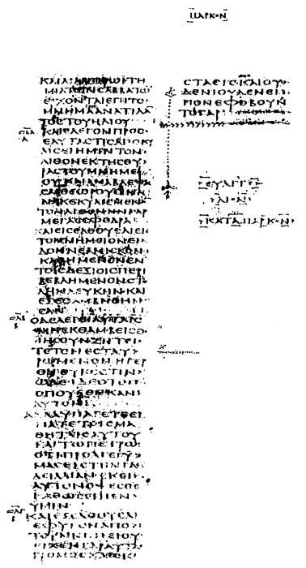
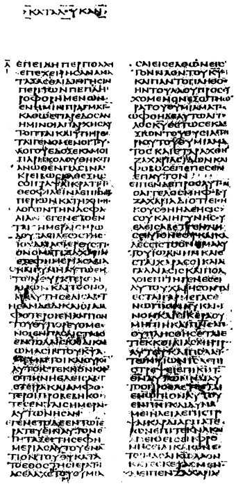
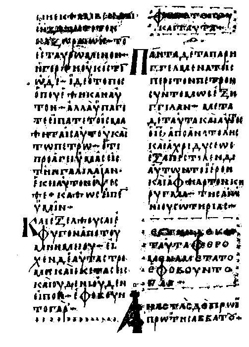
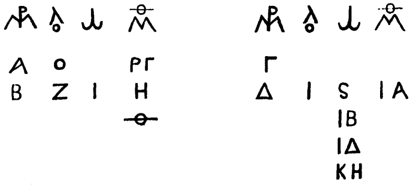
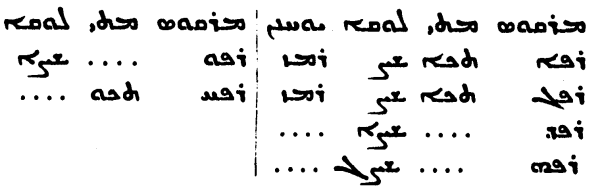

Title: The Last Twelve Verses of the Gospel According to S. Mark
Author: John William Burgon
Release date: July 27, 2008 [eBook #26134]
Language: English
Other information and formats: www.gutenberg.org/ebooks/26134
THE
THE LAST TWELVE VERSES
OF THE GOSPEL ACCORDING TO
S. MARK
Vindicated Against Recent Critical Objectors
And Established
by
John W. Burgon B.D.
Vicar of S. Mary-The-Virgin's, Fellow of Oriel College,
and Gresham Lecturer in Divinity.
With Facsimiles of Codex א And Codex L
"'Advice to you,' sir, 'in studying Divinity?' Did you say that you 'wished I would give you a few words of advice,' sir?... Then let me recommend to you the practice of always verifying your references, sir!"
Conversation of the late President Routh
Oxford and London:
James Parker and Co.
1871.
[Transcriber's Note: This e-book contains much Greek text which is central to the point of the book. In the ASCII versions of the e-book, the Greek is transliterated into Roman letters, which do not perfectly represent the Greek original; especially, accent and breathing marks do not transliterate. The HTML and PDF versions contain the true Greek text of the original book.]
On the next page is exhibited an exact Fac-simile, obtained by Photography, of fol. 28 b of the Codex Sinaiticus at S. Petersburg, (Tischendorf's א): shewing the abrupt termination of S. Mark's Gospel at the words ΕΦΟΒΟΥΝΤΟ ΓΑΡ (chap. xvi. 8), as explained at p. 70, and pp. 86-8. The original Photograph, which is here reproduced on a diminished scale, measures in height full fourteen inches and one-eighth; in breadth, full thirteen inches. It was procured for me through the friendly and zealous offices of the English Chaplain at S. Petersburg, the Rev. A. S. Thompson, B.D.; by favour of the Keeper of the Imperial Library, who has my hearty thanks for his liberality and consideration.
It will be perceived that the text begins at S. Mark xvi. 2, and ends with the first words of S. Luke i. 18.
Up to this hour, every endeavour to obtain a Photograph of the corresponding page of the Codex Vaticanus, B, (No. 1209, in the Vatican,) has proved unavailing. If the present Vindication of the genuineness of Twelve Verses of the everlasting Gospel should have the good fortune to approve itself to his Holiness, Pope Pius IX., let me be permitted in this unadorned and unusual manner,—(to which I would fain add some circumstance of respectful ceremony if I knew how,)—very humbly to entreat his Holiness to allow me to possess a Photograph, corresponding in size with the original, of the page of Codex B (it is numbered fol. 1303,) which exhibits the abrupt termination of the Gospel according to S. Mark.
J. W. B.
Oriel College, Oxford,
June 14, 1871.


Dear Sir Roundell,
I do myself the honour of inscribing this volume to you. Permit me to explain the reason why.
It is not merely that I may give expression to a sentiment of private friendship which dates back from the pleasant time when I was Curate to your Father,—whose memory I never recall without love and veneration;—nor even in order to afford myself the opportunity of testifying how much I honour you for the noble example of conscientious uprightness and integrity which you set us on a recent public occasion. It is for no such reason that I dedicate to you this vindication of the last Twelve Verses of the Gospel according to S. Mark.
It is because I desire supremely to submit the argument contained in the ensuing pages to a practised judicial intellect of the loftiest stamp. Recent Editors of the New Testament insist that these “last Twelve Verses” are not genuine. The Critics, almost to a man, avow themselves of the same opinion. Popular Prejudice has been for a long time past warmly enlisted on the same side. I am as convinced as I am of my life, that the reverse is the truth. It is not even with me as it is with certain learned friends of mine, who, admitting the adversary's premisses, content themselves with denying the validity of his inference. However true it may be,—and it is true,—that from those premisses the proposed conclusion does not follow, I yet venture to deny the correctness of those premisses altogether. I insist, on the contrary, [pg vi] that the Evidence relied on is untrustworthy,—untrustworthy in every particular.
How, in the meantime, can such an one as I am hope to persuade the world that it is as I say, while the most illustrious Biblical Critics at home and abroad are agreed, and against me? Clearly, the first thing to be done is to secure for myself a full and patient hearing. With this view, I have written a book. But next, instead of waiting for the slow verdict of Public Opinion, (which yet, I know, must come after many days,) I desiderate for the Evidence I have collected, a competent and an impartial Judge. And that is why I dedicate my book to you. If I can but get this case fairly tried, I have no doubt whatever about the result.
Whether you are able to find time to read these pages, or not, it shall content me to have shewn in this manner the confidence with which I advocate my cause; the kind of test to which I propose to bring my reasonings. If I may be allowed to say so,—S. Mark's last Twelve Verses shall no longer remain a subject of dispute among men. I am able to prove that this portion of the Gospel has been declared to be spurious on wholly mistaken grounds: and this ought in fairness to close the discussion. But I claim to have done more. I claim to have shewn, from considerations which have been hitherto overlooked, that its genuineness must needs be reckoned among the things that are absolutely certain.
I am, with sincere regard and respect,
Dear Sir Roundell,
Very faithfully yours,
JOHN W. BURGON.
Oriel,
July, 1871.
This volume is my contribution towards the better understanding of a subject which is destined, when it shall have grown into a Science, to vindicate for itself a mighty province, and to enjoy paramount attention. I allude to the Textual Criticism of the New Testament Scriptures.
That this Study is still in its infancy, all may see. The very principles on which it is based are as yet only imperfectly understood. The reason is obvious. It is because the very foundations have not yet been laid, (except to a wholly inadequate extent,) on which the future superstructure is to rise. A careful collation of every extant Codex, (executed after the manner of the Rev. F. H. Scrivener's labours in this department,) is the first indispensable preliminary to any real progress. Another, is a revised Text, not to say a more exact knowledge, of the oldest Versions. Scarcely of inferior importance would be critically correct editions of the Fathers of the Church; and these must by all means be furnished with far completer Indices of Texts than have ever yet been attempted.—There is not a single Father to be named whose Works have been hitherto furnished with even a tolerably complete Index of the places in which he [pg viii] either quotes, or else clearly refers to, the Text of the New Testament: while scarcely a tithe of the known MSS. of the Gospels have as yet been satisfactorily collated. Strange to relate, we are to this hour without so much as a satisfactory Catalogue of the Copies which are known to be extant.
But when all this has been done,—(and the Science deserves, and requires, a little more public encouragement than has hitherto been bestowed on the arduous and—let me not be ashamed to add the word—unremunerative labour of Textual Criticism,)—it will be discovered that the popular and the prevailing Theory is a mistaken one. The plausible hypothesis on which recent recensions of the Text have been for the most part conducted, will be seen to be no longer tenable. The latest decisions will in consequence be generally reversed.
I am not of course losing sight of what has been already achieved in this department of Sacred Learning. While our knowledge of the uncial MSS. has been rendered tolerably exact and complete, an excellent beginning has been made, (chiefly by the Rev. F. H. Scrivener, the most judicious living Master of Textual Criticism,) in acquainting us with the contents of about seventy of the cursive MSS. of the New Testament. And though it is impossible to deny that the published Texts of Doctors Tischendorf and Tregelles as Texts are wholly inadmissible, yet is it equally certain that by the conscientious diligence with which those distinguished Scholars have respectively [pg ix] laboured, they have erected monuments of their learning and ability which will endure for ever. Their Editions of the New Testament will not be superseded by any new discoveries, by any future advances in the Science of Textual Criticism. The MSS. which they have edited will remain among the most precious materials for future study. All honour to them! If in the warmth of controversy I shall appear to have spoken of them sometimes without becoming deference, let me here once for all confess that I am to blame, and express my regret. When they have publicly begged S. Mark's pardon for the grievous wrong they have done him, I will very humbly beg their pardon also.
In conclusion, I desire to offer my thanks to the Rev. John Wordsworth, late Fellow of Brasenose College, for his patient perusal of these sheets as they have passed through the press, and for favouring me with several judicious suggestions. To him may be applied the saying of President Routh on receiving a visit from Bishop Wordsworth at his lodgings,—“I see the learned son of a learned Father, sir!”—Let me be permitted to add that my friend inherits the Bishop's fine taste and accurate judgment also.
And now I dismiss this Work, at which I have conscientiously laboured for many days and many nights; beginning it in joy and ending it in sorrow. The College in which I have for the most part written it is designated in the preamble of its Charter and in its Foundation Statutes, (which are already much [pg x] more than half a thousand years old,) as Collegium Scholarium in Sacrâ Theologiâ studentium,—perpetuis temporibus duraturum. Indebted, under God, to the pious munificence of the Founder of Oriel for my opportunities of study, I venture, in what I must needs call evil days, to hope that I have to some extent “employed my advantages,”—(the expression occurs in a prayer used by this Society on its three solemn anniversaries,)—as our Founder and Benefactors “would approve if they were now upon earth to witness what we do.”
J. W. B.
Oriel,
July, 1871.
Subjoined, for convenience, are “the Last Twelve Verses.”
| Ἀναστὰς δὲ πρωὶ πρώτῃ σαββάτου ἐφάνη πρῶτον Μαρίᾳ τῇ Μαγδαληνῇ, ἀφ᾽ ῆς ἐκβεβλήκει ἑπτα δαιμόμια. ἐκείνη πορευθεῖσα ἀπήγγειλε τοῖς μετ᾽ αὐτοῦ γενομένοις, πενθοῦσι καὶ κλαίουσι. κἀκεῖνοι ἀκούσαντες ὅτι ζῇ καὶ ἐθεάθη ὑπ᾽ αὐτῆς ἠπίστησαν. | (9) Now when Jesus was risen early the first day of the week, He appeared first to Mary Magdalene, out of whom He had cast seven devils. (10) And she went and told them that had been with Him, as they mourned and wept. (11) And they, when they had heard that He was alive, and had been seen of her, believed not. |
| Μετὰ δὲ ταῦτα ὀυσὶν ἐξ αὐτῶν περιπατοῦσιν ἐφανερώθη ἐν ἑτέρᾳ μορφῇ, πορευομένοις εἰς ἀγρόν. κἀκεῖνοι ἀπελθόντες ἀπήγγειλαν τοῖς λοιποῖς; οὐδὲ ἐκείνοις ἐπίστευσαν. | (12) After that He appeared in another form unto two of them, as they walked, and went into the country. (13) And they went and told it unto the residue: neither believed they them. |
| Ὕστερον ἀνακειμένοις αὐτοῖς τοῖς ἕνδεκα ἐφανερώθη, καὶ ὠνείδισε τὴν ἀπιστίαν αὐτῶν καὶ σκληροκαρδίαν, ὅτι τοῖς θεασαμένοις αὐτὸν ἐγηγερμένον οὐκ ἐπίστευσαν. Καὶ εἶπεν αὐτοῖς, “Πορευθέντες εἰς τὸν κόσμον ἄπαντα, κηρύξατε τὸ εὐαγγέλιον πάσῃ τῇ κτίσει. ὁ πιστεύσας καὶ βαπτισθεὶς σωθήσεται; ὁ δὲ ἀπιστήσας κατακριθήσεται. σημεῖα δὲ τοῖς πιστεύσασι ταῦτα παρακολουθήσει; ἐν τῷ ὀνόματι μου δαιμόνια ἐκβαλοῦσι; γλώσσαις λαλήσουσι καιναῖς; ὄφεις ἀροῦσι; κὰν θανὰσιμόν τι πίωσιν, οὐ μὴ αὐτοὺς βλάψει; ἐπὶ ἀρρώστους χεῖρας ἐπιθήσουσι, καὶ καλῶς ἕξουσιν.” | (14) Afterward He appeared unto the eleven as they sat at meat, and upbraided them with their unbelief and hardness of heart, because they believed not them which had seen Him after He was risen. (15) And He said unto them, “Go ye into all the world, and preach the Gospel to every creature. (16) He that believeth and is baptized shall be saved; but he that believeth not shall be damned. (17) And these signs shall follow them that believe; In My Name shall they cast out devils; they shall speak with new tongues; (18) they shall take up serpents; and if they drink any deadly thing, it shall not hurt them; they shall lay hands on the sick, and they shall recover.” |
| Ὀ μὲν οὄν Κύριος, μετὰ τὸ λαλῆσαι αὐτοῖς, ἀνελήφθη εἰς τὸν οὐρανὸν, καὶ ἐκάθισεν ἐκ δεξιῶν τοῦ Θεοῦ; ἐκεῖνοι δὲ ἐξελθόντες ἐκήρυξαν πανταχοῦ, τοῦ Κυρίου συνεργοῦντος, καὶ τὸν λόγον βεβαιοῦντος διὰ τῶν ἐπακολουθούντων σημείων. Ἀμήν. | (19) So then after the Lord had spoken unto them, He was received up into Heaven, and sat on the Right hand of God. (20) And they went forth, and preached every where, the Lord working with them, and confirming the word with signs following. Amen. |
It has lately become the fashion to speak of the last Twelve Verses of the Gospel according to S. Mark, as if it were an ascertained fact that those verses constitute no integral part of the Gospel. It seems to be generally supposed, (1) That the evidence of MSS. is altogether fatal to their claims; (2) That “the early Fathers” witness plainly against their genuineness; (3) That, from considerations of “internal evidence” they must certainly be given up. It shall be my endeavour in the ensuing pages to shew, on the contrary, That manuscript evidence is so overwhelmingly in their favour that no room is left for doubt or suspicion:—That there is not so much as one of the Fathers, early or late, who gives it as his opinion that these verses are spurious:—and, That the argument derived from internal considerations proves on inquiry to be baseless and unsubstantial as a dream.
But I hope that I shall succeed in doing more. It shall be my endeavour to shew not only that there really is no reason whatever for calling in question the genuineness of this portion of Holy Writ, but also that there exist sufficient reasons for feeling confident that it must needs be genuine. This is clearly as much as it is possible for me [pg 002] to achieve. But when this has been done, I venture to hope that the verses in dispute will for the future be allowed to retain their place in the second Gospel unmolested.
It will of course be asked,—And yet, if all this be so, how does it happen that both in very ancient, and also in very modern times, this proposal to suppress twelve verses of the Gospel has enjoyed a certain amount of popularity? At the two different periods, (I answer,) for widely different reasons.
(1.) In the ancient days, when it was the universal belief of Christendom that the Word of God must needs be consistent with itself in every part, and prove in every part (like its Divine Author) perfectly “faithful and true,” the difficulty (which was deemed all but insuperable) of bringing certain statements in S. Mark's last Twelve Verses into harmony with certain statements of the other Evangelists, is discovered to have troubled Divines exceedingly. “In fact,” (says Mr. Scrivener,) “it brought suspicion upon these verses, and caused their omission in some copies seen by Eusebius.” That the maiming process is indeed attributable to this cause and came about in this particular way, I am unable to persuade myself; but, if the desire to provide an escape from a serious critical difficulty did not actually occasion that copies of S. Mark's Gospel were mutilated, it certainly was the reason why, in very early times, such mutilated copies were viewed without displeasure by some, and appealed to with complacency by others.
(2.) But times are changed. We have recently been assured on high authority that the Church has reversed her ancient convictions in this respect: that now, “most sound theologians have no dread whatever of acknowledging minute points of disagreement” (i.e. minute errors) “in the fourfold narrative even of the life of the Redeemer.”1 There has arisen in these last days a singular impatience of Dogmatic Truth, (especially Dogma of an unpalatable kind,) which has even rendered popular the pretext afforded by these same mutilated copies for the grave resuscitation of doubts, never as it would seem seriously entertained by any [pg 003] of the ancients; and which, at all events for 1300 years and upwards, have deservedly sunk into oblivion.
Whilst I write, that “most divine explication of the chiefest articles of our Christian belief,” the Athanasian Creed,2 is made the object of incessant assaults.3 But then it is remembered that statements quite as “uncharitable” as any which this Creed contains are found in the 16th verse of S. Mark's concluding chapter; are in fact the words of Him whose very Name is Love. The precious warning clause, I say, (miscalled “damnatory,”4) which an impertinent officiousness is for glossing with a rubric and weakening with an apology, proceeded from Divine lips,—at least if these concluding verses be genuine. How shall this inconvenient circumstance be more effectually dealt with than by accepting the suggestion of the most recent editors, that S. Mark's concluding verses are an unauthorised addition to his Gospel? “If it be acknowledged that the passage has a harsh sound,” (remarks Dean Stanley,) “unlike the usual utterances of Him who came not to condemn but to save, the discoveries of later times have shewn, almost beyond doubt, that it is not a part of S. Mark's Gospel, but an addition by another hand; of which the weakness in the external evidence coincides with the internal evidence in proving its later origin.”5
Modern prejudice, then,—added to a singularly exaggerated estimate of the critical importance of the testimony [pg 004] of our two oldest Codices, (another of the “discoveries of later times,” concerning which I shall have more to say by-and-by,)—must explain why the opinion is even popular that the last twelve verses of S. Mark are a spurious appendix to his Gospel.
Not that Biblical Critics would have us believe that the Evangelist left off at verse 8, intending that the words,—“neither said they anything to any man, for they were afraid,” should be the conclusion of his Gospel. “No one can imagine,” (writes Griesbach,) “that Mark cut short the thread of his narrative at that place.”6 It is on all hands eagerly admitted, that so abrupt a termination must be held to mark an incomplete or else an uncompleted work. How, then, in the original autograph of the Evangelist, is it supposed that the narrative proceeded? This is what no one has even ventured so much as to conjecture. It is assumed, however, that the original termination of the Gospel, whatever it may have been, has perished. We appeal, of course, to its actual termination: and,—Of what nature then, (we ask,) is the supposed necessity for regarding the last twelve verses of S. Mark's Gospel as a spurious substitute for what the Evangelist originally wrote? What, in other words, has been the history of these modern doubts; and by what steps have they established themselves in books, and won the public ear?
To explain this, shall be the object of the next ensuing chapters.
It is only since the appearance of Griesbach's second edition [1796-1806] that Critics of the New Testament have permitted themselves to handle the last twelve verses of S. Mark's Gospel with disrespect. Previous critical editions of the New Testament are free from this reproach. “There is no reason for doubting the genuineness of this portion of Scripture,” wrote Mill in 1707, after a review of the evidence (as far as he was acquainted with it) for and against. Twenty-seven years later, appeared Bengel's edition of the New Testament (1734); and Wetstein, at the end of another seventeen years (1751-2), followed in the same field. Both editors, after rehearsing the adverse testimony in extenso, left the passage in undisputed possession of its place. Alter in 1786-7, and Birch in 1788,7 (suspicious as the latter evidently was of its genuineness,) followed their predecessors' example. But Matthaei, (who also brought his labours to a close in the year 1788,) was not content to give a silent suffrage. He had been for upwards of fourteen years a laborious collator of Greek MSS. of the New Testament, and was so convinced of the insufficiency of the arguments which had been brought against these twelve verses of S. Mark, [pg 006] that with no ordinary warmth, no common acuteness, he insisted on their genuineness.
“With Griesbach,” (remarks Dr. Tregelles,)8 “Texts which may be called really critical begin;” and Griesbach is the first to insist that the concluding verses of S. Mark are spurious. That he did not suppose the second Gospel to have always ended at verse 8, we have seen already.9 He was of opinion, however, that “at some very remote period, the original ending of the Gospel perished,—disappeared perhaps from the Evangelist's own copy,—and that the present ending was by some one substituted in its place.” Griesbach further invented the following elaborate and extraordinary hypothesis to account for the existence of S. Mark xvi. 9-20.
He invites his readers to believe that when, (before the end of the second century,) the four Evangelical narratives were collected into a volume and dignified with the title of “The Gospel,”—S. Mark's narrative was furnished by some unknown individual with its actual termination in order to remedy its manifest incompleteness; and that this volume became the standard of the Alexandrine recension of the text: in other words, became the fontal source of a mighty family of MSS. by Griesbach designated as “Alexandrine.” But there will have been here and there in existence isolated copies of one or more of the Gospels; and in all of these, S. Mark's Gospel, (by the hypothesis,) will have ended abruptly at the eighth verse. These copies of single Gospels, when collected together, are presumed by Griesbach to have constituted “the Western recension.” If, in codices of this family also, the self-same termination is now all but universally found, the fact is to be accounted for, (Griesbach says,) by the natural desire which possessors of the Gospels will have experienced to supplement their imperfect copies as best they might. “Let this conjecture be accepted,” proceeds the learned veteran,—(unconscious apparently that he has been demanding acceptance for at least half-a-dozen wholly unsupported as well as entirely gratuitous conjectures,)—“and every difficulty disappears; and [pg 007] it becomes perfectly intelligible how there has crept into almost every codex which has been written, from the second century downwards, a section quite different from the original and genuine ending of S. Mark, which disappeared before the four Gospels were collected into a single volume.”—In other words, if men will but be so accommodating as to assume that the conclusion of S. Mark's Gospel disappeared before any one had the opportunity of transcribing the Evangelist's inspired autograph, they will have no difficulty in understanding that the present conclusion of S. Mark's Gospel was not really written by S. Mark.
It should perhaps be stated in passing, that Griesbach was driven into this curious maze of unsupported conjecture by the exigencies of his “Recension Theory;” which, inasmuch as it has been long since exploded, need not now occupy us. But it is worth observing that the argument already exhibited, (such as it is,) breaks down under the weight of the very first fact which its learned author is obliged to lay upon it. Codex B.,—the solitary manuscript witness for omitting the clause in question, (for Codex א had not yet been discovered,)—had been already claimed by Griesbach as a chief exponent of his so-called “Alexandrine Recension.” But then, on the Critic's own hypothesis, (as we have seen already,) Codex B. ought, on the contrary, to have contained it. How was that inconvenient fact to be got over? Griesbach quietly remarks in a foot-note that Codex B. “has affinity with the Eastern family of MSS.”—The misfortune of being saddled with a worthless theory was surely never more apparent. By the time we have reached this point in the investigation, we are reminded of nothing so much as of the weary traveller who, having patiently pursued an ignis fatuus through half the night, beholds it at last vanish; but not until it has conducted him up to his chin in the mire.
Neither Hug, nor Scholz his pupil,—who in 1808 and 1830 respectively followed Griesbach with modifications of his recension-theory,—concurred in the unfavourable sentence which their illustrious predecessor had passed on the concluding portion of S. Mark's Gospel. The latter even [pg 008] eagerly vindicated its genuineness.10 But with Lachmann,—whose unsatisfactory text of the Gospels appeared in 1842,—originated a new principle of Textual Revision; the principle, namely, of paying exclusive and absolute deference to the testimony of a few arbitrarily selected ancient documents; no regard being paid to others of the same or of yet higher antiquity. This is not the right place for discussing this plausible and certainly most convenient scheme of textual revision. That it leads to conclusions little short of irrational, is certain. I notice it only because it supplies the clue to the result which, as far as S. Mark xvi. 9-20 is concerned, has been since arrived at by Dr. Tischendorf, Dr. Tregelles, and Dean Alford,11—the three latest critics who have formally undertaken to reconstruct the sacred Text.
They agree in assuring their readers that the genuine Gospel of S. Mark extends no further than ch. xvi. ver. 8: in other words, that all that follows the words ἐφοβοῦντο γάρ is an unauthorized addition by some later hand; “a fragment,”—distinguishable from the rest of the Gospel not less by internal evidence than by external testimony. This verdict becomes the more important because it proceeds from men of undoubted earnestness and high ability; who cannot be suspected of being either unacquainted with the evidence on which the point in dispute rests, nor inexperienced in the art of weighing such evidence. Moreover, their verdict has been independently reached; is unanimous; is unhesitating; has been eagerly proclaimed by all three on many different occasions as well as in many different places;12 and [pg 009] may be said to be at present in all but undisputed possession of the field.13 The first-named Editor enjoys a vast reputation, and has been generously styled by Mr. Scrivener, “the first Biblical Critic in Europe.” The other two have produced text-books which are deservedly held in high esteem, and are in the hands of every student. The views of such men will undoubtedly colour the convictions of the next generation of English Churchmen. It becomes absolutely necessary, therefore, to examine with the utmost care the grounds of their verdict, the direct result of which is to present us with a mutilated Gospel. If they are right, there is no help for it but that the convictions of eighteen centuries in this respect must be surrendered. But if Tischendorf and Tregelles are wrong in this particular, it follows of necessity that doubt is thrown over the whole of their critical method. The case is a crucial one. Every page of theirs incurs suspicion, if their deliberate verdict in this instance shall prove to be mistaken.
1. Tischendorf disposes of the whole question in a single sentence. “That these verses were not written by Mark,” [pg 010] (he says,) “admits of satisfactory proof.” He then recites in detail the adverse external testimony which his predecessors had accumulated; remarking, that it is abundantly confirmed by internal evidence. Of this he supplies a solitary sample; but declares that the whole passage is “abhorrent” to S. Mark's manner. “The facts of the case being such,” (and with this he dismisses the subject,) “a healthy piety reclaims against the endeavours of those who are for palming off as Mark's what the Evangelist is so plainly shewn to have known nothing at all about.”14 A mass of laborious annotation which comes surging in at the close of verse 8, and fills two of Tischendorf's pages, has the effect of entirely divorcing the twelve verses in question from the inspired text of the Evangelist. On the other hand, the evidence in favour of the place is despatched in less than twelve lines. What can be the reason that an Editor of the New Testament parades elaborately every particular of the evidence, (such as it is,) against the genuineness of a considerable portion of the Gospel; and yet makes summary work with the evidence in its favour? That Tischendorf has at least entirely made up his mind on the matter in hand is plain. Elsewhere, he speaks of the Author of these verses as “Pseudo Marcus.”15
2. Dr. Tregelles has expressed himself most fully on this subject in his “Account of the Printed Text of the Greek New Testament” (1854). The respected author undertakes to shew “that the early testimony that S. Mark did not write these verses is confirmed by existing monuments.” Accordingly, he announces as the result of the propositions which he thinks he has established, “that the book of Mark himself extends no further than ἐφοβοῦντο γάρ.” He is the [pg 011] only critic I have met with to whom it does not seem incredible that S. Mark did actually conclude his Gospel in this abrupt way: observing that “perhaps we do not know enough of the circumstances of S. Mark when he wrote his Gospel to say whether he did or did not leave it with a complete termination.” In this modest suggestion at least Dr. Tregelles is unassailable, since we know absolutely nothing whatever about “the circumstances of S. Mark,” (or of any other Evangelist,) “when he wrote his Gospel:” neither indeed are we quite sure who S. Mark was. But when he goes on to declare, notwithstanding, “that the remaining twelve verses, by whomsoever written, have a full claim to be received as an authentic part of the second Gospel;” and complains that “there is in some minds a kind of timidity with regard to Holy Scripture, as if all our notions of its authority depended on our knowing who was the writer of each particular portion; instead of simply seeing and owning that it was given forth from God, and that it is as much His as were the Commandments of the Law written by His own finger on the tables of stone;”16—the learned writer betrays a misapprehension of the question at issue, which we are least of all prepared to encounter in such a quarter. We admire his piety but it is at the expense of his critical sagacity. For the question is not at all one of authorship, but only one of genuineness. Have the codices been mutilated which do not contain these verses? If they have, then must these verses be held to be genuine. But on the contrary, Have the codices been supplemented which contain them? Then are these verses certainly spurious. There is no help for it but they must either be held to be an integral part of the Gospel, and therefore, in default of any proof to the contrary, as certainly by S. Mark as any other twelve verses which can be named; or else an unauthorized addition to it. If they belong to the post-apostolic age it is idle to insist on their Inspiration, and to claim that this “authentic anonymous addition to what Mark himself wrote down” is as much the work of God “as were the Ten Commandments written by His own [pg 012] finger on the tables of stone.” On the other hand, if they “ought as much to be received as part of our second Gospel as the last chapter of Deuteronomy (unknown as the writer is) is received as the right and proper conclusion of the book of Moses,”—it is difficult to understand why the learned editor should think himself at liberty to sever them from their context, and introduce the subscription ΚΑΤΑ ΜΑΡΚΟΝ after ver. 8. In short, “How persons who believe that these verses did not form a part of the original Gospel of Mark, but were added afterwards, can say that they have a good claim to be received as an authentic or genuine part of the second Gospel, that is, a portion of canonical Scripture, passes comprehension.” It passes even Dr. Davidson's comprehension; (for the foregoing words are his;) and Dr. Davidson, as some of us are aware, is not a man to stick at trifles.17
3. Dean Alford went a little further than any of his predecessors. He says that this passage “was placed as a completion of the Gospel soon after the Apostolic period,—the Gospel itself having been, for some reason unknown to us, left incomplete. The most probable supposition” (he adds) “is, that the last leaf of the original Gospel was torn away.” The italics in this conjecture (which was originally Griesbach's) are not mine. The internal evidence (declares the same learned writer) “preponderates vastly against the authorship of Mark;” or (as he elsewhere expresses it) against “its genuineness as a work of the Evangelist.” Accordingly, in his Prolegomena, (p. 38) he describes it as “the remarkable fragment at the end of the Gospel.” After this, we are the less astonished to find that he closes the second Gospel at ver. 8; introduces the Subscription there; and encloses the twelve verses which follow within heavy brackets. Thus, whereas from the days of our illustrious countryman [pg 013] Mill (1707), the editors of the N. T. have either been silent on the subject, or else have whispered only that this section of the Gospel is to be received with less of confidence than the rest,—it has been reserved for the present century to convert the ancient suspicions into actual charges. The latest to enter the field have been the first to execute Griesbach's adverse sentence pronounced fifty years ago, and to load the blessed Evangelist with bonds.
It might have been foreseen that when Critics so conspicuous permit themselves thus to handle the precious deposit, others would take courage to hurl their thunderbolts in the same direction with the less concern. “It is probable,” (says Abp. Thomson in the Bible Dictionary,) “that this section is from a different hand, and was annexed to the Gospels soon after the times of the Apostles.”18—The Rev. T. S. Green,19 (an able scholar, never to be mentioned without respect,) considers that “the hypothesis of very early interpolation satisfies the body of facts in evidence,”—which “point unmistakably in the direction of a spurious origin.”—“In respect of Mark's Gospel,” (writes Professor Norton in a recent work on the Genuineness of the Gospels,) “there is ground for believing that the last twelve verses were not written by the Evangelist, but were added by some other writer to supply a short conclusion to the work, which some cause had prevented the author from completing.”20—Professor Westcott—who, jointly with the Rev. F. J. A. Hort, announces a revised Text—assures us that “the original text, from whatever cause it may have happened, terminated abruptly after the account of the Angelic vision.” The rest “was added at another time, and probably by another hand.” “It is in vain to speculate on the causes of this abrupt close.” “The remaining verses cannot be regarded as part of the original narrative of S. Mark”21—Meyer insists that this is an “apocryphal fragment,” and reproduces all the arguments, external and internal, which have ever been [pg 014] arrayed against it, without a particle of misgiving. The “note” with which he takes leave of the subject is even insolent.22 A comparison (he says) of these “fragments” (ver. 9-18 and 19) with the parallel places in the other Gospels and in the Acts, shews how vacillating and various were the Apostolical traditions concerning the appearances of our Lord after His Resurrection, and concerning His Ascension. (“Hast thou killed, and also taken possession?”)
Such, then, is the hostile verdict concerning these last twelve verses which I venture to dispute, and which I trust I shall live to see reversed. The writers above cited will be found to rely (1.) on the external evidence of certain ancient MSS.; and (2.) on Scholia which state “that the more ancient and accurate copies terminated the Gospel at ver. 8.” (3.) They assure us that this is confirmed by a formidable array of Patristic authorities. (4.) Internal proof is declared not to be wanting. Certain incoherences and inaccuracies are pointed out. In fine, “the phraseology and style of the section” are declared to be “unfavourable to its authenticity;” not a few of the words and expressions being “foreign to the diction of Mark.”—I propose to shew that all these confident and imposing statements are to a great extent either mistakes or exaggerations, and that the slender residuum of fact is about as powerless to achieve the purpose of the critics as were the seven green withs of the Philistines to bind Samson.
In order to exhibit successfully what I have to offer on this subject, I find it necessary to begin (in the next chapter) at the very beginning. I think it right, however, in this place to premise a few plain considerations which will be of use to us throughout all our subsequent inquiry; and which indeed we shall never be able to afford to lose sight of for long.
The question at issue being simply this,—Whether it is reasonable to suspect that the last twelve verses of S. Mark are a spurious accretion and unauthorized supplement to his Gospel, or not?—the whole of our business clearly resolves itself into an examination of what has been urged in proof [pg 015] that the former alternative is the correct one. Our opponents maintain that these verses did not form part of the original autograph of the Evangelist. But it is a known rule in the Law of Evidence that the burthen of proof lies on the party who asserts the affirmative of the issue.23 We have therefore to ascertain in the present instance what the supposed proof is exactly worth; remembering always that in this subject-matter a high degree of probability is the only kind of proof which is attainable. When, for example, it is contended that the famous words in S. John's first Epistle (1 S. John v. 7, 8,) are not to be regarded as genuine, the fact that they are away from almost every known Codex is accepted as a proof that they were also away from the autograph of the Evangelist. On far less weighty evidence, in fact, we are at all times prepared to yield the hearty assent of our understanding in this department of sacred science.
And yet, it will be found that evidence of overwhelming weight, if not of an entirely different kind, is required in the present instance: as I proceed to explain.
1. When it is contended that our Lord's reply to the young ruler (S. Matt. xix. 17) was not Τί με λέγεις ἀγαθόν; οὐδεὶς ἀγαθὸς, εἰ μὴ εῖς, ὁ Θεός,—it is at the same time insisted that it was Τί με ἐρωτᾷς περὶ τοῦ ἀγαθοῦ; εῖς ἐστὶν ὁ ἀγαθός. It is proposed to omit the former words only because an alternative clause is at hand, which it is proposed to substitute in its room.
2. Again. When it is claimed that some given passage of the Textus Receptus,—S. Mark ch xv. 28, for example, (καὶ ἐπληρώθη ἡ γραφὴ ἡ λέγουσα, Καὶ μετὰ ἀνόμων ἐλογίσθη,) or the Doxology in S. Matth. vi. 13,—is spurious, all that is pretended is that certain words are an unauthorized addition to the inspired text; and that by simply omitting them we are so far restoring the Gospel to its original integrity.—The same is to be said concerning every other charge of interpolation which can be named. If the celebrated “pericopa de adulterâ,” for instance, be indeed [pg 016] not genuine, we have but to leave out those twelve verses of S. John's Gospel, and to read chap. vii. 52 in close sequence with chap. viii. 12; and we are assured that we are put in possession of the text as it came from the hands of its inspired Author. Nor, (it must be admitted), is any difficulty whatever occasioned thereby; for there is no reason assignable why the two last-named verses should not cohere; (there is no internal improbability, I mean, in the supposition;) neither does there exist any à priori reason why a considerable portion of narrative should be looked for in that particular part of the Gospel.
3. But the case is altogether different, as all must see, when it is proposed to get rid of the twelve verses which for 1700 years and upwards have formed the conclusion of S. Mark's Gospel; no alternative conclusion being proposed to our acceptance. For let it be only observed what this proposal practically amounts to and means.
(a.) And first, it does not mean that S. Mark himself, with design, brought his Gospel to a close at the words ἐφοβοῦντο γάρ. That supposition would in fact be irrational. It does not mean, I say, that by simply leaving out those last twelve verses we shall be restoring the second Gospel to its original integrity. And this it is which makes the present a different case from every other, and necessitates a fuller, if not a different kind of proof.
(b.) What then? It means that although an abrupt and impossible termination would confessedly be the result of omitting verses 9-20, no nearer approximation to the original autograph of the Evangelist is at present attainable. Whether S. Mark was interrupted before he could finish his Gospel,—(as Dr. Tregelles and Professor Norton suggest;)—in which case it will have been published by its Author in an unfinished state: or whether “the last leaf was torn away” before a single copy of the original could be procured,—(a view which is found to have recommended itself to Griesbach;)—in which case it will have once had a different termination from at present; which termination however, by the hypothesis, has since been irrecoverably lost;—(and to one of these two wild hypotheses the critics are [pg 017] logically reduced;)—this we are not certainly told. The critics are only agreed in assuming that S. Mark's Gospel was at first without the verses which at present conclude it.
But this assumption, (that a work which has been held to be a complete work for seventeen centuries and upwards was originally incomplete,) of course requires proof. The foregoing improbable theories, based on a gratuitous assumption, are confronted in limine with a formidable obstacle which must be absolutely got rid of before they can be thought entitled to a serious hearing. It is a familiar and a fatal circumstance that the Gospel of S. Mark has been furnished with its present termination ever since the second century of the Christian æra.24 In default, therefore, of distinct historical evidence or definite documentary proof that at some earlier period than that it terminated abruptly, nothing short of the utter unfitness of the verses which at present conclude S. Mark's Gospel to be regarded as the work of the Evangelist, would warrant us in assuming that they are the spurious accretion of the post-apostolic age: and as such, at the end of eighteen centuries, to be deliberately rejected. We must absolutely be furnished, I say, with internal evidence of the most unequivocal character; or else with external testimony of a direct and definite kind, if we are to admit that the actual conclusion of S. Mark's Gospel is an unauthorized substitute for something quite different that has been lost. I can only imagine one other thing which could induce us to entertain such an opinion; and that would be the general consent of MSS., Fathers, and Versions in leaving these verses out. Else, it is evident that we are logically forced to adopt the far easier supposition that (not S. Mark, but) some copyist of the third century left a copy of S. Mark's Gospel unfinished; which unfinished copy became the fontal source of the mutilated copies which have come down to our own times.25
[pg 018]I have thought it right to explain the matter thus fully at the outset; not in order to prejudge the question, (for that could answer no good purpose,) but only in order that the reader may have clearly set before him the real nature of the issue. “Is it reasonable to suspect that the concluding verses of S. Mark are a spurious accretion and unauthorized supplement to his Gospel, or not?” That is the question which we have to consider,—the one question. And while I proceed to pass under careful review all the evidence on this subject with which I am acquainted, I shall be again and again obliged to direct the attention of my reader to its bearing on the real point at issue. In other words, we shall have again and again to ask ourselves, how far it is rendered probable by each fresh article of evidence that S. Mark's Gospel, when it left the hands of its inspired Author, was an unfinished work; the last chapter ending abruptly at ver. 8?
I will only point out, before passing on, that the course which has been adopted towards S. Mark xvi. 9-20, by the latest Editors of the New Testament, is simply illogical. Either they regard these verses as possibly genuine, or else as certainly spurious. If they entertain (as they say they do) a decided opinion that they are not genuine, they ought (if they would be consistent) to banish them from the text.26 Conversely, since they do not banish them from the text, they have no right to pass a fatal sentence upon them; to designate their author as “pseudo-Marcus;” to handle them in contemptuous fashion. The plain truth is, these learned men are better than their theory; the worthlessness of which they are made to feel in the present most conspicuous instance. It reduces them to perplexity. It has landed them in inconsistency and error.—They will find it necessary in the end to reverse their convictions. They cannot too speedily reconsider their verdict, and retrace their steps.
The present inquiry must be conducted solely on grounds of Evidence, external and internal. For the full consideration of the former, seven Chapters will be necessary:27 for a discussion of the latter, one seventh of that space will suffice.28 We have first to ascertain whether the external testimony concerning S. Mark xvi. 9-20 is of such a nature as to constrain us to admit that it is highly probable that those twelve verses are a spurious appendix to S. Mark's Gospel.
1. It is well known that for determining the Text of the New Testament, we are dependent on three chief sources of information: viz. (1.) on Manuscripts,—(2.) on Versions,—(3.) on Fathers. And it is even self-evident that the most ancient MSS.,—the earliest Versions,—the oldest of the Fathers, will probably be in every instance the most trustworthy witnesses.
2. Further, it is obvious that a really ancient Codex of the Gospels must needs supply more valuable critical help in establishing the precise Text of Scripture than can possibly be rendered by any Translation, however faithful: while Patristic citations are on the whole a less decisive authority, even than Versions. The reasons are chiefly these:—(a.) Fathers often quote Scripture loosely, if not licentiously; and sometimes allude only when they seem to quote. (b.) They appear to have too often depended on their memory, and sometimes are demonstrably loose and inaccurate [pg 020] in their citations; the same Father being observed to quote the same place in different ways. (c.) Copyists and Editors may not be altogether depended upon for the exact form of such supposed quotations. Thus the evidence of Fathers must always be to some extent precarious.
3. On the other hand, it cannot be too plainly pointed out that when,—instead of certifying ourselves of the actual words employed by an Evangelist, their precise form and exact sequence,—our object is only to ascertain whether a considerable passage of Scripture is genuine or not; is to be rejected or retained; was known or was not known in the earliest ages of the Church; then, instead of supplying the least important evidence, Fathers become by far the most valuable witnesses of all. This entire subject may be conveniently illustrated by an appeal to the problem before us.
4. Of course, if we possessed copies of the Gospels coeval with their authors, nothing could compete with such evidence. But then unhappily nothing of the kind is the case. The facts admit of being stated within the compass of a few lines. We have one Codex (the Vatican, B) which is thought to belong to the first half of the ivth century; and another, the newly discovered Codex Sinaiticus, (at St. Petersburg, א) which is certainly not quite so old,—perhaps by 50 years. Next come two famous codices; the Alexandrine (in the British Museum, A) and the Codex Ephraemi (in the Paris Library, C), which are probably from 50 to 100 years more recent still. The Codex Bezae (at Cambridge, D) is considered by competent judges to be the depository of a recension of the text as ancient as any of the others. Notwithstanding its strangely depraved condition therefore,—the many “monstra potius quam variae lectiones” which it contains,—it may be reckoned with the preceding four, though it must be 50 or 100 years later than the latest of them. After this, we drop down, (as far as S. Mark is concerned,) to 2 uncial MSS. of the viiith century,—7 of the ixth,—4 of the ixth or xth,29 while cursives of the xith and xiith [pg 021] centuries are very numerous indeed,—the copies increasing in number in a rapid ratio as we descend the stream of Time. Our primitive manuscript witnesses, therefore, are but five in number at the utmost. And of these it has never been pretended that the oldest is to be referred to an earlier date than the beginning of the ivth century, while it is thought by competent judges that the last named may very possibly have been written quite late in the vith.
5. Are we then reduced to this fourfold, (or at most fivefold,) evidence concerning the text of the Gospels,—on evidence of not quite certain date, and yet (as we all believe) not reaching further back than to the ivth century of our æra? Certainly not. Here, Fathers come to our aid. There are perhaps as many as an hundred Ecclesiastical Writers older than the oldest extant Codex of the N. T.: while between A.D. 300 and A.D. 600, (within which limits our five oldest MSS. may be considered certainly to fall,) there exist about two hundred Fathers more. True, that many of these have left wondrous little behind them; and that the quotations from Holy Scripture of the greater part may justly be described as rare and unsatisfactory. But what then? From the three hundred, make a liberal reduction; and an hundred writers will remain who frequently quote the New Testament, and who, when they do quote it, are probably as trustworthy witnesses to the Truth of Scripture as either Cod. א or Cod. B. We have indeed heard a great deal too much of the precariousness of this class of evidence: not nearly enough of the gross inaccuracies which disfigure the text of those two Codices. Quite surprising is it to discover to what an extent Patristic quotations from the New Testament have evidently retained their exact original form. What we chiefly desiderate at this time is a more careful revision of the text of the Fathers, and more skilfully elaborated indices of the works of each: not one of them having been hitherto satisfactorily indexed. It would be easy to demonstrate the importance of bestowing far more attention on this subject than it seems to have hitherto enjoyed: but I shall content myself with citing a single instance; and for this, (in order not to distract the reader's [pg 022] attention), I shall refer him to the Appendix.30 What is at least beyond the limits of controversy, whenever the genuineness of a considerable passage of Scripture is the point in dispute, the testimony of Fathers who undoubtedly recognise that passage, is beyond comparison the most valuable testimony we can enjoy.
6. For let it be only considered what is implied by a Patristic appeal to the Gospel. It amounts to this:—that a conspicuous personage, probably a Bishop of the Church,—one, therefore, whose history, date, place, are all more or less matter of notoriety,—gives us his written assurance that the passage in question was found in that copy of the Gospels which he was accustomed himself to employ; the uncial codex, (it has long since perished) which belonged to himself or to the Church which he served. It is evident, in short, that any objection to quotations from Scripture in the writings of the ancient Fathers can only apply to the form of those quotations; not to their substance. It is just as certain that a verse of Scripture was actually read by the Father who unmistakedly refers to it, as if we had read it with him; even though the gravest doubts may be entertained as to the “ipsissima verba” which were found in his own particular copy. He may have trusted to his memory: or copyists may have taken liberties with his writings: or editors may have misrepresented what they found in the written copies. The form of the quoted verse, I repeat, may have suffered almost to any extent. The substance, on the contrary, inasmuch as it lay wholly beyond their province, may be looked upon as an indisputable fact.
7. Some such preliminary remarks, (never out of place when quotations from the Fathers are to be considered,) cannot well be withheld when the most venerable Ecclesiastical writings are appealed to. The earliest of the Fathers are observed to quote with singular licence,—to allude rather than to quote. Strange to relate, those ancient men seem scarcely to have been aware of the grave responsibility they incurred when they substituted expressions of their own for the utterances of the Spirit. It is evidently not so much [pg 023] that their memory is in fault, as their judgment,—in that they evidently hold themselves at liberty to paraphrase, to recast, to reconstruct.31
I. Thus, it is impossible to resist the inference that Papias refers to S. Mark xvi. 18 when he records a marvellous tradition concerning “Justus surnamed Barsabas,” “how that after drinking noxious poison, through the Lord's grace he experienced no evil consequence.”32 He does not give the words of the Evangelist. It is even surprising how completely he passes them by; and yet the allusion to the place just cited is manifest. Now, Papias is a writer who lived so near the time of the Apostles that he made it his delight to collect their traditional sayings. His date (according to Clinton) is A.D. 100.
II. Justin Martyr, the date of whose first Apology is A.D. 151, is observed to say concerning the Apostles that, after our Lord's Ascension,—ἐξελθόντες πανταχοῦ ἐκήρυξαν:33 which is nothing else but a quotation from the last verse of S. Mark's Gospel,—ἐκεῖνοι δὲ ἐξελθόντες ἐκήρυξαν πανταχοῦ. And thus it is found that the conclusion of S. Mark's Gospel was familiarly known within fifty years of the death of the last of the Evangelists.
III. When Irenæus, in his third Book against Heresies, deliberately quotes and remarks upon the 19th verse of the last chapter of S. Mark's Gospel,34 we are put in possession of [pg 024] the certain fact that the entire passage now under consideration was extant in a copy of the Gospels which was used by the Bishop of the Church of Lyons sometime about the year A.D. 180, and which therefore cannot possibly have been written much more than a hundred years after the date of the Evangelist himself: while it may have been written by a contemporary of S. Mark, and probably was written by one who lived immediately after his time.—Who sees not that this single piece of evidence is in itself sufficient to outweigh the testimony of any codex extant? It is in fact a mere trifling with words to distinguish between “Manuscript” and “Patristic” testimony in a case like this: for (as I have already explained) the passage quoted from S. Mark's Gospel by Irenæus is to all intents and purposes a fragment from a dated manuscript; and that MS., demonstrably older by at least one hundred and fifty years than the oldest copy of the Gospels which has come down to our times.
IV. Take another proof that these concluding verses of S. Mark were in the second century accounted an integral part of his Gospel. Hippolytus, Bishop of Portus near Borne (190-227), a contemporary of Irenæus, quotes the 17th and 18th verses in his fragment Περὶ Χαρισμάτων.35 [pg 025] Also in his Homily on the heresy of Noetus,36 Hippolytus has a plain reference to this section of S. Mark's Gospel. To an inattentive reader, the passage alluded to might seem to be only the fragment of a Creed; but this is not the case. In the Creeds, Christ is invariably spoken of as ανελθόντα: in the Scriptures, invariably as ἀναληθέντα.37 So that when Hippolytus says of Him, ἀναλαμβάνεται εἰς οὐρανοὺς καὶ ἐκ δεξιῶν Πατρὸς καθίζεται, the reference must needs be to S. Mark xvi. 19.
V. At the Seventh Council of Carthage held under Cyprian, A.D. 256, (on the baptizing of Heretics,) Vincentius, Bishop of Thibari, (a place not far from Carthage,) in the presence of the eighty-seven assembled African bishops, quoted two of the verses under consideration;38 and Augustine, about a century and a half later, in his reply, recited the words afresh.39
VI. The Apocryphal Acta Pilati (sometimes called the “Gospel of Nicodemus”) Tischendorf assigns without hesitation to the iiird century; whether rightly or wrongly I have no means of ascertaining. It is at all events a very ancient forgery, and it contains the 15th, 16th, 17th and 18th verses of this chapter.40
VII. This is probably the right place to mention that ver. 15 is clearly alluded to in two places of the (so-called) “Apostolical Constitutions;”41 and that verse 16 is quoted (with [pg 026] no variety of reading from the Textus Receptus42) in an earlier part of the same ancient work. The “Constitutions” are assigned to the iiird or the ivth century.43
VIII and IX. It will be shewn in Chapter V. that Eusebius, the Ecclesiastical Historian, was profoundly well acquainted with these verses. He discusses them largely, and (as I shall prove in the chapter referred to) was by no means disposed to question their genuineness. His Church History was published A.D. 325.
Marinus also, (whoever that individual may have been,) a contemporary of Eusebius,—inasmuch as he is introduced to our notice by Eusebius himself as asking a question concerning the last twelve verses of S. Mark's Gospel without a trace of misgiving as to the genuineness of that about which he inquires,—is a competent witness in their favor who has hitherto been overlooked in this discussion.
X. Tischendorf and his followers state that Jacobus Nisibenus quotes these verses. For “Jacobus Nisibenus” read “Aphraates the Persian Sage,” and the statement will be correct. The history of the mistake is curious.
Jerome, in his Catalogue of Ecclesiastical writers, makes no mention of Jacob of Nisibis,—a famous Syrian Bishop who was present at the Council of Nicæa, A.D. 325. Gennadius of Marseille, (who carried on Jerome's list to the year 495) asserts that the reason of this omission was Jerome's ignorance of the Syriac language; and explains that Jacob was the author of twenty-two Syriac Homilies.44 Of these, there exists a very ancient Armenian translation; which was accordingly edited as the work of Jacobus Nisibenus with a Latin version, at Rome, in 1756. Gallandius reprinted both the Armenian and the Latin; and to Gallandius (vol. v.) we are referred whenever “Jacobus Nisibenus” is quoted.
[pg 027]But the proposed attribution of the Homilies in question,—though it has been acquiesced in for nearly 1400 years,—is incorrect. Quite lately the Syriac originals have come to light, and they prove to be the work of Aphraates, “the Persian Sage,”—a Bishop, and the earliest known Father of the Syrian Church. In the first Homily, (which bears date A.D. 337), verses 16, 17, 18 of S. Mark xvi. are quoted,45—yet not from the version known as the Curetonian Syriac, nor yet from the Peshito exactly.46—Here, then, is another wholly independent witness to the last twelve verses of S. Mark, coeval certainly with the two oldest copies of the Gospel extant,—B and א.
XI. Ambrose, Archbishop of Milan (A.D. 374-397) freely quotes this portion of the Gospel,—citing ver. 15 four times: verses 16, 17 and 18, each three times: ver. 20, once.47
XII. The testimony of Chrysostom (A.D. 400) has been all but overlooked. In part of a Homily claimed for him by his Benedictine Editors, he points out that S. Luke alone of the Evangelists describes the Ascension: S. Matthew and S. John not speaking of it,—S. Mark recording the event only. Then he quotes verses 19, 20. “This” (he adds) “is the end of the Gospel. Mark makes no extended mention of the Ascension.”48 Elsewhere he has an unmistakable reference to S. Mark xvi. 9.49
XIII. Jerome, on a point like this, is entitled to more attention than any other Father of the Church. Living at a very early period, (for he was born in 331 and died in 420,)—endowed with extraordinary Biblical learning,—a man of excellent judgment,—and a professed Editor of [pg 028] the New Testament, for the execution of which task he enjoyed extraordinary facilities,—his testimony is most weighty. Not unaware am I that Jerome is commonly supposed to be a witness on the opposite side: concerning which mistake I shall have to speak largely in Chapter V. But it ought to be enough to point out that we should not have met with these last twelve verses in the Vulgate, had Jerome held them to be spurious.50 He familiarly quotes the 9th verse in one place of his writings;51 in another place he makes the extraordinary statement that in certain of the copies, (especially the Greek,) was found after ver. 14 the reply of the eleven Apostles, when our Saviour “upbraided them with their unbelief and hardness of heart, because they believed not them which had seen Him after He was risen.”52 To discuss so weak and worthless a forgery,—no trace of which is found in any MS. in existence, and of which nothing whatever is known except what Jerome here tells us,—would be to waste our time indeed. The fact remains, however, that Jerome, besides giving these last twelve verses a place in the Vulgate, quotes S. Mark xvi. 14, as well as ver. 9, in the course of his writings.
XIV. It was to have been expected that Augustine would quote these verses: but he more than quotes them. He brings them forward again and again,53—discusses them as the work of S. Mark,—remarks that “in diebus Paschalibus,” S. Mark's narrative of the Resurrection was publicly [pg 029] read in the Church.54 All this is noteworthy. Augustine flourished A.D. 395-430.
XV. and XVI. Another very important testimony to the genuineness of the concluding part of S. Mark's Gospel is furnished by the unhesitating manner in which Nestorius, the heresiarch, quotes ver. 20; and Cyril of Alexandria accepts his quotation, adding a few words of his own.55 Let it be borne in mind that this is tantamount to the discovery of two dated codices containing the last twelve verses of S. Mark,—and that date anterior (it is impossible to say by how many years) to A.D. 430.
XVII. Victor of Antioch, (concerning whom I shall have to speak very largely in Chapter V.,) flourished about A.D. 425. The critical testimony which he bears to the genuineness of these verses is more emphatic than is to be met with in the pages of any other ancient Father. It may be characterized as the most conclusive testimony which it was in his power to render.
XVIII. Hesychius of Jerusalem, by a singular oversight, has been reckoned among the impugners of these verses. He is on the contrary their eager advocate and champion. It seems to have escaped observation that towards the close of his “Homily on the Resurrection,” (published in the works of Gregory of Nyssa, and erroneously ascribed to that Father,) Hesychius appeals to the 19th verse, and quotes it as S. Mark's at length.56 The date of Hesychius is uncertain; but he may, I suppose, be considered to belong to the vith century. His evidence is discussed in Chapter V.
XIX. This list shall be brought to a close with a reference to the Synopsis Scripturae Sacrae,—an ancient work [pg 030] ascribed to Athanasius,57 but probably not the production of that Father. It is at all events of much older date than any of the later uncials; and it rehearses in detail the contents of S. Mark xvi. 9-20.58
It would be easy to prolong this enumeration of Patristic authorities; as, by appealing to Gregentius in the vith century, and to Gregory the Great, and Modestus, patriarch of Constantinople in the viith;—to Ven. Bede and John Damascene in the viiith;—to Theophylact in the xith;—to Euthymius in the xiith59: but I forbear. It would add no strength to my argument that I should by such evidence support it; as the reader will admit when he has read my Xth chapter.
It will be observed then that three competent Patristic witnesses of the iind century,—four of the iiird,—six of the ivth,—four of the vth,—and two (of uncertain date, but probably) of the vith,—have admitted their familiarity with these “last Twelve Verses.” Yet do they not belong to one particular age, school, or country. They come, on the contrary, from every part of the ancient Church: Antioch and [pg 031] Constantinople,—Hierapolis, Cæsarea and Edessa,—Carthage, Alexandria and Hippo,—Rome and Portus. And thus, upwards of nineteen early codexes have been to all intents and purposes inspected for us in various lands by unprejudiced witnesses,—seven of them at least of more ancient date than the oldest copy of the Gospels extant.
I propose to recur to this subject for an instant when the reader has been made acquainted with the decisive testimony which ancient Versions supply. But the Versions deserve a short Chapter to themselves.
It was declared at the outset that when we are seeking to establish in detail the Text of the Gospels, the testimony of Manuscripts is incomparably the most important of all. To early Versions, the second place was assigned. To Patristic citations, the third. But it was explained that whenever (as here) the only question to be decided is whether a considerable portion of Scripture be genuine or not, then, Patristic references yield to no class of evidence in importance. To which statement it must now be added that second only to the testimony of Fathers on such occasions is to be reckoned the evidence of the oldest of the Versions. The reason is obvious, (a.) We know for the most part the approximate date of the principal ancient Versions of the New Testament:—(b.) Each Version is represented by at least one very ancient Codex:—and (c.) It may be safely assumed that Translators were never dependant on a single copy of the original Greek when they executed their several Translations. Proceed we now to ascertain what evidence the oldest of the Versions bear concerning the concluding verses of S. Mark's Gospel: and first of all for the Syriac.
I. “Literary history,” (says Mr. Scrivener,) “can hardly afford a more powerful case than has been established for the identity of the Version of the Syriac now called the ‘Peshito’ with that used by the Eastern Church long before the great schism had its beginning, in the native land [pg 033] of the blessed Gospel.” The Peshito is referred by common consent to the iind century of our æra; and is found to contain the verses in question.
II. This, however, is not all. Within the last thirty years, fragments of another very ancient Syriac translation of the Gospels, (called from the name of its discoverer “The Curetonian Syriac,”) have come to light:60 and in this translation also the verses in question are found.61 This fragmentary codex is referred by Cureton to the middle of the vth century. At what earlier date the Translation may have been executed,—as well as how much older the original Greek copy may have been which this translator employed,—can of course only be conjectured. But it is clear that we are listening to another truly primitive witness to the genuineness of the text now under consideration;—a witness (like the last) vastly more ancient than either the Vatican Codex B, or the Sinaitic Codex א; more ancient, therefore, than any Greek copy of the Gospels in existence. We shall not be thought rash if we claim it for the iiird century.
III. Even this, however, does not fully represent the sum of the testimony which the Syriac language bears on this subject. Philoxenus, Monophysite Bishop of Mabug (Hierapolis) in Eastern Syria, caused a revision of the Peshito Syriac to be executed by his Chorepiscopus Polycarp, A.D. 508; and by the aid of three62 approved and accurate Greek manuscripts, this revised version of Polycarp was again revised by Thomas of Hharkel, in the monastery of Antonia at Alexandria, A.D. 616. The Hharklensian Revision, (commonly called the “Philoxenian,”) is therefore an extraordinary monument of ecclesiastical antiquity indeed: for, being the Revision of a revised Translation of the New Testament known to have been executed from MSS. which must have been at least as old as the vth century, it exhibits [pg 034] the result of what may be called a collation of copies made at a time when only four of our extant uncials were in existence. Here, then, is a singularly important accumulation of manuscript evidence on the subject of the verses which of late years it has become the fashion to treat as spurious. And yet, neither by Polycarp nor by Thomas of Hharkel, are the last twelve verses of S. Mark's Gospel omitted.63
To these, if I do not add the “Jerusalem version,”—(as an independent Syriac translation of the Ecclesiastical Sections, perhaps of the vth century, is called,64)—it is because our fourfold Syriac evidence is already abundantly sufficient. In itself, it far outweighs in respect of antiquity anything that can be shewn on the other side. Turn we next to the Churches of the West.
IV. That Jerome, at the bidding of Pope Damasus (A.D. 382), was the author of that famous Latin version of the Scriptures called The Vulgate, is known to all. It seems scarcely possible to overestimate the critical importance of such a work,—executed at such a time,—under such auspices,—and by a man of so much learning and sagacity as Jerome. When it is considered that we are here presented with the results of a careful examination of the best Greek Manuscripts to which a competent scholar had access in the middle of the fourth century,—(and Jerome assures us that [pg 035] he consulted several,)—we learn to survey with diminished complacency our own slender stores (if indeed any at all exist) of corresponding antiquity. It is needless to add that the Vulgate contains the disputed verses: that from no copy of this Version are they away. Now, in such a matter as this, Jerome's testimony is very weighty indeed.
V. The Vulgate, however, was but the revision of a much older translation, generally known as the Vetus Itala. This Old Latin, which is of African origin and of almost Apostolic antiquity, (supposed of the iind century,) conspires with the Vulgate in the testimony which it bears to the genuineness of the end of S. Mark's Gospel:65—an emphatic witness that in the African province, from the earliest time, no doubt whatever was entertained concerning the genuineness of these last twelve verses.
VI. The next place may well be given to the venerable version of the Gothic Bishop Ulphilas,—A.D. 350. Himself a Cappadocian, Ulphilas probably derived his copies from Asia Minor. His version is said to have been exposed to certain corrupting influences; but the unequivocal evidence which it bears to the last verses of S. Mark is at least unimpeachable, and must be regarded as important in the highest degree.66 The oldest extant copy of the Gothic of Ulphilas is assigned to the vth or early in the vith century: and the verses in question are there also met with.
VII. and VIII. The ancient Egyptian versions call next for notice: their testimony being so exceedingly ancient and respectable. The Memphitic, or dialect of Lower Egypt, (less properly called the “Coptic” version), which is assigned to the ivth or vth century, contains S. Mark xvi. 9-20.—Fragments of the Thebaic, or dialect of Upper Egypt, (a distinct version and of considerably earlier date, [pg 036] less properly called the “Sahidic,”) survive in MSS. of very nearly the same antiquity: and one of these fragments happily contains the last verse of the Gospel according to S. Mark. The Thebaic version is referred to the iiird century.
After this mass of evidence, it will be enough to record concerning the Armenian version, that it yields inconstant testimony: some of the MSS. ending at ver. 8; others putting after these words the subscription, (ἐυαγγέλιον κατὰ Μαρκον,) and then giving the additional verses with a new subscription: others going on without any break to the end. This version may be as old as the vth century; but like the Ethiopic [iv-vii?] and the Georgian [vi?] it comes to us in codices of comparatively recent date. All this makes it impossible for us to care much for its testimony. The two last-named versions, whatever their disadvantages may be, at least bear constant witness to the genuineness of the verses in dispute.
1. And thus we are presented with a mass of additional evidence,—so various, so weighty, so multitudinous, so venerable,—in support of this disputed portion of the Gospel, that it might well be deemed in itself decisive.
2. For these Versions do not so much shew what individuals held, as what Churches have believed and taught concerning the sacred Text,—mighty Churches in Syria and Mesopotamia, in Africa and Italy, in Palestine and Egypt.
3. We may here, in fact, conveniently review the progress which has been hitherto made in this investigation. And in order to bar the door against dispute and cavil, let us be content to waive the testimony of Papias as precarious, and that of Justin Martyr as too fragmentary to be decisive. Let us frankly admit that the citation of Vincentius à Thibari at the viith Carthaginian Council is sufficiently inexact to make it unsafe to build upon it. The “Acta Pilati” and the “Apostolical Constitutions,” since their date is somewhat doubtful, shall be claimed for the ivth century only, and not for the iiird. And now, how will the evidence stand for the last Twelve Verses of S. Mark's Gospel?
[pg 037](a) In the vth century, to which Codex A and Codex C are referred, (for Codex D is certainly later,) at least three famous Greeks and the most illustrious of the Latin Fathers,—(four authorities in all,)—are observed to recognise these verses.
(b) In the ivth century, (to which Codex B and Codex א probably belong, five Greek writers, one Syriac, and two Latin Fathers,—besides the Vulgate, Gothic and Memphitic Versions,—(eleven authorities in all,)—testify to familiar acquaintance with this portion of S. Mark's Gospel.
(c) In the iiird century, (and by this time MS. evidence has entirely forsaken us,) we find Hippolytus, the Curetonian Syriac, and the Thebaic Version, bearing plain testimony that at that early period, in at least three distinct provinces of primitive Christendom, no suspicion whatever attached to these verses. Lastly,—
(d) In the iind century, Irenæus, the Peshito, and the Italic Version as plainly attest that in Gaul, in Mesopotamia and in the African province, the same verses were unhesitatingly received within a century (more or less) of the date of the inspired autograph of the Evangelist himself.
4. Thus, we are in possession of the testimony of at least six independent witnesses, of a date considerably anterior to the earliest extant Codex of the Gospels. They are all of the best class. They deliver themselves in the most unequivocal way. And their testimony to the genuineness of these Verses is unfaltering.
5. It is clear that nothing short of direct adverse evidence of the weightiest kind can sensibly affect so formidable an array of independent authorities as this. What must the evidence be which shall set it entirely aside, and induce us to believe, with the most recent editors of the inspired Text, that the last chapter of S. Mark's Gospel, as it came from the hands of its inspired author, ended abruptly at ver. 8?
The grounds for assuming that his “last Twelve Verses” are spurious, shall be exhibited in the ensuing chapter.
It would naturally follow to shew that manuscript evidence confirms the evidence of the ancient Fathers and of the early Versions of Scripture. But it will be more satisfactory that I should proceed to examine without more delay the testimony, which, (as it is alleged,) is borne by a cloud of ancient Fathers against the last twelve verses of S. Mark. “The absence of this portion from some, from many, or from most copies of his Gospel, or that it was not written by S. Mark himself,” (says Dr. Tregelles,) “is attested by Eusebius, Gregory of Nyssa, Victor of Antioch, Severus of Antioch, Jerome, and by later writers, especially Greeks.”67 The same Fathers are appealed to by Dr. Davidson, who adds to the list Euthymius; and by Tischendorf and Alford, who add the name of Hesychius of Jerusalem. They also refer to “many ancient Scholia.” “These verses” (says Tischendorf) “are not recognised by the sections of Ammonius nor by the Canons of Eusebius: Epiphanius and Cæsarius bear witness to the fact.”68 “In the Catenæ on Mark” (proceeds Davidson) “the section is not explained. Nor is there any trace of acquaintance with it on the part of Clement of Rome or Clement of Alexandria;”—a remark which others have made also; as if it were a surprising circumstance that Clement of Alexandria, who appears to have no reference to the last chapter of S. Matthew's Gospel, should [pg 039] be also without any reference to the last chapter of S. Mark's: as if, too, it were an extraordinary thing that Clement of Rome should have omitted to quote from the last chapter of S. Mark,—seeing that the same Clement does not quote from S. Mark's Gospel at all.... The alacrity displayed by learned writers in accumulating hostile evidence, is certainly worthy of a better cause. Strange, that their united industry should have been attended with such very unequal success when their object was to exhibit the evidence in favour of the present portion of Scripture.
(1) Eusebius then, and (2) Jerome; (3) Gregory of Nyssa and (4) Hesychius of Jerusalem; (5) Severus of Antioch, (6) Victor of Antioch, and (7) Euthymius:—Do the accomplished critics just quoted,—Doctors Tischendorf, Tregelles, and Davidson, really mean to tell us that “it is attested” by these seven Fathers that the concluding section of S. Mark's Gospel “was not written by S. Mark himself?” Why, there is not one of them who says so: while some of them say the direct reverse. But let us go on. It is, I suppose, because there are Twelve Verses to be demolished that the list is further eked out with the names of (8) Ammonius, (9) Epiphanius, and (10) Cæsarius,—to say nothing of (11) the anonymous authors of Catenæ, and (12) “later writers, especially Greeks.”
I. I shall examine these witnesses one by one: but it will be convenient in the first instance to call attention to the evidence borne by,
Gregory of Nyssa.
This illustrious Father is represented as expressing himself as follows in his second “Homily on the Resurrection;”69—“In the more accurate copies, the Gospel according to Mark has its end at ‘for they were afraid.’ In some copies, however, this also is added,—‘Now when He was risen early the first day of the week, He appeared first to Mary Magdalene, out of whom He had cast seven devils.’ ”
[pg 040]That this testimony should have been so often appealed to as proceeding from Gregory of Nyssa,70 is little to the credit of modern scholarship. One would have supposed that the gravity of the subject,—the importance of the issue,—the sacredness of Scripture, down to its minutest jot and tittle,—would have ensured extraordinary caution, and induced every fresh assailant of so considerable a portion of the Gospel to be very sure of his ground before reiterating what his predecessors had delivered. And yet it is evident that not one of the recent writers on the subject can have investigated this matter for himself. It is only due to their known ability to presume that had they taken ever so little pains with the foregoing quotation, they would have found out their mistake.
(1.) For, in the first place, the second “Homily on the Resurrection” printed in the iiird volume of the works of Gregory of Nyssa, (and which supplies the critics with their quotation,) is, as every one may see who will take the trouble to compare them, word for word the same Homily which Combefis in his “Novum Auctarium,” and Gallandius in his “Bibliotheca Patrum” printed as the work of Hesychius, and vindicated to that Father, respectively in 1648 and 1776.71 Now, if a critic chooses to risk his own reputation by maintaining that the Homily in question is indeed by Gregory of Nyssa, and is not by Hesychius,—well and good. But since the Homily can have had but one author, it is surely high time that one of these two claimants should be altogether dropped from this discussion.
(2.) Again. Inasmuch as page after page of the same Homily is observed to reappear, word for word, under the name of “Severus of Antioch,” and to be unsuspiciously printed as his by Montfaucon in his “Bibliotheca Coisliniana” (1715), and by Cramer in his “Catena”72 (1844),—although it may very reasonably become a question among critics whether Hesychius of Jerusalem or Severus of Antioch [pg 041] was the actual author of the Homily in question,73 yet it is plain that critics must make their election between the two names; and not bring them both forward. No one, I say, has any right to go on quoting “Severus” and “Hesychius,”—as Tischendorf and Dr. Davidson are observed to do:—“Gregory of Nyssa” and “Severus of Antioch,”—as Dr. Tregelles is found to prefer.
(3.) In short, here are three claimants for the authorship of one and the same Homily. To whichever of the three we assign it,—(and competent judges have declared that there are sufficient reasons for giving it to Hesychius rather than to Severus,—while no one is found to suppose that Gregory of Nyssa was its author,)—who will not admit that no further mention must be made of the other two?
(4.) Let it be clearly understood, therefore, that henceforth the name of “Gregory of Nyssa” must be banished from this discussion. So must the name of “Severus of Antioch.” The memorable passage which begins,—“In the more accurate copies, the Gospel according to Mark has its end at ‘for they were afraid,’ ”—is found in a Homily which was probably written by Hesychius, presbyter of Jerusalem,—a writer of the vith century. I shall have to recur to his work by-and-by. The next name is
Eusebius,
II. With respect to whom the case is altogether different. What that learned Father has delivered concerning the conclusion of S. Mark's Gospel requires to be examined with attention, and must be set forth much more in detail. And yet, I will so far anticipate what is about to be offered, as to say at once that if any one supposes that Eusebius has anywhere plainly “stated that it is wanted in many MSS.,”74—he is mistaken. Eusebius nowhere says so. The reader's attention is invited to a plain tale.
It was not until 1825 that the world was presented by [pg 042] Cardinal Angelo Mai75 with a few fragmentary specimens of a lost work of Eusebius on the (so-called) Inconsistencies in the Gospels, from a MS. in the Vatican.76 These, the learned Cardinal republished more accurately in 1847, in his “Nova Patrum Bibliotheca;”77 and hither we are invariably referred by those who cite Eusebius as a witness against the genuineness of the concluding verses of the second Gospel.
It is much to be regretted that we are still as little as ever in possession of the lost work of Eusebius. It appears to have consisted of three Books or Parts; the former two (addressed “to Stephanus”) being discussions of difficulties at the beginning of the Gospel,—the last (“to Marinus”) relating to difficulties in its concluding chapters.78 The Author's plan, (as usual in such works), was, first, to set forth a difficulty in the form of a Question; and straightway, to propose a Solution of it,—which commonly assumes the form of a considerable dissertation. But whether we are at present in possession of so much as a single entire specimen of these “Inquiries and Resolutions” exactly as it came from the pen of Eusebius, may reasonably be doubted. That [pg 043] the work which Mai has brought to light is but a highly condensed exhibition of the original, (and scarcely that,) its very title shews; for it is headed,—“An abridged selection from the ‘Inquiries and Resolutions [of difficulties] in the Gospels’ by Eusebius.”79 Only some of the original Questions, therefore, are here noticed at all: and even these have been subjected to so severe a process of condensation and abridgment, that in some instances amputation would probably be a more fitting description of what has taken place. Accordingly, what were originally two Books or Parts, are at present represented by XVI. “Inquiries,” &c, addressed “to Stephanus;” while the concluding Book or Part is represented by IV. more, “to Marinus,”—of which, the first relates to our Lord's appearing to Mary Magdalene after His Resurrection. Now, since the work which Eusebius addressed to Marinus is found to have contained “Inquiries, with their Resolutions, concerning our Saviour's Death and Resurrection,”80—while a quotation professing to be derived from “the thirteenth chapter” relates to Simon the Cyrenian bearing our Saviour's Cross;81—it is obvious that the original work must have been very considerable, and that what Mai has recovered gives an utterly inadequate idea of its extent and importance.82 It is absolutely necessary [pg 044] that all this should be clearly apprehended by any one who desires to know exactly what the alleged evidence of Eusebius concerning the last chapter of S. Mark's Gospel is worth,—as I will explain more fully by-and-by. Let it, however, be candidly admitted that there seems to be no reason for supposing that whenever the lost work of Eusebius comes to light, (and it has been seen within about 300 years83,) it will exhibit anything essentially different from what is contained in the famous passage which has given rise to so much debate, and which may be exhibited in English as follows. It is put in the form of a reply to one “Marinus,” who is represented as asking, first, the following question:—
“How is it, that, according to Matthew [xxviii. 1], the Saviour appears to have risen ‘in the end of the Sabbath;’ but, according to Mark [xvi. 9], ‘early the first day of the week’?”—Eusebius answers,
“This difficulty admits of a twofold solution. He who is for [pg 045] getting rid of the entire passage,84 will say that it is not met with in all the copies of Mark's Gospel: the accurate copies, at all events, making the end of Mark's narrative come after the words of the young man who appeared to the women and said, ‘Fear not ye! Ye seek Jesus of Nazareth,’ &c.: to which the Evangelist adds,—‘And when they heard it, they fled, and said nothing to any man, for they were afraid.’ For at those words, in almost all copies of the Gospel according to Mark, comes the end. What follows, (which is met with seldom, [and only] in some copies, certainly not in all,) might be dispensed with; especially if it should prove to contradict the record of the other Evangelists. This, then, is what a person will say who is for evading and entirely getting rid of a gratuitous problem.
“But another, on no account daring to reject anything whatever which is, under whatever circumstances, met with in the text of the Gospels, will say that here are two readings, (as is so often the case elsewhere;) and that both are to be received,—inasmuch as by the faithful and pious, this reading is not held to be genuine rather than that; nor that than this.”
It will be best to exhibit the whole of what Eusebius has written on this subject,—as far as we are permitted to know it,—continuously. He proceeds:—
“Well then, allowing this piece to be really genuine, our business is to interpret the sense of the passage.85 And certainly, if I divide the meaning into two, we shall find that it is not opposed to what Matthew says of our Saviour's having risen ‘in the end of the Sabbath.’ For Mark's expression, [pg 046] (‘Now when He was risen early the first day of the week,’) we shall read with a pause, putting a comma after ‘Now when He was risen,’—the sense of the words which follow being kept separate. Thereby, we shall refer [Mark's] ‘when He was risen’ to Matthew's ‘in the end of the Sabbath,’ (for it was then that He rose); and all that comes after, expressive as it is of a distinct notion, we shall connect with what follows; (for it was ‘early, the first day of the week,’ that ‘He appeared to Mary Magdalene.’) This is in fact what John also declares; for he too has recorded that ‘early,’ ‘the first day of the week,’ [Jesus] appeared to the Magdalene. Thus then Mark also says that He appeared to her early: not that He rose early, but long before, (according to that of Matthew, ‘in the end of the Sabbath:’ for though He rose then, He did not appear to Mary then, but ‘early.’) In a word, two distinct seasons are set before us by these words: first, the season of the Resurrection,—which was ‘in the end of the Sabbath;’ secondly, the season of our Saviour's Appearing,—which was ‘early.’ The former,86 Mark writes of when he says, (it requires to be read with a pause,)—‘Now, when He was risen,’ Then, after a comma, what follows is to be spoken,—‘Early, the first day of the week, He appeared to Mary Magdalene, out of whom He had cast seven devils.’ ”87—Such is the entire passage. Little did the learned writer anticipate what bitter fruit his words were destined to bear!
1. Let it be freely admitted that what precedes is calculated at first sight to occasion nothing but surprise and perplexity. For, in the first place, there really is no problem to solve. The discrepancy suggested by “Marinus” at the outset, is plainly imaginary, the result (chiefly) of a strange misconception of the meaning of the Evangelist's Greek,—as in fact no one was ever better aware than Eusebius himself. “These places of the Gospels would never have occasioned any difficulty,” he writes in the very next page, [pg 047] (but it is the commencement of his reply to the second question of Marinus,)—“if people would but abstain from assuming that Matthew's phrase (ὀψὲ σαββάτων) refers to the evening of the Sabbath-day: whereas, (in conformity with the established idiom of the language,) it obviously refers to an advanced period of the ensuing night.”88 He proceeds:—“The self-same moment therefore, or very nearly the self-same, is intended by the Evangelists, only under different names: and there is no discrepancy whatever between Matthew's,—‘in the end of the Sabbath, as it began to dawn toward the first day of the week,’ and John's—‘The first day of the week cometh Mary Magdalen early, when it was yet dark.’ The Evangelists indicate by different expressions one and the same moment of time, but in a broad and general way.” And yet, if Eusebius knew all this so well, why did he not say so at once, and close the discussion? I really cannot tell; except on one hypothesis,—which, although at first it may sound somewhat extraordinary, the more I think of the matter, recommends itself to my acceptance the more. I suspect, then, that the discussion we have just been listening to, is, essentially, not an original production: but that Eusebius, having met with the suggestion in some older writer, (in Origen probably,) reproduced it in language of his own,—doubtless because he thought it ingenious and interesting, but not by any means because he regarded it as true. Except on some such theory, I am utterly unable to understand how Eusebius can have written so inconsistently. His admirable remarks just quoted, are obviously a full and sufficient answer,—the proper answer in fact,—to the proposed difficulty: and it is a memorable circumstance that the ancients generally were so sensible of this, that they are found to have invariably89 substituted [pg 048] what Eusebius wrote in reply to the second question of Marinus for what he wrote in reply to the first; in other words, for the dissertation which is occasioning us all this difficulty.
2. But next, even had the discrepancy been real, the remedy for it which is here proposed, and which is advocated with such tedious emphasis, would probably prove satisfactory to no one. In fact, the entire method advocated in the foregoing passage is hopelessly vicious. The writer begins by advancing statements which, if he believed them to be true, he must have known are absolutely fatal to the verses in question. This done, he sets about discussing the possibility of reconciling an isolated expression in S. Mark's Gospel with another in S. Matthew's: just as if on that depended the genuineness or spuriousness of the entire context: as if, in short, the major premiss in the discussion were some such postulate as the following:—“Whatever in one Gospel cannot be proved to be entirely consistent with something in another Gospel, is not to be regarded as genuine.” Did then the learned Archbishop of Cæsarea really suppose that a comma judiciously thrown into the empty scale might at any time suffice to restore the equilibrium, and even counterbalance the adverse testimony of almost every MS. of the Gospels extant? Why does he not at least deny the truth of the alleged facts to which he began by giving currency, if not approval; and which, so long as they are allowed to stand uncontradicted, render all further argumentation on the subject simply nugatory? As before, I really cannot tell,—except on the hypothesis which has been already hazarded.
3. Note also, (for this is not the least extraordinary feature of the case,) what vague and random statements those are which we have been listening to. The entire section [pg 049] (S. Mark xvi. 9-20,) “is not met with in all the copies:” at all events not “in the accurate” ones. Nay, it is “met with seldom.” In fact, it is absent from “almost all” copies. But,—Which of these four statements is to stand? The first is comparatively unimportant. Not so the second. The last two, on the contrary, would be absolutely fatal,—if trustworthy? But are they trustworthy?
To this question only one answer can be returned. The exaggeration is so gross that it refutes itself. Had it been merely asserted that the verses in question were wanting in many of the copies,—even had it been insisted that the best copies were without them,—well and good: but to assert that, in the beginning of the fourth century, from “almost all” copies of the Gospels they were away,—is palpably untrue. What had become then of the MSS. from which the Syriac, the Latin, all the ancient Versions were made? How is the contradictory evidence of every copy of the Gospels in existence but two to be accounted for? With Irenæus and Hippolytus, with the old Latin and the Vulgate, with the Syriac, and the Gothic, and the Egyptian versions to refer to, we are able to assert that the author of such a statement was guilty of monstrous exaggeration. We are reminded of the loose and random way in which the Fathers,—(giants in Interpretation, but very children in the Science of Textual Criticism,)—are sometimes observed to speak about the state of the Text in their days. We are reminded, for instance, of the confident assertion of an ancient Critic that the true reading in S. Luke xxiv. 13 is not “three-score” but “an hundred and three-score;” for that so “the accurate copies” used to read the place, besides Origen and Eusebius. And yet (as I have elsewhere explained) the reading ἑκατὸν καὶ ἑξήκοντα is altogether impossible. “Apud nos mixta sunt omnia,” is Jerome's way of adverting to an evil which, serious as it was, was yet not nearly so great as he represents; viz. the unauthorized introduction into one Gospel of what belongs of right to another. And so in a multitude of other instances. The Fathers are, in fact, constantly observed to make critical remarks about the ancient copies which simply cannot be correct.
[pg 050]And yet the author of the exaggeration under review, be it observed, is clearly not Eusebius. It is evident that he has nothing to say against the genuineness of the conclusion of S. Mark's Gospel. Those random statements about the copies with which he began, do not even purport to express his own sentiments. Nay, Eusebius in a manner repudiates them; for he introduces them with a phrase which separates them from himself: and, “This then is what a person will say,”—is the remark with which he finally dismisses them. It would, in fact, be to make this learned Father stultify himself to suppose that he proceeds gravely to discuss a portion of Scripture which he had already deliberately rejected as spurious. But, indeed, the evidence before us effectually precludes any such supposition. “Here are two readings,” he says, “(as is so often the case elsewhere:) both of which are to be received,—inasmuch as by the faithful and pious, this reading is not held to be genuine rather than that; nor that than this.” And thus we seem to be presented with the actual opinion of Eusebius, as far as it can be ascertained from the present passage,—if indeed he is to be thought here to offer any personal opinion on the subject at all; which, for my own part, I entirely doubt. But whether we are at liberty to infer the actual sentiments of this Father from anything here delivered or not, quite certain at least is it that to print only the first half of the passage, (as Tischendorf and Tregelles have done,) and then to give the reader to understand that he is reading the adverse testimony of Eusebius as to the genuineness of the end of S. Mark's Gospel, is nothing else but to misrepresent the facts of the case; and, however unintentionally, to deceive those who are unable to verify the quotation for themselves.
It has been urged indeed that Eusebius cannot have recognised the verses in question as genuine, because a scholium purporting to be his has been cited by Matthaei from a Catena at Moscow, in which he appears to assert that “according to Mark,” our Saviour “is not recorded to have appeared to His Disciples after His Resurrection:” whereas in S. Mark xvi. 14 it is plainly recorded that “Afterwards [pg 051] He appeared unto the Eleven as they sat at meat.” May I be permitted to declare that I am distrustful of the proposed inference, and shall continue to feel so, until I know something more about the scholium in question? Up to the time when this page is printed I have not succeeded in obtaining from Moscow the details I wish for: but they must be already on the way, and I propose to embody the result in a “Postscript” which shall form the last page of the Appendix to the present volume.
Are we then to suppose that there was no substratum of truth in the allegations to which Eusebius gives such prominence in the passage under discussion? By no means. The mutilated state of S. Mark's Gospel in the Vatican Codex (B) and especially in the Sinaitic Codex (א) sufficiently establishes the contrary. Let it be freely conceded, (but in fact it has been freely conceded already,) that there must have existed in the time of Eusebius many copies of S. Mark's Gospel which were without the twelve concluding verses. I do but insist that there is nothing whatever in that circumstance to lead us to entertain one serious doubt as to the genuineness of these verses. I am but concerned to maintain that there is nothing whatever in the evidence which has hitherto come before us,—certainly not in the evidence of Eusebius,—to induce us to believe that they are a spurious addition to S. Mark's Gospel.
III. We have next to consider what
Jerome
has delivered on this subject. So great a name must needs command attention in any question of Textual Criticism: and it is commonly pretended that Jerome pronounces emphatically against the genuineness of the last twelve verses of the Gospel according to S. Mark. A little attention to the actual testimony borne by this Father will, it is thought, suffice to exhibit it in a wholly unexpected light; and induce us to form an entirely different estimate of its practical bearing upon the present discussion.
It will be convenient that I should premise that it is in one of his many exegetical Epistles that Jerome discusses this matter. A lady named Hedibia, inhabiting the furthest [pg 052] extremity of Gaul, and known to Jerome only by the ardour of her piety, had sent to prove him with hard questions. He resolves her difficulties from Bethlehem:90 and I may be allowed to remind the reader of what is found to have been Jerome's practice on similar occasions,—which, to judge from his writings, were of constant occurrence. In fact, Apodemius, who brought Jerome the Twelve problems from Hedibia, brought him Eleven more from a noble neighbour of hers, Algasia.91 Once, when a single messenger had conveyed to him out of the African province a quantity of similar interrogatories, Jerome sent two Egyptian monks the following account of how he had proceeded in respect of the inquiry,—(it concerned 1 Cor. xv. 51,)—which they had addressed to him:—“Being pressed for time, I have presented you with the opinions of all the Commentators; for the most part, translating their very words; in order both to get rid of your question, and to put you in possession of ancient authorities on the subject.” This learned Father does not even profess to have been in the habit of delivering his own opinions, or speaking his own sentiments on such occasions. “This has been hastily dictated,” he says in conclusion,—(alluding to his constant practice, which was to dictate, rather than to write,)—“in order that I might lay before you what have been the opinions of learned men on this subject, as well as the arguments by which they have recommended their opinions. My own authority, (who am but nothing,) is vastly inferior to that of our predecessors in the Lord.” Then, after special commendation of the learning of Origen and Eusebius, and the valuable Scriptural expositions of many more,—“My plan,” (he says,) “is to read the ancients; to prove all things, to hold fast that which is good; and to abide steadfast in the faith of the Catholic Church.—I must now dictate replies, either original or at second-hand, to other Questions which lie before me.”92 We are not surprised, after this straightforward avowal of what was the method [pg 053] on such occasions with this learned Father, to discover that, instead of hearing Jerome addressing Hedibia,—(who had interrogated him concerning the very problem which is at present engaging our attention,)—we find ourselves only listening to Eusebius over again, addressing Marinus.
“This difficulty admits of a two-fold solution,” Jerome begins; as if determined that no doubt shall be entertained as to the source of his inspiration. Then, (making short work of the tedious disquisition of Eusebius,)—“Either we shall reject the testimony of Mark, which is met with in scarcely any copies of the Gospel,—almost all the Greek codices being without this passage:—(especially since it seems to narrate what contradicts the other Gospels:)—or else, we shall reply that both Evangelists state what is true: Matthew, when he says that our Lord rose ‘late in the week:’ Mark,—when he says that Mary Magdalene saw Him ‘early, the first day of the week.’ For the passage must be thus pointed,—‘When He was risen:’ and presently, after a pause, must be added,—‘Early, the first day of the week, He appeared to Mary Magdalene.’ He therefore who had risen late in the week, according to Matthew,—Himself, early the first day of the week, according to Mark, appeared to Mary Magdalene. And this is what John also means, shewing that it was early on the next day that He appeared.”—To understand how faithfully in what precedes Jerome treads in the footsteps of Eusebius, it is absolutely necessary to set the Latin of the one over against the Greek of the other, and to compare them. In order to facilitate this operation, I have subjoined both originals at foot of the page: from which it will be apparent that Jerome is here not so much adopting the sentiments of Eusebius as simply translating his words.93
[pg 054]This, however, is not by any means the strangest feature of the case. That Jerome should have availed himself ever so freely of the materials which he found ready to his hand in the pages of Eusebius cannot be regarded as at all extraordinary, after what we have just heard from himself of his customary method of proceeding. It would of course have suggested the gravest doubts as to whether we were here listening to the personal sentiment of this Father, or not; but that would have been all. What are we to think, however, of the fact that Hedibia's question to Jerome proves on inspection to be nothing more than a translation of the very question which Marinus had long before addressed to Eusebius? We read on, perplexed at the coincidence; and speedily make the notable discovery that her next question, and her next, are also translations word for word of the next two of Marinus. For the proof of this statement the reader is again referred to the foot of the page.94 It is at least decisive: [pg 055] and the fact, which admits of only one explanation, can be attended by only one practical result. It of course shelves the whole question as far as the evidence of Jerome is concerned. Whether Hedibia was an actual personage or not, let those decide who have considered more attentively than it has ever fallen in my way to do that curious problem,—What was the ancient notion of the allowable in Fiction? That different ideas have prevailed in different ages of the world as to where fiction ends and fabrication begins;—that widely discrepant views are entertained on the subject even in our own age;—all must be aware. I decline to investigate the problem on the present occasion. I do but claim to have established beyond the possibility of doubt or cavil that what we are here presented with is not the testimony of Jerome at all. It is evident that this learned Father amused himself with translating for the benefit of his Latin readers a part of the (lost) work of Eusebius; (which, by the way, he is found to have possessed in the same abridged form in which it has come down to ourselves:)—and he seems to have regarded it as allowable to attribute to “Hedibia” the problems which he there met with. (He may perhaps have known that Eusebius before him had attributed them, with just as little reason, to “Marinus.”) In that age, for aught that appears to the contrary, it may have been regarded as a graceful compliment to address solutions of Scripture difficulties to persons of distinction, who possibly had never heard of those difficulties before; and even to represent the Interrogatories which suggested them as originating with themselves. I offer this only in the way of suggestion, and am not concerned to defend it. The only point I am concerned to establish is that Jerome is here a translator, not an original author: in other words, that it is Eusebius who here speaks, and not Jerome. For a critic to pretend that it [pg 056] is in any sense the testimony of Jerome which we are here presented with; that Jerome is one of those Fathers “who, even though they copied from their predecessors, were yet competent to transmit the record of a fact,”95—is entirely to misunderstand the case. The man who translates,—not adopts, but translates,—the problem as well as its solution: who deliberately asserts that it emanated from a Lady inhabiting the furthest extremity of Gaul, who nevertheless was demonstrably not its author: who goes on to propose as hers question after question verbatim as he found them written in the pages of Eusebius; and then resolves them one by one in the very language of the same Father:—such a writer has clearly conducted us into a region where his individual responsibility quite disappears from sight. We must hear no more about Jerome, therefore, as a witness against the genuineness of the concluding verses of S. Mark's Gospel.
On the contrary. Proof is at hand that Jerome held these verses to be genuine. The proper evidence of this is supplied by the fact that he gave them a place in his revision of the old Latin version of the Scriptures. If he had been indeed persuaded of their absence from “almost all the Greek codices,” does any one imagine that he would have suffered them to stand in the Vulgate? If he had met with them in “scarcely any copies of the Gospel”—do men really suppose that he would yet have retained them? To believe this would, again, be to forget what was the known practice of this Father; who, because he found the expression “without a cause” (εἰκή,—S. Matth. v. 22,) only “in certain of his codices,” but not “in the true ones,” omitted it from the Vulgate. Because, however, he read “righteousness” (where we read “alms”) in S. Matth. vi. 1, he exhibits “justitiam” in his revision of the old Latin version. On the other hand, though he knew of MSS. (as he expressly relates) which read “works” for “children” (ἔργων for τέκνων) in S. Matth. xi. 19, he does not admit that (manifestly corrupt) reading,—which, however, is found both in the Codex Vaticanus and the Codex Sinaiticus. Let this suffice. I forbear to press the matter further. It is an additional proof that Jerome accepted the [pg 057] conclusion of S. Mark's Gospel that he actually quotes it, and on more than one occasion: but to prove this, is to prove more than is here required.96 I am concerned only to demolish the assertion of Tischendorf, and Tregelles, and Alford, and Davidson, and so many more, concerning the testimony of Jerome; and I have demolished it. I pass on, claiming to have shewn that the name of Jerome as an adverse witness must never again appear in this discussion.
IV. and V. But now, while the remarks of Eusebius are yet fresh in the memory, the reader is invited to recall for a moment what the author of the “Homily on the Resurrection,” contained in the works of Gregory of Nyssa (above, p. 39), has delivered on the same subject. It will be remembered that we saw reason for suspecting that not
Severus of Antioch, but
Hesychius of Jerusalem,
(both of them writers of the vith century,) has the better claim to the authorship of the Homily in question,97—which, however, cannot at all events be assigned to the illustrious Bishop of Nyssa, the brother of Basil the Great. “In the more accurate copies,” (says this writer,) “the Gospel according to Mark has its end at ‘for they were afraid.’ In some copies, however, this also is added,—‘Now when He was risen early the first day of the week, He appeared first to Mary Magdalene, out of whom He had cast seven devils.’ This, however, seems to contradict to some extent what we before delivered; for since it happens that the hour of the night when our Saviour rose is not known, how does it come to be here written that He rose ‘early?’ But the saying will prove to be no ways contradictory, if we read with skill. We must be careful intelligently to introduce a comma after, ‘Now when He was risen:’ and then to proceed,—‘Early in the Sabbath He appeared first to Mary Magdalene:’ in order that ‘when He was risen’ may refer (in conformity with what Matthew says) to the foregoing season; while ‘early’ is connected with the appearance to Mary.”98—I presume it would be to abuse a reader's patience to offer any remarks on all this. If a careful perusal of the foregoing passage [pg 058] does not convince him that Hesychius is here only reproducing what he had read in Eusebius, nothing that I can say will persuade him of the fact. The words indeed are by no means the same; but the sense is altogether identical. He seems to have also known the work of Victor of Antioch. However, to remove all doubt from the reader's mind that the work of Eusebius was in the hands of Hesychius while he wrote, I have printed in two parallel columns and transferred to the Appendix what must needs be conclusive;99 for it will be seen that the terms are only not identical in which Eusebius and Hesychius discuss that favourite problem with the ancients,—the consistency of S. Matthew's ὀψὲ τῶν σαββάτων with the πρωί of S. Mark.
It is, however, only needful to read through the Homily in question to see that it is an attempt to weave into one piece a quantity of foreign and incongruous materials. It is in fact not a Homily at all, (though it has been thrown into that form;) but a Dissertation,—into which, Hesychius, (who is known to have been very curious in questions of that kind100,) is observed to introduce solutions of most of those famous difficulties which cluster round the sepulchre of the world's Redeemer on the morning of the first Easter Day;101 and which the ancients seem to have delighted in discussing,—as, the number of the Marys who visited the sepulchre; the angelic appearances on the morning of the Resurrection; and above all the seeming discrepancy, already adverted to, in the Evangelical notices of the time at which our Lord rose from the dead. I need not enter more particularly into an examination of this (so-called) “Homily”: but I must not dismiss it without pointing out that its author [pg 059] at all events cannot be thought to have repudiated the concluding verses of S. Mark: for at the end of his discourse, he quotes the 19th verse entire, without hesitation, in confirmation of one of his statements, and declares that the words are written by S. Mark.102
I shall not be thought unreasonable, therefore, if I contend that Hesychius is no longer to be cited as a witness in this behalf: if I point out that it is entirely to misunderstand and misrepresent the case to quote a passing allusion of his to what Eusebius had long before delivered on the same subject, as if it exhibited his own individual teaching. It is demonstrable103 that he is not bearing testimony to the condition of the MSS. of S. Mark's Gospel in his own age: neither, indeed, is he bearing testimony at all. He is simply amusing himself, (in what is found to have been his favourite way,) with reconciling an apparent discrepancy in the Gospels; and he does it by adopting certain remarks of Eusebius. Living so late as the vith century; conspicuous neither for his judgment nor his learning; a copyist only, so far as his remarks on the last verses of S. Mark's Gospel are concerned;—this writer does not really deserve the space and attention we have been compelled to bestow upon him.
VI. We may conclude, by inquiring for the evidence borne by
Victor of Antioch.
And from the familiar style in which this Father's name is always introduced into the present discussion, no less than from the invariable practice of assigning to him the date “A.D. 401,” it might be supposed that “Victor of Antioch” is a well-known personage. Yet is there scarcely a Commentator of antiquity about whom less is certainly known. Clinton (who enumerates cccxxii “Ecclesiastical Authors” from A.D. 70 to A.D. 685104) does not even record his name. The recent “Dictionary of Greek and Roman Biography” is just as silent concerning him. Cramer (his latest editor) [pg 060] calls his very existence in question; proposing to attribute his Commentary on S. Mark to Cyril of Alexandria.105 Not to delay the reader needlessly,—Victor of Antioch is an interesting and unjustly neglected Father of the Church; whose date,—(inasmuch as he apparently quotes sometimes from Cyril of Alexandria who died A.D. 444, and yet seems to have written soon after the death of Chrysostom, which took place A.D. 407), may be assigned to the first half of the vth century,—suppose A.D. 425-450. And in citing him I shall always refer to the best (and most easily accessible) edition of his work,—that of Cramer (1840) in the first volume of his “Catenae.”
But a far graver charge is behind. From the confident air in which Victor's authority is appealed to by those who deem the last twelve verses of S. Mark's Gospel spurious, it would of course be inferred that his evidence is hostile to the verses in question; whereas his evidence to their genuineness is the most emphatic and extraordinary on record. Dr. Tregelles asserts that “his testimony to the absence of these twelve verses from some or many copies, stands in contrast to his own opinion on the subject.” But Victor delivers no “opinion:” and his “testimony” is the direct reverse of what Dr. Tregelles asserts it to be. This learned and respected critic has strangely misapprehended the evidence.106
I must needs be brief in this place. I shall therefore confine myself to those facts concerning “Victor of Antioch,” or rather concerning his work, which are necessary for the purpose in hand.107
Now, his Commentary on S. Mark's Gospel,—as all must see who will be at the pains to examine it,—is to a great extent a compilation. The same thing may be said, no doubt, to some extent, of almost every ancient Commentary in existence. But I mean, concerning this particular work, [pg 061] that it proves to have been the author's plan not so much to give the general results of his acquaintance with the writings of Origen, Apollinarius, Theodorus of Mopsuestia, Eusebius, and Chrysostom; as, with or without acknowledgment, to transcribe largely (but with great license) from one or other of these writers. Thus, the whole of his note on S. Mark xv. 38, 39, is taken, without any hint that it is not original, (much of it, word for word,) from Chrysostom's 88th Homily on S. Matthew's Gospel.108 The same is to be said of the first twelve lines of his note on S. Mark xvi. 9. On the other hand, the latter half of the note last mentioned professes to give the substance of what Eusebius had written on the same subject. It is in fact an extract from those very “Quaestiones ad Marinum” concerning which so much has been offered already. All this, though it does not sensibly detract from the interest or the value of Victor's work, must be admitted entirely to change the character of his supposed evidence. He comes before us rather in the light of a Compiler than of an Author: his work is rather a “Catena” than a Commentary: and as such in fact it is generally described. Quite plain is it, at all events, that the sentiments contained in the sections last referred to, are not Victor's at all. For one half of them, no one but Chrysostom is responsible: for the other half, no one but Eusebius.
But it is Victor's familiar use of the writings of Eusebius,—especially of those Resolutions of hard Questions “concerning the seeming Inconsistencies in the Evangelical accounts of the Resurrection,” which Eusebius addressed to Marinus,—on which the reader's attention is now to be concentrated. Victor cites that work of Eusebius by name in the very first page of his Commentary. That his last page also contains a quotation from it, (also by name), has been already pointed out.109 Attention is now invited to what is found concerning S. Mark xvi. 9-20 in the last page but one (p. 444) of [pg 062] Victor's work. It shall be given in English; because I will convince unlearned as well as learned readers. Victor, (after quoting four lines from the 89th Homily of Chrysostom110), reconciles (exactly as Eusebius is observed to do111) the notes of time contained severally in S. Matth. xxviii. 1, S. Mark xvi. 2, S. Luke xxiv. 1, and S. John xx. 1. After which, he proceeds as follows:—
“In certain copies of Mark's Gospel, next comes,—‘Now when [Jesus] was risen early the first day of the week, He appeared to Mary Magdalene;’—a statement which seems inconsistent with Matthew's narrative. This might be met by asserting, that the conclusion of Mark's Gospel, though found in certain copies, is spurious, However, that we may not seem to betake ourselves to an off-hand answer, we propose to read the place thus:—‘Now when [Jesus] was risen:’ then, after a comma, to go on,—‘early the first day of the week He appeared to Mary Magdalene.’ In this way we refer [Mark's] ‘Now when [Jesus] was risen’ to Matthew's ‘in the end of the sabbath,’ (for then we believe Him to have risen;) and all that comes after, expressive as it is of a different notion, we connect with what follows. Mark relates that He who ‘arose (according to Matthew) in the end of the Sabbath,’ was seen by Mary Magdalene ‘early.’ This is in fact what John also declares; for he too has recorded that ‘early,’ ‘the first day of the week,’ [Jesus] appeared to the Magdalene. In a word, two distinct seasons are set before us by these words: first, the season of the Resurrection,—which was ‘in the end of the Sabbath;’ secondly, the season of our Saviour's Appearing,—which was ‘early.’ ”112
No one, I presume, can read this passage and yet hesitate to admit that he is here listening to Eusebius “ad Marinum” over again. But if any one really retains a particle of doubt on the subject, he is requested to cast his eye to the foot of the present page; and even an unlearned reader, [pg 063] surveying the originals with attention, may easily convince himself that Victor is here nothing else but a copyist.113 That the work in which Eusebius reconciles “seeming discrepancies in the Evangelical narratives,” was actually lying open before Victor while he wrote, is ascertained beyond dispute. He is observed in his next ensuing Comment to quote from it, and to mention Eusebius as its author. At the end of the present note he has a significant allusion to Eusebius:—“I [pg 064] know very well,” he says, “what has been suggested by those who are at the pains to remove the apparent inconsistencies in this place.”114 But when writing on S. Mark xvi. 9-20, he does more. After abridging, (as his manner is,) what Eusebius explains with such tedious emphasis, (giving the substance of five columns in about three times as many lines,) he adopts the exact expressions of Eusebius,—follows him in his very mistakes,—and finally transcribes his words. The reader is therefore requested to bear in mind that what he has been listening to is not the testimony of Victor at all: but the testimony of Eusebius. This is but one more echo therefore of a passage of which we are all beginning by this time to be weary; so exceedingly rash are the statements with which it is introduced, so utterly preposterous the proposed method of remedying a difficulty which proves after all to be purely imaginary.
What then is the testimony of Victor? Does he offer any independent statement on the question in dispute, from which his own private opinion (though nowhere stated) may be lawfully inferred? Yes indeed. Victor, though frequently a Transcriber only, is observed every now and then to come forward in his own person, and deliver his individual sentiment.115 But nowhere throughout his work does he deliver such remarkable testimony as in this place. Hear him!
“Notwithstanding that in very many copies of the present Gospel, the passage beginning, ‘Now when [Jesus] was risen early the first day of the week, He appeared first to Mary Magdalene,’ be not found,—(certain individuals having supposed it to be spurious,)—yet we, at all events, inasmuch as in very many we have discovered it to exist, have, out of accurate copies, subjoined also the account of our Lord's Ascension, (following the words ‘for they were afraid,’) in conformity with the Palestinian exemplar of Mark [pg 065] which exhibits the Gospel verity: that is to say, from the words, ‘Now when [Jesus] was risen early the first day of the week,’ &c., down to ‘with signs following. Amen.’116—And with these words Victor of Antioch brings his Commentary on S. Mark to an end.”
Here then we find it roundly stated by a highly intelligent Father, writing in the first half of the vth century,—
(1.) That the reason why the last Twelve Verses of S. Mark are absent from some ancient copies of his Gospel is because they have been deliberately omitted by Copyists:
(2.) That the ground for such omission was the subjective judgment of individuals,—not the result of any appeal to documentary evidence. Victor, therefore, clearly held that the Verses in question had been expunged in consequence of their (seeming) inconsistency with what is met with in the other Gospels:
(3.) That he, on the other hand, had convinced himself by reference to “very many” and “accurate” copies, that the verses in question are genuine:
(4.) That in particular the Palestinian Copy, which enjoyed the reputation of “exhibiting the genuine text of S. Mark,” contained the Verses in dispute.—To Opinion, therefore, Victor opposes Authority. He makes his appeal to the most trustworthy documentary evidence with which he is acquainted; and the deliberate testimony which he delivers is a complete counterpoise and antidote to the loose phrases of Eusebius on the same subject:
(5.) That in consequence of all this, following the Palestinian Exemplar, he had from accurate copies furnished his own work with the Twelve Verses in dispute;—which is a categorical refutation of the statement frequently met with that the work of Victor of Antioch is without them.
We are now at liberty to sum up; and to review the progress which has been hitherto made in this Inquiry.
Six Fathers of the Church have been examined who are commonly represented as bearing hostile testimony to the last Twelve Verses of S. Mark's Gospel; and they have been [pg 066] easily reduced to one. Three of them, (Hesychius, Jerome, Victor,) prove to be echoes, not voices. The remaining two, (Gregory of Nyssa and Severus,) are neither voices nor echoes, but merely names: Gregory of Nyssa having really no more to do with this discussion than Philip of Macedon; and “Severus” and “Hesychius” representing one and the same individual. Only by a Critic seeking to mislead his reader will any one of these five Fathers be in future cited as witnessing against the genuineness of S. Mark xvi. 9-20. Eusebius is the solitary witness who survives the ordeal of exact inquiry.117 But,
I. Eusebius, (as we have seen), instead of proclaiming his distrust of this portion of the Gospel, enters upon an elaborate proof that its contents are not inconsistent with what is found in the Gospels of S. Matthew and S. John. His testimony is reducible to two innocuous and wholly unconnected propositions: the first,—That there existed in his day a vast number of copies in which the last chapter of S. Mark's Gospel ended abruptly at ver. 8; (the correlative of which of course would be that there also existed a vast number which were furnished with the present ending.) The second,—That by putting a comma after the word Ἀναστάς, S. Mark xvi. 9, is capable of being reconciled with S. Matth. xxviii. 1118.... I profess myself unable to understand how it can be pretended that Eusebius would have subscribed to the opinion of Tischendorf, Tregelles, and the rest, that the Gospel of S. Mark was never finished by its inspired Author, or was mutilated before it came abroad; at all events, that the last Twelve Verses are spurious.
[pg 067]II. The observations of Eusebius are found to have been adopted, and in part transcribed, by an unknown writer of the vith century,—whether Hesychius or Severus is not certainly known: but if it were Hesychius, then it was not Severus; if Severus, then not Hesychius. This writer, however, (whoever he may have been,) is careful to convince us that individually he entertained no doubt whatever about the genuineness of this part of Scripture, for he says that he writes in order to remove the (hypothetical) objections of others, and to silence their (imaginary) doubts. Nay, he freely quotes the verses as genuine, and declares that they were read in his day on a certain Sunday night in the public Service of the Church.... To represent such an one,—(it matters nothing, I repeat, whether we call him “Hesychius of Jerusalem” or “Severus of Antioch,”)—as a hostile witness, is simply to misrepresent the facts of the case. He is, on the contrary, the strenuous champion of the verses which he is commonly represented as impugning.
III. As for Jerome, since that illustrious Father comes before us in this place as a translator of Eusebius only, he is no more responsible for what Eusebius says concerning S. Mark xvi. 9-20, than Hobbes of Malmesbury is responsible for anything that Thucydides has related concerning the Peloponnesian war. Individually, however, it is certain that Jerome was convinced of the genuineness of S. Mark xvi. 9-20: for in two different places of his writings he not only quotes the 9th and 14th verses, but he exhibits all the twelve in the Vulgate.
IV. Lastly, Victor of Antioch, who wrote in an age when Eusebius was held to be an infallible oracle on points of Biblical Criticism,—having dutifully rehearsed, (like the rest,) the feeble expedient of that illustrious Father for harmonizing S. Mark xvi. 9 with the narrative of S. Matthew,—is observed to cite the statements of Eusebius concerning the last Twelve Verses of S. Mark, only in order to refute them. Not that he opposes opinion to opinion,—(for the opinions of Eusebius and of Victor of Antioch on this behalf were probably identical;) but statement he meets with counter-statement,—fact he confronts with fact. Scarcely [pg 068] can anything be imagined more emphatic than his testimony, or more conclusive.
For the reader is requested to observe that here is an Ecclesiastic, writing in the first half of the vth century, who expressly witnesses to the genuineness of the Verses in dispute. He had made reference, he says, and ascertained their existence in very many MSS. (ὡς ἐν πλείστοις). He had derived his text from “accurate” ones: (ἐξ ἀκριβῶν ἀντιγράφων.) More than that: he leads his reader to infer that he had personally resorted to the famous Palestinian Copy, the text of which was held to exhibit the inspired verity, and had satisfied himself that the concluding section of S. Mark's Gospel was there. He had, therefore, been either to Jerusalem, or else to Cæsarea; had inquired for those venerable records which had once belonged to Origen and Pamphilus;119 and had inspected them. Testimony more express, more weighty,—I was going to say, more decisive,—can scarcely be imagined. It may with truth be said to close the present discussion.
With this, in fact, Victor lays down his pen. So also may I. I submit that nothing whatever which has hitherto come before us lends the slightest countenance to the modern dream that S. Mark's Gospel, as it left the hands of its inspired Author, ended abruptly at ver. 8. Neither Eusebius nor Jerome; neither Severus of Antioch nor Hesychius of Jerusalem; certainly not Victor of Antioch; least of all Gregory of Nyssa,—yield a particle of support to that monstrous fancy. The notion is an invention, a pure imagination of the Critics ever since the days of Griesbach.
It remains to be seen whether the MSS. will prove somewhat less unaccommodating.
VII. For it can be of no possible avail, at this stage of the discussion, to appeal to
Euthymius Zigabenus,
the Author of an interesting Commentary, or rather Compilation on the Gospels, assigned to A.D. 1116. Euthymius lived, in fact, full five hundred years too late for his testimony to be of the slightest importance. Such as it is, however, it is [pg 069] not unfavourable. He says,—“Some of the Commentators state that here,” (viz. at ver. 8,) “the Gospel according to Mark finishes; and that what follows is a spurious addition.” (Which clearly is his version of the statements of one or more of the four Fathers whose testimony has already occupied so large a share of our attention.) “This portion we must also interpret, however,” (Euthymius proceeds,) “since there is nothing in it prejudicial to the truth.”120—But it is idle to linger over such a writer. One might almost as well quote “Poli Synopsis” and then proceed to discuss it. The cause must indeed be desperate which seeks support from a quarter like this. What possible sanction can an Ecclesiastic of the xiith century be supposed to yield to the hypothesis that S. Mark's Gospel, as it left the hands of its inspired Author, was an unfinished work?
It remains to ascertain what is the evidence of the MSS. on this subject. And the MSS. require to be the more attentively studied, because it is to them that our opponents are accustomed most confidently to appeal. On them in fact they rely. The nature and the value of the most ancient Manuscript testimony available, shall be scrupulously investigated in the next two Chapters.
The two oldest Copies of the Gospels in existence are the famous Codex in the Vatican Library at Rome, known as “Codex B;” and the Codex which Tischendorf brought from Mount Sinai in 1859, and which he designates by the first letter of the Hebrew alphabet (א). These two manuscripts are probably not of equal antiquity.121 An interval of fifty years at least seems to be required to account for the marked difference between them. If the first belongs to the beginning, the second may be referred to the middle or latter part of the ivth century. But the two Manuscripts agree in this,—that they are without the last twelve verses of S. Mark's Gospel. In both, after ἐφοβοῦντο γάρ (ver. 8), comes the subscription: in Cod. B,—ΚΑΤΑ ΜΑΡΚΟΝ; in Cod. א,—ΕΥΑΓΓΕΛΙΟΝ ΚΑΤΑ ΜΑΡΚΟΝ.
Let it not be supposed that we have any more facts of this class to produce. All has been stated. It is not that the evidence of Manuscripts is one,—the evidence of Fathers and Versions another. The very reverse is the case. Manuscripts, Fathers, and Versions alike, are only not unanimous in bearing consistent testimony. But the consentient witness [pg 071] of the MSS. is even extraordinary. With the exception of the two uncial MSS. which have just been named, there is not one Codex in existence, uncial or cursive,—(and we are acquainted with, at least, eighteen other uncials,122 and about six hundred cursive Copies of this Gospel,)—which leaves out the last twelve verses of S. Mark.
The inference which an unscientific observer would draw from this fact, is no doubt in this instance the correct one. He demands to be shewn the Alexandrine (A) and the Parisian Codex (C),—neither of them probably removed by much more than fifty years from the date of the Codex Sinaiticus, and both unquestionably derived from different originals;—and he ascertains that no countenance is lent by either of those venerable monuments to the proposed omission of this part of the sacred text. He discovers that the Codex Bezae (D), the only remaining very ancient MS. authority,—notwithstanding that it is observed on most occasions to exhibit an extraordinary sympathy with the Vatican (B),—here sides with A and C against B and א. He inquires after all the other uncials and all the cursive MSS. in existence, (some of them dating from the xth century,) and requests to have it explained to him why it is to be supposed that all these many witnesses,—belonging to so many different patriarchates, provinces, ages of the Church,—have entered into a grand conspiracy to bear false witness on a point of this magnitude and importance? But he obtains no intelligible answer to this question. How, then, is an unprejudiced student to draw any inference but one from the premisses? That single peculiarity (he tells himself) of bringing the second Gospel abruptly to a close at the 8th verse of the xvith chapter, is absolutely fatal to the two Codices in question. It is useless to din into his ears that those Codices are probably both of the ivth century,—unless men are prepared to add the assurance that a Codex of the ivth century is of necessity a more trustworthy witness to the text of the Gospels than a Codex of the vth. The omission of these twelve verses, I repeat, in itself, destroys his confidence in [pg 072] Cod. B and Cod. א: for it is obvious that a copy of the Gospels which has been so seriously mutilated in one place may have been slightly tampered with in another. He is willing to suspend his judgment, of course. The two oldest copies of the Gospels in existence are entitled to great reverence because of their high antiquity. They must be allowed a most patient, most unprejudiced, most respectful, nay, a most indulgent hearing. But when all this has been freely accorded, on no intelligible principle can more be claimed for any two MSS. in the world.
The rejoinder to all this is sufficiently obvious. Mistrust will no doubt have been thrown over the evidence borne to the text of Scripture in a thousand other places by Cod. B and Cod. א, after demonstration that those two Codices exhibit a mutilated text in the present place. But what else is this but the very point requiring demonstration? Why may not these two be right, and all the other MSS. wrong?
I propose, therefore, that we reverse the process. Proceed we to examine the evidence borne by these two witnesses on certain other occasions which admit of no difference of opinion; or next to none. Let us endeavour, I say, to ascertain the character of the Witnesses by a patient and unprejudiced examination of their Evidence,—not in one place, or in two, or in three; but on several important occasions, and throughout. If we find it invariably consentient and invariably truthful, then of course a mighty presumption will have been established, the very strongest possible, that their adverse testimony in respect of the conclusion of S. Mark's Gospel must needs be worthy of all acceptation. But if, on the contrary, our inquiries shall conduct us to the very opposite result,—what else can happen but that our confidence in these two MSS. will be hopelessly shaken? We must in such case be prepared to admit that it is just as likely as not that this is only one more occasion on which these “two false witnesses” have conspired to witness falsely. If, at this juncture, extraneous evidence of an entirely trustworthy kind can be procured to confront them: above all, if some one ancient witness of unimpeachable veracity can be found who shall bear contradictory evidence: what other [pg 073] alternative will be left us but to reject their testimony in respect of S. Mark xvi. 9-20 with something like indignation; and to acquiesce in the belief of universal Christendom for eighteen hundred years that these twelve verses are just as much entitled to our unhesitating acceptance as any other twelve verses in the Gospel which can be named?
I. It is undeniable, in the meantime, that for the last quarter of a century, it has become the fashion to demand for the readings of Codex B something very like absolute deference. The grounds for this superstitious sentiment, (for really I can describe it in no apter way,) I profess myself unable to discover. Codex B comes to us without a history: without recommendation of any kind, except that of its antiquity. It bears traces of careless transcription in every page. The mistakes which the original transcriber made are of perpetual recurrence. “They are chiefly omissions, of one, two, or three words; but sometimes of half a verse, a whole verse, or even of several verses.... I hesitate not to assert that it would be easier to find a folio containing three or four such omissions than to light on one which should be without any.”123 In the Gospels alone, Codex B leaves out words or whole clauses no less than 1,491 times:124 of which by far the largest proportion is found in S. Mark's Gospel. Many of these, no doubt, are to be accounted for by the proximity of a “like ending.”125 The Vatican MS. (like the Sinaitic126) was originally derived [pg 074] from an older Codex which contained about twelve or thirteen letters in a line.127 And it will be found that some of its omissions which have given rise to prolonged [pg 075] discussion are probably to be referred to nothing else but the oscitancy of a transcriber with such a codex before him:128 without having recourse to any more abstruse hypothesis; without any imputation of bad faith;—certainly without supposing that the words omitted did not exist in the inspired autograph of the Evangelist. But then it is undeniable that some of the omissions in Cod. B are not to be so explained. On the other hand, I can testify to the fact that the codex is disfigured throughout with repetitions. The original scribe is often found to have not only written the same words twice over, but to have failed whenever he did so to take any notice with his pen of what he had done.
What then, (I must again inquire,) are the grounds for the superstitious reverence which is entertained in certain quarters for the readings of Codex B? If it be a secret known to the recent Editors of the New Testament, they have certainly contrived to keep it wondrous close.
II. More recently, a claim to co-ordinate primacy has been set up on behalf of the Codex Sinaiticus. Tischendorf is actually engaged in remodelling his seventh Leipsic edition, chiefly in conformity with the readings of his lately discovered MS.129 And yet the Codex in question abounds with “errors of the the eye and pen, to an extent not unparalleled, but happily rather unusual in documents of first-rate importance.” On many occasions, 10, 20, 30, 40 words are dropped through very carelessness.130 “Letters and words, even whole sentences, are frequently written twice [pg 076] over, or begun and immediately cancelled: while that gross blunder ... whereby a clause is omitted because it happens to end in the same words as the clause preceding, occurs no less than 115 times in the New Testament. Tregelles has freely pronounced that ‘the state of the text, as proceeding from the first scribe, may be regarded as very rough.’ ”131 But when “the first scribe” and his “very rough” performance have been thus unceremoniously disposed of, one would like to be informed what remains to command respect in Codex א? Is, then, manuscript authority to be confounded with editorial caprice,—exercising itself upon the corrections of “at least ten different revisers,” who, from the vith to the xiith century, have been endeavouring to lick into shape a text which its original author left “very rough?”
The co-ordinate primacy, (as I must needs call it,) which, within the last few years, has been claimed for Codex B and Codex א, threatens to grow into a species of tyranny,—from which I venture to predict there will come in the end an unreasonable and unsalutary recoil. It behoves us, therefore, to look closely into this matter, and to require a reason for what is being done. The text of the sacred deposit is far too precious a thing to be sacrificed to an irrational, or at least a superstitious devotion to two MSS.,—simply because they may possibly be older by a hundred years than any other which we possess. “Id verius quod prius,” is an axiom which holds every bit as true in Textual Criticism as in Dogmatic Truth. But on that principle, (as I have already shewn,) the last twelve verses of S. Mark's Gospel are fully established;132 and by consequence, the credit of Codd. B and א sustains a severe shock. Again, “Id verius quod prius;” but it does not of course follow that a Codex of the ivth century shall exhibit a more correct text of Scripture than one written in the vth, or even than one written in the xth. For the proof of this statement, (if it can be supposed to require proof,) it is enough to appeal to Codex D. That venerable copy of the Gospels is of the vith century. [pg 077] It is, in fact, one of our five great uncials. No older MS. of the Greek Text is known to exist,—excepting always A, B, C and א. And yet no text is more thoroughly disfigured by corruptions and interpolations than that of Codex D. In the Acts, (to use the language of its learned and accurate Editor,) “it is hardly an exaggeration to assert that it reproduces the textus receptus much in the same way that one of the best Chaldee Targums does the Hebrew of the Old Testament: so wide are the variations in the diction, so constant and inveterate the practice of expanding the narrative by means of interpolations which seldom recommend themselves as genuine by even a semblance of internal probability.”133 Where, then, is the à priori probability that two MSS. of the ivth century shall have not only a superior claim to be heard, but almost an exclusive right to dictate which readings are to be rejected, which retained?
How ready the most recent editors of the New Testament have shewn themselves to hammer the sacred text on the anvil of Codd. B and א,—not unfrequently in defiance of the evidence of all other MSS., and sometimes to the serious detriment of the deposit,—would admit of striking illustration were this place for such details. Tischendorf's English “New Testament”—“with various readings from the three most celebrated manuscripts of the Greek Text” translated at the foot of every page,—is a recent attempt (1869) to popularize the doctrine that we have to look exclusively to two or three of the oldest copies, if we would possess the Word of God in its integrity. Dean Alford's constant appeal in his revision of the Authorized Version (1870) to “the oldest MSS.” (meaning thereby generally Codd. א and B with one or two others134), is an abler endeavour to familiarize the public mind with the same belief. I am bent on shewing that there is nothing whatever in the character of either of the Codices in question to warrant this servile deference.
(a) And first,—Ought it not sensibly to detract from our [pg 078] opinion of the value of their evidence to discover that it is easier to find two consecutive verses in which the two MSS. differ, the one from the other, than two consecutive verses in which they entirely agree? Now this is a plain matter of fact, of which any one who pleases may easily convince himself. But the character of two witnesses who habitually contradict one another has been accounted, in every age, precarious. On every such occasion, only one of them can possibly be speaking the truth. Shall I be thought unreasonable if I confess that these perpetual inconsistencies between Codd. B and א,—grave inconsistencies, and occasionally even gross ones,—altogether destroy my confidence in either?
(b) On the other hand, discrepant as the testimony of these two MSS. is throughout, they yet, strange to say, conspire every here and there in exhibiting minute corruptions of such an unique and peculiar kind as to betray a (probably not very remote) common corrupt original. These coincidences in fact are so numerous and so extraordinary as to establish a real connexion between those two codices; and that connexion is fatal to any claim which might be set up on their behalf as wholly independent witnesses.135
(c) Further, it is evident that both alike have been subjected, probably during the process of transcription, to the same depraving influences. But because such statements require to be established by an induction of instances, the reader's attention must now be invited to a few samples of the grave blemishes which disfigure our two oldest copies of the Gospel.
1. And first, since it is the omission of the end of S. Mark's Gospel which has given rise to the present discussion, it becomes a highly significant circumstance that the original [pg 079] scribe of Cod. א had also omitted the end of the Gospel according to S. John.136 In this suppression of ver. 25, Cod. א stands alone among MSS. A cloud of primitive witnesses vouch for the genuineness of the verse. Surely, it is nothing else but the reductio ad absurdum of a theory of recension, (with Tischendorf in his last edition,) to accommodate our printed text to the vicious standard of the original penman of Cod. א and bring the last chapter of S. John's Gospel to a close at ver. 24!
Cod. B, on the other hand, omits the whole of those two solemn verses wherein S. Luke describes our Lord's “Agony and bloody Sweat,” together with the act of the ministering Angel.137 As to the genuineness of those verses, recognised as they are by Justin Martyr, Irenæus, Hippolytus, Epiphanius, Didymus, Gregory of Nazianzus, Chrysostom, Theodoret, by all the oldest versions, and by almost every MS. in existence, including Cod. א,—it admits of no doubt. Here then is proof positive that in order to account for omissions from the Gospel in the oldest of the uncials, there is no need whatever to resort to the hypothesis that such portions of the Gospel are not the genuine work of the Evangelist. “The admitted error of Cod. B in this place,” (to quote the words of Scrivener,) “ought to make some of its advocates more chary of their confidence in cases where it is less countenanced by other witnesses than in the instance before us.”
Cod. B (not Cod. א) is further guilty of the “grave error” (as Dean Alford justly styles it,) of omitting that solemn record of the Evangelist:—“Then said Jesus, Father, forgive them; for they know not what they do.” It also withholds the statement that the inscription on the Cross was “in letters of Greek, and Latin, and Hebrew.”138 Cod. א, on the other hand, omits the confession of the man born blind (ὁ δὲ ἔφη, πιστεύω, κύριε; καὶ προσεκύνησεν αὐτῷ) in S. John ix. 38.—Both Cod. א and Cod. B retain nothing but the [pg 080] word υἱόν of the expression τὸν υἱὸν αὐτῆς τὸν πρωτότοκον, in S. Matth. i. 25; and suppress altogether the important doctrinal statement ὁ ὠν ἐν τῷ οὐρανῷ, in S. John iii. 13: as well as the clause διελθὼν διὰ μέσου αὐτῶν; καὶ παρῆγεν οὕτως, in S. John viii. 59. Concerning all of which, let it be observed that I am neither imputing motives nor pretending to explain the design with which these several serious omissions were made. All that is asserted is, that they cannot be imputed to the carelessness of a copyist, but were intentional: and I insist that they effectually dispose of the presumption that when an important passage is observed to be wanting from Cod. B or Cod. א, its absence is to be accounted for by assuming that it was also absent from the inspired autograph of the Evangelist.
2. To the foregoing must be added the many places where the text of B or of א, or of both, has clearly been interpolated. There does not exist in the whole compass of the New Testament a more monstrous instance of this than is furnished by the transfer of the incident of the piercing of our Redeemer's side from S. John xix. 24 to S. Matth. xxvii., in Cod. B and Cod. א, where it is introduced at the end of ver. 49,—in defiance of reason as well as of authority.139 “This interpolation” (remarks Mr. Scrivener) “which would represent the Saviour as pierced while yet living, is a good example of the fact that some of our highest authorities may combine in attesting a reading unquestionably false.”140 Another singularly gross specimen of interpolation, in my judgment, is supplied by the purely apocryphal statement which is met with in Cod. א, at the end of S. Matthew's account of the healing of the Centurion's servant,—και υποστρεψας ο εκατονταρχος εις τον οικον αυτου εν αυτη τη ωρα, ευρεν τον παιδα υγιαινοντα (viii. 13.)—Nor can anything well be weaker than the substitution (for ὑστερήσαντος οἴνου, in S. John ii. 3) of the following,141 which is found only in Cod. א:—οινον ουκ ειχον, οτι συνετελεσθε ο οινος του γαμου.
[pg 081]But the inspired text has been depraved in the same licentious way throughout, by the responsible authors of Cod. B and Cod. א, although such corruptions have attracted little notice from their comparative unimportance. Thus, the reading (in א) ημας δει εργαζεσθαι τα εργα του πεμψαντος ημας (S. John ix. 4) carries with it its own sufficient condemnation; being scarcely rendered more tolerable by B's substitution of με for the second ημας.—Instead of τεθεμελίωτο γὰρ ἐπὶ τὴν πέτραν (S. Luke vi. 48), B and א present us with the insipid gloss, δια το καλως οικοδομεισθαι αυτην.—In the last-named codex, we find the name of “Isaiah” (ησαιου) thrust into S. Matth. xiii. 35, in defiance of authority and of fact.—Can I be wrong in asserting that the reading ο μονογενης θεος (for υἱός) in S. John i. 18, (a reading found in Cod. B and Cod. א alike,) is undeserving of serious attention?—May it not also be confidently declared that, in the face of all MS. evidence,142 no future Editors of the New Testament will be found to accept the highly improbable reading ο ανθρωπος ο λεγομενος Ιησους, in S. John ix. 11, although the same two Codices conspire in exhibiting it?—or, on the authority of one of them (א), to read εν αυτῳ ζωη εστιν143 (for ἐν αὐτῷ ζωὴ ἣν) in S. John i. 4?—Certain at least it is that no one will ever be found to read (with B) εβδομηκοντα δϙο in S. Luke x. 1,—or (with א) ο εκλεκτος του θεου (instead of ὁ υἱὸς τοῦ θεοῦ) in S. John i. 34.—But let me ask, With what show of reason can the pretence of Infallibility, (as well as the plea of Primacy), be set up on behalf of a pair of MSS. licentiously corrupt as these have already been proved to be? For the readings above enumerated, be it observed, are either critical depravations of the inspired Text, or else unwarrantable interpolations. They cannot have resulted from careless transcription.
3. Not a few of the foregoing instances are in fact of a kind [pg 082] to convince me that the text with which Cod. B and Cod. א were chiefly acquainted, must have been once and again subjected to a clumsy process of revision. Not unfrequently, as may be imagined, the result (however tasteless and infelicitous) is not of serious importance; as when, (to give examples from Cod. א,) for τὸν ὄχλον ἐπικεῖσθαι αὐτῷ (in S. Luke v. 1) we are presented with συναχθηναι τον οχλον:—when for ζῶν ἀσώτως (in S. Luke xv. 13) we read εις χωραν μακραν; and for οἱ ἐξουσιάζοντες αὐτῶν (in S. Luke xxii. 25), we find οι αρχοντες των [εθνων] εξουσιαζουσιν αυτων, και, (which is only a weak reproduction of S. Matth. xx. 25):—when again, for σκοτία ἤδη ἐγεγόνει (in S. John vi. 17), we are shewn καταλαβεν δε αυτους η σκοτια: and when, for καὶ τίς ἐστιν ὁ παραδώσων αὐτόν (in S. John vi. 64) we are invited to accept και τις ην ο μελλων αυτον παραδιδοναι.144 But it requires very little acquaintance with the subject to foresee that this kind of license may easily assume serious dimensions, and grow into an intolerable evil. Thus, when the man born blind is asked by the Holy One if he believes ἐπὶ τὸν υἱὸν τοῦ Θεοῦ (S. John. ix. 35), we are by no means willing to acquiesce in the proposed substitute, τον υιον του ανθρωπου: neither, when the Saviour says, γινώσκομαι ὑπὸ τῶν ἐμων (S. John x. 14) are we at all willing to put up with the weak equivalent γινωσκουσι με τα εμα. Still less is και εμοι αυτους εδωκασ any equivalent at all for καὶ τὰ ἐμὰ πάντα σά ἐστι, καὶ τὰ σὰ ἐμά in S. John xvii. 10: or, αλλοι [pg 083] ζωσουσιν σε, και ποιησουσιν σοι οσα ου θελεις, for ἄλλος σε ζώσει; καὶ οὄσει ὅπου οὐ θέλεις, in S. John xxi. 18. Indeed, even when our Lord is not the speaker, such licentious depravation of the text is not to be endured. Thus, in S. Luke xxiii. 15, Cod. B and Cod. א conspire in substituting for ἀνέπεμψα γὰρ ὑμᾶς πρὸς αὐτόν,—ανεπεμψεν γαρ αυτον προς ημας; which leads one to suspect the copyist was misled by the narrative in ver. 7. Similar instances might be multiplied to an indefinite extent.
Two yet graver corruptions of the truth of the Gospel, (but they belong to the same category,) remain to be specified. Mindful, I suppose, of S. James' explanation “how that by works a man is justified,” the author of the text of Codices B and א has ventured to alter our Lord's assertion (in S. Matth. xi. 19,) “Wisdom is justified of her children,” into “Wisdom is justified by her works;” and, in the case of Cod. א, his zeal is observed to have so entirely carried him away, that he has actually substituted εργων for τέκνων in the parallel place of S. Luke's Gospel.—The other example of error (S. Matth. xxi. 31) is calculated to provoke a smile. Finding that our Saviour, in describing the conduct of the two sons in the parable, says of the one,—ὕστερον δὲ μεταμεληθεὶς ἀπῆλθεν, and of the other,—καὶ οὐκ ἀπῆλθεν; some ancient scribe, (who can have been but slenderly acquainted with the Greek language,) seems to have conceived the notion that a more precise way of identifying the son who “afterwards repented and went,” would be to designate him as ὁ ὕστερος. Accordingly, in reply to the question,—τίς ἐκ τῶν δύο ἐποίησεν τὸ θέλημα τοῦ πατρός; we are presented (but only in Cod. B) with the astonishing information,—λεγουσιν ο υστερος. And yet, seeing clearly that this made nonsense of the parable, some subsequent critic is found to have transposed the order of the two sons: and in that queer condition the parable comes down to us in the famous Vatican Codex B.
4. Some of the foregoing instances of infelicitous tampering with the text of the Gospels are, it must be confessed, very serious. But it is a yet more fatal circumstance in connexion with Cod. B and Cod. א that they are convicted [pg 084] of certain perversions of the truth of Scripture which must have been made with deliberation and purpose. Thus, in S. Mark xiv, they exhibit a set of passages—(verses 30, 68, 72)—“which bear clear marks of wilful and critical correction, thoroughly carried out in Cod. א, only partially in Cod. B; the object being so far to assimilate the narrative of Peter's denial with those of the other Evangelists, as to suppress the fact, vouched for by S. Mark only, that the cock crowed twice. (In Cod. א, δίς is omitted in ver. 30,‘—ἐκ δευτέρου and δίς in ver. 72,—’and καὶ ἀλέκτωρ ἐφώνησε in ver. 68: the last change being countenanced by B.)”145 One such discovery, I take leave to point out, is enough to destroy all confidence in the text of these two manuscripts: for it proves that another kind of corrupting influence,—besides carelessness, and accident, and tasteless presumption, and unskilful assiduity,—has been at work on Codices B and א. We are constrained to approach these two manuscripts with suspicion in all cases where a supposed critical difficulty in harmonizing the statements of the several Evangelists will account for any of the peculiar readings which they exhibit.
Accordingly, it does not at all surprise me to discover that in both Codices the important word ἐξελθοῦσαι (in S. Matth. xxviii. 8) has been altered into απελθουσαι. I recognise in that substitution of απο for ἔξ the hand of one who was not aware that the women, when addressed by the Angel, were inside the sepulchre; but who accepted the belief (it is found to have been as common in ancient as in modern times) that they beheld him “sitting on the stone.”146—In consequence of a similar misconception, both Codices are observed to present us with the word “wine” instead of “vinegar” in S. Matthew's phrase ὄξος μετὰ χολῆς μεμνγμένον: which results from a mistaken endeavour on the part of some ancient critic to bring S. Matth. xxvii. 34 into [pg 085] harmony with S. Mark xv. 23. The man did not perceive that the cruel insult of the “vinegar and gall” (which the Saviour tasted but would not drink) was quite a distinct thing from the proffered mercy of the “myrrhed wine” which the Saviour put away from Himself altogether.
So again, it was in order to bring S. Luke xxiv. 13 into harmony with a supposed fact of geography that Cod. א states that Emmaus, (which Josephus also places at sixty stadia from Jerusalem), was “an hundred and sixty” stadia distant. The history of this interpolation of the text is known. It is because some ancient critic (Origen probably) erroneously assumed that Nicopolis was the place intended. The conjecture met with favour, and there are not wanting scholia to declare that this was the reading of “the accurate” copies,—notwithstanding the physical impossibility which is involved by the statement.147—Another geographical misconception under which the scribe of Cod. א is found to have laboured was that Nazareth (S. Luke i. 26) and Capernaum (S. Mark i. 28) were in Judæa. Accordingly he has altered the text in both the places referred to, to suit his private notion.148—A yet more striking specimen of the preposterous method of the same scribe is supplied by his substitution of Καισαριας for Σαμαρείας in Acts viii. 5,—evidently misled by what he found in viii. 40 and xxi. 8.—Again, it must have been with a view of bringing Revelation into harmony with the (supposed) facts of physical Science that for the highly significant Theological record καὶ ἐσκοτίσθη ὁ ἥλιος at the Crucifixion,149 has been substituted both in B and א, του ηλιου εκλιποντος,—a statement [pg 086] which (as the ancients were perfectly well aware150) introduces into the narrative an astronomical contradiction.—It may be worth adding, that Tischendorf with singular inconsistency admits into his text the astronomical contradiction, while he rejects the geographical impossibility.—And this may suffice concerning the text of Codices B and א.
III. We are by this time in a condition to form a truer estimate of the value of the testimony borne by these two manuscripts in respect of the last twelve verses of S. Mark's Gospel. If we were disposed before to regard their omission of an important passage as a serious matter, we certainly cannot any longer so regard it. We have by this time seen enough to disabuse our minds of every prejudice. Codd. B and א are the very reverse of infallible guides. Their deflections from the Truth of Scripture are more constant, as well as more licentious by far, than those of their younger brethren: their unauthorized omissions from the sacred text are not only far more frequent but far more flagrant also. And yet the main matter before us,—their omission of the last twelve verses of S. Mark's Gospel,—when rightly understood, proves to be an entirely different phenomenon from what an ordinary reader might have been led to suppose. Attention is specially requested for the remarks which follow.
IV. To say that in the Vatican Codex (B), which is unquestionably the oldest we possess, S. Mark's Gospel ends abruptly at the 8th verse of the xvith chapter, and that the [pg 087] customary subscription (ΚΑΤΑ ΜΑΡΚΟΝ) follows,—is true; but it is far from being the whole truth. It requires to be stated in addition that the scribe, whose plan is found to have been to begin every fresh book of the Bible at the top of the next ensuing column to that which contained the concluding words of the preceding book, has at the close of S. Mark's Gospel deviated from his else invariable practice. He has left in this place one column entirely vacant. It is the only vacant column in the whole manuscript;—a blank space abundantly sufficient to contain the twelve verses which he nevertheless withheld. Why did he leave that column vacant? What can have induced the scribe on this solitary occasion to depart from his established rule? The phenomenon,—(I believe I was the first to call distinct attention to it,)—is in the highest degree significant, and admits of only one interpretation. The older MS. from which Cod. B was copied must have infallibly contained the twelve verses in dispute. The copyist was instructed to leave them out,—and he obeyed: but he prudently left a blank space in memoriam rei. Never was blank more intelligible! Never was silence more eloquent! By this simple expedient, strange to relate, the Vatican Codex is made to refute itself even while it seems to be bearing testimony against the concluding verses of S. Mark's Gospel, by withholding them: for it forbids the inference which, under ordinary circumstances, must have been drawn from that omission. It does more. By leaving room for the verses it omits, it brings into prominent notice at the end of fifteen centuries and a half, a more ancient witness than itself. The venerable Author of the original Codex from which Codex B was copied, is thereby brought to view. And thus, our supposed adversary (Codex B) proves our most useful ally: for it procures us the testimony of an hitherto unsuspected witness. The earlier scribe, I repeat, unmistakably comes forward at this stage of the inquiry, to explain that he at least is prepared to answer for the genuineness of these Twelve concluding Verses with which the later scribe, his copyist, from his omission of them, might unhappily be thought to have been unacquainted.
It will be perceived that nothing is gained by suggesting [pg 088] that the scribe of Cod. B. may have copied from a MS. which exhibited the same phenomenon which he has himself reproduced. This, by shifting the question a little further back, does but make the case against Cod. א the stronger.
But in truth, after the revelation which has been already elicited from Cod. B, the evidence of Cod. א may be very summarily disposed of. I have already, on independent grounds, ventured to assign to that Codex a somewhat later date than is claimed for the Codex Vaticanus.151 My opinion is confirmed by observing that the Sinaitic contains no such blank space at the end of S. Mark's Gospel as is conspicuous in the Vatican Codex. I infer that the Sinaitic was copied from a Codex which had been already mutilated, and reduced to the condition of Cod. B; and that the scribe, only because he knew not what it meant, exhibited S. Mark's Gospel in consequence as if it really had no claim to those twelve concluding verses which, nevertheless, every authority we have hitherto met with has affirmed to belong to it of right.
Whatever may be thought of the foregoing suggestion, it is at least undeniable that Cod. B and Cod. א are at variance on the main point. They contradict one another concerning the twelve concluding verses of S. Mark's Gospel. For while Cod. א refuses to know anything at all about those verses, Cod. B admits that it remembers them well, by volunteering the statement that they were found in the older codex, of which it is in every other respect a faithful representative. The older and the better manuscript (B), therefore, refutes its junior (א). And it will be seen that logically this brings the inquiry to a close, as far as the evidence of the manuscripts is concerned. We have referred to the oldest extant copy of the Gospels in order to obtain its testimony: and,—“Though without the Twelve Verses concerning which you are so solicitous,” (it seems to say,) “I yet hesitate not to confess to you that an older copy than myself,—the ancient Codex from which I was copied,—actually did contain them.”
The problem may, in fact, be briefly stated as follows. Of [pg 089] the four oldest Codices of the Gospels extant,—B, א, A, C,—two (B and א) are without these twelve verses: two (A and C) are with them. Are these twelve verses then an unauthorized addition to A and C? or are they an unwarrantable omission from B and א? B itself declares plainly that from itself they are an omission. And B is the oldest Codex of the Gospel in existence. What candid mind will persist in clinging to the solitary fact that from the single Codex א these verses are away, in proof that “S. Mark's Gospel was at first without the verses which at present conclude it?”
Let others decide, therefore, whether the present discussion has not already reached a stage at which an unprejudiced Arbiter might be expected to address the prosecuting parties somewhat to the following effect:—
“This case must now be dismissed. The charge brought by yourselves against these Verses was, that they are an unauthorized addition to the second Gospel; a spurious appendix, of which the Evangelist S. Mark can have known nothing. But so far from substantiating this charge, you have not adduced a single particle of evidence which renders it even probable.
“The appeal was made by yourselves to Fathers and to MSS. It has been accepted. And with what result?
(a) “Those many Fathers whom you represented as hostile, prove on investigation to be reducible to one, viz. Eusebius: and Eusebius, as we have seen, does not say that the verses are spurious, but on the contrary labours hard to prove that they may very well be genuine. On the other hand, there are earlier Fathers than Eusebius who quote them without any signs of misgiving. In this way, the positive evidence in their favour is carried back to the iind century.
(b) “Declining the testimony of the Versions, you insisted on an appeal to MSS. On the MSS., in fact, you still make your stand,—or rather you rely on the oldest of them; for, (as you are aware,) every MS. in the world except the two oldest are against you.
“I have therefore questioned the elder of those two MSS.; and it has volunteered the avowal that an older MS. than [pg 090] itself—the Codex from which it was copied—was furnished with those very Verses which you wish me to believe that some older MS. still must needs have been without. What else can be said, then, of your method but that it is frivolous? and of your charge, but that it is contradicted by the evidence to which you yourselves appeal?
“But it is illogical; that is, it is unreasonable, besides.
“For it is high time to point out that even if it so happened that the oldest known MS. was observed to be without these twelve concluding verses, it would still remain a thing unproved (not to say highly improbable) that from the autograph of the Evangelist himself they were also away. Supposing, further, that no Ecclesiastical writer of the iind or iiird century could be found who quoted them: even so, it would not follow that there existed no such verses for a primitive Father to quote. The earliest of the Versions might in addition yield faltering testimony; but even so, who would be so rash as to raise on such a slender basis the monstrous hypothesis, that S. Mark's Gospel when it left the hands of its inspired Author was without the verses which at present conclude it? How, then, would you have proposed to account for the consistent testimony of an opposite kind yielded by every other known document in the world?
“But, on the other hand, what are the facts of the case? (1) The earliest of the Fathers,—(2) the most venerable of the Versions,—(3) the oldest MS. of which we can obtain any tidings,—all are observed to recognize these Verses. ‘Cadit quaestio’ therefore. The last shadow of pretext has vanished for maintaining with Tischendorf that ‘Mark the Evangelist knew nothing of’ these verses:—with Tregelles that ‘The book of Mark himself extends no further than ἐφοβοῦντο γάρ:’—with Griesbach that ‘the last leaf of the original Gospel was probably torn away.’... It is high time, I say, that this case were dismissed. But there are also costs to be paid. Cod. B and Cod. א are convicted of being ‘two false witnesses,’ and must be held to go forth from this inquiry with an injured reputation.”
This entire subject is of so much importance that I must needs yet awhile crave the reader's patience and attention.
The subject which exclusively occupied our attention throughout the foregoing chapter admits of apt and powerful illustration. Its vast importance will be a sufficient apology for the particular disquisition which follows, and might have been spared, but for the plain challenge of the famous Critic to be named immediately.
“There are two remarkable readings,” (says Tischendorf, addressing English readers on this subject in 1868,) “which are very instructive towards determining the age of the manuscripts [א and B], and their authority.” He proceeds to adduce,—
1. The absence from both, of the last Twelve Verses of S. Mark's Gospel,—concerning which, the reader probably thinks that by this time he has heard enough. Next,—
2. He appeals to their omission of the words ἐν Ἐφέσῳ from the first verse of S. Paul's Epistle to the Ephesians,—another peculiarity, in which Codd. א and B stand quite alone among MSS.
I. Here is an extraordinary note of sympathy between two copies of the New Testament indeed. Altogether unique is it: and that it powerfully corroborates the general opinion [pg 092] of their high antiquity, no one will deny. But how about “their authority”? Does the coincidence also raise our opinion of the trustworthiness of the Text, which these two MSS. concur in exhibiting? for that is the question which has to be considered,—the only question. The ancientness of a reading is one thing: its genuineness, (as I have explained elsewhere,) quite another. The questions are entirely distinct. It may even be added that while the one is really of little moment, the latter is of all the importance in the world. I am saying that it matters very little whether Codd. א and B were written in the beginning of the ivth century, or in the beginning of the vth: whereas it matters much, or rather it matters everything, whether they exhibit the Word of God faithfully, or occasionally with scandalous license. How far the reading which results from the suppression of the last two words in the phrase τοῖς ἀγίοις τοῖς οὖσιν ἐν Ἐφέσῳ, is critically allowable or not, I forbear to inquire. That is not the point which we have to determine. The one question to be considered is,—May it possibly be the true reading of the text after all? Is it any way credible that S. Paul began his Epistle to the Ephesians as follows:—Παῦλος ἀπόστολος Ἰησοῦ Χριστοῦ διὰ θελήματος Θεοῦ, τοῖς ἁγίοις τοῖς οὖσι καὶ πιστοῖς ἐν Χριστῷ Ἰησοῦ?... If it be eagerly declared in reply that the thing is simply incredible: that the words ἐν Ἐφέσῳ are required for the sense; and that the commonly received reading is no doubt the correct one: then,—there is an end of the discussion. Two extraordinary notes of sympathy between two Manuscripts will have been appealed to as crucial proofs of the trustworthiness of the Text of those Manuscripts: (for of their high Antiquity, let me say it once more, there can be no question whatever:) and it will have been proved in one case,—admitted in the other,—that the omission is unwarrantable.—If, however, on the contrary, it be maintained that the words ἐν Ἐφέσῳ probably had no place in the original copy of this Epistle, but are to be regarded as an unauthorized addition to it,—then, (as in the case of the Twelve Verses omitted from the end of S. Mark's Gospel, and which it was also pretended are an unauthorized supplement,) we demand [pg 093] to be shewn the evidence on the strength of which this opinion is maintained, in order that we may ascertain what it is precisely worth.
Tischendorf,—the illustrious discoverer and champion of Codex א, and who is accustomed to appeal triumphantly to its omission of the words ἐν Ἐφέσῳ as the other conclusive proof of the trustworthiness of its text,—may be presumed to be the most able advocate it is likely to meet with, as well as the man best acquainted with what is to be urged in its support. From him, we learn that the evidence for the omission of the words in question is as follows:—“In the beginning of the Epistle to the Ephesians we read, ‘to the saints which are at Ephesus;’ but Marcion (A.D. 130-140), did not find the words ‘at Ephesus’ in his copy. The same is true of Origen (A.D. 185-254); and Basil the Great (who died A.D. 379), affirmed that those words were wanting in old copies. And this omission accords very well with the encyclical or general character of the Epistle. At the present day, our ancient Greek MSS., and all ancient Versions, contain the words ‘at Ephesus;’ yea (sic), even Jerome knew no copy with a different reading. Now, only the Sinaitic and the Vatican correspond with the old copies of Basil, and those of Origen and Marcion.”152—This then is the sum of the evidence. Proceed we to examine it somewhat in detail.
(1) And first, I take leave to point out that the learned writer is absolutely without authority for his assertion that “Marcion did not find the words ἐν Ἐφέσῳ in his copy” of S. Paul's Epistle to the Ephesians. Tischendorf's one pretence for saying so is Tertullian's statement that certain heretics, (Marcion he specifies by name,) had given to S. Paul's “Epistle to the Ephesians” the unauthorized title of “Epistle to the Laodiceans.”153 This, (argues Tischendorf,) Marcion could not have done had he found ἐν Ἐφέσῳ in the first verse.154 But the proposed inference is clearly invalid. [pg 094] For, with what show of reason can Marcion,—whom Tertullian taxes with having dared “titulum interpolare” in the case of S. Paul's “Epistle to the Ephesians,”—be therefore, assumed to have read the first verse differently from ourselves? Rather is the directly opposite inference suggested by the very language in which Tertullian (who was all but the contemporary of Marcion) alludes to the circumstance.155
Those, however, who would really understand the work of the heretic, should turn from the African Father,—(who after all does but say that Marcion and his crew feigned concerning S. Paul's Epistle to the Ephesians, that it was addressed to the Laodiceans,)—and betake themselves to the pages of Epiphanius, who lived about a century and a half later. This Father had for many years made Marcion's work his special study,156 and has elaborately described it, as well as presented us with copious extracts from it.157 And [pg 095] the account in Epiphanius proves that Tischendorf is mistaken in the statement which he addresses to the English reader, (quoted above;) and that he would have better consulted for his reputation if he had kept to the “ut videtur” with which (in his edition of 1859) he originally broached his opinion. It proves in fact to be no matter of opinion at all. Epiphanius states distinctly that the Epistle to the Ephesians was one of the ten Epistles of S. Paul which Marcion retained. In his “Apostolicon,” or collection of the (mutilated) Apostolical Epistles, the “Epistle to the Ephesians,” (identified by the considerable quotations which Epiphanius makes from it,158) stood (he says) seventh in order; while the (so called) “Epistle to the Laodiceans,”—a distinct composition therefore,—had the eleventh, that is, the last place assigned to it.159 That this latter Epistle contained a corrupt exhibition of Ephes. iv. 5 is true enough. Epiphanius records the fact in two places.160 But then it is to be borne in mind that he charges Marcion with having derived that quotation from the Apocryphal Epistle to the Laodiceans;161 instead of taking it, as he ought to have done, from the genuine Epistle to the Ephesians. The passage, when faithfully exhibited, (as Epiphanius points out,) by its very form refutes the heretical tenet which the context of Marcion's spurious epistle to the Laodiceans was intended to establish; and which the verse in question, in its interpolated form, might seem to favour.162—I have entered into [pg 096] this whole question more in detail perhaps than was necessary: but I was determined to prove that Tischendorf's statement that “Marcion (A.D. 130-140) did not find the words ‘at Ephesus’ in his copy,”—is absolutely without foundation. It is even contradicted by the known facts of the case. I shall have something more to say about Marcion by-and-by; who, it is quite certain, read the text of Ephes. i. 1 exactly as we do.
(2.) The only Father who so expresses himself as to warrant the inference that the words ἐν Ἐφέσῳ were absent from his copy, is Origen, in the beginning of the third century. “Only in the case of the Ephesians,” (he writes), “do we meet with the expression ‘the Saints which are:’ and we inquire,—Unless that additional phrase be simply redundant, what can it possibly signify? Consider, then, whether those who have been partakers of His nature who revealed Himself to Moses by the Name of I am, may not, in consequence of such union with Him, be designated as ‘those which are:’ persons, called out, of a state of not-being, so to speak, into a state of being.”163—If Origen had read τοῖς ἁγίοις τοῖς οὖσιν ἐν Ἐφέσῳ in his copy, it is to me incredible that he would have gone so very far out of his way to miss the sense of such a plain, and in fact, [pg 097] unmistakable an expression. Bishop Middleton, and Michaelis before him,—reasoning however only from the place in Basil, (to be quoted immediately,)—are unwilling to allow that the words ἐν Ἐφέσῳ were ever away from the text. It must be admitted as the obvious inference from what Jerome has delivered on this subject (infrà, p. 98 note) that he, too, seems to know nothing of the reading (if reading it can be called) of Codd. B and א.
(3) The influence which Origen's writings exercised over his own and the immediately succeeding ages of the Church, was prodigious. Basil, bishop of Cæsarea in Cappadocia, writing against the heresy of Eunomius about 150 years later,—although he read ἐν Ἐφέσῳ in his own copy of S. Paul's Epistles,—thought fit to avail himself of Origen's suggestion. It suited his purpose. He was proving the eternal existence of the Son of God. Even not to know God (he remarks) is not to be: in proof of which, he quotes S. Paul's words in 1 Cor. i. 28:—“Things which are not, hath God chosen.” “Nay,” (he proceeds,) the same S. Paul, “in his Epistle to the Ephesians, inasmuch as he is addressing persons who by intimate knowledge were truly joined to Him who ‘is,’ designates them specially as ‘those which are:’ saying,—‘To the Saints which are, and faithful in Christ Jesus.’ ” That this fancy was not original, Basil makes no secret. He derived it, (he says,) from “those who were before us;” a plain allusion to the writings of Origen. But neither was the reading his own, either. This is evident. He had found it, he says,—(an asseveration indispensable to the validity of his argument,)—but only after he had made search,164—“in the old copies.”165 No doubt, Origen's strange fancy must have been even unintelligible to Basil when first he met with it. In plain terms, it sounds to this day incredibly foolish,—when read apart from the mutilated text which alone suggested it to Origen's fervid imagination.—But [pg 098] what there is in all this to induce us to suspect that Origen's reading was after all the right one, and ours the wrong, I profess myself wholly at a loss to discover. Origen himself complains bitterly of the depraved state of the copies in his time; and attributes it (1) to the carelessness of the scribes: (2) to the rashness of correctors of the text: (3) to the licentiousness of individuals, adopting some of these corrections and rejecting others, according to their own private caprice.166
(4) Jerome, a man of severer judgment in such matters than either Origen or Basil, after rehearsing the preceding gloss, (but only to reject it,) remarks that “certain persons” had been “over-fanciful” in putting it forth. He alludes probably to Origen, whose Commentary on the Ephesians, in three books, he expressly relates that he employed:167 but he does not seem to have apprehended that Origen's text was without the words ἐν Ἐφέσῳ. If he was acquainted with Origen's text, (of which, however, his writings afford no indication,) it is plain that he disapproved of it. Others, he says, understand S. Paul to say not “the Saints which are:” but,—“the Saints and faithful which are at Ephesus.”168
(5) The witnesses have now all been heard: and I submit that there has been elicited from their united evidence nothing at all calculated to shake our confidence in the universally received reading of Ephesians i. 1. The facts of the case are so scanty that they admit of being faithfully stated in a single sentence. Two MSS. of the ivth century, (exhibiting in other respects several striking notes of vicious sympathy,) are found to conspire in omitting a clause in Ephesians i. 1, which, (necessary as it is to the sense,) may be inferred to have been absent from Origen's copy: and [pg 099] Basil testifies that it was absent from “the old copies” to which he himself obtained access. This is really the whole of the matter: in which it is much to be noted that Origen does not say that he approved of this reading. Still less does Basil. They both witness to the fact that the words ἐν Ἐφέσῳ were omitted from some copies of the iiird century, just as Codd. B and א witness to the same fact in the ivth. But what then? Origen is known occasionally to go out of his way to notice readings confessedly worthless; and, why not here? For not only is the text all but unintelligible if the words ἐν Ἐφέσῳ be omitted: but (what is far more to the purpose) the direct evidence of all the copies, whether uncial or cursive,169—and of all the Versions,—is against the omission. In the face of this overwhelming mass of unfaltering evidence to insist that Codd. B and א must yet be accounted right, and all the rest of Antiquity wrong, is simply irrational. To uphold the authority, in respect of this nonsensical reading, of two MSS. confessedly untrustworthy in countless other places,—against all the MSS.—all the Versions,—is nothing else but an act of vulgar prejudice. I venture to declare,—(and with this I shall close the discussion and dismiss the subject,)—that there does not exist one single instance in the whole of the New Testament of a reading even probably correct in which the four following notes of spurious origin concur,—which nevertheless are observed to attach to the two readings which have been chiefly discussed in the foregoing pages: viz.
1. The adverse testimony of all the uncial MSS. except two.
2. The adverse testimony of all, or very nearly all, the cursive MSS.
[pg 100]3. The adverse testimony of all the Versions, without exception.
4. The adverse testimony of the oldest Ecclesiastical Writers.
To which if I do not add, as I reasonably might,—
5. The highest inherent improbability,—it is only because I desire to treat this question purely as one of Evidence.
II. Learned men have tasked their ingenuity to account for the phenomenon on which we have been bestowing so many words. The endeavour is commendable; but I take leave to remark in passing that if we are to set about discovering reasons at the end of fifteen hundred years for every corrupt reading which found its way into the sacred text during the first three centuries subsequent to the death of S. John, we shall have enough to do. Let any one take up the Codex Bezae, (with which, by the way, Cod. B shews marvellous sympathy170,) and explain if he can why there is a grave omission, or else a gross interpolation, in almost every page; and how it comes to pass that Cod. D “reproduces the ‘textus receptus’ of the Acts much in the same way that one of the best Chaldee Targums does the Hebrew of the Old Testament; so wide are the variations in the diction, so constant and inveterate the practice of expounding the narrative by means of interpolations which seldom recommend themselves as genuine by even a semblance of internal probability.”171 Our business as Critics is not to invent theories to account for the errors of Copyists; but rather to ascertain where they have erred, where not. What with the inexcusable depravations of early Heretics,—the preposterous emendations of ancient Critics,—the injudicious assiduity of Harmonizers,—the licentious caprice of individuals;—what with errors resulting from the inopportune recollection of similar or parallel places,—or from the familiar phraseology of the Ecclesiastical Lections,—or from the inattention of Scribes,—or from marginal glosses;—however arising, endless are the corrupt readings of the oldest MSS. in existence; and it is by no means safe to [pg 101] follow up the detection of a depravation of the text with a theory to account for its existence. Let me be allowed to say that such theories are seldom satisfactory. Guesses only they are at best.
Thus, I profess myself wholly unable to accept the suggestion of Ussher,—(which, however, found favour with Garnier (Basil's editor), Bengel, Benson, and Michaelis; and has since been not only eagerly advocated by Conybeare and Howson following a host of German Critics, but has even enjoyed Mr. Scrivener's distinct approval;)—that the Epistle to the Ephesians “was a Circular addressed to other Asiatic Cities besides the capital Ephesus,—to Laodicea perhaps among the rest (Col. iv. 16); and that while some Codices may have contained the name of Ephesus in the first verse, others may have had another city substituted, or the space after τοῖς οὔσιν left utterly void.”172 At first sight, this conjecture has a kind of interesting plausibility which recommends it to our favour. On closer inspection,—(i) It is found to be not only gratuitous; but (ii) altogether unsupported and unsanctioned by the known facts of the case; and (what is most to the purpose) (iii) it is, as I humbly think, demonstrably erroneous. I demur to it,—
(1) Because of its exceeding Improbability: for (a) when S. Paul sent his Epistle to the Ephesians we know that Tychicus, the bearer of it,173 was charged with a distinct Epistle to the Colossians:174 an Epistle nevertheless so singularly like the Epistle to the Ephesians that it is scarcely credible S. Paul would have written those two several Epistles to two of the Churches of Asia, and yet have sent only a duplicate of one of them, (that to the Ephesians,) furnished with a different address, to so large and important a place as Laodicea, for example, (b) Then further, the provision which S. Paul made at this very time for communicating with the Churches of Asia which he did not separately address is found to have been different. The Laodiceans were to read in their public assembly S. Paul's “Epistle to the Colossians,” which the Colossians were ordered to send them. The Colossians [pg 102] in like manner were to read the Epistle,—(to whom addressed, we know not),—which S. Paul describes as τὴν ἐκ Λαοδικείας.175 If then it had been S. Paul's desire that the Laodiceans (suppose) should read publicly in their Churches his Epistle to the Ephesians, surely, he would have charged the Ephesians to procure that his Epistle to them should be read in the Church of the Laodiceans. Why should the Apostle be gratuitously assumed to have simultaneously adopted one method with the Churches of Colosse and Laodicea,—another with the Churches of Ephesus and Laodicea,—in respect of his epistolary communications?
(2) (a) But even supposing, for argument's sake, that S. Paul did send duplicate copies of his Epistle to the Ephesians to certain of the principal Churches of Asia Minor,—why should he have left the salutation blank, (“carta bianca,” as Bengel phrases it,176) for Tychicus to fill up when he got into Asia Minor? And yet, by the hypothesis, nothing short of this would account for the reading of Codd. B and א.
(b) Let the full extent of the demand which is made on our good nature be clearly appreciated. We are required to believe that there was (1) A copy of what we call S. Paul's “Epistle to the Ephesians” sent into Asia Minor by S. Paul with a blank address; i.e. “with the space after τοῖς οὔσιν left utterly void:” (2) That Tychicus neglected to fill up that blank: and, (what is remarkable) (3) That no one was found to fill it up for him. Next, (4) That the same copy became the fontal source of the copy seen by Origen, and (5) Of the “old copies” seen by Basil; as well as (6) Of Codd. B and א. And even this is not all. The same hypothesis constrains us to suppose that, on the contrary, (7) One other copy of this same “Encyclical Epistle,” filled up with the Ephesian address, became the archetype of every other copy of this Epistle in the world.... But of what nature, (I would ask,) is the supposed necessity for building up such a marvellous structure of hypothesis,—of which the top story overhangs and overbalances all the rest of the edifice? The thing which puzzles us in Codd. B and א is not that we find the name of another City in the salutation of S. Paul's “Epistle [pg 103] to the Ephesians,” but that we find the name of no city at all; nor meet with any vacant space there.
(c) On the other hand, supposing that S. Paul actually did address to different Churches copies of the present Epistle, and was scrupulous (as of course he was) to fill in the addresses himself before the precious documents left his hands,—then, doubtless, each several Church would have received, cherished, and jealously guarded its own copy. But if this had been the case, (or indeed if Tychicus had filled up the blanks for the Apostle,) is it not simply incredible that we should never have heard a word about the matter until now? unaccountable, above all, that there should nowhere exist traces of conflicting testimony as to the Church to which S. Paul's Epistle to the Ephesians was addressed? whereas all the most ancient writers, without exception,—(Marcion himself [A.D. 140177], the “Muratorian” fragment [A.D. 170 or earlier], Irenæus [A.D. 175], Clemens Alexandrinus, Tertullian, Origen, Dionysius Alexandrinus, Cyprian, Eusebius,)—and all copies wheresoever found, give one unvarying, unfaltering witness. Even in Cod. B. and Cod. א, (and this is much to be noted,) the superscription of the Epistle attests that it was addressed “to the Ephesians.” Can we be warranted (I would respectfully inquire) in inventing facts in the history of an Apostle's practice, in order to account for what seems to be after all only an ordinary depravation of his text?178
[pg 104](3) But, in fact, it is high time to point out that such “a Circular” as was described above, (each copy furnished with a blank, to be filled up with the name of a different City,) would be a document without parallel in the annals of the primitive Church. It is, as far as I am aware, essentially a modern notion. I suspect, in short, that the suggestion before us is only another instance of the fatal misapprehension which results from the incautious transfer of the notions suggested by some familiar word in a living language to its supposed equivalent in an ancient tongue. Thus, because κύκλιος or ἐγκύκλιος confessedly signifies “circularis,” it seems to be imagined that ἐγκύκλιος ἐπιστολή may mean “a Circular Letter.” Whereas it really means nothing of the sort; but—“a Catholic Epistle.”179
An “Encyclical” (and that is the word which has been imported into the present discussion), was quite a different document from what we call “a Circular.” Addressed to no one Church or person in particular, it was Catholic or General,—the common property of all to whom it came. The General (or Catholic) Epistles of S. James, S. Peter, S. John are “Encyclical.”180 So is the well-known Canonical Epistle which Gregory, Bp. of Neocæsaræa in Pontus, in the middle of the third century, sent to the Bishops of his province.181 As for “a blank circular” to be filled up with [pg 105] the words “in Ephesus,” “in Laodicea,” &c.,—its like (I repeat) is wholly unknown in the annals of Ecclesiastical Antiquity. The two notions are at all events inconsistent and incompatible. If S. Paul's Epistle to the Ephesians was “a Circular,” then it was not “Encyclical:” if it was “Encyclical” then it was not “a Circular.”
Are we then deliberately to believe, (for to this necessity we are logically reduced,) that the Epistle which occupies the fifth place among S. Paul's writings, and which from the beginning of the second century,—that is, from the very dawn of Historical evidence,—has been known as “the Epistle to the Ephesians,” was an “Encyclical,” “Catholic” or “General Epistle,”—addressed τοῖς ἀγίοις τοῖς οὔσι, καὶ πιστοῖς ἐν Χριστῷ Ἰησοῦ? There does not live the man who will accept so irrational a supposition. The suggestion therefore by which it has been proposed to account for the absence of the words ἐν Ἐφέσῳ in Ephes. i. 1 is not only in itself in the highest degree improbable, and contradicted by all the evidence to which we have access; but it is even inadmissible on critical grounds, and must be unconditionally surrendered.182 It is observed to collapse before every test which can be applied to it.
[pg 106]III. Altogether marvellous in the meantime it is to me,—if men must needs account for the omission of the words ἐν Ἐφέσῳ from this place,—that they should have recourse to wild, improbable, and wholly unsupported theories, like those which go before; while an easy,—I was going to say the obvious,—solution of the problem is close at hand, and even solicits acceptance.
Marcion the heretic, (A.D. 140) is distinctly charged by Tertullian (A.D. 200), and by Jerome a century and a half later, with having abundantly mutilated the text of Scripture, and of S. Paul's Epistles in particular. Epiphanius compares the writing which Marcion tampered with to a moth-eaten coat.183 “Instead of a stylus,” (says Tertullian,) “Marcion employed a knife.” “What wonder if he omits syllables, since often he omits whole pages?”184 S. Paul's Epistle to the Ephesians, Tertullian even singles out by name; accusing Marcion of having furnished it with a new title. All this has been fully explained above, from page 93 to page 96.
Now, that Marcion recognised as S. Paul's Epistle “to the Ephesians” that Apostolical writing which stands fifth in our Canon, (but which stood seventh in his,) is just as certain as that he recognised as such S. Paul's Epistles to the Galatians, Corinthians, Romans, Thessalonians, Colossians, [pg 107] Philippians. All this has been fully explained in a preceding page.185
But it is also evident that Marcion put forth as S. Paul's another Epistle,—of which all we know for certain is, that it contained portions of the Epistle to the Ephesians, and purported to be addressed by S. Paul “to the Laodiceans.” To ascertain with greater precision the truth of this matter at the end of upwards of seventeen centuries is perhaps impossible. Nor is it necessary. Obvious is it to suspect that not only did this heretical teacher at some period of his career prefix a new heading to certain copies of the Epistle to the Ephesians, but also that some of his followers industriously erased from certain other copies the words ἐν Ἐφέσῳ in ver. 1,—as being the only two words in the entire Epistle which effectually refuted their Master. It was not needful, (be it observed,) to multiply copies of the Epistle for the propagation of Marcion's deceit. Only two words had to be erased,—the very two words whose omission we are trying to account for,—in order to give some colour to his proposed attribution of the Epistle, (“quasi in isto diligentissimus explorator,”)—to the Laodiceans. One of these mutilated copies will have fallen into the hands of Origen,—who often complains of the corrupt state of his text: while the critical personages for whom Cod. B and Cod. א were transcribed will probably have been acquainted with other such mutilated copies. Are we not led, as it were by the hand, to take some such view of the case? In this way we account satisfactorily, and on grounds of historic evidence, for the omission which has exercised the Critics so severely.
I do not lose sight of the fact that the Epistle to the Ephesians ends without salutations, without personal notices of any kind. But in this respect it is not peculiar.186 That,—joined to a singular absence of identifying allusion,—sufficiently explains why Marcion selected this particular Epistle for the subject of his fraud. But, to infer from this circumstance, in defiance of the Tradition of the Church Universal, and in defiance of its very Title, that the Epistle is [pg 108] “Encyclical,” in the technical sense of that word; and to go on to urge this characteristic as an argument in support of the omission of the words ἐν Ἐφέσῳ,—is clearly the device of an eager Advocate; not the method of a calm and unprejudiced Judge. True it is that S. Paul,—who, writing to the Corinthians from Ephesus, says “the Churches of Asia salute you,” (1 Cor. xvi. 19,)—may have known very well that an Epistle of his “to the Ephesians,” would, as a matter of course, be instantly communicated to others besides the members of that particular Church: and in fact this may explain why there is nothing specially “Ephesian” in the contents of the Epistle. The Apostle,—(as when he addressed “the Churches of Galatia,”)—may have had certain of the other neighbouring Churches in his mind while he wrote. But all this is wholly foreign to the question before us: the one only question being this,—Which of the three following addresses represents what S. Paul must be considered to have actually written in the first verse of his “Epistle to the Ephesians”?—
(1) τοῖς ἀγίοις τοῖς οὔσιν ἐν Ἐφέσῳ καὶ πιστοῖς ἐν Χ. Ἰ.
(2) τοῖς ἀγίοις τοῖς οὔσιν ἐν ... καὶ πιστοῖς ἐν Χ. Ἰ.
(3) τοῖς ἀγίοις τοῖς οὔσι, καὶ πιστοῖς ἐν Χ. Ἰ.
What I have been saying amounts to this: that it is absolutely unreasonable for men to go out of their way to invent a theory wanting every element of probability in order to account for the omission of the words ἐν Ἐφέσῳ from S. Paul's Epistle to the Ephesians; while they have under their eyes the express testimony of a competent witness of the iind century that a certain heretic, named Marcion, “presumed to prefix an unauthorized title to that very Epistle,” (“Marcion ei titulum aliquando interpolare gestiit,”)—which title obviously could not stand unless those two words were first erased from the text. To interpolate that new title, and to erase the two words which were plainly inconsistent with it, were obviously correlative acts which must always have been performed together.
But however all this may be, (as already pointed out,) the only question to be determined by us is,—whether it be credible that the words ἐν Ἐφέσῳ are an unauthorized [pg 109] addition; foisted into the text of Ephes. i. 1 as far back as the Apostolic age: an interpolation which, instead of dying out, and at last all but disappearing, has spread and established itself, until the words are found in every copy,—are represented in every translation,—have been recognised in every country,—witnessed to by every Father,—received in every age of the Church? I repeat that the one question which has to be decided is, not how the words ἐν Ἐφέσῳ came to be put in, or came to be left out; but simply whether, on an impartial review of the evidence, it be reasonable (with Tischendorf, Tregelles, Conybeare and Howson, and so many more,) to suspect their genuineness and enclose them in brackets? Is it credible that the words ἐν Ἐφέσῳ are a spurious and unauthorized addition to the inspired autograph of the Apostle?... We have already, as I think, obtained a satisfactory answer to this question. It has been shewn, as conclusively as in inquiries of this nature is possible, that in respect of the reading of Ephesians i. 1, Codd. B and א are even most conspicuously at fault.
IV. But if these two Codices are thus convicted of error in respect of the one remaining text which their chief upholders have selected, and to which they still make their most confident appeal,—what remains, but to point out that it is high time that men should be invited to disabuse their minds of the extravagant opinion which they have been so industriously taught to entertain of the value of the two Codices in question? It has already degenerated into an unreasoning prejudice, and threatens at last to add one more to the already overgrown catalogue of “vulgar errors.”
V. I cannot, I suppose, act more fairly by Tischendorf than by transcribing in conclusion his remarks on the four remaining readings of Codex א to which he triumphantly appeals: promising to dismiss them all with a single remark. He says, (addressing unlearned readers,) in his “Introduction” to the Tauchnitz (English) New Testament187:—
Let it be declared without offence, that there appears to [pg 112] exist in the mind of this illustrious Critic a hopeless confusion between the antiquity of a Codex and the value of its readings. I venture to assert that a reading is valuable or the contrary, exactly in proportion to the probability of its being true or false. Interesting it is sure to be, be it what it may, if it be found in a very ancient codex,—interesting and often instructive: but the editor of Scripture must needs bring every reading, wherever found, to this test at last:—Is it to be thought that what I am here presented with is what the Evangelist or the Apostle actually wrote? If an answer in the negative be obtained to this question, then, the fact that one, or two, or three of the early Fathers appear to have so read the place, will not avail to impart to the rejected reading one particle of value. And yet Tischendorf thinks it enough in all the preceding passages to assure his reader that a given reading in Cod. א was recognised by Origen, by Tertullian, by Jerome. To have established this one point he evidently thinks sufficient. There is implied in all this an utterly false major premiss: viz. That Scriptural quotations found in the writings of Origen, of Tertullian, of Jerome, must needs be the ipsissima verba of the Spirit. Whereas it is notorious “that the worst corruptions to which the New Testament has ever been subjected originated within a hundred years after it was composed: that Irenæus and the whole Western, with a portion of the Syrian Church, used far inferior manuscripts to those employed by Stunica, or Erasmus, or Stephens, thirteen centuries later, when moulding the Textus Receptus.”190 And one is astonished that a Critic of so much sagacity, (who of course knows better,) should deliberately put forth so gross a fallacy,—not only without a word of explanation, a word of caution, but in such a manner as inevitably to mislead an unsuspecting reader. Without offence to Dr. Tischendorf, I must be allowed to declare that, in the remarks we have been considering, he shews himself far more bent on glorifying the “Codex Sinaiticus” than in establishing the Truth of the pure Word of God. He convinces me that to have found [pg 113] an early uncial Codex, is every bit as fatal as to have “taken a gift.” Verily, “it doth blind the eyes of the wise.”191
And with this, I shall conclude my remarks on these two famous Codices. I humbly record my deliberate conviction that when the Science of Textual Criticism, which is at present only in its infancy, comes to be better understood; (and a careful collation of every existing Codex of the New Testament is one indispensable preliminary to its being ever placed on a trustworthy basis;) a very different estimate will be formed of the importance of not a few of those readings which at present are received with unquestioning submission, chiefly on the authority of Codex B and Codex א. On the other hand, it is perfectly certain that no future collations, no future discoveries, will ever make it credible that the last Twelve Verses of S. Mark's Gospel are a spurious supplement to the Evangelical Narrative; or that the words ἐν Ἐφέσῳ are an unauthorized interpolation of the inspired Text.
And thus much concerning Codex B and Codex א.
I would gladly have proceeded at once to the discussion of the “Internal Evidence,” but that the external testimony commonly appealed to is not yet fully disposed of. There remain to be considered certain ancient “Scholia” and “Notes,” and indeed whatever else results from the critical inspection of ancient MSS., whether uncial or cursive: and all this may reasonably claim one entire Chapter to itself.
In the present Chapter, I propose to pass under review whatever manuscript testimony still remains unconsidered; our attention having been hitherto exclusively devoted to Codices B and א. True, that the rest of the evidence may be disposed of in a single short sentence:—The Twelve Verses under discussion are found in every copy of the Gospels in existence with the exception of Codices B and א. But then,
I. We are assured,—(by Dr. Tregelles for example,)—that “a Note or a Scholion stating the absence of these verses from many, from most, or from the most correct copies (often from Victor or Severus) is found in twenty-five other cursive Codices.”192 Tischendorf has nearly the same words: “Scholia” (he says) “in very many MSS. state that the Gospel of Mark in the most ancient (and most accurate) copies ended at the ninth verse.” That distinguished Critic supports his assertion by appealing to seven MSS. in particular,—and referring generally to “about twenty-five others.” Dr. Davidson adopts every word of this blindfold.
1. Now of course if all that precedes were true, this department of the Evidence would become deserving of serious [pg 115] attention. But I simply deny the fact. I entirely deny that the “Note or Scholion” which these learned persons affirm to be of such frequent occurrence has any existence whatever,—except in their own imaginations. On the other hand, I assert that notes or scholia which state the exact reverse, (viz. that “in the older” or “the more accurate copies” the last twelve verses of S. Mark's Gospel are contained,) recur even perpetually. The plain truth is this:—These eminent persons have taken their information at second-hand,—partly from Griesbach, partly from Scholz,—without suspicion and without inquiry. But then they have slightly misrepresented Scholz; and Scholz (1830) slightly misunderstood Griesbach; and Griesbach (1796) took liberties with Wetstein; and Wetstein (1751) made a few serious mistakes. The consequence might have been anticipated. The Truth, once thrust out of sight, certain erroneous statements have usurped its place,—which every succeeding Critic now reproduces, evidently to his own entire satisfaction; though not, it must be declared, altogether to his own credit. Let me be allowed to explain in detail what has occurred.
2. Griesbach is found to have pursued the truly German plan of setting down all the twenty-five MSS.193 and all the five Patristic authorities which up to his time had been cited as bearing on the genuineness of S. Mark xvi. 9-20: giving the former in numerical order, and stating generally concerning them that in one or other of those authorities it would be found recorded “that the verses in question were anciently wanting in some, or in most, or in almost all the Greek copies, or in the most accurate ones:—or else that they were found in a few, or in the more accurate copies, or in many, or in most of them, specially in the Palestinian Gospel.” The learned writer (who had made up his mind long before that the verses in question are to be rejected) no doubt perceived that this would be the most convenient way of disposing of the evidence for and against: but one is at a loss to understand how English scholars can have acquiesced in such a slipshod statement for well nigh [pg 116] a hundred years. A very little study of the subject would have shewn them that Griesbach derived the first eleven of his references from Wetstein,194 the last fourteen from Birch.195 As for Scholz, he unsuspiciously adopted Griesbach's fatal enumeration of Codices; adding five to the number; and only interrupting the series here and there, in order to insert the quotations which Wetstein had already supplied from certain of them. With Scholz, therefore, rests the blame of everything which has been written since 1830 concerning the MS. evidence for this part of S. Mark's Gospel; subsequent critics having been content to adopt his statements without acknowledgment and without examination. Unfortunately Scholz did his work (as usual) in such a slovenly style, that besides perpetuating old mistakes he invented new ones; which, of course, have been reproduced by those who have simply translated or transcribed him. And now I shall examine his note “(z)”,196 with which practically all that has since been delivered on this subject by Tischendorf, Tregelles, Davidson, and the rest, is identical.
(1.) Scholz (copying Griesbach) first states that in two MSS. in the Vatican Library197 the verses in question “are marked with an asterisk.” The original author of this statement was Birch, who followed it up by explaining the fatal signification of this mark.198 From that day to this, the asterisks in Codd. Vatt. 756 and 757 have been religiously reproduced by every Critic in turn; and it is universally taken for granted that they represent two ancient [pg 117] witnesses against the genuineness of the last twelve verses of the Gospel according to S. Mark.
And yet, (let me say it without offence,) a very little attention ought to be enough to convince any one familiar with this subject that the proposed inference is absolutely inadmissible. For, in the first place, a solitary asterisk (not at all a rare phenomenon in ancient MSS.199) has of necessity no such signification. And even if it does sometimes indicate that all the verses which follow are suspicious, (of which, however, I have never seen an example,) it clearly could not have that signification here,—for a reason which I should have thought an intelligent boy might discover.
Well aware, however, that I should never be listened to, with Birch and Griesbach, Scholz and Tischendorf, and indeed every one else against me,—I got a learned friend at Rome to visit the Vatican Library for me, and inspect the two Codices in question.200 That he would find Birch right in his facts, I had no reason to doubt; but I much more than doubted the correctness of his proposed inference from them. I even felt convinced that the meaning and purpose of the asterisks in question would be demonstrably different from what Birch had imagined.
Altogether unprepared was I for the result. It is found that the learned Dane has here made one of those (venial, but) unfortunate blunders to which every one is liable who registers phenomena of this class in haste, and does not methodize his memoranda until he gets home. To be brief,—there proves to be no asterisk at all,—either in Cod. 756, or in Cod. 757.
On the contrary. After ἐφοβοῦντο γάρ, the former Codex has, in the text of S. Mark xvi. 9 (fol. 150 b), a plain cross,—(not an asterisk, thus [symbol: x with dots in corners] or [symbol: broken x with corner dots] or [symbol: inverse or open x], but a cross, thus +),—the intention of which is to refer the reader to an annotation on fol. 151 b, (marked, of course, with a cross also,) to the effect that S. Mark xvi. 9-20 is undoubtedly [pg 118] genuine.201 The evidence, therefore, not only breaks hopelessly down; but it is discovered that this witness has been by accident put into the wrong box. This is, in fact, a witness not for the plaintiff, but for the defendant!—As for the other Codex, it exhibits neither asterisk nor cross; but contains the same note or scholion attesting the genuineness of the last twelve verses of S. Mark.
I suppose I may now pass on: but I venture to point out that unless the Witnesses which remain to be examined are able to produce very different testimony from that borne by the last two, the present inquiry cannot be brought to a close too soon. (“I took thee to curse mine enemies, and, behold, thou hast blessed them altogether.”)
(2.) In Codd. 20 and 300 (Scholz proceeds) we read as follows:—“From here to the end forms no part of the text in some of the copies. In the ancient copies, however, it all forms part of the text.”202 Scholz (who was the first to adduce this important testimony to the genuineness of the verses now under consideration) takes no notice of the singular circumstance that the two MSS. he mentions have been exactly assimilated in ancient times to a common model; and that they correspond one with the other so entirely203 that the foregoing rubrical annotation appears in the wrong place in both of them, viz. at the close of ver. 15, where it interrupts the text. This was, therefore, once a scholion written in the margin of some very ancient Codex, which has lost its way in the process of transcription; (for there can be no doubt that it was originally written against ver. 8.) And let it be noted that its testimony is express; and that it avouches for the fact that “in the ancient copies,” S. Mark xvi. 9-20 “formed part of the text.”
[pg 119](3.) Yet more important is the record contained in the same two MSS., (of which also Scholz says nothing,) viz. that they exhibit a text which had been “collated with the ancient and approved copies at Jerusalem.”204 What need to point out that so remarkable a statement, taken in conjunction with the express voucher that “although some copies of the Gospels are without the verses under discussion, yet that in the ancient copies all the verses are found,” is a critical attestation to the genuineness of S. Mark xvi. 9 to 20, far outweighing the bare statement (next to be noticed) of the undeniable historical fact that, “in some copies,” S. Mark ends at ver. 8,—but “in many does not”?
(4.) Scholz proceeds:—“In Cod. 22, after ἐφοβοῦντο γάρ + τελος is read the following rubric:”—
ἔν τισι τῶν ἀντιγράφων ἕως ὧδε πληροῦται ὁ εὐαγγελιστής: ἐν πολλοῖς δὲ καὶ ταῦτα φέρεται.205
And the whole of this statement is complacently copied by all subsequent Critics and Editors,—cross, and “τέλος,” and all,—as an additional ancient attestation to the fact that “The End” (τέλος) of S. Mark's Gospel is indeed at ch. xvi. 8. Strange,—incredible rather,—that among so many learned persons, not one should have perceived that “τέλος” in this place merely denotes that here a well-known Ecclesiastical section comes to an end!... As far, therefore, as the present discussion is concerned, the circumstance is purely irrelevant;206 [pg 120] and, (as I propose to shew in Chapter XI,) the less said about it by the opposite party, the better.
(5.) Scholz further states that in four, (he means three,) other Codices very nearly the same colophon as the preceding recurs, with an important additional clause. In Codd. 1, 199, 206, 209, (he says) is read,—
“In certain of the copies, the Evangelist finishes here; up to which place Eusebius the friend of Pamphilus canonized. In other copies, however, is found as follows.”207 And then comes the rest of S. Mark's Gospel.
I shall have more to say about this reference to Eusebius, and what he “canonized,” by-and-by. But what is there in all this, (let me in the meantime ask), to recommend the opinion that the Gospel of S. Mark was published by its Author in an incomplete state; or that the last twelve verses of it are of spurious origin?
(6.) The reader's attention is specially invited to the imposing statement which follows. Codd. 23, 34, 39, 41, (says Scholz,) “contain these words of Severus of Antioch:—
It may sound fabulous, but it is strictly true, that every word of this, (unsuspiciously adopted as it has been by every Critic who has since gone over the same ground,) is a mere tissue of mistakes. For first,—Cod. 23 contains nothing whatever pertinent to the present inquiry. (Scholz, evidently through haste and inadvertence, has confounded his own [pg 121] “23” with “Coisl. 23,” but “Coisl. 23” is his “39,”—of which by-and-by. This reference therefore has to be cancelled.)—Cod. 41 contains a scholion of precisely the opposite tendency: I mean, a scholion which avers that the accurate copies of S. Mark's Gospel contain these last twelve verses. (Scholz borrowed this wrong reference from Wetstein,—who, by an oversight, quotes Cod. 41 three times instead of twice.)—There remain but Codd. 34 and 39; and in neither of those two manuscripts, from the first page of S. Mark's Gospel to the last, does there exist any “scholion of Severus of Antioch” whatever. Scholz, in a word, has inadvertently made a gross misstatement;208 and every Critic who has since written on this subject has adopted his words,—without acknowledgment and without examination.... Such is the evidence on which it is proposed to prove that S. Mark did not write the last twelve verses of his Gospel!
(7.) Scholz proceeds to enumerate the following twenty-two Codices:—24, 34, 36, 37, 38, 39, 40, 41, 108, 129, 137, 138, 143, 181, 186, 195, 199, 206, 209, 210, 221, 222. And this imposing catalogue is what has misled Tischendorf, Tregelles and the rest. They have not perceived that it is a mere transcript of Griesbach's list; which Scholz interrupts only to give from Cod. 24, (imperfectly and at second-hand,) the weighty scholion, (Wetstein had given it from Cod. 41,) which relates, on the authority of an eye-witness, that S. Mark xvi. 9-20 existed in the ancient Palestinian Copy. (About that Scholion enough has been offered already.209) Scholz adds that very nearly the same words are found in 374.—What he says concerning 206 and 209 (and he might have added 199,) has been explained above.
But when the twenty MSS. which remain210 undisposed of have been scrutinized, their testimony is found to be quite [pg 122] different from what is commonly supposed. One of them (No. 38) has been cited in error: while the remaining nineteen are nothing else but copies of Victor of Antioch's commentary on S. Mark,—no less than sixteen of which contain the famous attestation that in most of the accurate copies, and in particular the authentic Palestinian Codex, the last twelve verses of S. Mark's Gospel were found. (See above, pp. 64 and 65.).... And this exhausts the evidence.
(8.) So far, therefore, as “Notes” and “Scholia” in MSS. are concerned, the sum of the matter proves to be simply this:—(a) Nine Codices211 are observed to contain a note to the effect that the end of S. Mark's Gospel, though wanting “in some,” was yet found “in others,”—“in many,”—“in the ancient copies.”
(b) Next, four Codices212 contain subscriptions vouching for the genuineness of this portion of the Gospel by declaring that those four Codices had been collated with approved copies preserved at Jerusalem.
(c) Lastly, sixteen Codices,—(to which, besides that already mentioned by Scholz,213 I am able to add at least five others, making twenty-two in all,214)—contain a weighty critical scholion asserting categorically that in “very many” and “accurate copies,” specially in the “true Palestinian exemplar,” these verses had been found by one who seems to have verified the fact of their existence there for himself.
(9.) And now, shall I be thought unfair if, on a review of the premisses, I assert that I do not see a shadow of reason for the imposing statement which has been adopted by Tischendorf, Tregelles, and the rest, that “there exist about thirty Codices which state that from the more ancient and more accurate copies of the Gospel, the last twelve verses of S. Mark were absent?” I repeat, there is not so much as one single Codex which contains such a scholion; [pg 123] while twenty-four215 of those commonly enumerated state the exact reverse.—We may now advance a step: but the candid reader is invited to admit that hitherto the supposed hostile evidence is on the contrary entirely in favour of the verses under discussion. (“I called thee to curse mine enemies, and, behold, thou hast altogether blessed them these three times.”)
II. Nothing has been hitherto said about Cod. L.216 This is the designation of an uncial MS. of the viiith or ixth century, in the Library at Paris, chiefly remarkable for the correspondence of its readings with those of Cod. B and with certain of the citations in Origen; a peculiarity which recommends Cod. L, (as it recommends three cursive Codices of the Gospels, 1, 33, 69,) to the especial favour of a school with which whatever is found in Cod. B is necessarily right. It is described as the work of an ignorant foreign copyist, who probably wrote with several MSS. before him; but who is found to have been wholly incompetent to determine which reading to adopt and which to reject. Certain it is that he interrupts himself, at the end of ver. 8, to write as follows:—
It cannot be needful that I should delay the reader with any remarks on such a termination of the Gospel as the foregoing. It was evidently the production of some one who desired to remedy the conspicuous incompleteness of his own copy of S. Mark's Gospel, but who had imbibed so little of the spirit of the Evangelical narrative that he could not in the least imitate the Evangelist's manner. As for the scribe who executed Codex L, he was evidently incapable of distinguishing the grossest fabrication from the genuine text. The same worthless supplement is found in the margin of the Hharklensian Syriac (A.D. 616), and in a few other quarters of less importance.218—I pass on, with the single remark that I am utterly at a loss to understand on what principle Cod. L,—a solitary MS. of the viiith or ixth century which exhibits an exceedingly vicious text,—is to [pg 125] be thought entitled to so much respectful attention on the present occasion, rebuked as it is for the fallacious evidence it bears concerning the last twelve verses of the second Gospel by all the seventeen remaining Uncials, (three of which are from 300 to 400 years more ancient than itself;) and by every cursive copy of the Gospels in existence. Quite certain at least is it that not the faintest additional probability is established by Cod. L that S. Mark's Gospel when it left the hands of its inspired Author was in a mutilated condition. The copyist shews that he was as well acquainted as his neighbours with our actual concluding Verses: while he betrays his own incapacity, by seeming to view with equal favour the worthless alternative which he deliberately transcribes as well, and to which he gives the foremost place. Not S. Mark's Gospel, but Codex L is the sufferer by this appeal.
III. I go back now to the statements found in certain Codices of the xth century, (derived probably from one of older date,) to the effect that “the marginal references to the Eusebian Canons extend no further than ver. 8:”—for so, I presume, may be paraphrased the words, (see p. 120,) ἕως οὖ Εὐσέβιους ὁ Παμφίλου ἐκανόνισεν, which are found at the end of ver. 8 in Codd. 1, 206, 209.
(1.) Now this statement need not have delayed us for many minutes. But then, therewith, recent Critics have seen fit to connect another and an entirely distinct proposition: viz. that
Ammonius
also, a contemporary of Origen, conspires with Eusebius in disallowing the genuineness of the conclusion of S. Mark's Gospel. This is in fact a piece of evidence to which recently special prominence has been given: every Editor of the Gospels in turn, since Wetstein, having reproduced it; but no one more emphatically than Tischendorf. “Neither by the sections of Ammonius nor yet by the canons of Eusebius are these last verses recognised”219 “Thus it is seen,” [pg 126] proceeds Dr. Tregelles, “that just as Eusebius found these verses absent in his day from the best and most numerous copies (sic), so was also the case with Ammonius when he formed his Harmony in the preceding century.”220
(The opposite page exhibits an exact Fac-simile, obtained by Photography, of fol. 113 of Evan. Cod. L, (“Codex Regius,” No. 62,) at Paris; containing S. Mark xvi. 6 to 9;—as explained at pp. 123-4. The Text of that MS. has been published by Dr. Tischendorf in his “Monumenta Sacra Inedita,” (1846, pp. 57-399.) See p. 206.)

(The original Photograph was executed (Oct. 1869) by the obliging permission of M. de Wailly, who presides over the Manuscript Department of the “Bibliothèque.” He has my best thanks for the kindness with which he promoted my wishes and facilitated my researches.)
(It should perhaps be stated that the margin of “Codex L” is somewhat ampler than can be represented in an octavo volume; each folio measuring very nearly nine inches, by very nearly six inches and a half.)
A new and independent authority therefore is appealed to,—one of high antiquity and evidently very great importance,—Ammonius of Alexandria, A.D. 220. But Ammonius has left behind him no known writings whatsoever. What then do these men mean when they appeal in this confident way to the testimony of “Ammonius?”
To make this matter intelligible to the ordinary English reader, I must needs introduce in this place some account of what are popularly called the “Ammonian Sections” and the “Eusebian Canons:” concerning both of which, however, it cannot be too plainly laid down that nothing whatever is known beyond what is discoverable from a careful study of the “Sections” and “Canons” themselves; added to what Eusebius has told us in that short Epistle of his “to Carpianus,”—which I suppose has been transcribed and reprinted more often than any other uninspired Epistle in the world.
Eusebius there explains that Ammonius of Alexandria constructed with great industry and labour a kind of Evangelical Harmony; the peculiarity of which was, that, retaining S. Matthew's Gospel in its integrity, it exhibited the corresponding sections of the other three Evangelists by the side of S. Matthew's text. There resulted this inevitable inconvenience; that the sequence of the narrative, in the case of the three last Gospels, was interrupted throughout; and their context hopelessly destroyed.221
The “Diatessaron” of Ammonius, (so Eusebius styles it), has long since disappeared; but it is plain from the foregoing account of it by a competent witness that it must [pg 127] have been a most unsatisfactory performance. It is not easy to see how room can have been found in such a scheme for entire chapters of S. Luke's Gospel; as well as for the larger part of the Gospel according to S. John: in short, for anything which was not capable of being brought into some kind of agreement, harmony, or correspondence with something in S. Matthew's Gospel.
How it may have fared with the other Gospels in the work of Ammonius is not in fact known, and it is profitless to conjecture. What we know for certain is that Eusebius, availing himself of the hint supplied by the very imperfect labours of his predecessor, devised an entirely different expedient, whereby he extended to the Gospels of S. Mark, S. Luke and S. John all the advantages, (and more than all,) which Ammonius had made the distinctive property of the first Gospel.222 His plan was to retain the Four Gospels in their integrity; and, besides enabling a reader to ascertain at a glance the places which S. Matthew has in common with the other three Evangelists, or with any two, or with any one of them, (which, I suppose, was the sum of what had been exhibited by the work of Ammonius,)—to shew which places S. Luke has in common with S. Mark,—which with S. John only; as well as which places are peculiar to each of the four Evangelists in turn. It is abundantly clear therefore what Eusebius means by saying that the labours of Ammonius had “suggested to him” his own.223 The sight of that Harmony of the other three Evangelists with S. Matthew's Gospel had suggested to him the advantage of establishing a series of parallels throughout all the Four Gospels. But then, whereas Ammonius had placed alongside of S. Matthew the dislocated sections themselves of the [pg 128] other three Evangelists which are of corresponding purport, Eusebius conceived the idea of accomplishing the same object by means of a system of double numerical references. He invented X Canons, or Tables: he subdivided each of the Four Gospels into a multitude of short Sections. These he numbered; (a fresh series of numbers appearing in each Gospel, and extending from the beginning right on to the end;) and immediately under every number, he inserted, in vermillion, another numeral (I to X); whose office it was to indicate in which of his X Canons, or Tables, the reader would find the corresponding places in any of the other Gospels.224 (If the section was unique, it belonged to his last or Xth Canon.) Thus, against S. Matthew's account of the Title on the Cross, is written 335/I: but in the Ist Canon (which contains the places common to all four Evangelists) parallel with 335, is found,—214, 324, 199: and the Sections of S. Mark, S. Luke, and S. John thereby designated, (which are discoverable by merely casting one's eye down the margin of each of those several Gospels in turn, until the required number has been reached,) will be found to contain the parallel record in the other three Gospels.
All this is so purely elementary, that its very introduction in this place calls for apology. The extraordinary method of the opposite party constrains me however to establish thus clearly the true relation in which the familiar labours of Eusebius stand to the unknown work of Ammonius.
[pg 129]For if that earlier production be lost indeed,225—if its precise contents, if the very details of its construction, can at this distance of time be only conjecturally ascertained,—what right has any one to appeal to “the Sections of Ammonius,” as to a known document? Why above all do Tischendorf, Tregelles, and the rest deliberately claim “Ammonius” for their ally on an occasion like the present; seeing that they must needs be perfectly well aware that they have no means whatever of knowing (except from the precarious evidence of Catenæ) what Ammonius thought about any single verse in any of the four Gospels? At every stage of this discussion, I am constrained to ask myself,—Do then the recent Editors of the Text of the New Testament really suppose that their statements will never be examined? their references never verified? or is it thought that they enjoy a monopoly of the learning (such as it is) which enables a man to form an opinion in this department of sacred Science? For,
(1st.) Where then and what are those “Sections of Ammonius” to which Tischendorf and Tregelles so confidently appeal? It is even notorious that when they say the “Sections of Ammonius,” what they mean are the “Sections of Eusebius.”—But, (2dly.) Where is the proof,—where is even the probability,—that these two are identical? The Critics cannot require to be reminded by me that we are absolutely [pg 130] without proof that so much as one of the Sections of Ammonius corresponded with one of those of Eusebius; and yet, (3dly.) Who sees not that unless the Sections of Ammonius and those of Eusebius can be proved to have corresponded throughout, the name of Ammonius has no business whatever to be introduced into such a discussion as the present? They must at least be told that in the entire absence of proof of any kind,—(and certainly nothing that Eusebius says warrants any such inference,226)—to reason from the one to the other as if they were identical, is what no sincere inquirer after Truth is permitted to do.
It is time, however, that I should plainly declare that it happens to be no matter of opinion at all whether the lost Sections of Ammonius were identical with those of Eusebius or not. It is demonstrable that they cannot have been so; and the proof is supplied by the Sections themselves. It is discovered, by a careful inspection of them, that they imply and presuppose the Ten Canons; being in many places even meaningless,—nugatory, in fact, (I do not of course say that they are practically without use,)—except on the theory that those Canons were already in existence.227 Now the Canons are confessedly the invention of Eusebius. He distinctly claims them.228 Thus much then concerning the supposed testimony of Ammonius. It is nil.—And now for what is alleged concerning the evidence of Eusebius.
The starting-point of this discussion, (as I began by remarking), is the following memorandum found in certain ancient MSS.:—“Thus far did Eusebius canonize;”229 which [pg 131] means either: (1) That his Canons recognise no section of S. Mark's Gospel subsequent to § 233, (which number is commonly set over against ver. 8:) or else, (which comes to the same thing,)—(2) That no sections of the same Gospel, after § 233, are referred to any of his X Canons.
On this slender foundation has been raised the following precarious superstructure. It is assumed,
(1st.) That the Section of S. Mark's Gospel which Eusebius numbers “233,” and which begins at our ver. 8, cannot have extended beyond ver. 8;—whereas it may have extended, and probably did extend, down to the end of ver. 11.
(2dly.) That because no notice is taken in the Eusebian Canons of any sectional number in S. Mark's Gospel subsequent to § 233, no Section (with, or without, such a subsequent number) can have existed:—whereas there may have existed one or more subsequent Sections all duly numbered.230 This notwithstanding, Eusebius, (according to the memorandum found in certain ancient MSS.), may have canonized no further than § 233.
I am not disposed, however, to contest the point as far as Eusebius is concerned. I have only said so much in order to shew how unsatisfactory is the argumentation on the other side. Let it be assumed, for argument sake, that the statement “Eusebius canonized no farther than ver. 8” is equivalent to this,—“Eusebius numbered no Sections after ver. 8;” (and more it cannot mean:)—What then? I am at a loss to see what it is that the Critics propose to themselves by insisting on the circumstance. For we knew before,—it was in fact Eusebius himself who told us,—that Copies of the Gospel ending abruptly at ver. 8, were anciently of frequent occurrence. Nay, we heard the same Eusebius remark that one way of shelving a certain awkward problem would be, to plead that the subsequent portion of S. Mark's Gospel is frequently wanting. What more have we learned when we have ascertained that the same Eusebius allowed no place to that subsequent portion in his Canons? The new fact, (supposing it to be a fact,) is but the correlative [pg 132] of the old one; and since it was Eusebius who was the voucher for that, what additional probability do we establish that the inspired autograph of S. Mark ended abruptly at ver. 8, by discovering that Eusebius is consistent with himself, and omits to “canonize” (or even to “sectionize”) what he had already hypothetically hinted might as well be left out altogether? (See above, pp. 44-6.)
So that really I am at a loss to see that one atom of progress is made in this discussion by the further discovery that, (in a work written about A.D. 373,)
Epiphanius
states casually that “the four Gospels contain 1162 sections.”231 From this it is argued232 that since 355 of these are commonly assigned to S. Matthew, 342 to S. Luke, and 232 to S. John, there do but remain for S. Mark 233; and the 233rd section of S. Mark's Gospel confessedly begins at ch. xvi. 8.—The probability may be thought to be thereby slightly increased that the sectional numbers of Eusebius extended no further than ver. 8: but—Has it been rendered one atom more probable that the inspired Evangelist himself ended his Gospel abruptly at the 8th verse? That fact—(the only thing which our opponents have to establish)—remains exactly where it was; entirely unproved, and in the highest degree improbable.
To conclude, therefore. When I read as follows in the pages of Tischendorf:—“These verses are not recognised by the Sections of Ammonius, nor by the Canons of Eusebius: Epiphanius and Cæsarius bear witness to the fact;”—I am constrained to remark that the illustrious Critic has drawn upon his imagination for three of his statements, and that the fourth is of no manner of importance.
(1.) About the “Sections of Ammonius,” he really knows no more than about the lost Books of Livy. He is, therefore, without excuse for adducing them in the way of evidence.
[pg 133](2.) That Epiphanius bears no witness whatever either as to the “Sections of Ammonius” or to “Canons of Eusebius,” Tischendorf is perfectly well aware. So is my reader.
(3.) His appeal to
Cæsarius
is worse than infelicitous. He intends thereby to designate the younger brother of Gregory of Nazianzus; an eminent physician of Constantinople, who died A.D. 368; and who, (as far as is known,) never wrote anything. A work called Πεύσεις, (which in the xth century was attributed to Cæsarius, but concerning which nothing is certainly known except that Cæsarius was certainly not its author,) is the composition to which Tischendorf refers. Even the approximate date of this performance, however, has never been ascertained. And yet, if Tischendorf had condescended to refer to it, (instead of taking his reference at second-hand,) he would have seen at a glance that the entire context in which the supposed testimony is found, is nothing else but a condensed paraphrase of that part of Epiphanius, in which the original statement occurs.233
Thus much, then, for the supposed evidence of Ammonius, of Epiphanius, and of Cæsarius on the subject of the last Twelve Verses of S. Mark's Gospel. It is exactly nil. In fact Pseudo-Cæsarius, so far from “bearing witness to the fact” that the concluding verses of S. Mark's Gospel are spurious, actually quotes the 16th verse as genuine.234
(4.) As for Eusebius, nothing whatever has been added to what we knew before concerning his probable estimate of these verses.
IV. We are now at liberty to proceed to the only head of external testimony which remains undiscussed. I allude to the evidence of
The Catenæ.
“In the Catenæ on Mark,” (crisply declares Dr. Davidson,) “there is no explanation of this section.”235 [pg 134] “The Catenæ on Mark:” as if they were quite common things,—“plenty, as blackberries!” But,—Which of “the Catenæ” may the learned Critic be supposed to have examined?
1. Not the Catena which Possinus found in the library of Charles de Montchal, Abp. of Toulouse, and which forms the basis of his Catena published at Rome in 1673; because that Codex is expressly declared by the learned Editor to be defective from ver. 8 to the end.236
2. Not the Catena which Corderius transcribed from the Vatican Library and communicated to Possinus; because in that Catena the 9th and 12th verses are distinctly commented on.237
3. Still less can Dr. Davidson be thought to have inspected the Catena commonly ascribed to Victor of Antioch,—which Peltanus published in Latin in 1580, but which Possinus was the first to publish in Greek (1673). Dr. Davidson, I say, cannot certainly have examined that Catena; inasmuch as it contains, (as I have already largely shewn, and, in fact, as every one may see,) a long and elaborate dissertation on the best way of reconciling the language of S. Mark in ver. 9 with the language of the other Evangelists.238
4. Least of all is it to be supposed that the learned Critic has inspected either of the last two editions of the same [pg 135] Catena: viz. that of Matthaei, (Moscow 1775,) or that of Cramer, (Oxford 1844,) from MSS. in the Royal Library at Paris and in the Bodleian. This is simply impossible, because (as we have seen), in these is contained the famous passage which categorically asserts the genuineness of the last Twelve Verses of S. Mark's Gospel.239
Now this exhausts the subject.
To which, then, of “the Catenæ on Mark,” I must again inquire, does this learned writer allude?—I will venture to answer the question myself; and to assert that this is only one more instance of the careless, second-hand (and third-rate) criticism which is to be met with in every part of Dr. Davidson's book: one proof more of the alacrity with which worn-out objections and worthless arguments are furbished up afresh, and paraded before an impatient generation and an unlearned age, whenever (tanquam vile corpus) the writings of Apostles or Evangelists are to be assailed, or the Faith of the Church of Christ is to be unsettled and undermined.
V. If the Reader will have the goodness to refer back to p. 39, he will perceive that I have now disposed of every witness whom I originally undertook to examine. He will also, in fairness, admit that there has not been elicited one particle of evidence, from first to last, which renders it in the slightest degree probable that the Gospel of S. Mark, as it originally came from the hands of its inspired Author, was either an imperfect or an unfinished work. Whether there have not emerged certain considerations which render such a supposition in the highest degree unlikely,—I am quite content that my Reader shall decide.
Dismissing the external testimony, therefore, proceed we now to review those internal evidences, which are confidently appealed to as proving that the concluding Verses of S. Mark's Gospel cannot be regarded as really the work of the Evangelist.
A distinct class of objections remains to be considered. An argument much relied on by those who deny or doubt the genuineness of this portion of S. Mark's Gospel, is derived from considerations of internal evidence. In the judgment of a recent Editor of the New Testament,—These twelve verses “bear traces of another hand from that which has shaped the diction and construction of the rest of the Gospel.”240 They are therefore “an addition to the narrative,”—of which “the internal evidence will be found to preponderate vastly against the authorship of Mark.”—“A difference,” (says Dr. Tregelles,) “has been remarked, and truly remarked, between the phraseology of this section and the rest of this Gospel.”—According to Dr. Davidson,—“The phraseology and style of the section are unfavourable to its authenticity.” “The characteristic peculiarities which pervade Mark's Gospel do not appear in it; but, on the contrary, terms and expressions,” “phrases and words, are introduced which Mark never uses; or terms for which he employs others.”241—So Meyer,—“With ver. 9, we suddenly come upon an excerpting process totally different from the previous mode of narration. The passage contains none of Mark's peculiarities (no εὐθέως, no πάλιν, &c, but the baldness [pg 137] and lack of clearness which mark a compiler;) while in single expressions, it is altogether contrary to Mark's manner.”—“There is” (says Professor Norton) “a difference so great between the use of language in this passage, and its use in the undisputed portion of Mark's Gospel, as to furnish strong reasons for believing the passage not genuine.”—No one, however, has expressed himself more strongly on this subject than Tischendorf. “Singula” (he says) “multifariam a Marci ratione abhorrent.”242... Here, then, is something very like a consensus of hostile opinion: although the terms of the indictment are somewhat vague. Difference of “Diction and Construction,”—difference of “Phraseology and Style,”—difference of “Terms and Expressions,”—difference of “Words and Phrases;”—the absence of S. Mark's “characteristic peculiarities.” I suppose, however, that all may be brought under two heads,—(I.) Style, and (II.) Phraseology: meaning by “Style” whatever belongs to the Evangelist's manner; and by “Phraseology” whatever relates to the words and expressions he has employed. It remains, therefore, that we now examine the proofs by which it is proposed to substantiate these confident assertions, and ascertain exactly what they are worth by constant appeals to the Gospel. Throughout this inquiry, we have to do not with Opinion but with Fact. The unsupported dicta of Critics, however distinguished, are entitled to no manner of attention.
1. In the meantime, as might have been expected, these confident and often-repeated asseverations have been by no means unproductive of mischievous results:
I observe that Scholars and Divines of the best type (as the Rev. T. S. Green243) at last put up with them. The wisest however reproduce them under protest, and with apology. The names of Tischendorf and Tregelles, Meyer and Davidson, command attention. It seems to be thought incredible that they can all be entirely in the wrong. They impose upon learned and unlearned readers alike. “Even Barnabas [pg 138] has been carried away with their dissimulation.” He has (to my surprise and regret) two suggestions:—
(a) The one,—That this entire section of the second Gospel may possibly have been written long after the rest; and that therefore its verbal peculiarities need not perplex or trouble us. It was, I suppose, (according to this learned and pious writer,) a kind of after-thought, or supplement, or Appendix to S. Mark's Gospel. In this way I have seen the last Chapter of S. John once and again accounted for.—To which, it ought to be a sufficient answer to point out that there is no appearance whatever of any such interval having been interposed between S. Mark xvi. 8 and 9: that it is highly improbable that any such interval occurred: and that until the “verbal peculiarities” have been ascertained to exist, it is, to say the least, a gratuitous exercise of the inventive faculty to discover reasons for their existence. Whether there be not something radically unsound and wrong in all such conjectures about “after-thoughts,” “supplements,” “appendices,” and “second editions” when the everlasting Gospel of Jesus Christ is the thing spoken of,—a confusing of things heavenly with things earthly which must make the Angels weep,—I forbear to press on the present occasion. It had better perhaps be discussed at another opportunity. But φίλοι ἄνδρες244 will forgive my freedom in having already made my personal sentiment on the subject sufficiently plain.
(b) His other suggestion is,—That this portion may not have been penned by S. Mark himself after all. By which he clearly means no more than this,—that as we are content not to know who wrote the conclusion of the Books of Deuteronomy and Joshua, so, if needful, we may well be content not to know who wrote the end of the Gospel of S. Mark.—In reply to which, I have but to say, that after cause has been shewn why we should indeed believe that not S. Mark but some one else wrote the end of S. Mark's Gospel, we shall be perfectly willing to acquiesce in the new fact:—but not till then.
[pg 139]2. True indeed it is that here and there a voice has been lifted up in the way of protest245 against the proposed inference from the familiar premisses; (for the self-same statements have now been so often reproduced, that the eye grows weary at last of the ever-recurring string of offending vocables:)—but, with one honorable exception,246 men do not seem to have ever thought of calling the premisses themselves in question: examining the statements one by one: contesting the ground inch by inch: refusing absolutely to submit to any dictation whatever in this behalf: insisting on bringing the whole matter to the test of severe inquiry, and making every detail the subject of strict judicial investigation. This is what I propose to do in the course of the present Chapter. I altogether deny the validity of the inference which has been drawn from “the style,” “the phraseology,” “the diction” of the present section of the Gospel. But I do more. I entirely deny the accuracy of almost every individual statement from which the unfavourable induction is made, and the hostile inference drawn. Even this will not nearly satisfy [pg 140] me. I insist that one only result can attend the exact analysis of this portion of the Gospel into its elements; namely, a profound conviction that S. Mark is most certainly its Author.
3. Let me however distinctly declare beforehand that remarks on “the style” of an Evangelist are singularly apt to be fallacious, especially when (as here) it is proposed to apply them to a very limited portion of the sacred narrative. Altogether to be mistrusted moreover are they, when (as on the present occasion) it is proposed to make them the ground for possibly rejecting such a portion of Scripture as spurious. It becomes a fatal objection to such reasoning that the style may indeed be exceedingly diverse, and yet the Author be confessedly one and the same. How exceedingly dissimilar in style are the Revelation of S. John and the Gospel of S. John! Moreover, practically, the promised remarks on “style,” when the Authorship of some portion of Scripture is to be discussed, are commonly observed to degenerate at once into what is really quite a different thing. Single words, perhaps some short phrase, is appealed to, which (it is said) does not recur in any part of the same book; and thence it is argued that the Author can no longer be the same. “According to this argument, the recurrence of the same words constitutes identity of style; the want of such recurrence implies difference of style;—difference of style in such a sense as compels us to infer diversity of authorship. Each writer is supposed to have at his disposal a limited number of ‘formulæ’ within the range of which he must work. He must in each chapter employ these formulæ, and these only. He must be content with one small portion of his mother-tongue, and not dare to venture across the limits of that portion,—on pain of losing his identity.”247
4. How utterly insecure must be every approximation to [pg 141] such a method of judging about the Authorship of any twelve verses of Scripture which can be named, scarcely requires illustration. The attentive reader of S. Matthew's Gospel is aware that a mode of expression which is six times repeated in his viiith and ixth chapters is perhaps only once met with besides in his Gospel,—viz. in his xxist chapter.248 The “style” of the 17th verse of his ist chapter may be thought unlike anything else in S. Matthew. S. Luke's five opening verses are unique, both in respect of manner and of matter. S. John also in his five opening verses seems to me to have adopted a method which is not recognisable anywhere else in his writings; “rising strangely by degrees,” (as Bp. Pearson expresses it,249) “making the last word of the former sentence the first of that which followeth.”—“He knoweth that he saith true,” is the language of the same Evangelist concerning himself in chap. xix. 35. But, “we know that his testimony is true,” is his phrase in chap. xxi. 24. Twice, and twice only throughout his Gospel, (viz. in chap. xix. 35: xx. 31), is he observed to address his readers, and on both occasions in the same words: (“that ye may believe.”) But what of all this? Is it to be supposed that S. Matthew, S. Luke, S. John are not the authors of those several places? From facts like these no inference whatever is to be drawn as to the genuineness or the spuriousness of a writing. It is quite to mistake the Critic's vocation to imagine that he is qualified, or called upon, to pass any judgment of the sort.
5. I have not said all this, of course, as declining the proposed investigation. I approach it on the contrary right willingly, being confident that it can be attended by only one result. With what is true, endless are the harmonies which evolve themselves: from what is false, the true is equally certain to stand out divergent.250 And we all desire nothing but the Truth.
[pg 142]I. To begin then with the “Style and manner” of S. Mark in this place.
1. We are assured that “instead of the graphic, detailed description by which this Evangelist is distinguished, we meet with an abrupt, sententious manner, resembling that of brief notices extracted from larger accounts and loosely linked together.”251 Surely if this be so, the only lawful inference would be that S. Mark, in this place, has “extracted brief notices from larger accounts, and loosely linked them together:” and unless such a proceeding on the part of the Evangelist be judged incredible, it is hard to see what is the force of the adverse criticism, as directed against the genuineness of the passage now under consideration.
2. But in truth, (when divested of what is merely a gratuitous assumption,) the preceding account of the matter is probably not far from the correct one. Of S. Mark's practice of making “extracts,” I know nothing: nor Dr. Davidson either. That there existed any “larger accounts” which would have been available for such a purpose, (except the Gospel according to S. Matthew,) there is neither a particle of evidence, nor a shadow of probability. On the other hand, that, notwithstanding the abundant oral information to which confessedly he had access, S. Mark has been divinely guided in this place to handle, in the briefest manner, some of the chiefest things which took place after our Lord's Resurrection,—is simply undeniable. And without at all admitting that the style of the Evangelist is in consequence either “abrupt” or “sententious,”252 I yet recognise the [pg 143] inevitable consequence of relating many dissimilar things within very narrow limits; namely, that the transition from one to the other forces itself on the attention. What wonder that the same phenomenon should not be discoverable in other parts of the Gospel where the Evangelist is not observed to be doing the same thing?
3. But wherever in his Gospel S. Mark is doing the same thing, he is observed to adopt the style and manner which Dr. Davidson is pleased to call “sententious” and “abrupt.” Take twelve verses in his first chapter, as an example. Between S. Mark xvi. 9-20 and S. Mark i. 9-20, I profess myself unable to discern any real difference of style. I proceed to transcribe the passage which I deliberately propose for comparison; the twelve corresponding verses, namely, in S. Mark's first chapter, which are to be compared with the twelve verses already under discussion, from his last; and they may be just as conveniently exhibited in English as in Greek:—
(S. Mark i. 9-20.)
(ver. 9.) “And it came to pass in those days, that Jesus came from Nazareth of Galilee, and was baptized of John in Jordan. (10.) And straightway coming up out of the water, He saw the heavens opened, and the Spirit like a dove descending upon Him: (11.) and there came a voice from heaven saying, Thou art My beloved Son, in whom I am well pleased. (12.) And immediately the Spirit driveth Him into the wilderness. (13.) And He was there in the wilderness forty days, tempted of Satan; and was with the wild beasts; and the Angels ministered unto Him. (14.) Now after that John was put in prison, Jesus came into Galilee, preaching the gospel of the kingdom of God, (15.) and saying, The time is fulfilled, and the Kingdom of God is at hand: repent ye, and believe the Gospel. (16.) Now, as He walked by the sea of Galilee, He saw Simon and Andrew his brother casting a net into the sea: for they were fishers. (17.) And Jesus [pg 144] said unto them, Come ye after Me, and I will make you to become fishers of men. (18.) And straightway they forsook their net's, and followed Him. (19.) And when He had gone a little farther thence, He saw James the son of Zebedee, and John his brother, who also were in the ship mending their nets. (20.) And straightway He called them; and they left their father Zebedee in the ship with the hired servants, and went after Him.”
4. The candid reader must needs admit that precisely the self-same manner is recognisable in this first chapter of S. Mark's Gospel which is asserted to be peculiar to the last. Note, that from our Saviour's Baptism (which occupies the first three verses) the Evangelist passes to His Temptation, which is dismissed in two. Six months elapse. The commencement of the Ministry is dismissed in the next two verses. The last five describe the call of four of the Apostles,—without any distinct allusion to the miracle which was the occasion of it.... How was it possible that when incidents considerable as these had to be condensed within the narrow compass of twelve verses, the same “graphic, detailed description” could reappear which renders S. Mark's description of the miracle performed in the country of the Gadarenes (for example) so very interesting; where a single incident is spread over twenty verses, although the action did not perhaps occupy an hour? I rejoice to observe that “the abrupt transitions of this section” (ver. 1-13) have also been noticed by Dean Alford: who very justly accounts for the phenomenon by pointing out that here “Mark appears as an abridger of previously well-known facts.”253 But then, I want to know what there is in this to induce us to suspect the genuineness of either the beginning or the end of S. Mark's Gospel?
5. For it is a mistake to speak as if “graphic, detailed description” invariably characterise the second Gospel. S. Mark is quite as remarkable for his practice of occasionally exhibiting a considerable transaction in a highly abridged form. The opening of his Gospel is singularly concise, and altogether sudden. His account of John's preaching [pg 145] (i. 1-8) is the shortest of all. Very concise is his account of our Saviour's Baptism (ver. 9-11). The brevity of his description of our Lord's Temptation is even extraordinary (ver. 12, 13.)—I pass on; premising that I shall have occasion to remind the reader by-and-by of certain peculiarities in these same Twelve Verses, which seem to have been hitherto generally overlooked.
II. Nothing more true, therefore, than Dr. Tregelles' admission “that arguments on style are often very fallacious, and that by themselves they prove very little. But” (he proceeds) “when there does exist external evidence; and when internal proofs as to style, manner, verbal expression, and connection, are in accordance with such independent grounds of forming a judgment; then, these internal considerations possess very great weight.”
I have already shewn that there exists no such external evidence as Dr. Tregelles supposes. And in the absence of it, I am bold to assert that since nothing in the “Style” or the “Phraseology” of these verses ever aroused suspicion in times past, we have rather to be on our guard against suffering our judgment to be warped by arguments drawn from such precarious considerations now. As for determining from such data the authorship of an isolated passage; asserting or denying its genuineness for no other reason but because it contains certain words and expressions which do or do not occur elsewhere in the Gospel of which it forms part;—let me again declare plainly that the proceeding is in the highest degree uncritical. We are not competent judges of what words an Evangelist was likely on any given occasion to employ. We have no positive knowledge of the circumstances under which any part of any one of the four Gospels was written; nor the influences which determined an Evangelist's choice of certain expressions in preference to others. We are learners,—we can be only learners here. But having said all this, I proceed (as already declared) without reluctance or misgiving to investigate the several charges which have been brought against this section of the Gospel; charges derived from its Phraseology; and which will be found to be nothing else but repeated assertions that [pg 146] a certain Word or Phrase,—(there are about twenty-four such words and phrases in all,254)—“occurs nowhere in the Gospel of Mark;” with probably the alarming asseveration that it is “abhorrent to Mark's manner.” ... The result of the inquiry which follows will perhaps be not exactly what is commonly imagined.
The first difficulty of this class is very fairly stated by one whose name I cannot write without a pang,—the late Dean Alford:—
(I.) The expression πρώτη σαββάτου, for the “first day of the week” (in ver. 9) “is remarkable” (he says) “as occurring so soon after” μία σαββάτων (a precisely equivalent expression) in ver. 2.—Yes, it is remarkable.
Scarcely more remarkable, perhaps, than that S. Luke in the course of one and the same chapter should four times designate the Sabbath τὸ σάββατον, and twice τὰ σάββατα: again, twice, τὸ σάββατον,—twice, ἡ ἡμέρα τοῦ σαββάτου,—and [pg 147] once, τὰ σάββατα.255 Or again, that S. Matthew should in one and the same chapter five times call the Sabbath, τὰ σάβββτα, and three times, τό σάββατον.256 Attentive readers will have observed that the Evangelists seem to have been fond in this way of varying their phrase; suddenly introducing a new expression for something which they had designated differently just before. Often, I doubt not, this is done with the profoundest purpose, and sometimes even with manifest design; but the phenomenon, however we may explain it, still remains. Thus, S. Matthew, (in his account of our Lord's Temptation,—chap. iv.,) has ὁ διάβολος in ver. 1, and ὁ πειράζων in ver. 3, for him whom our Saviour calls Σατανᾶς in ver. 10.—S. Mark, in chap. v. 2, has τὰ μνημεῖα,—but in ver. 5, τὰ μνήματα.—S. Luke, in xxiv. 1, has τὸ μνῆμα; but in the next verse, τὸ μνημεῗον.—Ἐπί with an accusative twice in S. Matth. xxv. 21, 23, is twice exchanged for ἐπί with a genitive in the same two verses: and ἔριφοϋ (in ver. 32) is exchanged for ἐρίφια in ver. 33.—Instead of ἄρχων τς συναγωγῆς (in S. Luke viii. 41) we read, in ver. 49, ἀρχισυνάγωγος: and for οἱ ἀπόστολοι (in ix. 10) we find οἱ δώδεκα in ver. 12.—Οὖς in S. Luke xxii. 50 is exchanged for ὠτίον in the next verse.—In like manner, those whom S. Luke calls οἱ νεώτεροι in Acts v. 6, he calls νεανίσκοι in ver. 10.... All such matters strike me as highly interesting, but not in the least as suspicious. It surprises me a little, of course, that S. Mark should present me with πρώτη σαββάτου (in ver. 9) instead of the phrase μία σαββάτων, which he had employed just above (in ver. 2.) But it does not surprise me much,—when I observe that μία σαββάτων occurs only once in each of the Four Gospels.257 Whether surprised much or little, however,—Am I constrained in consequence, (with Tischendorf and the rest,) to regard this expression (πρώτη σαββάτου) as a note of spuriousness? That is the only thing [pg 148] I have to consider. Am I, with Dr. Davidson, to reason as follows:—“πρώτη, Mark would scarcely have used. It should have been μία, &c. as is proved by Mark xvi. 2, &c. The expression could scarcely have proceeded from a Jew. It betrays a Gentile author.”258 Am I to reason thus?... I propose to answer this question somewhat in detail.
(1.) That among the Greek-speaking Jews of Palestine, in the days of the Gospel, ἡ μία τῶν σαββάτων was the established method of indicating “the first day of the week,” is plain, not only from the fact that the day of the Resurrection is so designated by each of the Four Evangelists in turn;259 (S. John has the expression twice;) but also from S. Paul's use of the phrase in 1 Cor. xvi. 2. It proves, indeed, to have been the ordinary Hellenistic way of exhibiting the vernacular idiom of Palestine.260 The cardinal (μία) for the ordinal (πρώτη) in this phrase was a known Talmudic expression, which obtained also in Syriac.261 Σάββατον and σάββατα,—designations in strictness of the Sabbath-day,—had come to be also used as designations of the week. A reference to S. Mark xvi. 9 and S. Luke xviii. 12 establishes this concerning σάββατον: a reference to the six places cited just now in earlier note establishes it concerning σαββάτα. To see how indifferently the two forms (σάββατον and σαββάτα) were employed, one has but to notice that S. Matthew, in the course of one and the same chapter, five times designates the Sabbath as τὰ σαββάτα, and three times as τὸ σάββατον.262 The origin and history of both words will be found explained in a note at the foot of the page.263
[pg 149](2.) Confessedly, then, a double Hebraism is before us, which must have been simply unintelligible to Gentile readers. Μία τῶν σαββάτων sounded as enigmatical to an ordinary Greek ear, as “una sabbatorum” to a Roman. A convincing proof, (if proof were needed,) how abhorrent to a Latin reader was the last-named expression, is afforded by the old Latin versions of S. Matthew xxviii. 1; where ὄψε σαββάτων, τῇ ἐπιφωσκούση εἰς μίαν σαββάτων is invariably rendered, “Vespere sabbati, quæ lucescit in prima sabbati.”
(3.) The reader will now be prepared for the suggestion, that when S. Mark, (who is traditionally related to have written his Gospel at Rome,264) varies, in ver. 9, the phrase [pg 150] he had employed in ver. 2, he does so for an excellent and indeed for an obvious reason. In ver. 2, he had conformed to the prevailing usage of Palestine, and followed the example set him by S. Matthew (xxviii. 1) in adopting the enigmatical expression, ἡ μία σαββάτων. That this would be idiomatically represented in Latin by the phrase “prima sabbati,” we have already seen. In ver. 9, therefore, he is solicitous to record the fact of the Resurrection afresh; and this time, his phrase is observed to be the Greek equivalent for the Latin “prima sabbati;” viz. πρώτη σαββάτου. How strictly equivalent the two modes of expression were felt to be by those who were best qualified to judge, is singularly illustrated by the fact that the Syriac rendering of both places is identical.
(4.) But I take leave to point out that this substituted phrase, instead of being a suspicious circumstance, is on the contrary a striking note of genuineness. For do we not recognise here, in the last chapter of the Gospel, the very same hand which, in the first chapter of it, was careful to inform us, just for once, that “Judæa,” is “a country,” (ἡ Ἰουδαία χώρα,)—and “Jordan,” “a river,” (ὁ Ἰορδάνης ποταμός)?—Is not this the very man who explained to his readers (in chap. xv. 42) that the familiar Jewish designation for “Friday,” ἡ παρασκευή, denotes “the day before the Sabbath?”265—and who was so minute in informing us (in chap. vii. 3, 4) about certain ceremonial practices of “the Pharisees and all the Jews?” Yet more,—Is not the self-same writer clearly recognisable in this xvith chapter, who in chap. vi. 37 presented us with σπεκουλάτωρ (the Latin spiculator) for “an executioner?” and who, in chap. xv. 39, for “a centurion,” wrote—not ἑκατόνταρχος, but—κεντυρίων?—and, in chap. xii. 42, explained that the two λεπτά [pg 151] which the poor widow cast into the Treasury were equivalent to κοδράντης, the Latin quadrans?—and in chap. vii. 4, 8, introduced the Roman measure sextarius, (ξέστης)?—and who volunteered the information (in chap. xv. 16) that αὐλή is only another designation of πραιτώριον (Prætorium)?—Yes. S. Mark,—who, alone of the four Evangelists, (in chap. xv. 21,) records the fact that Simon the Cyrenian was “the father of Alexander and Rufus,” evidently for the sake of his Latin readers:266 S. Mark,—who alone ventures to write in Greek letters (οὐά,—chap. xv. 29,) the Latin interjection “Vah!”—obviously because he was writing where that exclamation was most familiar, and the force of it best understood:267 S. Mark,—who attends to the Roman division of the day, in relating our Lord's prophecy to S. Peter:268—S. Mark, I say, no doubt it was who,—having conformed himself to the precedent set him by S. Matthew and the familiar usage of Palestine; and having written τῆς μιᾶς σαββάτων, (which he knew would sound like “una sabbatorum,”269) in ver. 2;—introduced, also for the benefit of his Latin readers, the Greek equivalent for “prima sabbati,” (viz. πρώτη σαββάτου,) in ver. 9.—This, therefore, I repeat, so far from being a circumstance “unfavourable to its authenticity,” (by which, I presume, the learned writer means its genuineness), is rather corroborative of the Church's constant belief that the present section of S. Mark's Gospel is, equally with the rest of it, the production of S. Mark. “Not only was the document intended for Gentile converts:” (remarks Dr. Davidson, p. 149,) “but there are also appearances of its adaptation to the use of Roman Christians in particular.” Just so. And I venture to say that in the whole of “the document” Dr. Davidson will not find a more striking “appearance of its adaptation to the use of Roman Christians,”—and therefore of its genuineness,—than this. I shall have to request my reader by-and-by to accept it as one of the most striking notes of Divine origin which these verses contain.—For the moment, I pass on.
[pg 152](II.) Less excusable is the coarseness of critical perception betrayed by the next remark. It has been pointed out as a suspicious circumstance that in ver. 9, “the phrase ἀφ᾽ ἧς ἐκβεβλήκει ἑπτα δαιμόνια is attached to the name of Mary Magdalene, although she had been mentioned three times before without such appendix. It seems to have been taken from Luke viii. 2.”270—Strange perversity, and yet stranger blindness!
(1.) The phrase cannot have been taken from S. Luke; because S. Luke's Gospel was written after S. Mark's. It was not taken from S. Luke; because there ἀφ᾽ ἧς δαιμόνια ἑπτα ἐξεληλύθει,—here, ἀφ᾽ ἧς ἐκβεβλήκει ἑπτα δαιμόνια is read.
(2.) More important is it to expose the shallowness and futility of the entire objection.—Mary Magdalene “had been mentioned three times before, without such appendix.” Well but,—What then? After twice (ch. xiv. 54, 66) using the word αὐλή without any “appendix,” in the very next chapter (xv. 16) S. Mark adds, ὅ ἐστι πραιτώριον.—The beloved Disciple having mentioned himself without any “appendix” in S. John xx. 7, mentions himself with a very elaborate “appendix” in ver. 20. But what of it?—The sister of the Blessed Virgin, having been designated in chap. xv. 40, as Μαρία ἡ Ἰακώβου τοῦ μικροῦ καὶ Ἰωσῆ μήτηρ; is mentioned with one half of that “appendix,” (Μαρία ἡ Ἰωσῆ) in ver. 47, and in the very next verse, with the other half (Μαρία ἡ τοῦ Ἰακώβου.)—I see no reason why the Traitor, who, in S. Luke vi. 16, is called Ἰούδας Ἰσκαριώτης, should be designated as Ἰούδαν τὸν ἐπικαλούμενον Ἰσκαριώτην in S. Luke xxii. 3.—I am not saying that such “appendices” are either uninteresting or unimportant. That I attend to them habitually, these pages will best evince. I am only insisting that to infer from such varieties of expression that a different author is recognisable, is abhorrent to the spirit of intelligent Criticism.
(3.) But in the case before us, the hostile suggestion is peculiarly infelicitous. There is even inexpressible tenderness and beauty, the deepest Gospel significancy, in the reservation [pg 153] of the clause “out of whom He had cast seven devils,” for this place. The reason, I say, is even obvious why an “appendix,” which would have been meaningless before, is introduced in connexion with Mary Magdalene's august privilege of being the first of the human race to behold the risen Saviour. Jerome (I rejoice to find) has been beforehand with me in suggesting that it was done, in order to convey by an example the tacit assurance that “where Sin had abounded, there did Grace much more abound.”271 Are we to be cheated of our birthright by Critics272 who, entirely overlooking a solution of the difficulty (if difficulty it be) Divine as this, can see in the circumstance grounds only for suspicion and cavil? Απαγε.
(III.) Take the next example.—The very form of the “appendix” which we have been considering (ἀφ᾽ ἦς ἐκβεβλήκει ἑπτὰ δαιμόνια) breeds offence. “Instead of ἐκβάλλειν ἀπό,” (oracularly remarks Dr. Davidson,) “Mark has ἐκβάλλειν ἐκ.”273
Nothing of the sort, I answer. S. Mark once has ἐκβάλλειν ἐκ,274 and once ἐκβάλλειν ἀπό. So has S. Matthew, (viz. in chap. vii. 4 and 5): and so has S. Luke, (viz. in chap. vi. 42, and in Acts xiii. 50.)—But what of all this? Who sees not that such Criticism is simply nugatory?
(IV.) We are next favoured with the notable piece of information that the word πορεύεσθαι, “never used by S. Mark, is three times contained in this passage;” (viz. in verses 10, 12 and 15.)
(1.) Yes. The uncompounded verb, never used elsewhere by S. Mark, is found here three times. But what then? The compounds of πορεύεσθαι are common enough in his Gospel. Thus, short as his Gospel is, he alone has εἰσ-πορεύεσθαι, ἐκ-πορεύεσθαι, συμ-πορεύεσθαι, παρα-πορεύεσθαι, oftener than all the other three Evangelists put together,—viz. twenty-four times against their nineteen: while the compound [pg 154] προσπορεύεσθαι is peculiar to his Gospel.—I am therefore inclined to suggest that the presence of the verb πορεύεσθαι in these Twelve suspected Verses, instead of being an additional element of suspicion, is rather a circumstance slightly corroborative of their genuineness.
(2.) But suppose that the facts had been different. The phenomenon appealed to is of even perpetual recurrence, and may on no account be represented as suspicious. Thus, παρουσία, a word used only by S. Matthew among the Evangelists, is by him used four times; yet are all those four instances found in one and the same chapter. S. Luke alone has χαρίζεσθαι, and he has it three times: but all three cases are met with in one and the same chapter. S. John alone has λύπη, and he has it four times: but all the four instances occur in one and the same chapter.
(3.) Such instances might be multiplied to almost any extent. Out of the fifteen occasions when S. Matthew uses the word τάλαντον, no less than fourteen occur in one chapter. The nine occasions when S. Luke uses the word μνᾶ all occur in one chapter. S. John uses the verb ἀνιστάναι transitively only four times: but all four instances of it are found in one chapter.—Now, these three words (be it observed) are peculiar to the Gospels in which they severally occur.
(4.) I shall of course be reminded that τάλαντον and μνᾶ are unusual words,—admitting of no substitute in the places where they respectively occur. But I reply,—Unless the Critics are able to shew me which of the ordinary compounds of πορεύεσθαι S. Mark could possibly have employed for the uncompounded verb, in the three places which have suggested the present inquiry, viz.:—
ver. 10:—ἐκείνη πορευθεῖσα ἀπήγγειλε τοῖς μετ᾽ αυτοῦ γενομένοις.
ver. 12:—δυσὶν ἐξ αὐτῶν ... πορευομένοις εἰς ἀγρόν.
ver. 13:—πορευθέντες εἰς τὸν κόσμον ἄπαντα, κηρύξατε τὸ εὐαγγέλιον;—
their objection is simply frivolous, and the proposed adverse reasoning, worthless. Such, in fact, it most certainly is; for it will be found that πορευθεῖσα in ver. 10,—πορευομένοις in [pg 155] ver. 12,—πορευθέντες in ver. 15,—also “admit of no substitute in the places where they severally occur;” and therefore, since the verb itself is one of S. Mark's favourite verbs, not only are these three places above suspicion, but they may be fairly adduced as indications that the same hand was at work here which wrote all the rest of his Gospel.275
(V.) Then further,—the phrase τοῖς μετ᾽ αὐτοῦ γενομένοις (in ver. 10) is noted as suspicious. “Though found in the Acts (xx. 18) it never occurs in the Gospels: nor does the word μαθηταί in this passage.”
(1.) The phrase οἱ μετ᾽ αὐτοῦ γενόμενοι occurs nowhere in the Acts or in the Gospels, except here. But,—Why should it appear elsewhere? or rather,—How could it? Now, if the expression be (as it is) an ordinary, easy, and obvious one,—wanted in this place, where it is met with; but not met with elsewhere, simply because elsewhere it is not wanted;—surely it is unworthy of any one calling himself a Critic to pretend that there attaches to it the faintest shadow of suspicion!
(2.) The essence of the phrase is clearly the expression οἱ μετ᾽ αυτοῦ. (The aorist participle of γίνομαι, is added of necessity to mark the persons spoken of. In no other, (certainly in no simpler, more obvious, or more precise) way could the followers of the risen Saviour have been designated at such a time. For had He not just now “overcome the sharpness of Death”?) But this expression, which occurs four times in S. Matthew and four times in S. Luke, occurs also four times in S. Mark: viz. in chap. i. 36; ii. 25; v. 40, and here. This, therefore, is a slightly corroborative circumstance,—not at all a ground of suspicion.
(3.) But it seems to be implied that S. Mark, because he mentions τοὺς μαθητάς often elsewhere in his Gospel, ought to have mentioned them here.
(a) I answer:—He does not mention τοὺς μαθητάς nearly so often as S. Matthew; while S. John notices them twice as often as he does.
(b) Suppose, however, that he elsewhere mentioned them five hundred times, because he had occasion five hundred [pg 156] times to speak of them;—what reason would that be for his mentioning them here, where he is not speaking of them?
(c) It must be evident to any one reading the Gospel with attention that besides οἱ μαθηταί,—(by which expression S. Mark always designates the Twelve Apostles,)—there was a considerable company of believers assembled together throughout the first Easter Day.276 S. Luke notices this circumstance when he relates how the Women, on their return from the Sepulchre, “told all these things unto the Eleven, and to all the rest,” (xxiv. 9): and again when he describes how Cleopas and his companion (δύο ἐξ αὐτῶν as S. Luke and S. Mark call them) on their return to Jerusalem, “found the Eleven gathered together, and them that were with them” (xxiv. 33.) But this was at least as well known to S. Mark as it was to S. Luke. Instead, therefore, of regarding the designation “them that had been with Him” with suspicion,—are we not rather to recognise in it one token more that the narrative in which it occurs is unmistakably genuine? What else is this but one of those delicate discriminating touches which indicate the hand of a great Master; one of those evidences of minute accuracy which stamp on a narrative the impress of unquestionable Truth?
(VI.) We are next assured by our Critic that θεᾶσθαι “is unknown to Mark;” but it occurs twice in this section, (viz. in ver. 11 and ver. 14.) Another suspicious circumstance!
(1.) A strange way (as before) of stating an ordinary fact, certainly! What else is it but to assume the thing which has to be proved? If the learned writer had said instead, that the verb θεᾶσθαι, here twice employed by S. Mark, occurs nowhere else in his Gospel,—he would have acted more loyally, not to say more fairly by the record: but then he would have been stating a strictly ordinary phenomenon,—of no significancy, or relevancy to the matter in hand. He is probably aware that παραβαίνειν in like manner is to be found in two consecutive verses of S. Matthew's Gospel; παρακούειν, twice in the course of one [pg 157] verse: neither word being used on any other occasion either by S. Matthew, or by any other Evangelist. The same thing precisely is to be said of ἀναζητεῖν and ἀνταποδιδόναι, of ἀντιπαρέρχεσθαι, and διατίθεσθαι, in S. Luke: of ἀνιστάναι and ζωννύναι in S. John. But who ever dreamed of insinuating that the circumstance is suspicious?
(2.) As for θεᾶσθαι, we should have reminded our Critic that this verb, which is used seven times by S. John, and four times by S. Matthew, is used only three times by S. Luke, and only twice by S. Mark. And we should have respectfully inquired,—What possible suspicion does θεᾶσθαι throw upon the last twelve verses of S. Mark's Gospel?
(3.) None whatever, would have been the reply. But in the meantime Dr. Davidson hints that the verb ought to have been employed by S. Mark in chap. ii. 14.277—It is, I presume, sufficient to point out that S. Matthew, at all events, was not of Dr. Davidson's opinion:278 and I respectfully submit that the Evangelist, inasmuch as he happens to be here writing about himself, must be allowed, just for once, to be the better judge.
(4.) In the meantime,—Is it not perceived that θεᾶσθαι is the very word specially required in these two places,—though nowhere else in S. Mark's Gospel?279 The occasion is one,—viz. the “beholding” of the person of the risen Saviour. Does not even natural piety suggest that the uniqueness of such a “spectacle” as that might well set an Evangelist on casting about for a word of somewhat less ordinary occurrence? The occasion cries aloud for this very verb θεᾶσθαι; and I can hardly conceive a more apt illustration of a darkened eye,—a spiritual faculty perverted from its lawful purpose,—than that which only discovers “a stumbling-block and occasion of falling” in expressions like the present which “should have been only for their wealth,” being so manifestly designed for their edification.
[pg 158](VII.) But,—(it is urged by a Critic of a very different stamp,)—ἐθεάθη ὑπ᾽ αὐτῆς (ver. 11) “is a construction only found here in the New Testament.”
(1.) Very likely; but what then? The learned writer has evidently overlooked the fact that the passive θεᾶσθαι occurs but three times in the New Testament in all.280 S. Matthew, on the two occasions when he employs the word, connects it with a dative.281 What is there suspicious in the circumstance that θεᾶσθαι ὑπό should be the construction preferred by S. Mark? The phenomenon is not nearly so remarkable as that S. Luke, on one solitary occasion, exhibits the phrase μὴ φοβεῖσθε ἀπό,282—instead of making the verb govern the accusative, as he does three times in the very next verse; and, indeed, eleven times in the course of his Gospel. To be sure, S. Luke in this instance is but copying S. Matthew, who also has μὴ φοβεῖσθε ἀπό once;283 and seven times makes the verb govern an accusative. This, nevertheless, constitutes no reason whatever for suspecting the genuineness either of S. Matth. x. 28 or of S. Luke xii. 4.
(2.) In like manner, the phrase ἐφοβήθησαν φόβον μέγαν will be found to occur once, and once only, in S. Mark,—once, and once only, in S. Luke;284 although S. Mark and S. Luke use the verb φοβεῖσθαι upwards of forty times. Such facts are interesting. They may prove important. But no one who is ever so little conversant with such inquiries will pretend that they are in the least degree suspicious.—I pass on.
(VIII.) It is next noted as a suspicious circumstance that ἀπιστεῖν occurs in ver. 11 and in ver. 16; but nowhere else in the Gospels,—except in S. Luke xxiv. 11, 14.
But really, such a remark is wholly without force, as an argument against the genuineness of the passage in which the word is found: for,
(1.) Where else in the course of this Gospel could ἀπιστεῖν have occurred? Now, unless some reason can be shewn why the word should, or at least might have been employed elsewhere, to remark upon its introduction in this place, where it [pg 159] could scarcely be dispensed with, as a ground of suspicion, is simply irrational. It might just as well be held to be a suspicious circumstance, in respect of verses 3 and 4, that the verb ἀποκυλίζειν occurs there, and there only, in this Gospel. Nothing whatever follows from the circumstance. It is, in fact, a point scarcely deserving of attention.
(2.) To be sure, if the case of a verb exclusively used by the two Evangelists, S. Mark and S. Luke, were an unique, or even an exceedingly rare phenomenon, it might have been held to be a somewhat suspicious circumstance that the phenomenon presented itself in the present section. But nothing of the sort is the fact. There are no fewer than forty-five verbs exclusively used by S. Mark and S. Luke. And why should not ἀπιστεῖν be, (as it is,) one of them?
(3.) Note, next, that this word is used twice, and in the course of his last chapter too, also by S. Luke. Nowhere else does it occur in the Gospels. It is at least as strange that the word ἀπιστεῖν should be found twice in the last chapter of the Gospel according to S. Luke, as in the last chapter of the Gospel according to S. Mark. And if no shadow of suspicion is supposed to result from this circumstance in the case of the third Evangelist, why should it in the case of the second?
(4.) But, lastly, the noun ἀπιστία (which occurs in S. Mark xvi. 14) occurs in two other places of the same Gospel. And this word (which S. Matthew uses twice,) is employed by none of the other Evangelists.—What need to add another word? Do not many of these supposed suspicious circumstances,—this one for example,—prove rather, on closer inspection, to be confirmatory facts?
(IX.) We are next assured that μετὰ ταῦτα (ver. 12) “is not found in Mark, though many opportunities occurred for using it.”
(1.) I suppose that what this learned writer means, is this; that if S. Mark had coveted an opportunity for introducing the phrase μετὰ ταῦτα earlier in his Gospel, he might have found one. (More than this cannot be meant: for nowhere before does S. Mark employ any other phrase to express “after these things,” or “after this,” or “afterwards.”)
[pg 160]But what is the obvious inference from the facts of the case, as stated by the learned Critic, except that the blessed Evangelist must be presumed to have been unconscious of any desire to introduce the expression under consideration on any other occasion except the present?
(2.) Then, further, it is worth observing that while the phrase μετὰ ταῦτα occurs five times in S. Luke's Gospel, it is found only twice in the Acts; while S. Matthew never employs it at all. Why, then,—I would respectfully inquire—why need S. Mark introduce the phrase more than once? Why, especially, is his solitary use of the expression to be represented as a suspicious circumstance; and even perverted into an article of indictment against the genuineness of the last twelve verses of his Gospel? “Would any one argue that S. Luke was not the author of the Acts, because the author of the Acts has employed this phrase only twice,—‘often as he could have used it?’ (Meyer's phrase here.285)”
(X.) Another objection awaits us,—“Ἓτερος also is unknown to Mark,” says Dr. Davidson;—which only means that the word occurs in chap. xvi. 12, but not elsewhere in his Gospel.
It so happens, however, that ἕτερος also occurs once only in the Gospel of S. John. Does it therefore throw suspicion on S. John xix. 37?
(XI.) The same thing is said of ὕστερον (in ver. 14) viz. that it “occurs nowhere” in the second Gospel.
But why not state the case thus?—Ὕστερον, a word which is twice employed by S. Luke, occurs only once in S. Mark and once in S. John.—That would be the true way of stating the facts of the case. But it would be attended with this inconvenient result,—that it would make it plain that the word in question has no kind of bearing on the matter in hand.
(XII.) The same thing he says of βλάπτειν (in ver. 18).
But what is the fact? The word occurs only twice in the Gospels,—viz. in S. Mark xvi. 18 and S. Luke iv. 35. It is one of the eighty-four words which are peculiar to S. Mark [pg 161] and S. Luke. What possible significancy would Dr. Davidson attach to the circumstance?
(XIII.) Once more.—“πανταχοῦ” (proceeds Dr. Davidson) “is unknown to Mark;” which (as we begin to be aware) is the learned gentleman's way of stating that it is only found in chap. xvi. 20.
Tischendorf, Tregelles, and Alford insist that it also occurs in S. Mark i. 28. I respectfully differ from them in opinion: but when it has been pointed out that the word is only used besides in S. Luke ix. 6, what can be said of such Criticism but that it is simply frivolous?
(XIV. and XV.) Yet again:—συνεργεῖν and βεβαιοῦν are also said by the same learned Critic to be “unknown to Mark.”
S. Mark certainly uses these two words only once,—viz. in the last verse of the present Chapter: but what there is suspicious in this circumstance, I am at a loss even to divine. He could not have used them oftener; and since one hundred and fifty-six words are peculiar to his Gospel, why should not συνεργεῖν and βεβαιοῦν be two of them?
(XVI.) “Πᾶσα κτίσις is Pauline,” proceeds Dr. Davidson, (referring to a famous expression which is found in ver. 15.)
(1.) All very oracular,—to be sure: but why πᾶσα κτίσις should be thought “Pauline” rather than “Petrine,” I really, once more, cannot discover; seeing that S. Peter has the expression as well as S. Paul.286
(2.) In this place, however, the phrase is πᾶσα ἡ κτίσις. But even this expression is no more to be called “Pauline” than “Marcine;” seeing that as S. Mark uses it once and once only, so does S. Paul use it once and once only, viz. in Rom. viii. 22.
(3.) In the meantime, how does it come to pass that the learned Critic has overlooked the significant fact that the word κτίσις occurs besides in S. Mark x. 6 and xiii. 19; and that it is a word which S. Mark alone of the Evangelists uses? Its occurrence, therefore, in this place is a circumstance the very reverse of suspicious.
(4.) But lastly, inasmuch as the opening words of our [pg 162] Lord's Ministerial Commission to the Apostles are these,—κηρύξατε τὸ εὐαγγέλιον πάση τῇ κτίσει (ver. 15): inasmuch, too, as S. Paul in his Epistle to the Colossians (i. 23) almost reproduces those very words; speaking of the Hope τοῦ εὐαγγελίου ... τοῦ κηρυχθέντος ἐν πάση [τῇ] κτίσει τῇ ὑπὸ τὸν οὐρανόν:—Is it not an allowable conjecture that a direct reference to that place in S. Mark's Gospel is contained in this place of S. Paul's Epistle? that the inspired Apostle “beholding the universal tendency of Christianity already realized,” announces (and from imperial Rome!) the fulfilment of his Lord's commands in his Lord's own words as recorded by the Evangelist S. Mark?
I desire to be understood to deliver this only as a conjecture. But seeing that S. Mark's Gospel is commonly thought to have been written at Rome, and under the eye of S. Peter; and that S. Peter (and therefore S. Mark) must have been at Rome before S. Paul visited that city in A.D. 61;—seeing, too, that it was in A.D. 61-2 (as Wordsworth and Alford are agreed) that S. Paul wrote his Epistle to the Colossians, and wrote it from Rome;—I really can discover nothing unreasonable in the speculation. If, however, it be well founded,—(and it is impossible to deny that the coincidence of expression may be such as I have suggested,)—then, what an august corroboration would this be of “the last Twelve Verses of the Gospel according to S. Mark!” ... If, indeed, the great Apostle on reaching Rome inspected S. Mark's Gospel for the first time, with what awe will he have recognised in his own recent experience the fulfilment of his Saviour's great announcement concerning the “signs which should follow them that believe!” Had he not himself “cast out devils?”—“spoken with tongues more than they all?”—and at Melita, not only “shaken off the serpent into the fire and felt no harm,” but also “laid hands on the sick” father of Publius, “and he had recovered?” ... To return, however, to matters of fact; with an apology (if it be thought necessary) for what immediately goes before.
(XVII.) Next,—ἐν τῷ ὀνόματι μου (ver. 17) is noticed as another suspicious peculiarity. The phrase is supposed to occur only in this place of S. Mark's Gospel; the Evangelist elsewhere [pg 163] employing the preposition ἐπί:—(viz. in ix. 37: ix. 39: xiii. 6.)
(1.) Now really, if it were so, the reasoning would be nugatory. S. Luke also once, and once only, has ἐν τῷ ὀνόματί σου: his usage elsewhere being, (like S. Mark's) to use ἐπί. Nay, in two consecutive verses of ch. ix, ἐπί τῷ ὀνόματί μου—σου is read: and yet, in the very next chapter, his Gospel exhibits an unique instance of the usage of ἐν. Was it ever thought that suspicion is thereby cast on S. Luke x. 17?
(2.) But, in fact, the objection is an oversight of the learned (and generally accurate) objector. The phrase recurs in S. Mark ix. 38,—as the text of that place has been revised by Tischendorf, by Tregelles and by himself. This is therefore a slightly corroborative, not a suspicious circumstance.
(XVIII. and XIX.) We are further assured that παρακολουθεῖν (in ver. 17) and ἐπακολουθεῖν (in ver. 20) “are both foreign to the diction of Mark.”
(1.) But what can the learned author of this statement possibly mean? He is not speaking of the uncompounded verb ἀκολουθεῖν, of course; for S. Mark employs it at least twenty times. He cannot be speaking of the compounded verb; for συνακολουθεῖν occurs in S. Mark v. 37. He cannot mean that παρακολουθεῖν, because the Evangelist uses it only once, is suspicious; for that would be to cast a slur on S. Luke i. 3. He cannot mean generally that verbs compounded with prepositions are “foreign to the diction of Mark;” for there are no less than forty-two such verbs which are even peculiar to S. Mark's short Gospel,—against thirty which are peculiar to S. Matthew, and seventeen which are peculiar to S. John. He cannot mean that verbs compounded with παρά and ἐπί have a suspicious look; for at least thirty-three such compounds, (besides the two before us,) occur in his sixteen chapters.287 What, then, I must [pg 164] really ask, can the learned Critic possibly mean?—I respectfully pause for an answer.
(2.) In the meantime, I claim that as far as such evidence goes,—(and it certainly goes a very little way, yet, as far as it goes,)—it is a note of S. Mark's authorship, that within the compass of the last twelve verses of his Gospel these two compounded verbs should be met with.
(XX.) Dr. Davidson points out, as another suspicious circumstance, that (in ver. 18) the phrase χεῖρας ἐπιτιθέναι ἐπί τινα occurs; “instead of χεῖρας ἐπιτιθέναι τινι.”
(1.) But on the contrary, the phrase “is in Mark's manner,” says Dean Alford: the plain fact being that it occurs no less than three times in his Gospel,—viz. in chap. viii. 25: x. 16: xvi. 18. (The other idiom, he has four times.288) Behold, then, one and the same phrase is appealed to as a note of genuineness and as an indication of spurious origin. What can be the value of such Criticism as this?
(2.) Indeed, the phrase before us supplies no unapt illustration of the precariousness of the style of remark which is just now engaging our attention. Within the space of three verses, S. Mark has both expressions,—viz. ἐπιθεὶς τὰς χεῖρας αὐτῷ (viii. 23) and also ἐπέθηκε τὰς χεῖρας ἐπί (ver. 25.) S. Matthew has the latter phrase once; the former, twice.289 Who will not admit that all this (so-called) Criticism is the veriest trifling; and that to pretend to argue about the genuineness of a passage of Scripture from such evidence as the present is an act of rashness bordering on folly?... The reader is referred to what was offered above on Art. VII.
(XXI. and XXII.) Again: the words μὲν οὖν—ὁ Κύριος (ver. 19 and ver. 20) are also declared to be “foreign to the diction of Mark.” I ask leave to examine these two charges separately.
[pg 165](1.) μὲν οὖν occurs only once in S. Mark's Gospel, truly: but then it occurs only once in S. Luke (iii. 18);—only twice in S. John (xix. 24: xx. 30):—in S. Matthew, never at all. What imaginable plea can be made out of such evidence as this, for or against the genuineness of the last Twelve Verses of S. Mark's Gospel?—Once more, I pause for an answer.
(2.) As for ὁ Κύριος being “foreign to the diction of Mark in speaking of the Lord,”—I really do not know what the learned Critic can possibly mean; except that he finds our Lord nowhere called ὁ Κύριος by S. Mark, except in this place.
But then, he is respectfully reminded that neither does he find our Lord anywhere called by S. Mark “Jesus Christ,” except in chap. i. 1. Are we, therefore, to suspect the beginning of S. Mark's Gospel as well as the end of it? By no means, (I shall perhaps be told:) a reason is assignable for the use of that expression in chap. i. 1. And so, I venture to reply, there is a fully sufficient reason assignable for the use of this expression in chap. xvi. 19.290
(3.) By S. Matthew, by S. Mark, by S. John, our Lord is called Ἰησοῦς Χριστός,—but only in the first Chapter of their respective Gospels. By S. Luke nowhere. The appellation may,—or may not,—be thought “foreign to the diction” of those Evangelists. But surely it constitutes no reason whatever why we should suspect the genuineness of the beginning of the first, or the second, or the fourth Gospel.
(4.) S. John three times in the first verse of his first Chapter designates the Eternal Son by the extraordinary title ὁ Λόγος; but nowhere else in his Gospel, (except once in ver. 14,) does that Name recur. Would it be reasonable to represent this as a suspicious circumstance? Is not the Divine fitness of that sublime appellation generally recognised and admitted?291—Surely, we come to Scripture to be learners only: not to teach the blessed Writers how they ought to have spoken about God! When will men learn that “the [pg 166] Scripture-phrase, or language of the Holy Ghost”292 is as much above them as Heaven is above Earth?
(XXIII.) Another complaint:—ἀναληφθῆναι, which is found in ver. 19, occurs nowhere else in the Gospels.
(1.) True. S. Mark has no fewer than seventy-four verbs which “occur nowhere else in the Gospels:” and this happens to be one of them? What possible inconvenience can be supposed to follow from that circumstance?
(2.) But the remark is unreasonable. Ἀναληφθῆναι and ἀνάληψις are words proper to the Ascension of our Lord into Heaven. The two Evangelists who do not describe that event, are without these words: the two Evangelists who do describe it, have them.293 Surely, these are marks of genuineness, not grounds for suspicion!
It is high time to conclude this discussion.—Much has been said about two other minute points:—
(XXIV.) It is declared that ἐκεῖνος “is nowhere found absolutely used by S. Mark:” (the same thing may be said of S. Matthew and of S. Luke also:) “but always emphatically: whereas in verses 10 and 11, it is absolutely used.”294 Another writer says,—“The use of ἐκεῖνος in verses 10, 11, and 13 (twice) in a manner synonymous with ὁ δέ, is peculiar.”295
(1.) Slightly peculiar it is, no doubt, but not very, that an Evangelist who employs an ordinary word in the ordinary way about thirty times in all, should use it “absolutely” in two consecutive verses.
(2.) But really, until the Critics can agree among themselves as to which are precisely the offending instances,—(for it is evidently a moot point whether ἐκεῖνος be emphatic in ver. 13, or not,)—we may be excused from a prolonged discussion of such a question. I shall recur to the subject in the consideration of the next Article (XXV.)
(XXV.) So again, it may be freely admitted that “in the 10th and 14th verses there are sentences without a copulative: [pg 167] whereas Mark always has the copulative in such cases, particularly καί.” But then,—
(1.) Unless we can be shewn at least two or three other sections of S. Mark's Gospel resembling the present,—(I mean, passages in which S. Mark summarizes many disconnected incidents, as he does here,)—is it not plain that such an objection is wholly without point?
(2.) Two instances are cited. In the latter, (ver. 14), Lachmann and Tregelles read ὔστερον δέ: and the reading is not impossible. So that the complaint is really reduced to this,—That in ver. 10 the Evangelist begins Ἐκεὶνη πορευθεῖσα, instead of saying Καὶ ἐκείνη πορευθεῖσα. And (it is implied) there is something so abhorrent to probability in this, as slightly to strengthen the suspicion that the entire context is not the work of the Evangelist.
(3.) Now, suppose we had S. Mark back among us: and suppose that he, on being shewn this objection, were to be heard delivering himself somewhat to the following effect:—“Aye. But men may not find fault with that turn of phrase. I derived it from Simon Peter's lips. I have always suspected that it was a kind of echo, so to say, of what he and ‘the other Disciple’ had many a time rehearsed in the hearing of the wondering Church concerning the Magdalene on the morning of the Resurrection.” And then we should have remembered the familiar place in the fourth Gospel:—
γύναι τί κλαίεις; τίνα ζητεῖς; ἘΚΕΊΝΗ δοκοῦσα κ.τ.λ.
After which, the sentence would not have seemed at all strange, even though it be “without a copulative:”—
ἀφ᾽ ἧς ἐκβεβλήκει ἑπτὰ δαιμόνια. ἘΚΕΊΝΗ πορευθεῖσα κ.τ.λ.
(4.) For after all, the only question to be asked is,—Will any one pretend that such a circumstance as this is suspicious? Unless that be asserted, I see not what is gained by raking together,—(as one easily might do in any section of any of the Gospels,)—every minute peculiarity of form or expression which can possibly be found within the space of these twelve verses. It is an evidence of nothing so much as an incorrigible coarseness of critical fibre, that every slight variety of manner or language should be thus pounced upon [pg 168] and represented as a note of spuriousness,—in the face of (a) the unfaltering tradition of the Church universal that the document has never been hitherto suspected: and (b) the known proclivity of all writers, as free moral and intellectual agents, sometimes to deviate from their else invariable practice.—May I not here close the discussion?
There will perhaps be some to remark, that however successfully the foregoing objections may seem to have been severally disposed of, yet that the combined force of such a multitude of slightly suspicious circumstances must be not only appreciable, but even remain an inconvenient, not to say a formidable fact. Let me point out that the supposed remark is nothing else but a fallacy; which is detected the instant it is steadily looked at.
For if there really had remained after the discussion of each of the foregoing XXV Articles, a slight residuum of suspiciousness, then of course the aggregate of so many fractions would have amounted to something in the end.
But since it has been proved that there is absolutely nothing at all suspicious in any of the alleged circumstances which have been hitherto examined, the case becomes altogether different. The sum of ten thousand nothings is still nothing.296 This may be conveniently illustrated by an appeal to the only charge which remains to be examined.
(XXVI. and XXVII.) The absence from these twelve verses of the adverbs εὐθέως and πάλιν,—(both of them favourite words with the second Evangelist,)—has been pointed out as one more suspicious circumstance. Let us take the words singly:—
(a) The adverb εὐθέως (or εὐθύς) is indeed of very frequent occurrence in S. Mark's Gospel. And yet its absence from [pg 169] chap. xvi is proved to be in no degree a suspicious circumstance, from the discovery that though it occurs as many as
12 times in chap. i;
and 6 times in chap. v;
and 5 times in chap. iv, vi;
and 3 times in chap. ii, ix, xiv;
and 2 times in chap. vii, xi;
it yet occurs only 1 times in chap. iii, viii, x, xv;
while it occurs 0 times in chap. xii, xiii, xvi.
(b) In like manner, πάλιν, which occurs as often as
6 times in chap. xiv;
and 5 times in chap. x;
and 3 times in chap. viii, xv;
and 2 times in chap. ii, iii, vii, xi, xii;
and 1 times in chap. iv, v;
occurs 0 times in chap. i, vi, ix, xiii. xvi.297
(1.) Now,—How can it possibly be more suspicious that πάλιν should be absent from the last twelve verses of S. Mark, than that it should be away from the first forty-five?
(2.) Again. Since εὐθέως is not found in the xiith or the xiiith chapters of this same Gospel,—nor πάλιν in the ist, vith, ixth, or xiiith chapter,—(for the sufficient reason that neither word is wanted in any of those places,)—what possible “suspiciousness” can be supposed to result from the absence of both words from the xvith chapter also, where also neither of them is wanted? Why is the xvith chapter of S. Mark's Gospel,—or rather, why are “the last twelve verses” of it,—to labour under such special disfavor and discredit?
(3.) Dr. Tregelles makes answer,—“I am well aware that arguments on style are often very fallacious, and that by themselves they prove very little: but when there does exist external evidence, and when internal proofs as to style, manner, verbal expression, and connection, are in accordance with such independent grounds of forming a judgment; then these internal considerations possess very great weight.”298—For all [pg 170] rejoinder, the respected writer is asked,—(a) But when there does not exist any such external evidence: what then? Next, he is reminded (b) That whether there does, or does not, it is at least certain that not one of those “proofs as to style,” &c., of which he speaks, has been able to stand the test of strict examination. Not only is the precariousness of all such Criticism as has been brought to bear against the genuineness of S. Mark xvi. 9-20 excessive, but the supposed facts adduced in evidence have been found out to be every one of them mistakes;—being either, (1) demonstrably without argumentative cogency of any kind;—or else, (2) distinctly corroborative and confirmatory circumstances: indications that this part of the Gospel is indeed by S. Mark,—not that it is probably the work of another hand.
And thus the formidable enumeration of twenty-seven grounds of suspicion vanishes out of sight: fourteen of them proving to be frivolous and nugatory; and thirteen, more or less clearly witnessing in favour of the section.299
III. Of these thirteen expressions, some are even eloquent in their witness. I am saying that it is impossible not to be exceedingly struck by the discovery that this portion of the Gospel contains (as I have explained already) so many indications of S. Mark's undoubted manner. Such is the reference to ἡ κτίσις (in ver. 15):—the mention of ἀπιστία (in ver. 14):—the occurrence of the verb πορεύεσθαι (in ver. 10 and 12),—of the phrase ἐν τῷ ὀνόματί μου (in ver. 17),—and of the phrase χεῖρας ἐτιτιθέναι ἐπί τινα (in ver. 18):—of the Evangelical term for our Lord's Ascension, viz. ἀνελήφθη (in ver. 19):—and lastly, of the compounds παρακολουθεῖν and ἐπακολουθεῖν (in verses 17 and 20.)
To these Thirteen, will have to be added all those other notes of identity of authorship,—such as they are,—which result from recurring identity of phrase, and of which the assailants of this portion of the Gospel have prudently said nothing. Such are the following:—
(xiv.) Ἀνίσταναι, for rising from the dead; which is one [pg 171] of S. Mark's words. Taking into account the shortness of his Gospel, he has it thrice as often as S. Luke; twelve times as often as S. Matthew or S. John.
(xv.) The idiomatic expression πορευομένοις εἰς ἀγρόν, of which S. Matthew does not present a single specimen; but which occurs three times in the short Gospel of S. Mark,300—of which ver. 12 is one.
(xvi.) The expression προί (in ver. 9,)—of which S. Mark avails himself six times: i.e. (if the length of the present Gospel be taken into account) almost five times as often as either S. Matthew or S. John,—S. Luke never using the word at all. In his first chapter (ver. 35), and here in his last (ver. 2), S. Mark uses λίαν in connexion with προί.
(xvii.) The phrase κηρύσσειν τὸ εὐαγγέλιον (in ver. 15) is another of S. Mark's phrases. Like S. Matthew, he employs it four times (i. 14: xiii. 10: xiv. 9: xvi. 15): but it occurs neither in S. Luke's nor in S. John's Gospel.
(xviii.) The same words singly are characteristic of his Gospel. Taking the length of their several narratives into account, S. Mark has the word κηρύσσειν more than twice as often as S. Matthew: three times as often as S. Luke.
(xix.) εὐαγγέλιον,—a word which occurs only in the first two Gospels,—is found twice as often in S. Mark's as in S. Matthew's Gospel: and if the respective length of their Gospels be considered, the proportion will be as three to one. It occurs, as above stated, in ver. 15.
(xx.) If such Critics as Dr. Davidson had been concerned to vindicate the genuineness of this section of the Gospel, we should have been assured that φανερουσθαι is another of S. Mark's words: by which they would have meant no more than this,—that though employed neither by S. Matthew nor by S. Luke it is used thrice by S. Mark,—being found twice in this section (verses 12, 14), as well as in ch. iv. 22.
(xxi.) They would have also pointed out that σκληροκαρδία is another of S. Mark's words: being employed neither by S. Luke nor by S. John,—by S. Matthew only once,—but by S. Mark on two occasions; of which ch. xvi. 14 is one.
[pg 172](xxii.) In the same spirit, they would have bade us observe that πανταχοῦ (ver. 20)—unknown to S. Matthew and S. John, and employed only once by S. Luke,—is twice used by S. Mark; one instance occurring in the present section.
Nor would it have been altogether unfair if they had added that the precisely similar word πανταχόθεν (or πάντοθεν) is only found in this same Gospel,—viz. in ch. i. 45.
(xxiii.) They would further have insisted (and this time with a greater show of reason) that the adverb καλῶς (which is found in ver. 18) is another favorite word with S. Mark: occurring as it does, (when the length of these several narratives is taken into account,) more than twice as often in S. Mark's as in S. John's Gospel,—just three times as often as in the Gospel of S. Matthew and S. Luke.
(xxiv.) A more interesting (because a more just) observation would have been that ἔχειν, in the sense of “to be,” (as in the phrase καλῶς ἔχειν, ver. 18,) is characteristic of S. Mark. He has it oftener than any of the Evangelists, viz. six times in all (ch. i. 32, 34: ii. 17: v. 23: vi. 55: xvi. 18.) Taking the shortness of his Gospel into account, he employs this idiom twice as often as S. Matthew;—three times as often as S. John;—four times as often as S. Luke.
(xxv.) They would have told us further that ἄῤῥωστος is another of S. Mark's favorite words: for that he has it three times,—viz. in ch. vi. 5, 13, and here in ver. 18. S. Matthew has it only once. S. Luke and S. John not at all.
(xxvi.) And we should have been certainly reminded by them that the conjunction of πενθοῦσι καὶ κλαίουσι (in ver. 10) is characteristic of S. Mark,—who has κλαίοντας καὶ ἀλαλάζοντας in ch. v. 38: θορυβεῖσθε και κλαίετε in the very next verse. As for πενθεῖν, it is one of the 123 words common to S. Matthew and S. Mark, and peculiar to their two Gospels.
(xxvii.) Lastly, “κατακρίνω (in ver. 16), instead of κρίνω, is Mark's word, (comp. x. 33: xiv. 64).” The simple verb which is used four times by S. Matthew, five times by S. Luke, nineteen times by S. John, is never at all employed by S. Mark: whereas the compound verb he has oftener in proportion than S. Matthew,—more than twice as often as either S. Luke or S. John.
[pg 173]Strange,—that there should be exactly “xxvii” notes of genuineness discoverable in these twelve verses, instead of “XXVII” grounds of suspicion!
But enough of all this. Here, we may with advantage review the progress hitherto made in this inquiry.
I claim to have demonstrated long since that all those imposing assertions respecting the “Style” and “Phraseology” of this section of the Gospel which were rehearsed at the outset,301—are destitute of foundation. But from this discovery alone there results a settled conviction which it will be found difficult henceforth to disturb. A page of Scripture which has been able to endure so severe an ordeal of hostile inquiry, has been proved to be above suspicion. That character is rightly accounted blameless which comes out unsullied after Calumny has done her worst; done it systematically; done it with a will; done it for a hundred years.
But this is not an adequate statement of the facts of the case in respect of the conclusion of S. Mark's Gospel. Something more is certain than that the charges which have been so industriously brought against this portion of the Gospel are without foundation. It has been also proved that instead of there being discovered twenty-seven suspicious words and phrases scattered up and down these twelve verses of the Gospel, there actually exist exactly as many words and phrases which attest with more or less certainty that those verses are nothing else but the work of the Evangelist.
IV. And now it is high time to explain that though I have hitherto condescended to adopt the method of my opponents, I have only done so in order to shew that it proves fatal to themselves. I am, to say the truth, ashamed of what has last been written,—so untrustworthy do I deem the method which, (following the example of those who have preceded me in this inquiry,) I have hitherto pursued. The “Concordance test,”—(for that is probably as apt and intelligible a designation as can be devised for the purely mechanical process whereby it is proposed by a certain school of Critics to judge of the authorship of Scripture,)—is about the coarsest as well as about the most delusive that could be [pg 174] devised. By means of this clumsy and vulgar instrument, especially when applied, (as in the case before us,) without skill and discrimination, it would be just as easy to prove that the first twelve verses of S. Mark's Gospel are of a suspicious character as the last.302 In truth, except in very skilful hands, it is no test at all, and can only mislead.
Thus, (in ver. 1,) we should be informed (i.) that “Mark nowhere uses the appellation Jesus Christ:” and (ii.) that “εὐαγγέλιον Ἰησοῦ Χριστοῦ” is “Pauline”—We should be reminded (iii.) that this Evangelist nowhere introduces any of the Prophets by name, and that therefore the mention of “Isaiah”303 (in ver. 2) is a suspicious circumstance:—(iv.) that a quotation from the Old Testament is “foreign to his manner,”—(for writers of this class would not hesitate to assume that S. Mark xv. 28 is no part of the Gospel;)—and (v.) that the fact that here are quotations from two different prophets, betrays an unskilful hand.—(vi.) Because S. Mark three times calls Judæa by its usual name (Ιουδαια, viz. in iii. 7: x. 1: xiii. 14), the unique designation, ἡ Ἰουδαία χώρα (in ver. 5) would be pronounced decisive against “the authorship of Mark.”—(vii.) The same thing would be said of the unique [pg 175] expression, ἐν Ἰορδάνη ποταμῷ, which is found in ver. 5,—seeing that this Evangelist three times designates Jordan simply as Ἰορδάνης (i. 9: iii. 8: x. 1).—(viii.) That entire expression in ver. 7 (unique, it must be confessed, in the Gospel,) οὖ οὐκ εἰμὶ ἱκανος—ὑποδημάτων αὐτοῦ, would be pronounced “abhorrent to the style of Mark.”—(ix.) τὸ Πνεῦμα twice, (viz. in ver. 10 and ver. 12) we should be told is never used by the Evangelist absolutely for the Holy Ghost: but always τὸ Πνεῦμα τὸ Ἅγιον (as in ch. iii. 29: xii. 36: xiii. 11).—(x.) The same would be said of οἱ Ἱεροσολυμῖται (in ver. 5) for “the inhabitants of Jerusalem:” we should be assured that S. Mark's phrase would rather be οἱ ἀπὸ Ἱεροσολύμων,—as in ch. iii. 8 and 22.—And (xi.) the expression πιστεύειν ἐν τῷ εὐαγγελίῷ (ver. 15), we should be informed “cannot be Mark's;”—who either employs εἰς and the accusative (as in ch. ix. 92), or else makes the verb take a dative (as in ch. xi. 31: xvi. 13, 14.)—We should also probably be told that the ten following words are all “unknown to Mark:”—(xii.) τρίχες,—(xiii.) δερματίνη,—(xiv.) ὀσφύς,—(xv.) ἀκρίδες,—(xvi.) μέλι,—(xvii.) ἄγριος,(six instances in a single verse (ver. 6): a highly suspicious circumstance!),—(xviii.) κύπτειν,—(xix.) ἱμάς,—(xx.) ὑποδήματα, (all three instances in ver. 7!)—(xxi.) εὐδοκεῖν,—(xxii.) καὶ ἐγένετο ... ἦλθεν (ver. 9),—unique in S. Mark!—(xxiii.) βαπτίζεσθαι εἰς (ver 9), another unique phrase!—(xxiv.) οἱ οὐρανοί twice, (viz. in verses 10, 11) yet elsewhere, when S. Mark speaks of Heaven, (ch. vi. 41: vii. 34: viii. 11: xvi. 19) he always uses the singular.—Lastly, (xxv.) the same sorry objection which was brought against the “last twelve verses,” (that πάλιν, a favourite adverb with S. Mark, is not found there,) is here even more conspicuous.
Turning away from all this,—(not, however, without an apology for having lingered over such frivolous details so long,)—I desire to point out that we have reverently to look below the surface, if we would ascertain how far it is to be presumed from internal considerations whether S. Mark was indeed the author of this portion of his Gospel, or not.
V. We must devise, I say, some more delicate, more philosophical, more real test than the coarse, uncritical expedient [pg 176] which has been hitherto considered of ascertaining by reference to the pages of a Greek Concordance whether a certain word which is found in this section of the Gospel is, or is not, used elsewhere by S. Mark. And I suppose it will be generally allowed to be deserving of attention,—in fact, to be a singularly corroborative circumstance,—that within the narrow compass of these Twelve Verses we meet with every principal characteristic of S. Mark's manner:—Thus,
(i.) Though he is the Author of the shortest of the Gospels, and though to all appearance he often merely reproduces what S. Matthew has said before him, or else anticipates something, which is afterwards delivered by S. Luke,—it is surprising how often we are indebted to S. Mark for precious pieces of information which we look for in vain elsewhere. Now, this is a feature of the Evangelist's manner which is susceptible of memorable illustration from the section before us.
How many and how considerable are the new circumstances which S. Mark here delivers!—(1) That Mary Magdalene was the first to behold the risen Saviour: (2) That it was He who had cast out from her the “seven devils:” (3) How the men were engaged to whom she brought her joyful message,—(4) who not only did not believe her story, but when Cleopas and his companion declared what had happened to themselves, “neither believed they them.” (5) The terms of the Ministerial Commission, as set down in verses 15 and 16, are unique. (6) The announcement of the “signs which should follow them that believe” is even extraordinary. Lastly, (7) this is the only place in the Gospel where The Session at the right Hand of God is recorded.... So many, and such precious incidents, showered into the Gospel Treasury at the last moment, and with such a lavish hand, must needs have proceeded if not from an Apostle at least from a companion of Apostles. O, if we had no other token to go by, there could not be a reasonable doubt that this entire section is by no other than S. Mark himself!
(ii.) A second striking characteristic of the second Evangelist is his love of picturesque, or at least of striking details,—his proneness to introduce exceedingly minute particulars, [pg 177] often of the profoundest significancy, and always of considerable interest. Not to look beyond the Twelve Verses (chap. i. 9-20) which were originally proposed for comparison,—We are reminded (a) that in describing our Saviour's Baptism, it is only S. Mark who relates that “He came from Nazareth” to be baptized.—(b) In his highly elliptical account of our Lord's Temptation, it is only he who relates that “He was with the wild beasts.”—(c) In his description of the Call of the four Disciples, S. Mark alone it is who, (notwithstanding the close resemblance of his account to what is found in S. Matthew,) records that the father of S. James and S. John was left “in the ship with the hired servants.”304—Now, of this characteristic, we have also within these twelve verses, at least four illustrations:—
(a) Note in ver. 10, that life-like touch which evidently proceeded from an eye-witness,—“πενθοῦσι καὶ κλαίουσι.” S. Mark relates that when Mary conveyed to the Disciples the joyous tidings of the Lord's Resurrection, she found them overwhelmed with sorrow,—“mourning and weeping.”
(b) Note also that the unbelief recorded in ver. 13 is recorded only there.
(c) Again. S. Mark not only says that as the two Disciples were “going into the country,” (πορευόμενοι εἰς ἀγρόν,305 ver. 12,) Jesus also “went with them”—(συν-επορεύετο, as S. Luke relates;)—but that it was as they actually “walked” along (περιπατοῦσιν) that this manifestation took place.
(d) Among the marvellous predictions made concerning “them that believe;” what can be imagined more striking than the promise that they should “take up serpents;” and suffer no harm even if they should “drink any deadly thing”?
(iii) Next,—all have been struck, I suppose, with S. Mark's proneness to substitute some expression of his own for what he found in the Gospel of his predecessor S. Matthew: or, when he anticipates something which is afterwards met with in the Gospel of S. Luke, his aptness to deliver it in language entirely independent of the later Evangelist. I allude, for instance; to his substitution of ἐπιβαλὼν ἔκλαιε (xiv. 72) [pg 178] for S. Matthew's ἔκλαυσε μικρῶς (xxvi. 75);—and of ὁ τέκτων (vi. 3) for ὁ τοῧ τέκτονος υιος (S. Matth. xiii. 55).—The “woman of Canaan” in S. Matthew's Gospel (γυνὴ Χαναναία, ch. xv. 22), is called “a Greek, a Syrophenician by nation” in S. Mark's (Ἑλληνὶς, Συροφοίνισσα τῷ γένει, ch. vii. 26).—At the Baptism, instead of the “opened” heavens of S. Matthew (ἀνεῷχθησαν, ch. iii. 16) and S. Luke (ἀνεῳχθῆναι, ch. iii. 22), we are presented by S. Mark with the striking image of the heavens “cleaving” or “being rent asunder” (σχιζομένους,306 ch. i. 10).—What S. Matthew calls τὰ ὅρια Μαγδαλά (ch. xv. 39), S. Mark designates as τὰ μέρθ Δαλμανουθά (ch. viii. 10.)—In place of S. Matthew's ζύμη Σαδδουκαίων (ch. xvi. 6), S. Mark has ζύμη Ἡρώδου (ch. viii. 15.)—In describing the visit to Jericho, for the δύο τυφλοί of S. Matthew (ch. xx. 29), S. Mark gives υἱὸς Τιμαίου Βαρτίμαιος ὁ τυφλὸς ... προσαιτῶν (ch. ch. 46.)—For the κλάδους of S. Matth. xxi. 8, S. Mark (ch. xi. 8) has στοιβάδας; and for the other's πρὶν ἀλέκτορα φωνῆσαι (xxvi. 34), he has πρὶν ἢ δίς (xiv. 30.)—It is so throughout.
Accordingly,—(as we have already more than once had occasion to remark,)—whereas the rest say only ἡ μία τῶν σαββάτων, S. Mark says πρώτη σαββάτου (in ver. 9).—Whereas S. Luke (viii. 2) says ἀφ᾽ ἧς δαιμόνια ἑπτὰ ἐξεληλύθει,—S. Mark records that from her ἐκβεβλήκει ἑπτὰ δαιμόνια.—Very different is the great ministerial Commission as set down by S. Mark in ver. 15, 16, from what is found in S. Matthew xxviii. 19, 20.—And whereas S. Luke says “their eyes were holden that they should not know Him,” S. Mark says that “He appeared to them in another form.” ... Is it credible that any one fabricating a conclusion to S. Mark's narrative after S. Luke's Gospel had appeared, would have ventured so to paraphrase S. Luke's statement? And yet, let the consistent truthfulness of either expression be carefully noted. Both are historically accurate, but they proceed from opposite points of view. Viewed on the heavenly side, (God's side), the Disciples' “eyes” (of course) “were [pg 179] holden:”—viewed on the earthly side, (Man's side), the risen Saviour (no doubt) “appeared in another form.”
(iv.) Then further, S. Mark is observed to introduce many expressions into his Gospel which confirm the prevalent tradition that it was at Rome he wrote it; and that it was with an immediate view to Latin readers that it was published. Twelve such expressions were enumerated above (at p. 150-1); and such, it was also there shewn, most unmistakably is the phrase πρώτη σαββάτου in ver. 9.—It is simply incredible that any one but an Evangelist writing under the peculiar conditions traditionally assigned to S. Mark, would have hit upon such an expression as this,—the strict equivalent, to Latin ears, for ἡ μία σαββάτων, which has occurred just above, in ver. 2. Now this, it will be remembered, is one of the hacknied objections to the genuineness of this entire portion of the Gospel;—quite proof enough, if proof were needed, of the exceeding improbability which attaches to the phrase, in the judgment of those who have considered this question the most.
(v.) The last peculiarity of S. Mark to which I propose to invite attention is supplied by those expressions which connect his Gospel with S. Peter, and remind us of the constant traditional belief of the ancient Church that S. Mark was the companion of the chief of the Apostles.
That the second Gospel contains many such hints has often been pointed out; never more interestingly or more convincingly than by Townson307 in a work which deserves to be in the hands of every student of Sacred Science. Instead of reproducing any of the familiar cases in order to illustrate my meaning, I will mention one which has perhaps never been mentioned in this connexion before.
(a) Reference is made to our Lord's sayings in S. Mark vii, and specially to what is found in ver. 19. That expression, “purging all meats” (καθαρίζων308 πάντα τὰ βρώματα), does really seem to be no part of the Divine discourse; but the Evangelist's inspired comment on the Saviour's words.309
[pg 180]Our Saviour (he explains) by that discourse of His—ipso, facto—“made all meats clean.” How doubly striking a statement, when it is remembered that probably Simon Peter himself was the actual author of it;—the same who, on the house-top at Joppa, had been shewn in a vision that “God had made clean” (ὁ Θεὸς ἐκαθάρισε310) all His creatures!
(b) Now, let a few words spoken by the same S. Peter on a memorable occasion be considered:—“Wherefore of these men which have companied with us all the time that the Lord Jesus went in and out among us, beginning from the Baptism of John, unto that same day that He was taken up (ἀνελήφθη) from us, must one be ordained to be a witness with us of His Resurrection.”311 Does not S. Peter thereby define the precise limits of our Saviour's Ministry,—shewing it to have “begun” (ἀρξάμενος) “from the Baptism of John,”—and closed with the Day of our Lord's Ascension? And what else are those but the exact bounds of S. Mark's Gospel,—of which the ἀρχή (ch. i. 1) is signally declared to have been the Baptism of John,—and the utmost limit, the day when (as S. Mark says) “He was taken up (ἀνελήφθη) into Heaven,”—(ch. xvi. 19)?
(c) I will only further remind the reader, in connexion with the phrase, πᾶσῃ τῇ κτίσει, in ver. 15,—(concerning which, the reader is referred back to page 162-3,)—that both S. Peter and S. Mark (but no other of the sacred writers) conspire to use the expression ἀπ᾽ ἀρχῆς κτίσεως.312 S. Mark has besides κτίσεως ἧς ἔκτισε ὁ Θεός (ch. xiii. 19); while S. Peter alone styles the Almighty, from His work of Creation, ὁ κτίστης (1 S. Pet. iv. 19).
VI. But besides, and over and above such considerations [pg 181] as those which precede,—(some of which, I am aware, might be considerably evacuated of their cogency; while others, I am just as firmly convinced, will remain forcible witnesses of God's Truth to the end of Time,)—I hesitate not to avow my personal conviction that abundant and striking evidence is garnered up within the brief compass of these Twelve Verses that they are identical in respect of fabric with the rest of the Gospel; were clearly manufactured out of the same Divine materials,—wrought in the same heavenly loom.
It was even to have been expected, from what is found to have been universally the method in other parts of Scripture,—(for it was of course foreseen by Almighty God from the beginning that this portion of His Word would be, like its Divine Author, in these last days cavilled at, reviled, hated, rejected, denied,)—that the Spirit would not leave Himself without witness in this place. It was to have been anticipated, I say, that Eternal Wisdom would carefully—(I trust there is no irreverence in so speaking of God and His ways!)—would carefully make provision: meet the coming unbelief (as His Angel met Balaam) with a drawn sword: plant up and down throughout these Twelve Verses of the Gospel, sure indications of their Divine Original,—unmistakable notes of purpose and design,—mysterious traces and tokens of Himself; not visible indeed to the scornful and arrogant, the impatient and irreverent; yet clear as if written with a sunbeam to the patient and humble student, the man who “trembleth at God's Word.”313 Or, (if the Reader prefers the image,) the indications of a Divine Original to be met with in these verses shall be likened rather to those cryptic characters, invisible so long as they remain unsuspected, but which shine forth clear and strong when exposed to the Light or to the Heat; (Light and Heat, both emblems of Himself!) so that even he that gropeth in darkness must now see them, and admit that of a truth “the Lord is in this place” although he “knew it not!”
(i.) I propose then that in the first instance we compare the conclusion of S. Mark's Gospel with the beginning of it. We did this before, when our object was to ascertain whether [pg 182] the Style of S. Mark xvi. 9-20 be indeed as utterly discordant from that of the rest of the Gospel as is commonly represented. We found, instead, the most striking resemblance.314 We also instituted a brief comparison between the two in order to discover whether the Diction of the one might not possibly be found as suggestive of verbal doubts as the diction of the other: and so we found it.315—Let us for the third time draw the two extremities of this precious fabric into close proximity in order again to compare them. Nothing I presume can be fairer than to elect that, once more, our attention be chiefly directed to what is contained within the twelve verses (ver. 9-20) of S. Mark's first chapter which exactly correspond with the twelve verses of his last chapter (ver. 9-20) which are the subject of the present volume.
Now between these two sections of the Gospel, besides (1) the obvious verbal resemblance, I detect (2) a singular parallelism of essential structure. And this does not strike me the less forcibly because nothing of the kind was to have been expected.
(1.) On the verbal coincidences I do not propose to lay much stress. Yet are they certainly not without argumentative weight and significancy. I allude to the following:—
| (a) [βαπτίζων, βάπτισμα (i. 4)—καὶ ἐβαπτίζοντο (i. 5)—ἐβάπτισα, βαπτίσει (i. 8)]—καὶ ἐβαπτίσθη (i. 9) | (a) βαπτισθείς (xvi. 16) |
| (b) [κηρύσσων, ἐκήρυσσδ (i. 7)] | (b) ἐκήρυξαν (xvi. 20) |
| (b and c) κηρύσσων τὸ εὐαγγέλιον (i. 14)—[ἀρχὴ τοῦ εὐαγγελίου (i. 1)] | (c) κηρύξατε τὸ εὐαγγέλιον (xvi. 15) |
| (c and d) πιστεύετε ἐν τῷ εὐαγγελίῳ (i. 15) | (d) ἠπίστησαν (xvi. 11)—οὐδὲ ἐπίστευσαν (xvi. 13)—τὴν ἀπιστίαν, οὐκ ἐπίστευσαν (xvi. 14)—ὁ πιστεύσας, ὁ ἀπιστήσας (xvi. 16)—τοῖς πιστεύσασι (xvi. 17.) |
Now this, to say the least, shews that there exists an unmistakable relation of sympathy between the first page of [pg 183] S. Mark's Gospel and the last. The same doctrinal phraseology,316—the same indications of Divine purpose,—the same prevailing cast of thought is observed to occur in both. (i.) A Gospel to be everywhere preached;—(ii.) Faith, to be of all required;—(iii.) Baptism to be universally administered; “one Lord, one Faith, one Baptism:”—Is not this the theme of the beginning of S. Mark's Gospel as well as of the end of it? Surely it is as if on comparing the two extremities of a chain, with a view to ascertaining whether the fabric be identical or not, it were discovered that those extremities are even meant to clasp!
(2.) But the essential parallelism between S. Mark xvi. 9-20 and S. Mark i. 9-20 is a profounder phenomenon and deserves even more attention. I proceed to set down side by side, as before, what ought to require neither comment nor explanation of mine. Thus we find,—
| (A) in ch. i. 9 to 11:—Our Lord's Manifestation to the World (ἐπιφανεία) on His “coming up (ἀναβαίνων) out of the water” of Jordan: (having been “buried by Baptism,” as the Apostle speaks:) when the Voice from Heaven proclaimed,—“Thou art My beloved Son in whom I am well pleased.” | (A) in ch. xvi. 9 to 11:—Our Lord's appearance to Mary Magdalene (ἐφάνη) after His Resurrection (ἀναστάς) from death: “Thou art My Son, this day have I begotten Thee.” |
| —12 to 14:—Two other Manifestations (ἐφανερώθη) to Disciples. | |
| (B) —12, 13:—Christ's victory over Satan; (whereby is fulfilled the promise “Thou shalt tread upon the lion and adder: the young lion and the dragon shalt Thou trample under feet.”) | (B) —17, 18:—Christ's promise that “they that believe” “shall cast out devils” and “shall take up serpents:” (as [in S. Luke x. 19] He had given the Seventy “power to tread on serpents and scorpions, and over all the power of the Enemy.”) |
| (C) —8:—The Pentecostal Gift foretold: “He shall baptize you with the Holy Ghost.” | (C) —17:—The chief Pentecostal Gift specified: “They shall speak with new tongues.” |
| (D) in ch. i. 14, 15:—Christ “comes into Galilee, preaching the Gospel ... and saying ... Repent ye, and believe the Gospel.” | (D) in ch. xvi. 15, 16:—He commands His Apostles to “go into all the world and preach the Gospel to every creature. He that believeth and is baptized shall be saved.” |
| (E) —15: His announcement, that “The time is fulfilled, and the Kingdom of God is at hand.” | (E) —19:—S. Mark's record concerning Him, that “He was received up into Heaven, and sat on the right hand of God” (where He must reign till He hath put all enemies under His feet.) |
| (F) —16 to 20:—The four Apostles' Call to the Ministry: (which [S. Luke v. 8, 9] is miraculously attested.) | (F) —20:—The Apostles' Ministry, which is everywhere miraculously attested,—“The Lord working with them, and confirming the word by the signs that followed.” |
It is surely not an unmeaning circumstance, a mere accident, that the Evangelist should at the very outset and at the very conclusion of his Gospel, so express himself! If, however, it should seem to the Reader a mere matter of course, a phenomenon without interest or significancy,—nothing which I could add would probably bring him to a different mind.
(3.) Then, further: when I scrutinize attentively the two portions of Scripture thus proposed for critical survey, I am not a little struck by the discovery that the VIth Article of the ancient Creed of Jerusalem (A.D. 348) is found in the one: the Xth Article, in the other.317 If it be a purely fortuitous [pg 185] circumstance, that two cardinal verities like these,—(viz. “He ascended into Heaven, and sat down at the Right Hand of God”—and “One Baptism for the Remission of sins,”) should be found at either extremity of one short Gospel,—I will but point out that it is certainly one of a very remarkable series of fortuitous circumstances.—But in the thing to be mentioned next, there neither is, nor can be, any talk of fortuitousness at all.
(4.) Allusion is made to the diversity of Name whereby the Son of Man is indicated in these two several places of the Gospel; which constitutes a most Divine circumstance, and is profoundly significant. He who in the first verse (S. Mark i. 1) was designated by the joint title “Ἰησοῦς” and “Χριστός,”—here, in the last two verses (S. Mark xvi. 19, 20) is styled for the first and for the last time, “Ὁ ΚΥΡΙΟΣ”—the Lord.318
And why? Because He who at His Circumcision was named “Jesus,” (a Name which was given Him from His Birth, yea, and before His Birth); He who at His Baptism became “the Christ,” (a Title which belonged to His Office, and which betokens His sacred Unction);—the same, on the occasion of His Ascension into Heaven and Session at the Right Hand of God,—when (as we know) “all power had been given unto Him in Heaven and in Earth” (S. Matth. xxviii. 18),—is designated by His Name of Dominion; “the Lord” Jehovah ... “Magnifica et opportuna appellatio!”—as Bengel well remarks.
But I take leave to point out that all this is what never either would or could have entered into the mind of a fabricator of a conclusion to S. Mark's unfinished Gospel. No inventor of a supplement, I say, could have planted his foot in this way in exactly the right place. The proof of my assertion is twofold:—
(a) First, because the present indication that the Holy Ghost was indeed the Author of these last Twelve Verses is even appealed to by Dr. Davidson and his School, as a proof of a spurious original. Verily, such Critics do not recognise the token of the Divine Finger even when they see it!
[pg 186](b) Next, as a matter of fact, we have a spurious Supplement to the Gospel,—the same which was exhibited above at p. 123-4; and which may here be with advantage reproduced in its Latin form:—“Omnia autem quaecumque praecepta erant illis qui cum Petro erant, breviter exposuerunt. Post haec et ipse Iesus adparuit, et ab oriente usque in occidentem misit per illos sanctam et incorruptam praedicationem salutis aeternae. Amen.”319—Another apocryphal termination is found in certain copies of the Thebaic version. It occupies the place of ver. 20, and is as follows:—“Exeuntes terni in quatuor climata caeli praedicarunt Evangelium in mundo toto, Christo operante cum iis in verbo confirmationem cum signis sequentibus eos et miraculis. Atque hoc modo cognitum est regnum Dei in terra tota et in mundo toto Israelis in testimonium gentium omnium harum quae exsistunt ab oriente ad occasum.” It will be seen that the Title of Dominion (ὁ Κύριος—the Lord) is found in neither of these fabricated passages; but the Names of Nativity and of Baptism (Ἰησοῦς and Χριστός—Jesus and Christ) occur instead.
(ii.) Then further:—It is an extraordinary note of genuineness that such a vast number of minute but important facts should be found accumulated within the narrow compass of these twelve verses; and should be met with nowhere else. The writer,—supposing that he had only S. Matthew's Gospel before him,—traverses (except in one single instance) wholly new ground; moves forward with unmistakable boldness and a rare sense of security; and wherever he plants his foot, it is to enrich the soil with fertility and beauty. But on the supposition that he wrote after S. Luke's and S. John's Gospel had appeared,—the marvel becomes increased an hundred-fold: for how then does it come to pass that he evidently draws his information from quite independent sources? is not bound by any of their statements? even seems purposely to break away from their guidance, and to adventure some extraordinary statement [pg 187] of his own,—which nevertheless carries the true Gospel savour with it; and is felt to be authentic from the very circumstance that no one would have ever dared to invent such a detail and put it forth on his own responsibility?
(iii.) Second to no indication that this entire section of the Gospel has a Divine original, I hold to be a famous expression which (like πρώτη σαββάτου) has occasioned general offence: I mean, the designation of Mary Magdalene as one “out of whom” the Lord “had cast seven devils;” and that, in immediate connexion with the record of her august privilege of being the first of the Human Race to behold His risen form. There is such profound Gospel significancy;—such sublime improbability,—such exquisite pathos in this record,—that I would defy any fabricator, be he who he might, to have achieved it. This has been to some extent pointed out already.320
(iv.) It has also been pointed out, (but the circumstance must be by all means here insisted upon afresh,) that the designation (found in ver. 10) of the little company of our Lord's followers,—“τοῖς μετ᾽ αὐτοῦ γενομένοις,”—is another rare note of veracious origin. No one but S. Mark,—or just such an one as he,—would or could have so accurately designated the little band of Christian men and women who, unconscious of their bliss, were “mourning and weeping” till after sunrise on the first Easter Day. The reader is reminded of what has been already offered on this subject, at p. 155-6.
(v.) I venture further to point out that no writer but S. Mark, (or such an one as he321), would have familiarly designated the Apostolic body as “αὐτοῖς τοῖς ἔνδεκα,” in ver. 14. The phrase οἱ δώδεκα, he uses in proportion far oftener than any other two of the Evangelists.322 And it is evident that the phrase οἱ ἕνδεκα soon became an equally recognised designation of the Apostolic body,—“from which Judas by transgression fell.” Its familiar introduction into this place by the second Evangelist is exactly what one might have [pg 188] looked for, or at least what one is fully prepared to meet with, in him.
(vi.) I will close this enumeration by calling attention to an unobtrusive and unobserved verb in the last of these verses which (I venture to say) it would never have entered into the mind of any ordinary writer to employ in that particular place. I allude to the familiar word ἐξελθόντες.
The precise meaning of the expression,—depending on the known force of the preposition with which the verb is compounded,—can scarcely be missed by any one who, on the one hand, is familiar with the Evangelical method; on the other, is sufficiently acquainted with the Gospel History. Reference is certainly made to the final departure of the Apostolic body out of the city of Jerusalem.323 And tacitly, beyond a question, there is herein contained a recollection of our Saviour's command to His Apostles, twice expressly recorded by S. Luke, “that they should not depart from Jerusalem, but wait for the promise of the Father.” “Behold,” (said He,) “I send the promise of My Father upon you: but tarry ye in the city of Jerusalem, until ye be endued with power from on high.”324... After many days “they went forth” or “out.” S. Mark, (or perhaps it is rather S. Peter,) expressly says so,—ἐξελθόντες. Aye, and that was a memorable “outgoing,” truly! What else was its purpose but the evangelization of the World?
VII. Let this suffice, then, concerning the evidence derived from Internal considerations. But lest it should hereafter be reckoned as an omission, and imputed to me as a fault, that I have said nothing about the alleged Inconsistency of certain statements contained in these “Twelve Verses” with the larger notices contained in the parallel narratives of S. Luke and S. John,—I proceed briefly to explain why I am silent on this head.
1. I cannot see for whom I should be writing; in other [pg 189] words,—what I should propose to myself as the end to be attained by what I wrote. For,
2. What would be gained by demonstrating,—(as I am of course prepared to do,)—that there is really no inconsistency whatever between anything which S. Mark here says, and what the other Evangelists deliver? I should have proved that,—(assuming the other Evangelical narratives to be authentic, i.e. historically true,)—the narrative before us cannot be objected to on the score of its not being authentic also. But by whom is such proof required?
(a) Not by the men who insist that errors are occasionally to be met with in the Evangelical narratives. In their estimation, the genuineness of an inspired writing is a thing not in the least degree rendered suspicious by the erroneousness of its statements. According to them, the narrative may exhibit inaccuracies and inconsistencies, and may yet be the work of S. Mark. If the inconsistencies be but “trifling,” and the inaccuracies “minute,”—these “sound Theologians,” (for so they style themselves,325) “have no dread whatever of acknowledging” their existence. Be it so. Then would it be a gratuitous task to set about convincing them that no inconsistency, no inaccuracy is discoverable within the compass of these Twelve concluding Verses.
(b) But neither is such proof required by faithful Readers; who, for want of the requisite Scientific knowledge, are unable to discern the perfect Harmony of the Evangelical narratives in this place. It is only one of many places where a primâ facie discrepancy, though it does not fail to strike,—yet (happily) altogether fails to distress them. Consciously or unconsciously, such readers reason with themselves somewhat as follows:—"God's Word, like all God's other Works, (and I am taught to regard God's Word as a very masterpiece of creative skill;)—the blessed Gospel, I say, is full of difficulties. And yet those difficulties are observed invariably to disappear under competent investigation. Can I seriously doubt that if sufficient critical skill were brought to bear on the highly elliptical portion of narrative contained in these Twelve Verses, it would present no [pg 190] exception to a rule which is observed to be else universal; and that any apparent inconsistency between S. Mark's statements in this place, and those of S. Luke and S. John, would also be found to be imaginary only?"
This then is the reason why I abstain from entering upon a prolonged Inquiry, which would in fact necessitate a discussion of the Principles of Gospel Harmony,—for which the present would clearly not be the proper place.
VIII. Let it suffice that, in the foregoing pages,—
1. I have shewn that the supposed argument from “Style,” (in itself a highly fallacious test,) disappears under investigation.
It has been proved (pp. 142-5) that, on the contrary, the style of S. Mark xvi. 9-20 is exceedingly like the style of S. Mark i. 9-20; and therefore, that it is rendered probable by the Style that the Author of the beginning of this Gospel was also the Author of the end of it.
2. I have further shewn that the supposed argument from “Phraseology,”—(in itself, a most unsatisfactory test; and as it has been applied to the matter in hand, a very coarse and clumsy one;)—breaks down hopelessly under severe analysis.
Instead of there being twenty-seven suspicious circumstances in the Phraseology of these Twelve Verses, it has been proved (pp. 170-3) that in twenty-seven particulars there emerge corroborative considerations.
3. Lastly, I have shewn that a loftier method of Criticism is at hand; and that, tested by this truer, more judicious, and more philosophical standard; a presumption of the highest order is created that these Verses must needs be the work of S. Mark.
I have reserved for the last the testimony of the Lectionaries, which has been hitherto all but entirely overlooked;326—passed by without so much as a word of comment, by those who have preceded me in this inquiry. Yet is it, when rightly understood, altogether decisive of the question at issue. And why? Because it is not the testimony rendered by a solitary father or by a solitary MS.; no, nor even the testimony yielded by a single Church, or by a single family of MSS. But it is the united testimony of all the Churches. It is therefore the evidence borne by a “goodly fellowship of Prophets,” a “noble array of Martyrs” indeed; as well as by MSS. innumerable which have long since perished, but which must of necessity once have been. And so, it comes to us like the voice of many waters: dates, (as I shall shew by-and-by,) from a period of altogether immemorial antiquity: is endorsed by the sanction of all the succeeding ages: admits of neither doubt nor evasion. This subject, in order that it may be intelligibly handled, will be [pg 192] most conveniently approached by some remarks which shall rehearse the matter from the beginning.
The Christian Church succeeded to the Jewish. The younger society inherited the traditions of the elder, not less as a measure of necessity than as a matter of right; and by a kind of sacred instinct conformed itself from the very beginning in countless particulars to its divinely-appointed model. The same general Order of Service went on unbroken,—conducted by a Priesthood whose spiritual succession was at least as jealously guarded as had been the natural descent from Aaron in the Church of the Circumcision.327 It was found that “the Sacraments of the Jews are [but] types of ours.”328 Still were David's Psalms antiphonally recited, and the voices of “Moses and the Prophets” were heard in the sacred assemblies of God's people “every Sabbath day.” Canticle succeeded to Canticle; while many a Versicle simply held its ground. The congenial utterances of the chosen race passed readily into the service of the family of the redeemed. Unconsciously perhaps, the very method of the one became adopted by the other: as, for example, the method of beginning a festival from the “Eve” of the preceding Day. The Synagogue-worship became transfigured; but it did not part with one of its characteristic features. Above all, the same three great Festivals were still retained which declare “the rock whence we are hewn and the hole of the pit whence we are digged:” only was it made a question, a controversy rather, whether Easter should or should not be celebrated with the Jews.329
But it is the faithful handing on to the Christian community of the Lectionary practice of the Synagogue to which the reader's attention is now exclusively invited. That the Christian Church inherited from the Jewish the practice of reading a first and a second Lesson in its public assemblies, is demonstrable. What the Synagogue practice was in the time of the Apostles is known from Acts xiii. 15, 27. Justin [pg 193] Martyr, (A.D. 150) describes the Christian practice in his time as precisely similar:330 only that for “the Law,” there is found to have been at once substituted “the Gospel.” He speaks of the writings of “the Apostles” and of “the Prophets.” Chrysostom has the same expression (for the two Lessons) in one of his Homilies.331 Cassian (A.D. 400) says that in Egypt, after the Twelve Prayers at Vespers and at Matins, two Lessons were read, one out of the Old Testament and the other out of the New. But on Saturdays and Sundays, and the fifty days of Pentecost, both Lessons were from the New Testament,—one from the Epistles or the Acts of the Apostles; the other, from the Gospels.332 Our own actual practice seems to bear a striking resemblance to that of the Christian Church at the earliest period: for we hear of (1) “Moses and the Prophets,” (which will have been the carrying on of the old synagogue-method, represented by our first and second Lesson,)—(2) a lesson out of the “Epistles or Acts,” together with a lesson out of the “Gospels.”333 It is, in fact, universally received that the Eastern Church has, from a period of even Apostolic antiquity, enjoyed a Lectionary,—or established system of Scripture lessons,—of her own. In its conception, this Lectionary is discovered to have been fashioned (as was natural) upon the model of the Lectionary of God's ancient people, the Jews: for it commences, as theirs did, in the autumn, (in September334); and [pg 194] prescribes two immovable “Lections” for every Saturday (as well as for every Sunday) in the year: differing chiefly in this,—that the prominent place which had been hitherto assigned to “the Law and the Prophets,”335 was henceforth enjoyed by the Gospels and the Apostolic writings. “Saturday-Sunday” lections—(σαββατοκυριακαί, for so these Lections were called,)—retain their place in the “Synaxarium” of the East to the present hour. It seems also a singular note of antiquity that the Sabbath and the Sunday succeeding it do as it were cohere, and bear one appellation; so that the week takes its name—not from the Sunday with which it commences,336 but—from the Sabbath-and-Sunday with which it concludes. To mention only one out of a hundred minute traits of identity which the public Service of the sanctuary retained:—Easter Eve, which from the earliest period to this day has been called “μέγα σάββατον,”337 is discovered to have borne the self-same appellation in the Church of the Circumcision.338—If I do not enter more minutely into the structure of the Oriental Lectionary,—(some will perhaps think I have said too much, but the interest of the subject ought to be a sufficient apology,)—it is because further details would be irrelevant to my present purpose; which is only to call attention to the three following facts:
(I.) That the practice in the Christian Church of reading publicly before the congregation certain fixed portions of Holy Writ, according to an established and generally received rule, must have existed from a period long anterior to the date of any known Greek copy of the New Testament Scriptures.
(II.) That although there happens to be extant neither “Synaxarium,” (i.e. Table of Proper Lessons of the Greek [pg 195] Church), nor “Evangelistarium,” (i.e. Book containing the Ecclesiastical Lections in extenso), of higher antiquity than the viiith century,—yet that the scheme itself, as exhibited by those monuments,—certainly in every essential particular,—is older than any known Greek MS. which contains it, by at least four, in fact by full five hundred years.
(III.) Lastly,—That in the said Lectionaries of the Greek and of the Syrian Churches, the twelve concluding verses of S. Mark which are the subject of discussion throughout the present pages are observed invariably to occupy the same singularly conspicuous, as well as most honourable place.
I. The first of the foregoing propositions is an established fact. It is at least quite certain that in the ivth century (if not long before) there existed a known Lectionary system, alike in the Church of the East and of the West. Cyril of Jerusalem (A.D. 348,) having to speak about our Lord's Ascension, remarks that by a providential coincidence, on the previous day, which was Sunday, the event had formed the subject of the appointed lessons;339 and that he had availed himself of the occasion to discourse largely on the subject.—Chrysostom, preaching at Antioch, makes it plain that, in [pg 196] the latter part of the ivth century, the order of the lessons which were publicly read in the Church on Saturdays and Sundays340 was familiarly known to the congregation: for he invites them to sit down, and study attentively beforehand, at home, the Sections (περικοπάς) of the Gospel which they were about to hear in Church.341—Augustine is express in recording that in his time proper lessons were appointed for Festival days;342 and that an innovation which he had attempted on Good Friday had given general offence.343—Now by these few notices, to look no further, it is rendered certain that a Lectionary system of some sort must have been in existence at a period long anterior to the date of any copy of the New Testament Scriptures extant. I shall shew by-and-by that the fact is established by the Codices (B, א, A, C, D) themselves.
But we may go back further yet; for not only Eusebius, but Origen and Clemens Alexandrinus, by their habitual use of the technical term for an Ecclesiastical Lection (περικοπή, ἀνάγνωσις, ἀνάγνωσμα,) remind us that the Lectionary practice of the East was already established in their days.344
II. The Oriental Lectionary consists of “Synaxarion” and “Eclogadion,” (or Tables of Proper Lessons from the Gospels and Apostolic writings daily throughout the year;) [pg 197] together with “Menologion,” (or Calendar of immovable Festivals and Saints' Days.) That we are thoroughly acquainted with all of these, as exhibited in Codices of the viiith, ixth and xth centuries,—is a familiar fact; in illustration of which it is enough to refer the reader to the works cited at the foot of the page.345 But it is no less certain that the scheme of Proper Lessons itself is of much higher antiquity.
1. The proof of this, if it could only be established by an induction of particular instances, would not only be very tedious, but also very difficult indeed. It will be perceived, on reflection, that even when the occasion of a Homily (suppose) is actually recorded, the Scripture references which it contains, apart from the Author's statement that what he quotes had formed part of that day's Service, creates scarcely so much as a presumption of the fact: while the correspondence, however striking, between such references to Scripture and the Lectionary as we have it, is of course no proof whatever that we are so far in possession of the Lectionary of the Patristic age. Nay, on famous Festivals, [pg 198] the employment of certain passages of Scripture is, in a manner, inevitable,346 and may on no account be pressed.
2. Thus, when Chrysostom347 and when Epiphanius,348 preaching on Ascension Day, refer to Acts i. 10, 11,—we do not feel ourselves warranted to press the coincidence of such a quotation with the Liturgical section of the day.—So, again, when Chrysostom preaches on Christmas Day, and quotes from S. Matthew ii. 1, 2;349 or on Whitsunday, and quotes from S. John vii. 38 and Acts ii. 3 and 13;—though both places form part of the Liturgical sections for the day, no proof results therefrom that either chapter was actually used.
3. But we are not reduced to this method. It is discovered that nearly three-fourths of Chrysostom's Homilies on S. Matthew either begin at the first verse of a known Ecclesiastical Lection; or else at the first ensuing verse after the close of one. Thirteen of those Homilies in succession (the 63rd to the 75th inclusive) begin with the first words of as many known Lections. “Let us attend to this delightful section (περικοπή) which we never cease turning to,”—are the opening words of Chrysostom's 79th Homily, of which “the text” is S. Matth. xxv. 31, i.e. the beginning of the Gospel for Sexagesima Sunday.—Cyril of Alexandria's (so called) “Commentary on S. Luke” is nothing else but a series of short Sermons, for the most part delivered on known Ecclesiastical Lections; which does not seem to have been as yet observed.—Augustine (A.D. 416) says expressly that he had handled S. John's Gospel in precisely the same way.350—All this is significant in a high degree.
[pg 199]4. I proceed, however, to adduce a few distinct proofs that the existing Lectionary of the great Eastern Church,—as it is exhibited by Matthaei, by Scholz, and by Scrivener from MSS. of the viiith century,—and which is contained in Syriac MSS. of the vith and viith—must needs be in the main a work of extraordinary antiquity. And if I do not begin by insisting that at least one century more may be claimed for it by a mere appeal to the Hierosolymitan Version, it is only because I will never knowingly admit what may prove to be untrustworthy materials351 into my foundations.
(a) “Every one is aware,” (says Chrysostom in a sermon on our Saviour's Baptism, preached at Antioch, A.D. 387,) “that this is called the Festival of the Epiphany. Two manifestations are thereby intended: concerning both of which you have heard this day S. Paul discourse in his Epistle to Titus.”352 Then follows a quotation from ch. ii. 11 to 13,—which proves to be the beginning of the lection for the day in the Greek Menology. In the time of Chrysostom, therefore, Titus ii. 11, 12, 13 formed part of one of the Epiphany lessons,—as it does to this hour in the Eastern Church. What is scarcely less interesting, it is also found to have been part of the Epistle for the Epiphany in the old Gallican Liturgy,353 the affinities of which with the East are well known.
(b) Epiphanius (speaking of the Feasts of the Church) says, that at the Nativity, a Star shewed that the Word had become incarnate: at the “Theophania” (our “Epiphany”) John cried, “Behold the Lamb of God,” &c., and a Voice from Heaven proclaimed Him at His Baptism. Accordingly, S. Matth. ii. 1-12 is found to be the ancient lection for Christmas Day: S. Mark i. 9-11 and S. Matth. iii. 13-17 the lections for Epiphany. On the morrow, was read S. John i. 29-34.
(c) In another of his Homilies, Chrysostom explains with considerable emphasis the reason why the Book of the Acts was read publicly in Church during the interval between Easter and Pentecost; remarking, that it had been the [pg 200] liturgical arrangement of a yet earlier age.354—After such an announcement, it becomes a very striking circumstance that Augustine also (A.D. 412) should be found to bear witness to the prevalence of the same liturgical arrangement in the African Church.355 In the old Gallican Lectionary, as might have been expected, the same rule is recognisable. It ought to be needless to add that the same arrangement is observed universally to prevail in the Lectionaries both of the East and of the West to the present hour; although the fact must have been lost sight of by the individuals who recently, under pretence of “making some advantageous alterations” in our Lectionary, have constructed an entirely new one,—vicious in principle and liable to the gravest objections throughout,—whereby this link also which bound the Church of England to the practice of Primitive Christendom, has been unhappily broken; this note of Catholicity also has been effaced.356
[pg 201](d) The purely arbitrary arrangement, (as Mr. Scrivener phrases it), by which the Book of Genesis, instead of the Gospel, is appointed to be read357 on the week days of Lent, is discovered to have been fully recognised in the time of Chrysostom. Accordingly, the two series of Homilies on the Book of Genesis which that Father preached, he preached in Lent.358
(e) It will be seen in the next chapter that it was from a very remote period the practice of the Eastern Church to introduce into the lesson for Thursday in Holy-week, S. Luke's account (ch. xxii. 43, 44) of our Lord's “Agony and bloody Sweat,” immediately after S. Matth. xxvi. 39. That is, no doubt, the reason why Chrysostom,—who has been suspected, (I think unreasonably,) of employing an Evangelistarium instead of a copy of the Gospels in the preparation of his Homilies, is observed to quote those same two verses in that very place in his Homily on S. Matthew;359 which shews that the Lectionary system of the Eastern Church in this respect is at least as old as the ivth century.
(f) The same two verses used to be left out on the Tuesday after Sexagesima (τῇ γ᾽ τῆς τυροφάγου) for which day S. Luke xxii. 39-xxiii. 1, is the appointed lection. And this explains why Cyril (A.D. 425) in his Homilies on S. Luke, passes them by in silence.360
But we can carry back the witness to the Lectionary practice of omitting these verses, at least a hundred years; for [pg 202] Cod. B, (evidently for that same reason,) also omits them, as was stated above, in p. 79. They are wanting also in the Thebaic version, which is of the iiird century.
(g) It will be found suggested in the next chapter (page 218) that the piercing of our Lord's side, (S. John xix. 34),—thrust into Codd. B and א immediately after S. Matth. xxvii. 49,—is probably indebted for its place in those two MSS. to the Eastern Lectionary practice. If this suggestion be well founded, a fresh proof is obtained that the Lectionary of the East was fully established in the beginning of the ivth century. But see Appendix (H).
(h) It is a remarkable note of the antiquity of that Oriental Lectionary system with which we are acquainted, that S. Matthew's account of the Passion (ch. xxvii. 1-61,) should be there appointed to be read alone on the evening of Good Friday. Chrysostom clearly alludes to this practice;361 which Augustine expressly states was also the practice in his own day.362 Traces of the same method are discoverable in the old Gallican Lectionary.363
(i) Epiphanius, (or the namesake of his who was the author of a well-known Homily on Palm Sunday,) remarks that “yesterday” had been read the history of the rising of Lazarus.364 Now S. John xi. 1-45 is the lection for the antecedent Sabbath, in all the Lectionaries.
(k) In conclusion, I may be allowed so far to anticipate what will be found fully established in the next chapter, as to point out here that since in countless places the text of our oldest Evangelia as well as the readings of the primitive Fathers exhibit unmistakable traces of the corrupting influence of the Lectionary practice, that very fact becomes irrefragable evidence of the antiquity of the Lectionary which is the occasion of it. Not only must it be more [pg 203] ancient than Cod. B or Cod. א, (which are referred to the beginning of the ivth century), but it must be older than Origen in the iiird century, or the Vetus Itala and the Syriac in the iind. And thus it is demonstrated, (1st) That fixed Lessons were read in the Churches of the East in the immediately post-Apostolic age; and (2ndly) That, wherever we are able to test it, the Lectionary of that remote period corresponded with the Lectionary which has come down to us in documents of the vith and viith century, and was in fact constructed in precisely the same way.
I am content in fact to dismiss the preceding instances with this general remark:—that a System which is found to have been fully recognised throughout the East and throughout the West in the beginning of the fourth century, must of necessity have been established very long before. It is as when we read of three British Bishops attending the Council at Arles, A.D. 314. The Church (we say) which could send out those three Bishops must have been fully organized at a greatly antecedent period.
4. Let us attend, however, to the great Festivals of the Church. These are declared by Chrysostom (in a Homily delivered at Antioch 20 Dec. A.D. 386) to be the five following:—(1) Nativity: (2) the Theophania: (3) Pascha: (4) Ascension: (5) Pentecost.365 Epiphanius, his contemporary, (Bishop of Constantia in the island of Cyprus,) makes the same enumeration,366 in a Homily on the Ascension.367 In the Apostolical Constitutions, the same five Festivals are enumerated.368 Let me state a few Liturgical facts in connexion with each of these.
[pg 204]It is plain that the preceding enumeration could not have been made at any earlier period: for the Epiphany of our Saviour and His Nativity were originally but one Festival.369 Moreover, the circumstances are well known under which Chrysostom (A.D. 386) announced to his Eastern auditory that in conformity with what had been correctly ascertained at Rome, the ancient Festival was henceforth to be disintegrated.370 But this is not material to the present inquiry. We know that, as a matter of fact, “the Epiphanies” (for τὰ ἐπιφανία is the name of the Festival) became in consequence distributed over Dec. 25 and Jan. 5: our Lord's Baptism being the event chiefly commemorated on the latter anniversary,371—which used to be chiefly observed in honour of His Birth372—Concerning the Lessons for Passion-tide and Easter, as well as concerning those for the Nativity and Epiphany, something has been offered already; to which may be added that Hesychius, in the opening sentences of that “Homily” which has already engaged so much of our attention,373 testifies that the conclusion of S. Mark's Gospel was in his days, as it has been ever since, one of the lections for Easter. He begins by saying that the Evangelical narratives of the Resurrection were read on the Sunday night; and proceeds to reconcile S. Mark's with the rest.—Chrysostom once and again adverts to the practice of discontinuing the reading of the Acts after Pentecost,374—which is observed to be also the method of the Lectionaries.
III. I speak separately of the Festival of the Ascension, for an obvious reason. It ranked, as we have seen, in the estimation of Primitive Christendom, with the greatest Festivals of the Church. Augustine, in a well-known passage, hints that it may have been of Apostolical origin;375 so exceedingly [pg 205] remote was its institution accounted in the days of the great African Father, as well as so entirely forgotten by that time was its first beginning. I have to shew that in the Great Oriental Lectionary (whether of the Greek or of the Syrian Church) the last Twelve Verses of S. Mark's Gospel occupy a conspicuous as well as a most honourable place. And this is easily done: for,
(a) The Lesson for Matins on Ascension-Day in the East, in the oldest documents to which we have access, consisted (as now it does) of the last Twelve Verses,—neither more nor less,—of S. Mark's Gospel. At the Liturgy on Ascension was read S. Luke xxiv. 36-53: but at Matins, S. Mark xvi. 9-20. The witness of the “Synaxaria” is constant to this effect.
(b) The same lection precisely was adopted among the Syrians by the Melchite Churches,376—(the party, viz. which maintained the decrees of the Council of Chalcedon): and it is found appointed also in the “Evangeliarium Hierosolymitanum.”377 In the Evangelistarium used in the Jacobite, (i.e. the Monophysite) Churches of Syria, a striking difference of arrangement is discoverable. While S. Luke xxiv. 36-53 was read at Vespers and at Matins on Ascension Day, the last seven verses of S. Mark's Gospel (ch. xvi. 14-20) were read at the Liturgy.378 Strange, that the self-same Gospel should have been adopted at a remote age by some of the Churches of the West,379 and should survive in our own Book of Common Prayer to this hour!
(c) But S. Mark xvi. 9-20 was not only appointed by the Greek Church to be read upon Ascension Day. Those same twelve verses constitute the third of the xi “Matin Gospels of the Resurrection” which were universally held in high [pg 206] esteem by the Eastern Churches (Greek and Syrian380), and were read successively on Sundays at Matins throughout the year; as well as daily throughout Easter week.
(d) A rubricated copy of S. Mark's Gospel in Syriac,381 certainly older than A.D. 583, attests that S. Mark xvi. 9-20 was the “Lection for the great First Day of the week,” (μεγάλη κυριακή, i.e. Easter Day). Other copies almost as ancient382 add that it was used “at the end of the Service at the dawn.”
(e) Further, these same “Twelve Verses” constituted the Lesson at Matins for the 2nd Sunday after Easter,—a Sunday which by the Greeks is called κυριακή τῶν μυροφόρων, but with the Syrians bore the names of “Joseph and Nicodemus.”383 So also in the “Evangeliarium Hierosolymitanum.”
(f) Next, in the Monophysite Churches of Syria, S. Mark xvi. 9-18 (or 9-20384) was also read at Matins on Easter-Tuesday.385 In the Gallican Church, the third lection for Easter-Monday extended from S. Mark xv. 47 to xvi. 11: for Easter-Tuesday, from xvi. 12 to the end of the Gospel.386 Augustine says that in Africa also these concluding verses of S. Mark's Gospel used to be publicly read at Easter tide.387 The same verses (beginning with ver. 9) are indicated in the oldest extant Lectionary of the Roman Church.388
(g) Lastly, it may be stated that S. Mark xvi. 9-20 was with the Greeks the Gospel for the Festival of S. Mary Magdalene (ἡ μυροφόρος), July 22.389
[pg 207]He knows wondrous little about this department of Sacred Science who can require to be informed that such a weight of public testimony as this to the last Twelve Verses of a Gospel is simply overwhelming. The single discovery that in the age of Augustine [385-430] this portion of S. Mark's Gospel was unquestionably read at Easter in the Churches of Africa, added to the express testimony of the Author of the 2nd Homily on the Resurrection, and of the oldest Syriac MSS., that they were also read by the Orientals at Easter in the public services of the Church, must be held to be in a manner decisive of the question.
Let the evidence, then, which is borne by Ecclesiastical usage to the genuineness of S. Mark xvi. 9-20, be summed up, and the entire case caused again to pass under review.
(1.) That Lessons from the New Testament were publicly read in the assemblies of the faithful according to a definite scheme, and on an established system, at least as early as the fourth century,—has been shewn to be a plain historical fact. Cyril, at Jerusalem,—(and by implication, his namesake at Alexandria,)—Chrysostom, at Antioch and at Constantinople,—Augustine, in Africa,—all four expressly witness to the circumstance. In other words, there is found to have been at least at that time fully established throughout the Churches of Christendom a Lectionary, which seems to have been essentially one and the same in the West390 and in the East. That it must have been of even Apostolic antiquity may be inferred from several considerations. But that it dates its beginning from a period anterior to the age of [pg 208] Eusebius,—which is the age of Codices B and א,—at least admits of no controversy.
(2.) Next,—Documents of the vith century put us in possession of the great Oriental Lectionary as it is found at that time to have universally prevailed throughout the vast unchanging East. In other words, several of the actual Service Books, in Greek and in Syriac,391 have survived the accidents of full a thousand years: and rubricated copies of the Gospels carry us back three centuries further. The entire agreement which is observed to prevail among these several documents,—added to the fact that when tested by the allusions incidentally made by Greek Fathers of the ivth century to what was the Ecclesiastical practice of their own time, there are found to emerge countless as well as highly significant notes of correspondence,—warrants us in believing, (in the absence of testimony of any sort to the contrary,) that the Lectionary we speak of differs in no essential respect from that system of Lections with which the Church of the ivth century was universally acquainted.
Nothing scarcely is more forcibly impressed upon us in the course of the present inquiry than the fact, that documents alone are wanting to make that altogether demonstrable which, in default of such evidence, must remain a matter of inevitable inference only. The forms we are pursuing at last disappear from our sight: but it is only the mist of the early morning which shrouds them. We still hear their voices: still track their footsteps: know that others still see them, although we ourselves see them no longer. We are sure that there they still are. Moreover they may yet reappear at any moment. Thus, there exist Syriac MSS. of the Gospels of the viith and even of the vith century, in which the Lessons are rubricated in the text or on the margin. A Syriac MS. (of part of the Old T.) is actually dated A.D. 464.392 Should an Evangelium of similar date [pg 209] ever come to light of which the rubrication was evidently by the original Scribe, the evidence of the Lectionaries would at once be carried back full three hundred years.
But in fact we stand in need of no such testimony. Acceptable as it would be, it is plain that it would add no strength to the argument whatever. We are already able to plant our footsteps securely in the ivth and even in the iiird century. It is not enough to insist that inasmuch as the Liturgical method of Christendom was at least fully established in the East and in the West at the close of the ivth century, it therefore must have had its beginning at a far remoter period. Our two oldest Codices (B and א) bear witness throughout to the corrupting influence of a system which was evidently in full operation before the time of Eusebius. And even this is not all. The readings in Origen, and of the earliest versions of the Gospel, (the old Latin, the Syriac, the Egyptian versions,) carry back our evidence on this subject unmistakably to the age immediately succeeding that of the Apostles. This will be found established in the course of the ensuing Chapter.
Beginning our survey of the problem at the opposite end, we arrive at the same result; with even a deepened conviction that in its essential structure, the Lectionary of the Eastern Church must be of truly primitive antiquity: indeed that many of its leading provisions must date back almost,—nay quite,—to the Apostolic age. From whichever side we approach this question,—whatever test we are able to apply to our premisses,—our conclusion remains still the very same.
(3.) Into this Lectionary then,—so universal in its extent, so consistent in its witness, so Apostolic in its antiquity,—“the Last Twelve Verses of the Gospel according to S. Mark” from the very first are found to have won for themselves not only an entrance, a lodgment, an established place; but, the place of highest honour,—an audience on two of the Church's chiefest Festivals.
The circumstance is far too important, far too significant to be passed by without a few words of comment.
For it is not here, (be it carefully observed,) as when [pg 210] we appeal to some Patristic citation, that the recognition of a phrase, or a verse, or a couple of verses, must be accepted as a proof that the same ancient Father recognised the context also in which those words are found. Not so. All the Twelve Verses in dispute are found in every known copy of the venerable Lectionary of the East. Those same Twelve Verses,—neither more nor less,—are observed to constitute one integral Lection.
But even this is not all. The most important fact seems to be that to these Verses has been assigned a place of the highest possible distinction. It is found that, from the very first, S. Mark xvi. 9-20 has been everywhere, and by all branches of the Church Catholic, claimed for two of the Church's greatest Festivals,—Easter and Ascension. A more weighty or a more significant circumstance can scarcely be imagined. To suppose that a portion of Scripture singled out for such extraordinary honour by the Church universal is a spurious addition to the Gospel, is purely irrational; is simply monstrous. No unauthorized “fragment,” however “remarkable,” could by possibility have so established itself in the regards of the East and of the West, from the very first. No suspected “addition, placed here in very early times,” would have been tolerated in the Church's solemn public Service six or seven times a-year. No. It is impossible. Had it been one short clause which we were invited to surrender: a verse: two verses: even three or four:—the plea being that (as in the case of the celebrated pericopa de adulterâ) the Lectionaries knew nothing of them:—the case would have been entirely different. But for any one to seek to persuade us that these Twelve Verses, which exactly constitute one of the Church's most famous Lections, are every one of them spurious:—that the fatal taint begins with the first verse, and only ends with the last:—this is a demand on our simplicity which, in a less solemn subject, would only provoke a smile. We are constrained to testify astonishment and even some measure of concern. Have the Critics then, (supposing them to be familiar with the evidence which has now been set forth so much in detail;)—Have the Critics then, (we ask) utterly taken leave of their [pg 211] senses? or do they really suppose that we have taken leave of ours?
It is time to close this discussion. It was declared at the outset that the witness of the Lectionaries to the genuineness of these Verses, though it has been generally overlooked, is the most important of any: admitting, as it does, of no evasion: being simply, as it is, decisive. I have now fully explained the grounds of that assertion. I have set the Verses, which I undertook to vindicate and establish, on a basis from which it will be found impossible any more to dislodge them. Whatever Griesbach, and Tischendorf, and Tregelles, and the rest, may think about the matter,—the Holy Eastern Church in her corporate capacity, has never been of their opinion. They may doubt. The ante-Nicene Fathers at least never doubted. If “the last Twelve Verses” of S. Mark were deservedly omitted from certain Copies of his Gospel in the ivth century, utterly incredible is it that these same Twelve Verses should have been disseminated, by their authority, throughout Christendom;—read, by their command, in all the Churches;—selected, by their collective judgment, from the whole body of Scripture for the special honour of being listened to once and again at Easter time, as well as on Ascension-Day.
I am much mistaken if the suggestion which I am about to offer has not already presented itself to every reader of ordinary intelligence who has taken the trouble to follow the course of my argument thus far with attention. It requires no acuteness whatever,—it is, as it seems to me, the merest instinct of mother-wit,—on reaching the present stage of the discussion, to debate with oneself somewhat as follows:—
1. So then, the last Twelve Verses of S. Mark's Gospel were anciently often observed to be missing from the copies. Eusebius expressly says so. I observe that he nowhere says that their genuineness was anciently suspected. As for himself, his elaborate discussion of their contents convinces me that individually, he regarded them with favour. The mere fact,—(it is best to keep to his actual statement,)—that “the entire passage”393 was “not met with in all the copies,” is the sum of his evidence: and two Greek manuscripts, yet extant, supposed to be of the ivth century (Codd. B and א), mutilated in this precise way, testify to the truth of his statement.
2. But then it is found that these self-same Twelve Verses,—neither more nor less,—anciently constituted an integral [pg 213] Ecclesiastical Lection; which lection,—inasmuch as it is found to have established itself in every part of Christendom at the earliest period to which liturgical evidence reaches back, and to have been assigned from the very first to two of the chiefest Church Festivals,—must needs be a lection of almost Apostolic antiquity. Eusebius, I observe, (see p. 45), designates the portion of Scripture in dispute by its technical name,—κεφάλαιον or περικοπή; (for so an Ecclesiastical lection was anciently called). Here then is a rare coincidence indeed. It is in fact simply unique. Surely, I may add that it is in the highest degree suggestive also. It inevitably provokes the inquiry,—Must not these two facts be not only connected, but even interdependent? Will not the omission of the Twelve concluding Verses of S. Mark from certain ancient copies of his Gospel, have been in some way occasioned by the fact that those same twelve verses constituted an integral Church Lection? How is it possible to avoid suspecting that the phenomenon to which Eusebius invites attention, (viz. that certain copies of S. Mark's Gospel in very ancient times had been mutilated from the end of the 8th verse onwards,) ought to be capable of illustration,—will have in fact to be explained, and in a word accounted for,—by the circumstance that at the 8th verse of S. Mark's xvith chapter, one ancient Lection came to an end, and another ancient Lection began?
Somewhat thus, (I venture to think,) must every unprejudiced Reader of intelligence hold parley with himself on reaching the close of the preceding chapter. I need hardly add that I am thoroughly convinced he would be reasoning rightly. I am going to shew that the Lectionary practice of the ancient Church does indeed furnish a sufficient clue for the unravelment of this now famous problem: in other words, enables us satisfactorily to account for the omission of these Twelve Verses from ancient copies of the collected Gospels. But I mean to do more. I propose to make my appeal to documents which shall be observed to bear no faltering witness in my favour. More yet. I propose that Eusebius himself, the chief author of all this trouble, shall be brought back into Court and invited to resyllable his [pg 214] Evidence; and I am much mistaken if even he will not be observed to let fall a hint that we have at last got on the right scent;—have accurately divined how this mistake took its first beginning;—and, (what is not least to the purpose,) have correctly apprehended what was his own real meaning in what he himself has said.
The proposed solution of the difficulty,—if not the evidence on which it immediately rests,—might no doubt be exhibited within exceedingly narrow limits. Set down abruptly, however, its weight and value would inevitably fail to be recognised, even by those who already enjoy some familiarity with these studies. Very few of the considerations which I shall have to rehearse are in fact unknown to Critics: yet is it evident that their bearing on the problem before us has hitherto altogether escaped their notice. On the other hand, by one entirely a novice to this department of sacred Science, I could scarcely hope to be so much as understood. Let me be allowed, therefore, to preface what I have to say with a few explanatory details which I promise shall not be tedious, and which I trust will not be found altogether without interest either. If they are anywhere else to be met with, it is my misfortune, not my fault, that I have been hitherto unsuccessful in discovering the place.
I. From the earliest ages of the Church, (as I shewed at page 192-5,) it has been customary to read certain definite portions of Holy Scripture, determined by Ecclesiastical authority, publicly before the Congregation. In process of time, as was natural, the sections so required for public use were collected into separate volumes: Lections from the Gospels being written out in a Book which was called “Evangelistarium,” (εὐαγγελιστάριον,)—from the Acts and Epistles, in a book called “Praxapostolus,” (πραξαπόστολος). These Lectionary-books, both Greek and Syriac, are yet extant in great numbers,394 and (I may remark in [pg 215] passing) deserve a far greater amount of attention than has hitherto been bestowed upon them.395
When the Lectionary first took the form of a separate book, has not been ascertained. That no copy is known to exist (whether in Greek or in Syriac) older than the viiith century, proves nothing. Codices in daily use, (like the Bibles used in our Churches,) must of necessity have been of exceptionally brief duration; and Lectionaries, more even than Biblical MSS. were liable to injury and decay.
II. But it is to be observed,—(and to explain this, is much more to my present purpose,)—that besides transcribing the Ecclesiastical lections into separate books, it became the practice at a very early period to adapt copies of the Gospel to lectionary purposes. I suspect that this practice began in the Churches of Syria; for Syriac copies of the Gospels (at least of the viith century) abound, which have the Lections more or less systematically rubricated in the Text.396 There is in the British Museum a copy of S. Mark's Gospel according to the Peshito version, certainly written previous to A.D. 583, which has at least five or six rubrics so inserted by the original scribe.397 As a rule, in all later cursive Greek MSS., (I mean those of the xiith to the xvth century,) the Ecclesiastical lections are indicated throughout: while either at the summit, or else at the foot of the page, the formula with which the Lection was to be introduced is elaborately inserted; prefaced probably by a rubricated statement (not always very easy to decipher) of the occasion when the ensuing portion of Scripture was to be read. The ancients, to a far greater extent than ourselves,398 were accustomed,—(in [pg 216] fact, they made it a rule,)—to prefix unauthorized formulæ to their public Lections; and these are sometimes found to have established themselves so firmly, that at last they became as it were ineradicable; and later copyists of the fourfold Gospel are observed to introduce them unsuspiciously into the inspired text.399 All that belongs to this subject deserves particular attention; because it is this which explains not a few of the perturbations (so to express oneself) which the text of the New Testament has experienced. We are made to understand how, what was originally intended only as a liturgical note, became mistaken, through the inadvertence or the stupidity of copyists, for a critical suggestion; and thus, besides transpositions without number, there has arisen, at one time, the insertion of something unauthorized into the text of Scripture,—at another, the omission of certain inspired words, to the manifest detriment of the sacred deposit. For although the systematic rubrication of the Gospels for liturgical purposes is a comparatively recent invention,—(I question if it be older in Greek MSS. than the xth century,)—yet will persons engaged in the public Services of God's House have been prone, from the very earliest age, to insert memoranda of the kind referred to, into the margin of their copies. In this way, in fact, it may be regarded as certain that in countless minute particulars [pg 217] the text of Scripture has been depraved. Let me not fail to add, that by a judicious, and above all by an unprejudiced use of the materials at our disposal, it may, even at this distance of time, in every such particular, be successfully restored.400
III. I now proceed to shew, by an induction of instances, that even in the oldest copies in existence, I mean in Codd. B, א, A, C, and D, the Lectionary system of the early Church has left abiding traces of its operation. When a few such undeniable cases have been adduced, all objections grounded on primâ facie improbability will have been satisfactorily disposed of. The activity, as well as the existence of such a disturbing force and depraving influence, at least as far back as the beginning of the ivth century, (but it is in fact more ancient by full two hundred years,) will have been established: of which I shall only have to shew, in conclusion, that the omission of “the last Twelve Verses” of S. Mark's Gospel is probably but one more instance,—though confessedly by far the most extraordinary of any.
(1.) From Codex B then, as well as from Cod. A, the two grand verses which describe our Lord's “Agony and Bloody Sweat,” (S. Luke xxii. 43, 44,) are missing. The same two verses are absent also from a few other important MSS., as well as from both the Egyptian versions; but I desire to fasten attention on the confessedly erring testimony in this place of Codex B. “Confessedly erring,” I say; for the genuineness of those two verses is no longer disputed. Now, in every known Evangelistarium, the two verses here omitted by Cod. B follow, (the Church so willed it,) S. Matth. xxvi. 39, and are read as a regular part of the lesson for the Thursday in Holy Week.401 Of course they are also omitted in the same Evangelistaria from the lesson for the Tuesday [pg 218] after Sexagesima, (τῇ γ᾽ τῆς τυροφάγου, as the Easterns call that day,) when S. Luke xxii. 39-xxiii. 1 used to be read. Moreover, in all ancient copies of the Gospels which have been accommodated to ecclesiastical use, the reader of S. Luke xxii. is invariably directed by a marginal note to leave out those two verses, and to proceed per saltum from ver. 42 to ver. 45.402 What more obvious therefore than that the removal of the paragraph from its proper place in S. Luke's Gospel is to be attributed to nothing else but the Lectionary practice of the primitive Church? Quite unreasonable is it to impute heretical motives, or to invent any other unsupported theory, while this plain solution of the difficulty is at hand.
(2.) The same Cod. B., (with which Codd. א, C, L, U and Γ are observed here to conspire,) introduces the piercing of the Saviour's side (S. John xix. 34) at the end of S. Matth. xxvii. 49. Now, I only do not insist that this must needs be the result of the singular Lectionary practice already described at p. 202, because a scholion in Cod. 72 records the singular fact that in the Diatessaron of Tatian, after S. Matth. xxvii. 48, was read ἄλλος δὲ λαβὼν λόγχην ἔνυξεν αὐτοῦ τὴν [pg 219] πλευρὰν: καὶ ἐξῆλθεν ὕδωρ καὶ αἷμα. (Chrysostom's codex was evidently vitiated in precisely the same way.) This interpolation therefore may have resulted from the corrupting influence of Tatian's (so-called) “Harmony.” See Appendix (H).
(3.) To keep on safe ground. Codd. B and D concur in what Alford justly calls the “grave error” of simply omitting from S. Luke xxiii. 34, our Lord's supplication on behalf of His murderers, (ὁ δὲ Ἰησοῦς ἔλεγε, Πάτερ, ἄφες αὐτοῖς: οὐ γὰρ οἴδασι τί ποιοῦσι). They are not quite singular in so doing; being, as usual, kept in countenance by certain copies of the old Latin, as well as by both the Egyptian versions. How is this “grave error” in so many ancient MSS. to be accounted for? (for a “grave error” or rather “a fatal omission” it certainly is). Simply by the fact that in the Eastern Church the Lection for the Thursday after Sexagesima breaks off abruptly, immediately before these very words,—to recommence at ver. 44.403
(4.) Note, that at ver. 32, the eighth “Gospel of the Passion” begins,—which is the reason why Codd. B and א (with the Egyptian versions) exhibit a singular irregularity in that place; and why the Jerusalem Syriac introduces the established formula of the Lectionaries (σὺν τῷ Ἰησοῦ) at the same juncture.
(If I do not here insist that the absence of the famous pericopa de adulterâ (S. John vii. 53-viii. 11,) from so many MSS., is to be explained in precisely the same way, it is only because the genuineness of that portion of the Gospel is generally denied; and I propose, in this enumeration of instances, not to set foot on disputed ground. I am convinced, nevertheless, that the first occasion of the omission of those memorable verses was the lectionary practice of the primitive Church, which, on Whitsunday, read from S. John vii. 37 to viii. 12, leaving out the twelve verses in question. Those verses, from the nature of their contents, (as Augustine declares,) easily came to be viewed with dislike or suspicion. The passage, however, is as old as the second century, for it is found in certain copies of the old Latin. Moreover Jerome deliberately gave it a place in the Vulgate. I pass on.)
[pg 220](5.) The two oldest Codices in existence,—B and א,—stand all but alone in omitting from S. Luke vi. 1 the unique and indubitably genuine word δευτεροπρώτῳ; which is also omitted by the Peshito, Italic and Coptic versions. And yet, when it is observed that an Ecclesiastical lection begins here, and that the Evangelistaria (which invariably leave out such notes of time) simply drop the word,—only substituting for ἐν σαββάτῳ the more familiar τοῖς σάββασι,—every one will be ready to admit that if the omission of this word be not due to the inattention of the copyist, (which, however, seems to me not at all unlikely,404) it is sufficiently explained by the Lectionary practice of the Church,—which may well date back even to the immediately post-Apostolic age.
(6.) In S. Luke xvi. 19, Cod. D introduces the Parable of Lazarus with the formula,—εἶπεν δὲ καὶ ἑτέραν παραβολήν; which is nothing else but a marginal note which has found its way into the text from the margin; being the liturgical introduction of a Church-lesson405 which afterwards began εἶπεν ὁ Κύριος τὴν παραβολὴν ταύτην.406
(7.) In like manner, the same Codex makes S. John xiv. begin with the liturgical formula,—(it survives in our Book of Common Prayer407 to this very hour!)—καὶ εἶπεν τοῖς μαθήταις αὐτοῦ: in which it is countenanced by certain MSS. of the Vulgate and of the old Latin Version. Indeed, it may be stated generally concerning the text of Cod. D, that it bears marks throughout of the depraving influence of the ancient Lectionary practice. Instances of this, (in addition to those elsewhere cited in these pages,) will be discovered in S. Luke iii. 23: iv. 16 (and xix. 45): v. 1 and 17: vi. 37 (and xviii. 15): vii. 1: x. 1 and 25: xx. 1: in all but three of which, Cod. D is kept in countenance by the old Latin, often by the Syriac, and by other versions of the greatest antiquity. But to proceed.
(8.) Cod. A, (supported by Athanasius, the Vulgate, Gothic, and Philoxenian versions,) for καί, in S. Luke ix. 57, [pg 221] reads ἐγένετο δὲ,—which is the reading of the Textus Receptus. Cod. D, (with some copies of the old Latin,) exhibits καὶ ἐγένετο. All the diversity which is observable in this place, (and it is considerable,) is owing to the fact that an Ecclesiastical lection begins here.408 In different Churches, the formula with which the lection was introduced slightly differed.
(9.) Cod. C is supported by Chrysostom and Jerome, as well as by the Peshito, Cureton's and the Philoxenian Syriac, and some MSS. of the old Latin, in reading ὁ Ἰησοῦς at the beginning of S. Matth. xi. 20. That the words have no business there, is universally admitted. So also is the cause of their interpolation generally recognized. The Ecclesiastical lection for Wednesday in the ivth week after Pentecost begins at that place; and begins with the formula,—ἐν τῷ καίρῳ ἐκεινῳ, ἤρξατο ὁ Ἰησοῦς ὀνειδίζειν.
(10.) Similarly, in S. Matth. xii. 9, xiii. 36, and xiv. 14, Cod. C inserts ὁ Ἰησοῦς; a reading which on all three occasions is countenanced by the Syriac and some copies of the old Latin, and on the last of the three, by Origen also. And yet there can be no doubt that it is only because Ecclesiastical lections begin at those places,409 that the Holy Name is introduced there.
(11.) Let me add that the Sacred Name is confessedly an interpolation in the six places indicated at foot,—its presence being accounted for by the fact that, in each, an Ecclesiastical lection begins.410 Cod. D in one of these places, Cod. A in four, is kept in countenance by the old Latin, the Syriac, the Coptic and other early versions;—convincing indications of the extent to which the Lectionary practice of the Church had established itself so early as the second century of our æra.
Cod. D, and copies of the old Latin and Egyptian versions also read τοῦ Ἰησοῦ, (instead of αὐτοῦ,) in S. Mark xiv. 3; which is only because a Church lesson begins there.
[pg 222](12.) The same Cod. D is all but unique in leaving out that memorable verse in S. Luke's Gospel (xxiv. 12), in which S. Peter's visit to the Sepulchre of our risen Lord finds particular mention. It is only because that verse was claimed both as the conclusion of the ivth and also as the beginning of the vth Gospel of the Resurrection: so that the liturgical note ἀρχή stands at the beginning,—τέλος at the end of it. Accordingly, D is kept in countenance here only by the Jerusalem Lectionary and some copies of the old Latin. But what is to be thought of the editorial judgment which (with Tregelles) encloses this verse within brackets; and (with Tischendorf) rejects it from the text altogether?
(13.) Codices B, א, and D are alone among MSS. in omitting the clause διελθὼν διὰ μέσου αὐτῶν: καὶ παρῆγεν οὔτως, at the end of the 59th verse of S. John viii. The omission is to be accounted for by the fact that just there the Church-lesson for Tuesday in the vth week after Easter came to an end.
(14.) Again. It is not at all an unusual thing to find in cursive MSS., at the end of S. Matth. viii. 13, (with several varieties), the spurious and tasteless appendix,—καὶ ὑποστρέψας ὁ ἑκατόνταρχος εἰς τὸν οἶκον αὐτοῦ ἐν αὐτῇ τῇ ὤρᾳ εὗρεν τὸν παῖδα ὑγιαίνοντα: a clause which owes its existence solely to the practice of ending the lection for the ivth Sunday after Pentecost in that unauthorized manner.411 But it is not only in cursive MSS. that these words are found. They are met with also in the Codex Sinaiticus (א): a witness at once to the inveteracy of Liturgical usage in the ivth century of our æra, and to the corruptions which the “Codex omnium antiquissimus” will no doubt have inherited from a yet older copy than itself.
[pg 223](15.) In conclusion, I may remark generally that there occur instances, again and again, of perturbations of the Text in our oldest MSS., (corresponding sometimes with readings vouched for by the most ancient of the Fathers,) which admit of no more intelligible or inoffensive solution than by referring them to the Lectionary practice of the primitive Church.412
Thus when instead of καὶ ἀναβαίνω ὁ Ἰησοῦς εἰς Ἱεροσόλυμα (S. Matth. xx. 17), Cod. B reads, (and, is almost unique in reading,) Μέλλων δὲ ἀναβαίνειν ὁ Ἰησοῦς; and when Origen sometimes quotes the place in the same way, but sometimes is observed to transpose the position of the Holy Name in the sentence; when again six of Matthaei's MSS., (and Origen once,) are observed to put the same Name after Ἱεροσόλυμα: when, lastly, two of Field's MSS.,413 and one of Matthaei's, (and I dare say a great many more, if the truth were known,) omit the words ὁ Ἰησοῦς entirely:—who sees not that the true disturbing force in this place, from the iind century of our æra downwards, has been the Lectionary practice of the primitive Church?—the fact that there the lection for the Thursday after the viiith Sunday after Pentecost began?—And this may suffice.
IV. It has been proved then, in what goes before, more effectually even than in a preceding page,414 not only that Ecclesiastical Lections corresponding with those indicated in the “Synaxaria” were fully established in the immediately post-Apostolic age, but also that at that early period the Lectionary system of primitive Christendom had already exercised a depraving influence of a peculiar kind on the text of Scripture. Further yet, (and this is the only point I am now concerned to establish), that our five oldest Copies of the Gospels,—B and א as well as A, C and D,—exhibit [pg 224] not a few traces of the mischievous agency alluded to; errors, and especially omissions, which sometimes seriously affect the character of those Codices as witnesses to the Truth of Scripture.—I proceed now to consider the case of S. Mark xvi. 9-20; only prefacing my remarks with a few necessary words of explanation.
V. He who takes into his hands an ordinary cursive MS. of the Gospels, is prepared to find the Church-lessons regularly indicated throughout, in the text or in the margin.
A familiar contraction, executed probably in vermillion [χ over αρ], ἀρ, indicates the “beginning” (ἀρχή) of each lection: a corresponding contraction (ε over τ, τε, τελ), indicates its “end” (τέλοσ.) Generally, these rubrical directions, (for they are nothing else,) are inserted for convenience into the body of the text,—from which the red pigment with which they are almost invariably executed, effectually distinguishes them. But all these particulars gradually disappear as recourse is had to older and yet older MSS. The studious in such matters have noticed that even the memorandums as to the “beginning” and the “end” of a lection are rare, almost in proportion to the antiquity of a Codex. When they do occur in the later uncials, they do not by any means always seem to have been the work of the original scribe; neither has care been always taken to indicate them in ink of a different colour. It will further be observed in such MSS. that whereas the sign where the reader is to begin is generally—(in order the better to attract his attention,)—inserted in the margin of the Codex, the note where he is to leave off, (in order the more effectually to arrest his progress,) is as a rule introduced into the body of the text.415 In uncial MSS., however, all such symbols are not only rare, but (what is much to be noted) they are exceedingly irregular in their occurrence. Thus in Codex Γ, in the Bodleian Library, (a recently acquired uncial MS. of the Gospels, written A.D. 844), there occurs no indication of the “end” of a single lection in S. Luke's Gospel, until chap. [pg 225] xvi. 31 is reached; after which, the sign abounds. In Codex L, the original notes of Ecclesiastical Lections occur at the following rare and irregular intervals:—S. Mark ix. 2: x. 46: xii. 40 (where the sign has lost its way; it should have stood against ver. 44): xv. 42 and xvi. 1.416 In the oldest uncials, nothing of the kind is discoverable. Even in the Codex Bezæ, (vith century,) not a single liturgical direction coeval with the MS. is anywhere to be found.
VI. And yet, although the practice of thus indicating the beginning and the end of a liturgical section, does not seem to have come into general use until about the xiith century; and although, previous to the ixth century, systematic liturgical directions are probably unknown;417 the need of them must have been experienced by one standing up to read before the congregation, long before. The want of some reminder where he was to begin,—above all, of some hint where he was to leave off,—will have infallibly made itself felt from the first. Accordingly, there are not wanting indications that, occasionally, ΤΕΛΟΣ (or ΤΟ ΤΕΛΟΣ) was written in the margin of Copies of the Gospels at an exceedingly remote epoch. One memorable example of this practice is supplied by the Codex Bezæ (D): where in S. Mark xiv. 41, instead of ἀπέχει ἦλθεν ἡ ὤρα,—we meet with the unintelligible ΑΠΕΧΕΙ ΤΟ ΤΕΛΟΣ ΚΑΙ Η ΩΡΑ. Now, nothing else has here happened but that a marginal note, designed originally to indicate the end (ΤΟ ΤΕΛΟΣ) of the lesson for [pg 226] the third day of the iind week of the Carnival, has lost its way from the end of ver. 42, and got thrust into the text of ver. 41,—to the manifest destruction of the sense.418 I find D's error here is shared (a) by the Peshito Syriac, (b) by the old Latin, and (c) by the Philoxenian: venerable partners in error, truly! for the first two probably carry back this false reading to the second century of our æra; and so, furnish one more remarkable proof, to be added to the fifteen (or rather the forty) already enumerated (pp. 217-23), that the lessons of the Eastern Church were settled at a period long anterior to the date of the oldest MS. of the Gospels extant.
VII. Returning then to the problem before us, I venture to suggest as follows:—What if, at a very remote period, this same isolated liturgical note (ΤΟ ΤΕΛΟΣ) occurring at S. Mark xvi. 8, (which is “the end” of the Church-lection for the iind Sunday after Easter,) should have unhappily suggested to some copyist,—καλλιγραφίας quam vel Criticæ Sacræ vel rerum Liturgicarum peritior,—the notion that the entire “Gospel according to S. Mark,” came to an end at verse 8?... I see no more probable account of the matter, I say, than this:—That the mutilation of the last chapter of S. Mark has resulted from the fact, that some very ancient scribe misapprehended the import of the solitary liturgical note ΤΕΛΟΣ (or ΤΟ ΤΕΛΟΣ) which he found at the close of verse 8. True, that he will have probably beheld, further on, several additional στίχοι. But if he did, how could he acknowledge the fact more loyally than by leaving (as the author of Cod. B is observed to have done) one entire column blank, before proceeding with S. Luke? He hesitated, all the same, [pg 227] to transcribe any further, having before him, (as he thought,) an assurance that “the end” had been reached at ver. 8.
VIII. That some were found in very early times eagerly to acquiesce in this omission: to sanction it: even to multiply copies of the Gospel so mutilated; (critics or commentators intent on nothing so much as reconciling the apparent discrepancies in the Evangelical narratives:)—appears to me not at all unlikely.419 Eusebius almost says as much, when he puts into the mouth of one who is for getting rid of these verses altogether, the remark that “they would be in a manner superfluous if it should appear that their testimony is at variance with that of the other Evangelists.”420 (The ancients were giants in Divinity but children in Criticism.) On the other hand, I altogether agree with Dean Alford in thinking it highly improbable that the difficulty of harmonizing one Gospel with another in this place, (such as it is,) was the cause why these Twelve Verses were originally suppressed.421 (1) First, because there really was no need to withhold more than three,—at the utmost, five of them,—if this had been the reason of the omission. (2) Next, because it would have [pg 228] been easier far to introduce some critical correction of any supposed discrepancy, than to sweep away the whole of the unoffending context. (3) Lastly, because nothing clearly was gained by causing the Gospel to end so abruptly that every one must see at a glance that it had been mutilated. No. The omission having originated in a mistake, was perpetuated for a brief period (let us suppose) only through infirmity of judgment: or, (as I prefer to believe), only in consequence of the religious fidelity of copyists, who were evidently always instructed to transcribe exactly what they found in the copy set before them. The Church meanwhile in her corporate capacity, has never known anything at all of the matter,—as was fully shewn above in Chap. X.
IX. When this solution of the problem first occurred to me, (and it occurred to me long before I was aware of the memorable reading ΤΟ ΤΕΛΟΣ in the Codex Bezæ, already adverted to,) I reasoned with myself as follows:—But if the mutilation of the second Gospel came about in this particular way, the MSS. are bound to remember something of the circumstance; and in ancient MSS., if I am right, I ought certainly to meet with some confirmation of my opinion. According to my view, at the root of this whole matter lies the fact that at S. Mark xvi. 8 a well-known Ecclesiastical lesson comes to an end. Is there not perhaps something exceptional in the way that the close of that liturgical section was anciently signified?
X. In order to ascertain this, I proceeded to inspect every copy of the Gospels in the Imperial Library at Paris;422 and devoted seventy hours exactly, with unflagging delight, to the task. The success of the experiment astonished me.
1. I began with our Cod. 24 ( = Reg. 178) of the Gospels: turned to the last page of S. Mark: and beheld, in a Codex of the xith Century wholly devoid of the Lectionary apparatus which is sometimes found in MSS. of a similar date,423 at fol. 104, the word + ΤΕΛΟΣ + conspicuously written by the original scribe immediately after S. Mark xvi. 8, as [pg 229] well as at the close of the Gospel. It occurred besides only at ch. ix. 9, (the end of the lesson for the Transfiguration.) And yet there are at least seventy occasions in the course of S. Mark's Gospel where, in MSS. which have been accommodated to Church use, it is usual to indicate the close of a Lection. This discovery, which surprised me not a little, convinced me that I was on the right scent; and every hour I met with some fresh confirmation of the fact.
2. For the intelligent reader will readily understand that three such deliberate liturgical memoranda, occurring solitary in a MS. of this date, are to be accounted for only in one way. They infallibly represent a corresponding peculiarity in some far more ancient document. The fact that the word ΤΕΛΟΣ is here (a) set down unabbreviated, (b) in black ink, and (c) as part of the text,—points unmistakably in the same direction. But that Cod. 24 is derived from a Codex of much older date is rendered certain by a circumstance which shall be specified at foot.424
3. The very same phenomena reappear in Cod. 36.425 The sign + ΤΕΛΟΣ +, (which occurs punctually at S. Mark xvi. 8 and again at v. 20,) is found besides in S. Mark's Gospel only at chap. i. 8;426 at chap. xiv. 31; and (+ ΤΕΛΟΣ ΤΟΥ ΚΕΦΑΛ) at chap. xv. 24;—being on every occasion incorporated with the Text. Now, when it is perceived that in the second and third of these places, ΤΕΛΟΣ has clearly lost its way,—appearing where no Ecclesiastical lection came to an end,—it will be felt that the MS. before us (of the xith century) if it was not actually transcribed from,—must at least exhibit at second hand,—a far more ancient Codex.427
[pg 230]4. Only once more.—Codex 22 ( = Reg. 72) was never prepared for Church purposes. A rough hand has indeed scrawled indications of the beginnings and endings of a few of the Lessons, here and there; but these liturgical notes are no part of the original MS. At S. Mark xvi. 8, however, we are presented (as before) with the solitary note + ΤΕΛΟΣ +—, incorporated with the text. Immediately after which, (in writing of the same size,) comes a memorable statement428 in red letters. The whole stands thus:—
ΦΟΒΟΥΝΤΟ ΓΑΡ + ΤΕΛΟΣ +—
[cross] ΕΝ ΤΙΣΙ ΤΩΝ ΑΝΤΙΓΡΑΦΩΝ.
ΕΩΣ ΩΔΕ ΠΛΗΡΟΥΤΑΙ Ο ΕΥ
ΑΓΓΕΛΙΣΤΗΣ: ΕΝ ΠΟΛΛΟΙΣ
ΔΕ. ΚΑΙ ΤΑΥΤΑ ΦΕΡΕΤΑΙ +—
ΑΝΑΣΤΑΣ ΔΕ. ΠΡΟΙ ΠΡΩΤΗ ΣΑΒΒΑΤΩΝ.
And then follows the rest of the Gospel; at the end of which, the sign + ΤΕΛΟΣ + is again repeated,—which sign, however, occurs nowhere else in the MS. nor at the end of any of the other three Gospels. A more opportune piece of evidence could hardly have been invented. A statement so apt and so significant was surely a thing rather to be wished than to be hoped for. For here is the liturgical sign ΤΕΛΟΣ not only occurring in the wholly exceptional way of which we have already seen examples, but actually followed by the admission that “In certain copies, the Evangelist proceeds no further.” The two circumstances so brought together seem exactly to bridge over the chasm between Codd. B and א on the one hand,—and Codd. 24 and 36 on the other; and to supply us with precisely the link of evidence which we require. For observe:—During the first six centuries of our æra, no single instance is known of a codex in which ΤΕΛΟΣ is written at the end of a Gospel. The subscription of [pg 231] S. Mark for instance is invariably either ΚΑΤΑ ΜΑΡΚΟΝ,—(as in B and א): or else ΕΥΑΓΓΕΛΙΟΝ ΚΑΤΑ ΜΑΡΚΟΝ,—(as in A and C, and the other older uncials): never ΤΕΛΟΣ. But here is a Scribe who first copies the liturgical note ΤΕΛΟΣ,—and then volunteers the critical observation that “in some copies of S. Mark's Gospel the Evangelist proceeds no further!” A more extraordinary corroboration of the view which I am endeavouring to recommend to the reader's acceptance, I really cannot imagine. Why, the ancient Copyist actually comes back, in order to assure me that the suggestion which I have been already offering in explanation of the difficulty, is the true one!
5. I am not about to abuse the reader's patience with a prolonged enumeration of the many additional conspiring circumstances,—insignificant in themselves and confessedly unimportant when considered singly, but of which the cumulative force is unquestionably great,—which an examination of 99 MSS. of the Gospels brought to light.429 Enough has been said already to shew,
(1st.) That it must have been a customary thing, at a very remote age, to write the word ΤΕΛΟΣ against S. Mark xvi. 8, even when the same note was withheld from the close of almost every other ecclesiastical lection in the Gospel.
(2ndly.) That this word, or rather note, which no doubt [pg 232] was originally written as a liturgical memorandum in the margin, became at a very early period incorporated with the text; where, retaining neither its use nor its significancy, it was liable to misconception, and may have easily come to be fatally misunderstood.
And although these two facts certainly prove nothing in and by themselves, yet, when brought close alongside of the problem which has to be solved, their significancy becomes immediately apparent: for,
(3rdly.) As a matter of fact, there are found to have existed before the time of Eusebius, copies of S. Mark's Gospel which did come to an end at this very place. Now, that the Evangelist left off there, no one can believe.430 Why, then, did the Scribe leave off? But the Reader is already in possession of the reason why. A sufficient explanation of the difficulty has been elicited from the very MSS. themselves. And surely when, suspended to an old chest which has been locked up for ages, a key is still hanging which fits the lock exactly and enables men to open the chest with ease, they are at liberty to assume that the key belongs to the lock; is, in fact, the only instrument by which the chest may lawfully be opened.
XI. And now, in conclusion, I propose that we summon back our original Witness, and invite him to syllable his evidence afresh, in order that we may ascertain if perchance it affords any countenance whatever to the view which I have been advocating. Possible at least it is that in the Patristic record that copies of S. Mark's Gospel were anciently defective from the 8th verse onwards some vestige may be discoverable of the forgotten truth. Now, it has been already fully shewn that it is a mistake to introduce into this discussion any other name but that of Eusebius.431 Do, then, the terms in which Eusebius alludes to this matter lend us any assistance? Let us have the original indictment read over to us once more: and this time we are bound to listen to every word of it with the utmost possible attention.
[pg 233]1. A problem is proposed for solution. “There are two ways of solving it,” (Eusebius begins):—ὁ μὲν γὰρ [τὸ κεφάλαιον αὐτὸ] τὴν τοῦτο φάσκουσαν περικοπὴν ἀθετῶν, εἔποι ἀν μὴ ἐν ἅπασιν αὐτην φέρεσθαι τοῖς ἀντιγράφοις τοῦ κατὰ Μάρκον εὐαγγελίου: τὰ γοῦν ἀκριβῆ τῶν ἀντιγράφων ΤΟ ΤΕΛΟΣ περιγράφει τῆς κατὰ τὸν Μάρκον ἱστορίας ἐν τοῖς λόγοις κ.τ.λ. οἶς ἐπιλέγει, “καὶ οὐδενὶ οὐδὲν εἶπον, ἐφοβοῦντο γάρ.” Ἐν τούτῳ σχεδὸν ἐν ἅπασι τοῖς ἀντιγράφοις τοῦ κατά Μάρκον εὐαγγελίου περιγέγραπται ΤΟ ΤΕΛΟΣ432 ... Let us halt here for one moment.
2. Surely, a new and unexpected light already begins to dawn upon this subject! How is it that we paid so little attention before to the terms in which this ancient Father delivers his evidence, that we overlooked the import of an expression of his which from the first must have struck us as peculiar, but which now we perceive to be of paramount significancy? Eusebius is pointing out that one way for a man (so minded) to get rid of the apparent inconsistency between S. Mark xvi. 9 and S. Matth. xxviii. 1, would be for him to reject the entire “Ecclesiastical Lection”433 in which S. Mark xvi. 9 occurs. Any one adopting this course, (he proceeds; and it is much to be noted that Eusebius is throughout delivering the imaginary sentiments of another,—not his own:) Such an one (he says) “will say that it is not met with in all the copies of S. Mark's Gospel. The accurate copies, at all events,”—and then follows an expression in which this ancient Critic is observed ingeniously to accommodate his language to the phenomenon which he has to describe, so as covertly to insinuate something else. Eusebius employs an idiom (it is found elsewhere in his writings) sufficiently colourless to have hitherto failed to arouse attention; but of which it is impossible to overlook the actual design and import, after all that has gone before. He clearly recognises the very phenomenon to which I have been calling [pg 234] attention within the last two pages, and which I need not further insist upon or explain: viz. that the words ΤΟ ΤΕΛΟΣ were in some very ancient (“the accurate”) copies found written after ἐφοβοῦντο γάρ: although to an unsuspicious reader the expression which he uses may well seem to denote nothing more than that the second Gospel generally came to an end there.
3. And now it is time to direct attention to the important bearing of the foregoing remark on the main point at issue. The true import of what Eusebius has delivered, and which has at last been ascertained, will be observed really to set his evidence in a novel and unsuspected light. From the days of Jerome, it has been customary to assume that Eusebius roundly states that, in his time almost all the Greek copies were without our “last Twelve Verses” of S. Mark's Gospel:434 whereas Eusebius really does nowhere say so. He expresses himself enigmatically, resorting to a somewhat unusual phrase435 which perhaps admits of no exact English counterpart: but what he says clearly amounts to no more than this,—that “the accurate copies, at the words ἐφοβοῦντο γάρ, circumscribe the end (ΤΟ ΤΕΛΟΣ) of Mark's narrative:” that there, “in almost all the Copies of the Gospel according to Mark, is circumscribed the end.” He says no more. He does not say that there “is circumscribed the Gospel.” As for the twelve verses which follow, he merely declares that they were “not met with in all the copies;” i.e. that some copies did not contain them. But this, so far from being [pg 235] a startling statement, is no more than what Codd. B and א in themselves are sufficient to establish. In other words, Eusebius, (whose testimony on this subject as it is commonly understood is so extravagant [see above, p. 48-9,] as to carry with it its own sufficient refutation,) is found to bear consistent testimony to the two following modest propositions; which, however, are not adduced by him as reasons for rejecting S. Mark xvi. 9-20, but only as samples of what might be urged by one desirous of shelving a difficulty suggested by their contents;—
(1st.) That from some ancient copies of S. Mark's Gospel these last Twelve Verses were away.
(2nd.) That in almost all the copies,—(whether mutilated or not, he does not state,)—the words ΤΟ ΤΕΛΟΣ were found immediately after ver. 8; which, (he seems to hint,) let those who please accept as evidence that there also is the end of the Gospel.
4. But I cannot dismiss the testimony of Eusebius until I have recorded my own entire conviction that this Father is no more an original authority here than Jerome, or Hesychius, or Victor.436 He is evidently adopting the language of some more ancient writer than himself. I observe that he introduces the problem with the remark that what follows is one of tho questions “for ever mooted by every body.”437 I suspect (with Matthaei, [suprà, p. 66,]) that Origen is the true author of all this confusion. He certainly relates of himself that among his voluminous exegetical writings was a treatise on S. Mark's Gospel.438 To Origen's works, Eusebius, (his [pg 236] apologist and admirer,) is known to have habitually resorted; and, like many others, to have derived not a few of his notions from that fervid and acute, but most erratic intellect. Origen's writings in short, seem to have been the source of much, if not most of the mistaken Criticism of Antiquity. (The reader is reminded of what has been offered above at p. 96-7). And this would not be the first occasion on which it would appear that when an ancient Writer speaks of “the accurate copies”, what he actually means is the text of Scripture which was employed or approved by Origen.439 The more attentively the language of Eusebius in this place is considered, the more firmly (it is thought) will the suspicion be entertained that he is here only reproducing the sentiments of another person. But, however this may be, it is at least certain that the precise meaning of what he says, has been hitherto generally overlooked. He certainly does not say, as Jerome, from his loose translation of the passage,440 evidently imagined,—“omnibus [pg 237] Graeciae libris pene hoc capitulum in fine non habentibus:” but only,—“non in omnibus Evangelii exemplaribus hoc capitulum inveniri;” which is an entirely different thing. Eusebius adds,—“Accuratiora saltem exemplaria finem narrationis secundum Marcum circumscribunt in verbis ἐφοβοῦντο γάρ;”—and, “In hoc, fere in omnibus exemplaribus Evangelii secundum Marcum, finem circumscribi.”—The point, however, of greatest interest is, that Eusebius here calls attention to the prevalence in MSS. of his time of the very liturgical peculiarity which plainly supplies the one true solution of the problem under discussion. His testimony is a marvellous corroboration of what we learn from Cod. 22, (see above, p. 230,) and, rightly understood, does not go a whit beyond it.
5. What wonder that Hesychius, because he adopted blindly what he found in Eusebius, should at once betray his author and exactly miss the point of what his author says? Τὸ κατὰ Μάρκον εὐαγγέλιον (so he writes) μέχρι τοῦ “ἐφοβοῦντο γάρ,” ἔχει ΤΟ ΤΕΛΟΣ.441
6. This may suffice concerning the testimony of Eusebius.—It will be understood that I suppose Origen to have fallen in with one or more copies of S. Mark's Gospel which exhibited the Liturgical hint, (ΤΟ ΤΕΛΟΣ,) conspicuously written against S. Mark xvi. 9. Such a copy may, or may not, have there terminated abruptly. I suspect however that it did. Origen at all events, (more suo,) will have remarked on the phenomenon before him; and Eusebius will have adopted his remarks,—as the heralds say, “with a difference”—simply because they suited his purpose, and seemed to him ingenious and interesting.
7. For the copy in question,—(like that other copy of S. Mark from which the Peshito translation was made, and in which ΤΟ ΤΕΛΟΣ most inopportunely occurs at chap. xiv. 41,442)—will have become the progenitor of several other copies (as Codd. B and א); and some of these, it is pretty evident, were familiarly known to Eusebius.
[pg 238]8. Let it however be clearly borne in mind that nothing of all this is in the least degree essential to my argument. Eusebius, (for aught that I know or care,) may be solely responsible for every word that he has delivered concerning S. Mark xvi. 9-20. Every link in my argument will remain undisturbed, and the conclusion will be still precisely the same, whether the mistaken Criticism before us originated with another or with himself.
XII. But why, (it may reasonably be asked,)—Why should there have been anything exceptional in the way of indicating the end of this particular Lection? Why should τέλος be so constantly found written after S. Mark xvi. 8?
I answer,—I suppose it was because the Lections which respectively ended and began at that place were so many, and were Lections of such unusual importance. Thus,—(1) On the 2nd Sunday after Easter, (κυριακή γ᾽ τῶν μυροφόρων, as it was called,) at the Liturgy, was read S. Mark xv. 43 to xvi. 8; and (2) on the same day at Matins, (by the Melchite Syrian Christians as well as by the Greeks,443) S. Mark xvi. 9-20. The severance, therefore, was at ver. 8. (3) In certain of the Syrian Churches the liturgical section for Easter Day was S. Mark xvi 2-8:444 in the Churches of the Jacobite, or Monophysite Christians, the Eucharistic lesson for Easter-Day was ver. 1-8.445 (4) The second matin lesson of the Resurrection (xvi. 1-8) also ends,—and (5) the third (xvi. 9-20) begins, at the same place: and these two Gospels (both in the Greek and in the Syrian Churches) were in constant use not only at Easter, but throughout the year.446 (6) That same third matin lesson of the Resurrection was also the Lesson at Matins on Ascension-Day; as well in the Syrian447 as in the Greek448 Churches. (7) With [pg 239] the Monophysite Christians, the lection “feriae tertiae in albis, ad primam vesperam,” (i.e. for the Tuesday in Easter-Week) was S. Mark xv. 37-xvi. 8: and (8) on the same day, at Matins, ch. xvi. 9-18.449—During eighteen weeks after Easter therefore, the only parts of S. Mark's Gospel publicly read were (a) the last thirteen [ch. xv. 43-xvi. 8], and (b) “the last twelve” [ch. xvi. 9-20] verses. Can it be deemed a strange thing that it should have been found indispensable to mark, with altogether exceptional emphasis,—to make it unmistakably plain,—where the former Lection came to an end, and where the latter Lection began?450
XIII. One more circumstance, and but one, remains to be adverted to in the way of evidence; and one more suggestion to be offered. The circumstance is familiar indeed to all, but its bearing on the present discussion has never been pointed out. I allude to the fact that anciently, in copies of the fourfold Gospel, the Gospel according to S. Mark frequently stood last.
This is memorably the case in respect of the Codex Bezae [vi]: more memorably yet, in respect of the Gothic version of Ulphilas (A.D. 360): in both of which MSS., the order of the Gospels is (1) S. Matthew, (2) S. John, (3) S. Luke, (4) S. Mark. This is in fact the usual Western order. Accordingly it is thus that the Gospels stand in the Codd. Vercellensis (a), Veronensis (b), Palatinus (e), Brixianus (f) of the old Latin version. But this order is not exclusively Western. It is found in Cod. 309. It is also observed in Matthaei's Codd. 13, 14, (which last is our Evan. 256), at Moscow. And [pg 240] in the same order Eusebius and others of the ancients451 are occasionally observed to refer to the four Gospels,—which induces a suspicion that they were not unfamiliar with it. Nor is this all. In Codd. 19 and 90 the Gospel according to S. Mark stands last; though in the former of these the order of the three antecedent Gospels is (1) S. John, (2) S. Matthew, (3) S. Luke;452 in the latter, (1) S. John, (2) S. Luke, (3) S. Matthew. What need of many words to explain the bearing of these facts on the present discussion? Of course it will have sometimes happened that S. Mark xvi. 8 came to be written at the bottom of the left hand page of a MS.453 And we have but to suppose that in the case of one such Codex the next leaf, which would have been the last, was missing,—(the very thing which has happened in respect of one of the Codices at Moscow454)—and what else could result when a copyist reached the words,
ΕΦΟΒΟΥΝΤΟ ΓΑΡ. ΤΟ ΤΕΛΟΣ
but the very phenomenon which has exercised critics so sorely and which gives rise to the whole of the present discussion? The copyist will have brought S. Mark's Gospel to an end there, of course. What else could he possibly do?... Somewhat less excusably was our learned countryman Mill betrayed into the statement, (inadvertently adopted by Wetstein, Griesbach, and Tischendorf,) that “the last verse of S. John's Gospel is omitted in Cod. 63:” the truth of the matter being (as Mr. Scrivener has lately proved) that the [pg 241] last leaf of Cod. 63,—on which the last verse of S. John's Gospel was demonstrably once written,—has been lost.455
XIV. To sum up.
1. It will be perceived that I suppose the omission of “the last Twelve Verses” of S. Mark's Gospel to have originated in a sheer error and misconception on the part of some very ancient Copyist. He saw ΤΟ ΤΕΛΟΣ written after ver. 8: he assumed that it was the Subscription, or at least that it denoted “the End,” of the Gospel.
2. Whether certain ancient Critics, because it was acceptable to them, were not found to promote this mistake,—it is useless to inquire. That there may have arisen some old harmonizer of the Gospels, who, (in the words of Eusebius,) was disposed to “regard what followed as superfluous from its seeming inconsistency with the testimony of the other Evangelists;”456—and that in this way the error became propagated;—is likely enough. But an error it most certainly was: and to that error, the accident described in the last preceding paragraph would have very materially conduced, and it may have very easily done so.
3. I request however that it may be observed that the “accident” is not needed in order to account for the “error.” The mere presence of ΤΟ ΤΕΛΟΣ at ver. 8, so near the end of the Gospel, would be quite enough to occasion it. And we have seen that in very ancient times the word ΤΕΛΟΣ frequently did occur in an altogether exceptional manner in that very place. Moreover, we have ascertained that its meaning was not understood by the transcribers of ancient MSS.
4. And will any one venture to maintain that it is to him a thing incredible that an intelligent copyist of the iiird century, because he read the words ΤΟ ΤΕΛΟΣ at S. Mark xvi. 8, can have been beguiled thereby into the supposition that those words indicated “the End” of S. Mark's Gospel?—Shall I be told that, even if one can have so entirely overlooked the meaning of the liturgical sign as to suffer it to insinuate itself into his text,457 it is nevertheless so improbable [pg 242] as to pass all credence that another can have supposed that it designated the termination of the Gospel of the second Evangelist?—For all reply, I take leave to point out that Scholz, and Tischendorf, and Tregelles, and Mai and the rest of the Critics have, one and all, without exception, misunderstood the same word occurring in the same place, and in precisely the same way.
Yes. The forgotten inadvertence of a solitary Scribe in the second or third century has been, in the nineteenth, deliberately reproduced, adopted, and stereotyped by every Critic and every Editor of the New Testament in turn.
What wonder,—(I propose the question deliberately,)—What wonder that an ancient Copyist should have been misled by a phenomenon which in our own days is observed to have imposed upon two generations of professed Biblical Critics discussing this very textual problem, and therefore fully on their guard against delusion?458 To this hour, the illustrious Editors of the text of the Gospels are clearly, one and all, labouring under the grave error of supposing that “ἐφοβοῦντο γάρ + τέλος,”—(for which they are so careful to refer us to “Cod. 22,”)—is an indication that there, by rights, comes the “End” of the Gospel according to S. Mark. They have failed to perceive that ΤΕΛΟΣ in that place is only a liturgical sign,—the same with which (in its contracted form) they are sufficiently familiar; and that it serves no other purpose whatever, but to mark that there a famous Ecclesiastical Lection comes to an end.
With a few pages of summary, we may now bring this long disquisition to an end.
This Inquiry has at last reached its close. The problem was fully explained at the outset.459 All the known evidence has since been produced,460 every Witness examined.461 Counsel has been heard on both sides. A just Sentence will assuredly follow. But it may not be improper that I should in conclusion ask leave to direct attention to the single issue which has to be decided, and which has been strangely thrust into the background and practically kept out of sight, by those who have preceded me in this Investigation. The case stands simply thus:—
It being freely admitted that, in the beginning of the ivth century, there must have existed Copies of the Gospels in which the last chapter of S. Mark extended no further than ver. 8, the Question arises,—How is this phenomenon to be accounted for?... The problem is not only highly interesting and strictly legitimate, but it is even inevitable. In the immediately preceding chapter, I have endeavoured to solve it, and I believe in a wholly unsuspected way.
But the most recent Editors of the text of the New Testament, declining to entertain so much as the possibility that certain copies of the second Gospel had experienced mutilation in very early times in respect of these Twelve concluding [pg 244] Verses, have chosen to occupy themselves rather with conjectures as to how it may have happened that S. Mark's Gospel was without a conclusion from the very first. Persuaded that no more probable account is to be given of the phenomenon than that the Evangelist himself put forth a Gospel which (for some unexplained reason) terminated abruptly at the words ἐφοβοῦντο γάρ (chap. xvi. 8),—they have unhappily seen fit to illustrate the liveliness of this conviction of theirs, by presenting the world with his Gospel mutilated in this particular way. Practically, therefore, the question has been reduced to the following single issue:—Whether of the two suppositions which follow is the more reasonable:
First,—That the Gospel according to S. Mark, as it left the hands of its inspired Author, was in this imperfect or unfinished state; ending abruptly at (what we call now) the 8th verse of the last chapter:—of which solemn circumstance, at the end of eighteen centuries, Cod. B and Cod. א are the alone surviving Manuscript witnesses?... or,
Secondly,—That certain copies of S. Mark's Gospel having suffered mutilation in respect of their Twelve concluding Verses in the post-Apostolic age, Cod. B and Cod. א are the only examples of MSS. so mutilated which are known to exist at the present day?
I. Editors who adopt the former hypothesis, are observed (a) to sever the Verses in question from their context:462—(b) to introduce after ver. 8, the subscription “ΚΑΤΑ ΜΑΡΚΟΝ:”463—(c) to shut up verses 9-20 within brackets.464 Regarding them as “no integral part of the Gospel”465—“as an authentic anonymous addition to what Mark himself wrote down,”466—a “remarkable Fragment,” “placed as a completion of the Gospel in very early times;”467—they consider themselves at liberty to go on to suggest that “the Evangelist may have been interrupted in his work:” at any rate, [pg 245] that “something may have occurred, (as the death of S. Peter,) to cause him to leave it unfinished.”468 But “the most probable supposition” (we are assured) “is, that the last leaf of the original Gospel was torn away.”469
We listen with astonishment; contenting ourselves with modestly suggesting that surely it will be time to conjecture why S. Mark's Gospel was left by its Divinely inspired Author in an unfinished state, when the fact has been established that it probably was so left. In the meantime, we request to be furnished with some evidence of that fact.
But not a particle of Evidence is forthcoming. It is not even pretended that any such evidence exists. Instead, we are magisterially informed by “the first Biblical Critic in Europe,”—(I desire to speak of him with gratitude and respect, but S. Mark's Gospel is a vast deal more precious to me than Dr. Tischendorf's reputation,)—that “a healthy piety reclaims against the endeavours of those who are for palming off as Mark's what the Evangelist is so plainly shewn [where?] to have known nothing at all about.”470 In the meanwhile, it is assumed to be a more reasonable supposition,—(α) That S. Mark published an imperfect Gospel; and that the Twelve Verses with which his Gospel concludes were the fabrication of a subsequent age; than,—(β) That some ancient Scribe having with design or by accident left out these Twelve concluding Verses, copies of the second Gospel so mutilated become multiplied, and in the beginning of the ivth century existed in considerable numbers.
And yet it is notorious that very soon after the Apostolic age, liberties precisely of this kind were freely taken with the text of the New Testament. Origen (A.D. 185-254) complains of the licentious tampering with the Scriptures which prevailed in his day. “Men add to them,” (he says) “or leave out,—as seems good to themselves.”471 Dionysius of Corinth, yet earlier, (A.D. 168-176) remarks that it was no wonder his own writings were added to and taken from, seeing that men presumed to deprave the Word of God [pg 246] in the same manner.472 Irenæus, his contemporary, (living within seventy years of S. John's death,) complains of a corrupted Text.473 We are able to go back yet half a century, and the depravations of Holy Writ become avowed and flagrant.474 A competent authority has declared it “no less true to fact than paradoxical in sound, that the worst corruptions to which the New Testament has been ever subjected originated within a hundred years after it was composed.”475 Above all, it is demonstrable that Cod. B and Cod. א abound in unwarrantable omissions very like the present;476 omissions which only do not provoke the same amount of attention because they are of less moment. One such extraordinary depravation of the Text, in which they also stand alone among MSS. and to which their patrons are observed to appeal with triumphant complacency, has been already made the subject of distinct investigation. I am much mistaken if it has not been shewn in my VIIth chapter, that the omission of the words ἐν Ἐφέσῳ from Ephes. i. 1, is just as unauthorized,—quite as serious a blemish,—as the suppression of S. Mark xvi. 9-20.
Now, in the face of facts like these, and in the absence of any Evidence whatever to prove that S. Mark's Gospel was imperfect from the first,—I submit that an hypothesis so violent and improbable, as well as so wholly uncalled for, is simply undeserving of serious attention. For,
(1st.) It is plain from internal considerations that the improbability of the hypothesis is excessive; “the contents of these Verses being such as to preclude the supposition that they were the work of a post-Apostolic period. The very difficulties which they present afford the strongest presumption of their genuineness.” No fabricator of a supplement to S. Mark's Gospel would have ventured on introducing so many minute seeming discrepancies: and certainly [pg 247] “his contemporaries would not have accepted and transmitted such an addition,” if he had. It has also been shewn at great length that the Internal Evidence for the genuineness of these Verses is overwhelmingly strong.477 But,
(2nd.) Even external Evidence is not wanting. It has been acutely pointed out long since, that the absence of a vast assemblage of various Readings in this place, is, in itself, a convincing argument that we have here to do with no spurious appendage to the Gospel.478 Were this a deservedly suspected passage, it must have shared the fate of all other deservedly (or undeservedly) suspected passages. It never could have come to pass that the various Readings which these Twelve Verses exhibit would be considerably fewer than those which attach to the last twelve verses of any of the other three Gospels.
(3rd.) And then surely, if the original Gospel of S. Mark had been such an incomplete work as is feigned, the fact would have been notorious from the first, and must needs have become the subject of general comment.479 It may be regarded as certain that so extraordinary a circumstance would have been largely remarked upon by the Ancients, and that evidence of the fact would have survived in a hundred quarters. It is, I repeat, simply incredible that Tradition would have proved so utterly neglectful of her office as to remain quite silent on such a subject, if the facts had been such as are imagined. Either Papias, or else John the Presbyter,—Justin Martyr, or Hegesippus, or one of the “Seniores apud Irenæum,”—Clemens Alexandrinus, or Tertullian, or Hippolytus,—if not Origen, yet at least Eusebius,—if not [pg 248] Eusebius, yet certainly Jerome,—some early Writer, I say, must certainly have recorded the tradition that S. Mark's Gospel, as it came from the hands of its inspired author, was an incomplete or unfinished work. The silence of the Ancients, joined to the inherent improbability of the conjecture,—(that silence so profound, this improbability so gross!)—is enough, I submit, in the entire absence of Evidence on the other side, to establish the very contradictory of the alternative which recent Critics are so strenuous in recommending to our acceptance.
(4th.) But on the contrary. We have indirect yet convincing testimony that the oldest copies of all did contain the Verses in question:480 while so far are any of the Writers just now enumerated from recording that these verses were absent from the early copies, that five out of those ten Fathers actually quote, or else refer to the verses in question in a way which shews that in their day they were the recognised termination of S. Mark's Gospel.481
We consider ourselves at liberty, therefore, to turn our attention to the rival alternative. Our astonishment is even excessive that it should have been seriously expected of us that we could accept without Proof of any sort,—without a particle of Evidence, external, internal, or even traditional,—the extravagant hypothesis that S. Mark put forth an unfinished Gospel; when the obvious and easy alternative solicits us, of supposing,
II. That, at some period subsequent to the time of the Evangelist, certain copies of S. Mark's Gospel suffered that mutilation in respect of their last Twelve Verses of which we meet with no trace whatever, no record of any sort, until the beginning of the fourth century.
(i.) And the facts which now meet us on the very threshold, are in a manner conclusive: for if Papias and Justin Martyr [A.D. 150] do not refer to, yet certainly Irenæus [A.D. 185] and Hippolytus [A.D. 190-227] distinctly quote Six out of the Twelve suspected Verses,—which are also met with in the two oldest Syriac Versions, as well as in the old Latin Translation. Now the latest of these authorities is [pg 249] earlier by full a hundred years than the earliest record that the verses in question were ever absent from ancient MSS. At the eighth Council of Carthage, (as Cyprian relates,) [A.D. 256] Vincentius a Thiberi, one of the eighty-seven African Bishops there assembled, quoted the 17th verse in the presence of the Council.
(ii.) Nor is this all.482 Besides the Gothic and Egyptian versions in the ivth century; besides Ambrose, Cyril of Alexandria, Jerome, and Augustine in the vth, to say nothing of Codices A and C;—the Lectionary of the Church universal, probably from the second century of our æra, is found to bestow its solemn and emphatic sanction on every one of these Twelve Verses. They are met with in every MS. of the Gospels in existence, uncial and cursive,—except two;483 they are found in every Version; and are contained besides in every known Lectionary, where they are appointed to be read at Easter and on Ascension Day.484
(iii.) Early in the ivth century, however, we are encountered by a famous place in the writings of Eusebius [A.D. 300-340], who, (as I have elsewhere explained,485) is the only Father who delivers any independent testimony on this subject at all. What he says has been strangely misrepresented. It is simply as follows:—
(a) One, “Marinus,” is introduced quoting this part of S. Mark's Gospel without suspicion, and enquiring, How its opening statement is to be reconciled with S. Matth. xxviii. 1? Eusebius, in reply, points out that a man whose only object was to get rid of the difficulty, might adopt the expedient of saying that this last section of S. Mark's Gospel “is not found in all the copies:” (μὴ ἐν ἁπᾶσι φέρεσθαι.) Declining, however, to act thus presumptuously in respect of anything claiming to be a part of Evangelical Scripture, (οὐδ᾽ ὁτιοῦν τολμῶν ἀθετεῖν τῶν ὁπωσοῦν ἐν τῇ τῶν εὐαγγελίων γραφῇ φερομένων,)—he adopts the hypothesis that the text is genuine. Καὶ δὴ τοῦδε τοῦ μέρους συγχωρουμένου εἶναι ἀληθοῦς, he begins: and he enters at once without hesitation on an elaborate [pg 250] discussion to shew how the two places may be reconciled.486 What there is in this to countenance the notion that in the opinion of Eusebius “the Gospel according to S. Mark originally terminated at the 8th verse of the last chapter,”—I profess myself unable to discover. I draw from his words the precisely opposite inference. It is not even clear to me that the Verses in dispute were absent from the copy which Eusebius habitually employed. He certainly quotes one of those verses once and again.487 On the other hand, the express statement of Victor of Antioch [A.D. 450?] that he knew of the mutilation, but had ascertained by Critical research the genuineness of this Section of Scripture, and had adopted the Text of the authentic “Palestinian” Copy,488—is more than enough to outweigh the faint presumption created (as some might think) by the words of Eusebius, that his own copy was without it. And yet, as already stated, there is nothing whatever to shew that Eusebius himself deliberately rejected the last Twelve Verses of S. Mark's Gospel. Still less does that Father anywhere say, or even hint, that in his judgment the original Text of S. Mark was without them. If he may be judged by his words, he accepted them as genuine: for (what is at least certain) he argues upon their contents at great length, and apparently without misgiving.
(b) It is high time however to point out that, after all, the question to be decided is, not what Eusebius thought on this subject, but what is historically probable. As a plain matter of fact, the sum of the Patristic Evidence against these Verses is the hypothetical suggestion of Eusebius already quoted; which, (after a fashion well understood by those who have given any attention to these studies), is observed to have rapidly propagated itself in the congenial soil of the vth century. And even if it could be shewn that Eusebius deliberately rejected this portion of Scripture, (which has never been done,)—yet, inasmuch as it may be regarded as certain that those famous codices in the library of his friend [pg 251] Pamphilus at Cæsarea, to which the ancients habitually referred, recognised it as genuine,489—the only sufferer from such a conflict of evidence would surely be Eusebius himself: (not S. Mark, I say, but Eusebius:) who is observed to employ an incorrect text of Scripture on many other occasions; and must (in such case) be held to have been unduly partial to copies of S. Mark in the mutilated condition of Cod. B or Cod. א. His words were translated by Jerome;490 adopted by Hesychius;491 referred to by Victor;492 reproduced “with a difference” in more than one ancient scholion.493 But they are found to have died away into a very faint echo when Euthymius Zigabenus494 rehearsed them for the last time in his Commentary on the Gospels, A.D. 1116. Exaggerated and misunderstood, behold them resuscitated after an interval of seven centuries by Griesbach, and Tischendorf, and Tregelles and the rest: again destined to fall into a congenial, though very differently prepared soil; and again destined (I venture to predict) to die out and soon to be forgotten for ever.
(iv.) After all that has gone before, our two oldest Codices (Cod. B and Cod. א) which alone witness to the truth of Eusebius' testimony as to the state of certain copies of the Gospels in his own day, need not detain us long. They are thought to be as old as the ivth century: they are certainly without the concluding section of S. Mark's Gospel. But it may not be forgotten that both Codices alike are disfigured throughout by errors, interpolations and omissions without number; that their testimony is continually divergent; and that it often happens that where they both agree they are both demonstrably in error.495 Moreover, it is a highly significant circumstance that the Vatican Codex (B), which is the more ancient of the two, exhibits a vacant column at the end of S. Mark's Gospel,—the only vacant column in the whole codex: whereby it is shewn that the Copyist was aware of the existence of the Twelve concluding Verses of S. Mark's Gospel, even though he left them out:496 while the [pg 252] original Scribe of the Codex Sinaiticus (א) is declared by Tischendorf to have actually omitted the concluding verse of S. John's Gospel,—in which unenviable peculiarity it stands alone among MSS.497
(I.) And thus we are brought back to the point from which we started. We are reminded that the one thing to be accounted for is the mutilated condition of certain copies of S. Mark's Gospel in the beginning of the fourth century; of which, Cod. B and Cod. א are the two solitary surviving specimens,—Eusebius, the one historical witness. We have to decide, I mean, between the evidence for this fact,—(namely, that within the first two centuries and a-half of our æra, the Gospel according to S. Mark suffered mutilation;)—and the reasonableness of the other opinion, namely, that S. Mark's original autograph extended no farther than ch. xvi. 8. All is reduced to this one issue; and unless any are prepared to prove that the Twelve familiar Verses (ver. 9 to ver. 20) with which S. Mark ends his Gospel cannot be his,—(I have proved on the contrary that he must needs be thought to have written them,498)—I submit that it is simply irrational to persist in asseverating that the reason why those verses are not found in our two Codexes of the ivth century must be because they did not exist in the original autograph of the Evangelist. What else is this but to set unsupported opinion, or rather unreasoning prejudice, before the historical evidence of a fact? The assumption is not only gratuitous, arbitrary, groundless; but it is discountenanced by the evidence of MSS., of Versions, of Fathers, (Versions and Fathers much older than the ivth century:) is rendered in the highest degree improbable by every internal, every [pg 253] external consideration: is condemned by the deliberate judgment of the universal Church,—which, in its corporate capacity, for eighteen hundred years, in all places, has not only solemnly accepted the last Twelve Verses of S. Mark's Gospel as genuine, but has even singled them out for special honour.499
(II.) Let it be asked in conclusion,—(for this prolonged discussion is now happily at an end,)—Are any inconveniences likely to result from a frank and loyal admission, (in the absence of any Evidence whatever to the contrary,) that doubtless the last Twelve Verses of S. Mark's Gospel are just as worthy of acceptation as the rest? It might reasonably be supposed, from the strenuous earnestness with which the rejection of these Verses is generally advocated, that some considerations must surely be assignable why the opinion of their genuineness ought on no account to be entertained. Do any such reasons exist? Are any inconveniences whatever likely to supervene?
No reasons whatever are assignable, I reply; neither are there any inconvenient consequences of any sort to be anticipated,—except indeed to the Critics: to whom, it must be confessed, the result proves damaging enough.
It will only follow,
(1st) That Cod. B and Cod. א must be henceforth allowed to be in one more serious particular untrustworthy and erring witnesses. They have been convicted, in fact, of bearing false witness in respect of S. Mark xvi. 9-20, where their evidence had been hitherto reckoned upon with the most undoubting confidence.
(2ndly) That the critical statements of recent Editors, and indeed the remarks of Critics generally, in respect of S. Mark xvi. 9-20, will have to undergo serious revision: in every important particular, will have to be unconditionally withdrawn.
(3rdly) That, in all future critical editions of the New Testament, these “Twelve Verses” will have to be restored to their rightful honours: never more appearing disfigured with brackets, encumbered with doubts, banished from their [pg 254] context, or molested with notes of suspicion. On the contrary. A few words of caution against the resuscitation of what has been proved to be a “vulgar error,” will have henceforth to be introduced in memoriam rei.
(4thly) Lastly, men must be no longer taught to look with distrust on this precious part of the Deposit; and encouraged to dispute the Divine sayings which it contains on the plea that perhaps they may not be Divine, after all; for that probably the entire section is not genuine. They must be assured, on the contrary, that these Twelve Verses are wholly undistinguishable in respect of genuineness from the rest of the Gospel of S. Mark; and it may not be amiss to remind them the Creed called the “Athanasian” speaks no other language than that employed by the Divine Author of our Religion and Object of our Faith. The Church warns her children against the peril incurred by as many as wilfully reject the Truth, in no other language but that of the Great Head of the Church. No person may presume to speak disparagingly of S. Mark xvi. 16, any more.
(III.) Whether,—after the foregoing exposure of a very prevalent and highly popular, but at the same time most calamitous misapprehension,—it will not become necessary for Editors of the Text of the New Testament to reconsider their conclusions in countless other places:—whether they must not be required to review their method, and to remodel their text throughout, now that they have been shewn the insecurity of the foundation on which they have so confidently builded, and been forced to reverse their verdict in respect of a place of Scripture where at least they supposed themselves impregnable;—I forbear at this time to inquire.
Enough to have demonstrated, as I claim to have now done, that not a particle of doubt, that not an atom of suspicion, attaches to “the last Twelve Verses of the Gospel according to S. Mark.”
ΤΟ ΤΕΛΟΣ.
(Referred to at p. 22.)
In Chapter III. the importance of attending to Patristic citations of Scripture has been largely insisted upon. The controverted reading of S. Luke ii. 14 supplies an apt illustration of the position there maintained, viz. that this subject has not hitherto engaged nearly as much attention as it deserves.
I. Instead of ἐν ἀνθρώποις εὐδοκία, (which is the reading of the “Textus Receptus,”) Lachmann, Tischendorf, Tregelles and Alford present us with ἐν ἀνθρώποις εὐδοκίας. Their authority for this reading is the consentient testimony of the four oldest MSS. which contain S. Luke ii. 14 (viz. B, א, A, D): the Latin Versions generally (“in hominibus bonae voluntatis”); and the Gothic. Against these are to be set, Cod. A (in the Hymn at the end of the Psalms); all the other Uncials; together with every known cursive MS.; and every other ancient Version in existence.
So far, the evidence of mere Antiquity may be supposed to preponderate in favour of εὐδοκίας: though no judicious Critic, it is thought, should hesitate in deciding in favour of εὐδοκία, even upon the evidence already adduced. The advocates of the popular Theory ask,—But why should the four oldest MSS., together with the Latin and the Gothic Versions, conspire in reading εὐδοκίας, if εὐδοκία be right? That question shall be resolved by-and-by. Let them in the mean time tell us, if they can,—How is it credible that, in such a matter as this, every other MS. and every other Version in the world should read εὐδοκία, if εὐδοκία be wrong? But the evidence of Antiquity has not yet been nearly cited. I proceed to set it forth in detail.
[pg 258]It is found then, that whereas εὐδοκίας is read by none, εὐδοκία is read by all the following Fathers:—
(1) Origen, in three places of his writings, [i. 374 D: ii. 714 B: iv. 15 B,—A.D. 240.]
(2) The Apostolical Constitutions, twice, [vii. 47: viii. 12 ad fin.,—IIrd cent.]
(3) Methodius, [Galland. iii. 809 B,—A.D. 290.]
(4) Eusebius, twice, [Dem. Ev. 163 C: 342 B,—A.D. 320.]
(5) Aphraates the Persian, (for whose name [suprà, pp. 26-7] that of “Jacobus of Nisibis” has been erroneously substituted), twice, [i. 180 and 385,—A.D. 337.]
(6) Titus of Bostra, twice, [in loc., but especially in S. Luc. xix. 29 (Cramer, ii. 141, line 20),—A.D. 350.]
(7) Gregory of Nazianzus, [i. 845 C,—A.D. 360.]
(8) Cyril of Jerusalem, [A.D. 370], as will be found explained below.
(9) Epiphanius, [i. 154 D,—A.D. 375.]
(10) Chrysostom, four times, [vii. 311 B: 674 C: viii. 85 C: xi. 374 B expressly,—A.D. 400.]
(11) Cyril of Alexandria, in three places, [Comm. on S. Luke, pp. 12 and 16. Also Opp. ii. 593 A: vi. 398 C,—A.D. 420.]
(12) Theodoret, [in Coloss. i. 20,-A.D. 430.]
(13) Theodotus of Ancyra, [Galland. x. 446 B,—A.D. 430.]
(14) Proclus, Abp. of Constantinople, [Gall. x. 629 A,—A.D. 434.]
To which may be added the evidence of
(15) Cosmas Indicopleustes, four times repeated, [Coll. Nov. PP., (Montfaucon,) ii. 152 A, 160 D, 247 E, 269 C,—A.D. 535.]
(16) Eulogius, Abp. of Alexandria, [Gall. xii. 308 E,—A.D. 581.]
(17) Andreas of Crete, twice, [Gall. xiii. 100 D, 123 C,—A.D. 635.]
Now, when it is considered that these seventeen Fathers of the Church500 all concur in exhibiting the Angelic Hymn as our own Textus Receptus exhibits it,—(viz. ἐν ἀνθρώποις εὐδοκία,)—who does not see that the four oldest uncial authorities [pg 259] for εὐδοκίας are hopelessly outvoted by authorities yet older than themselves? Here is, to all intents and purposes, a record of what was once found in two Codices of the iiird century; in nine of the ivth; in three of the vth;—added to the testimony of the two Syriac, the Egyptian, the Ethiopic, and the Armenian versions. In this instance therefore the evidence of Antiquity is even overwhelming.
Most decisive of all, perhaps, is the fact this was the form in which the Churches of the East preserved the Angelic Hymn in their private, as well as their solemn public Devotions. Take it, from a document of the vth century:—
ΔΟΞΑ ΕΝ ΥΨΙΣΤΟΙΣ ΘΕΩ
ΚΑΙ ΕΠΙ ΓΗΣ ΕΙΡΗΝΗ
ΕΝ ΑΝΘΡΩΠΟΙΣ ΕΥΔΟΚΙΑ.501
But the text of this Hymn, as a Liturgical document, at a yet earlier period is unequivocally established by the combined testimony of the Apostolical Constitutions (already quoted,) and of Chrysostom, who says expressly:—Εὐχαριστοῦντες λέγομεν, Δόξα ἐν ὑψίστοις Θεῷ, καὶ ἐπὶ γῆς εἰρήνη, ἐν ἀνθρώποις εὐδοκία. [Opp. xi. 347 B.] Now this incontestably proves that the Church's established way of reciting the Angelic Hymn in the ivth century was in conformity with the reading of the Textus Receptus. And this fact infinitely outweighs the evidence of any extant MSS. which can be named: for it is the consentient evidence of hundreds,—or rather of thousands of copies of the Gospels of a date anterior to A.D. 400, which have long since perished.
To insist upon this, however, is not at all my present purpose. About the true reading of S. Luke ii. 14, (which is not the reading of Lachmann, Tischendorf, Tregelles, Alford,) there is clearly no longer any room for doubt. It is perhaps one of the best established readings in the whole compass of the New Testament. My sole object is to call attention to the two following facts:—
(1) That the four oldest Codices which contain S. Luke ii. 14 (B, א, A, D, A.D. 320-520), and two of the oldest Versions, conspire in exhibiting the Angelic Hymn incorrectly.
(2) That we are indebted to fourteen of the Fathers (A.D. [pg 260] 240-434), and to the rest of the ancient Versions, for the true reading of that memorable place of Scripture.
II. Against all this, it is urged (by Tischendorf) that,—
1. Irenæus sides with the oldest uncials.—Now, the Greek of the place referred to is lost. A Latin translation is all that survives. According to that evidence, Irenæus, having quoted the place in conformity with the Vulgate reading (iii. c. x. § 41,—“Gloria in excelsis Deo et in terra pax hominibus bonae voluntatis,”) presently adds,—“In eo quod dicunt, Gloria in altissimis Deo et in terra pax, eum qui sit altissimorum, hoc est, supercaelestium factor et eorum, quae super terram omnium conditor, his sermonibus glorificaverunt; qui suo plasmati, hoc est hominibus suam benignitatem salutis de caelo misit.” (ed. Stieren, i. 459).—But it must suffice to point out (1) that these words really prove nothing: and (2) that it would be very unsafe to build upon them, even if they did; since (3) it is plain that the Latin translator exhibits the place in the Latin form most familiar to himself: (consider his substitution of “excelsis” for “altissimis.”)
2. Next, Origen is claimed on the same side, on the strength of the following passage in (Jerome's version of) his lost Homilies on S. Luke:—“Si scriptum esset, Super terram pax, et hucusque esset finita sententia, recte quaestio nasceretur. Nunc vero in eo quod additum est, hoc est, quod post pacem dicitur, In hominibus bonae voluntatis, solvit quaestionem. Pax enim quam non dat Dominus super terram, non est pax bonae voluntatis.” (Opp. iii. p. 946.) “From this,” (says Tischendorf, who is followed by Tregelles,) “it is plain that Origen regarded εὐδοκίας as the true reading; not εὐδοκία—which is now thrice found in his Greek writings.”—But,
Is one here more struck with the unfairness of the Critic, or with the feebleness of his reasoning? For,—(to say nothing of the insecurity of building on a Latin Translation,502 [pg 261] especially in such a matter as the present,)—How can testimony like this be considered to outweigh the three distinct places in the original writings of this Father, where he reads not εὐδοκίας but εὐδοκία? Again. Why is a doubt insinuated concerning the trustworthiness of those three places, (“ut nunc reperitur,”) where there really is no doubt? How is Truth ever to be attained if investigations like the present are to be conducted in the spirit of an eager partisan, instead of with the calm gravity of an impartial judge?
But I may as well state plainly that the context of the passage above quoted shews that Tischendorf's proposed inference is inadmissible. Origen is supposing some one to ask the following question:—“Since Angels on the night when Christ was born proclaimed ‘on earth Peace,’—why does our Saviour say, ‘I am not come to send Peace upon earth, but a sword?’... Consider,” (he proceeds) “whether the answer may not be this:”—and then comes the extract given above. Origen, (to express oneself with colloquial truthfulness,) is at his old tricks. He is evidently acquainted with the reading εὐδοκίας: and because it enables him to offer (what appears to him) an ingenious solution of a certain problem, he adopts it for the nonce: his proposal to take the words εἰρήνη εὐδοκίας together, being simply preposterous,—as no one ever knew better than Origen himself.503
3. Lastly, Cyril of Jerusalem is invariably cited by the latest Critics as favouring the reading εὐδοκίας. Those learned persons have evidently overlooked the candid acknowledgment of De Touttée, Cyril's editor, (p. 180, cf. bottom of p. 102,) that though the MSS. of Cyril exhibit εὐδοκία, yet in his editorial capacity he had ventured to print εὐδοκίας. This therefore is one more Patristic attestation to the trustworthiness of the Textus Receptus in respect of S. Luke ii. 14, which has been hitherto unaccountably lost sight of by Critics. (May I, without offence, remind Editors of Scripture that instead of copying, they ought in every instance to verify their references?)
[pg 262]III. The history of this corruption of the Text is not hard to discover. It is interesting and instructive also.
(1.) In the immediately post-Apostolic age,—if not earlier still,—some Copyist will have omitted the ἐν before ἀνθρώποις. The resemblance of the letters and the similarity of the sound (ΕΝ, ΑΝ,) misled him:—
ΕΝΑΝΘΡΩΠΟΙΣ
Every one must see at a glance how easily the thing may have happened. (It is in fact precisely what has happened in Acts iv. 12; where, for ἐν ἀνθρώποις, D and a few cursive MSS. read ἀνθρώποις,—being countenanced therein by the Latin Versions generally, and by them only.)
(2.) The result however—(δόξα ἐν ὑψίστοις Θεῷ καὶ ἐπὶ γῆς εἰρήνη ἀνθρώποις εὐδοκία)—was obviously an impossible sentence. It could not be allowed to stand. And yet it was not by any means clear what had happened to it. In order, as it seems, to force a meaning into the words, some one with the best intentions will have put the sign of the genitive (Σ) at the end of εὐδοκία. The copy so depraved was destined to play an important part; for it became the fontal source of the Latin Version, which exhibits the place thus:—Gloria in altissimis Deo, et in terra pax hominibus bonae voluntatis.... It is evident, by the way, (if the quotation from Irenæus, given above, is to be depended upon,) that Irenæus must have so read the place: (viz. εἰρήνη ἀνθρώποις εὐδοκίας.)
(3.) To restore the preposition (ΕΝ) which had been accidentally thrust out, and to obliterate the sign of the genitive (Σ) which had been without authority thrust in, was an obvious proceeding. Accordingly, every Greek Evangelium extant exhibits ἐν ἀνθρώποις: while all but four (B, א, A, D) read εὐδοκία. In like manner, into some MSS. of the Vulgate (e.g. the Cod. Amiatinus,) the preposition (“in”) has found its way back; but the genitive (“bonae voluntatis”) has never been rectified in a single copy of the Latin version.—The Gothic represents a copy which exhibited ἐν ἀνθρώποις εὐδοκίας.504
[pg 263]The consequence is that a well-nigh untranslatable expression retains its place in the Vulgate to the present hour. Whether (with Origen) we connect εὐδοκίας with εἰρήνη,—or (with the moderns) we propose to understand “men of good pleasure,”—the result is still the same. The harmony of the three-part Anthem which the Angels sang on the night of the Nativity is hopelessly marred, and an unintelligible discord substituted in its place. Logic, Divinity, Documents are here all at one. The reading of Stephens is unquestionably correct. The reading of the latest Editors is as certainly corrupt. This is a case therefore where the value of Patristic testimony becomes strikingly apparent. It affords also one more crucial proof of the essential hollowness of the theory on which it has been recently proposed by Lachmann, Tischendorf, Tregelles and the rest to reconstruct the text of the New Testament.
To some, it may perhaps seem unreasonable that so many words should be devoted to the establishment of the text of a single place of Scripture,—depending, as that text does, on the insertion or the omission of a single letter. I am content to ask in reply,—What is important, if not the utterance of Heaven, when, at the laying of the corner-stone of the New Creation, “the Morning Stars sang together, and all the Sons of God shouted for joy?”
IV. Only one word in conclusion.
Whenever the time comes for the Church of England to revise her Authorized Version (1611), it will become necessary that she should in the first instance instruct some of the more judicious and learned of her sons carefully to revise the Greek Text of Stephens (1550). Men require to know precisely what it is they have to translate before they can pretend to translate it. As for supposing that Scholars who have been appointed to revise a Translation are competent at a moment's notice, as every fresh difficulty presents itself, to develop the skill requisite for revising the original Text,—it is clearly nothing else but supposing that experts in one Science can at pleasure shew themselves proficients in another.
But it so happens that, on the present occasion, that other [pg 264] Science is one of exceeding difficulty. Revisionists here will find it necessary altogether to disabuse their minds of the Theory of Textual Criticism which is at present the dominant and the popular one,—and of which I have made it my business to expose the fallaciousness, in respect of several crucial texts, in the course of the present work.
I cannot so far forget the unhappy circumstances of the times as to close this note without the further suggestion, (sure therein of the approval of our trans-Atlantic brethren,) that, for a Revision of the Authorized Version to enjoy the confidence of the Nation, and to procure for itself acceptance at the hands of the Church,—it will be found necessary that the work should be confided to Churchmen. The Church may never abdicate her function of being “a Witness and a Keeper of Holy Writ.” Neither can she, without flagrant inconsistency and scandalous consequence, ally herself in the work of Revision with the Sects. Least of all may she associate with herself in the sacred undertaking an Unitarian Teacher,—one who avowedly [see the letter of “One of the Revisionists, G. V. S.,” in the “Times” of July 11, 1870] denies the eternal Godhead of her Lord. That the individual alluded to has shewn any peculiar aptitude for the work of a Revisionist; or that he is a famous Scholar; or that he can boast of acquaintance with any of the less familiar departments of Sacred Learning; is not even pretended. (It would matter nothing if the reverse were the case.) What else, then, is this but to offer a deliberate insult to the Majesty of Heaven in the Divine Person of Him who is alike the Object of the Everlasting Gospel, and its Author?
(Referred to at pp. 46, 47, 54, and 233.)
Subjoined is the original text of Eusebius, taken from the “Quæstiones ad Marinum” published by Card. Mai, in his “Nova Patrum Bibliotheca” (Romae, 1847,) vol. iv. pp. 255-7.
I. Πῶς παρὰ μὲν τῷ Ματθαίῷ ὄψε σαββάτων φαίνεται ἐγεγερμένος ὁ Σωτὴρ, παρὰ δὲ τῷ Μάρκῳ πρωί τῇ μιᾷ τῶν σαββάτων.
Τούτου διττὴ ἄν εἴη ἡ λύσις; ὁ μὲν γὰρ [τὸ κεφάλαιον αὐτὸ del.?505] τὴν τοῦτο φάσκουσαν περικοπὴν ἀθετῶν, εἴποι ἄν μὴ ἐν ἅπασιν αὐτὴν φέρεσθαι τοῖς ἀντιγράφοις τοῦ κατὰ Μάρκον εὐαγγελίου; τὰ γοῦν ἀκριβῆ τῶν ἀντιγράφων τὸ τέλος περιγράφει τῆς κατὰ τὸν Μάρκον ἱστορίας ἐν τοῖς λόγοις τοῦ ὀφθέντος νεανίσκου ταῖς γυναιξὶ καὶ εἰρηκότος αὐταῖς “μὴ φοβεῖσθε, Ἰησοῦν ζητεῖτε τὸν Ναζαρηνόν.” καὶ τοῖς ἐξῆς, οἶς ἐπιλέγει: “καὶ ἀκούσασαι ἔφυγον, καὶ οὐδενὶ οὐδὲν εἶπον, ἐφοβοῦντο γάρ.” Ἐν τούτῳ γὰρ σχεδὸν ἐν ἅπασι τοῖς ἀντιγράφοις τοῦ κατὰ Μάρκον εὐαγγελίου περιγέγραπται τὸ τέλος; τὰ δὲ ἑξῆς σπανίως ἔν τισιν ἀλλ᾽ οὐκ ἐν πᾶσι φερόμενα περιττὰ ἄν εἴη, καὶ μάλιστα εἴπεν ἔχοιεν ἀντιλογίαν τῇ τῶν λοιπῶν εὐαγγελιστῶν μαρτυρίᾳ. ταῦτα μὲν οὖν εἴποι ἄν τις παραιτούμενος καὶ τάντη ἀναιρῶν περιττὸν ἐρώτημα. Ἄλλος δέ τις οὐδ᾽ ὁτιοῦν τολμῶν ἀθετεῖν τῶν ὁπωσοῦν ἐν τῇ τῶν εὐαγγελίων γραφῇ φερομένον, διπλῆν εἶναι φησι τὴν ἀναγνωσιν, ὡς καὶ ἐν ἑτέροις πολλοῖς, ἑκατέραν τε παραδεκτέαν ὑπάρχειν, τῷ μὴ μᾶλλον ταύτην ἐκείνης, ἥ ἐκείνην ταύτης, παρὰ τοῖς πιστοῖς καὶ εὐλαβέσιν ἐγκρίνεσθαι.
Καὶ δὴ τοῦδε τοῦ μέρους συγχωρουμένου εἶναι ἀληθοῦς, προσήκει τὸν νοῦν διερμηνεύειν τοῦ ἀναγνώσματος; εἰ γοῦν διέλοιμεν τὴν τοῦ λόγου διάνοιαν, οὐκ ἄν εὕροιμεν αὐτὴν ἐναντίαν τοῖς παρὰ τοῦ Ματθαίου ὀψὲ σαββάτων ἐγηγέρθαι τὸν Σωτῆρα λελεγμένοις; τὸ γὰρ “ἀναστὰς δὲ πρωί τῇ μιᾷ [pg 266] τοῦ σαββάτου” κατὰ τὸν Μάρκον, μετὰ διαστολῆς ἀναγνωσόμεθα; καὶ μετὰ τὸ ἀναστὰς δὲ, ὑποστίξομεν;506 καὶ τὴν διάνοιαν ἀφορίζομεν τῶν ἑξῆς ἐπιλεγομένων. εἶτα τὸ μὲν ἀναστὰς ἄν, ἐπὶ τὴν παρὰ τῷ Ματθαίῳ ὀψέ σαββάτων. τότε γὰρ ἐγήγετο; τὸ δὲ ἐξῆς ἑτέρας ὄν διανοίας ὑποστατικὸν, συνάψωμεν τοῖς ἐπιλεγομένοις; πρωί γὰρ τῇ μιᾷ τοῦ σαββάτου ἐφάνη Μαρίᾳ τῇ Μαγδαληνῇ. τοῦτο γοῦν ἐδήλωσε καὶ ὁ Ἰωάννης πρωί καὶ αὐτὸς τῇ μιᾷ τοῦ σαββάτου ὦφθαι αὐτὸν τῇ Μαγδαληνῇ μαρτυρήσας. οὕτως οὖν καί παρὰ τῷ Μάρκῳ πρωί ἐφάνη αὐτῇ. οὐ πρωί ἀναστὰς, ἀλλὰ πολὺ πρότερον κατὰ τὸν Ματθαῖον ὀψὲ τοῦ σαββάτου. τότε γὰρ ἀναστὰς ἐφάνη τῇ Μαρίᾳ, οὐ τότε ἀλλὰ πρωί. ὡς παρίστασθαι ἐν τούτοις καιροὺς δύο. τὸν μὲν γὰρ τῆς ἀναστάσεως τὸν ὀψὲ τοῦ σαββάτου, τὸν δὲ τῆς τοῦ Σωτῆρος ἐπιφανείας, τὸν πρωί, ὃν ἔγραψεν ὁ Μάρκος εἰπὼν (ὃ καὶ μετὰ διαστολῆς ἀναγνωστέον) ἀναστὰς δέ; εἶτα ὑποστίξαντες, τὸ ἑξῆς ρητέον, πρωί τῇ μιᾷ τοῦ σαββάτου ἐφάνη Μαρίᾳ τῇ Μαγδαληνῇ, ἀφ᾽ ἦς ἐκβεβλήκει ἑπτὰ δαιμόνια.
II. Πῶς κατὰ τὸν Ματθαῖον ὀψὲ σαββάτων ἡ Μαγδαληνὴ τεθεαμένη τὴν ἀνάστασιν, κατὰ τὸν Ἰωάννην ἡ αὐτὴ ἑστῶσα κλαίει παρὰ τῷ μνημείῳ τῇ μιᾷ τοῦ σαββάτου.
Οὐδὲν ἄν ζητηθείν κατὰ τοὺς τόπους, εἰ τὸ ὀψὲ σαββάτων μὴ τὴν ἑσπερινήν ὥραν τὴν μετὰ τὴν ἡμέραν τοῦ σαββάτου λέγεσθαι ὑπολάβοιμεν, ὥς τινες ὑπειλήφασιν, ἀλλὰ τὸ βραδὺ καὶ ὀψὲ τῆς νυκτὸς τῆς μετὰ τὸ σάββατον, κ.τ.λ.
(Referred to at pp. 57-58.)
§ 1. It was confidently stated above (at p. 58) that Hesychius, discussing the consistency of S. Matthew's ὀψὲ τῶν σαββάτων (chap. xxviii. 1), with the πρωί of S. Mark (chap. xvi. 9), is a copyist only; and that he copies from the “Quaestiones ad Marinum” of Eusebius. The proof of that statement is subjoined. It should perhaps be explained that the extracts in the right-hand column have been dislocated in order to shew their close resemblance to what is set down in the left-hand column from Eusebius:—
| (Eusebius.) | (Hesychius, or Severus.) |
| τὸ ὀψὲ σαββάτων μὴ τὴν ἑσπερινὴν ὥραν τὴν μετὰ τὴν ἡμέραν τοῦ σαββάτου λέγεσθαι ὑπολάβοιμεν | τὸ δὲ ὀψὲ σαββάτων οὺ τὴν ἑσπέραν τὴν μετὰ τὴν δύσιν τοῦ ἡλίου δηλοί ... |
| ἀλλὰ τὸ βραδὺ καὶ ὀψὲ τῆς νυκτὸς. | ἀλλὰ ... τὸ βράδιον καὶ πολὺ διεστηκὸς ... |
| οὕτω γὰρ καὶ ὀψὲ τῆς ὤρας εἰώθαμεν λέγειν, καὶ ὀψὲ τοῦ καιροῦ, καὶ ὀψὲ τῆς χρείας; οὸ τὴν ἑσπέραν δηλοῦντες, οὐδὲ τὸν μετὰ ἡλίου δυσμὰς χρόνον, τὸ δὲ σφόδρα βράδιον τούτῳ σημαίνοντες τῷ τρόπῳ; | καὶ γάρ που καὶ οὕτως ημῖν σύνηθες λέγειν, ὀψὲ τοῦ καιροῦ παραγέγονας; ὀψὲ τῆς ὤρας, ὀψὲ τῆς χρείας; οὐχὶ τὴν ἑσπέραν, καὶ τὸν μετὰ ἡλίου δυσμὰς χρόνον δηλοῦσιν; ἀλλὰ τὸ βράδιον ... τὸν τρόπον τοῦτον μηνύουσι. |
| ὄθεν ὥσπερ διερμηνεύων αὐτὸς ἑαυτὸν ὁ Ματθαῖος μετὰ τὸ ὀψὲ σαββάτων, ἐπήγαγε τῇ ἐπιφωσκούσῇ εἰς μίαν σαββάτων. | ὁ Ματθαῖος ... ὥσπερ ἑρμηνεύων ἑαυτὸν, ἐπήγαγε τῇ ἐπιφωσκούσῃ εἰς μίαν σαββάτων. |
| Ἔθος δὲ ὅλην τὴν ἑβδομάδα σάββατον καλεῖν. | σάββατον δὲ τὴν πᾶσαν ἑβδομάσα καλεῖν Ἑβραίοις ἔθος. |
| λέγεται γοῦν παρὰ τοῖς Εὐαγγελισταῖς τῇ μιᾷ τῶν σαββάτων; | αὐτίκα γοῦν οἱ εὐαγγελισταὶ τῇ μιᾷ τῶν σαββάτων φασί; |
| ἐν δὲ τῇ συνηθείᾳ, δευτέρα σαββάτων, καί τρίτη σαββάτων. | οὔτω δὴ καὶ ἐν τῇ συνηθείᾳ κεκχρήμεθα, δευτέραν σαββάτων, καὶ τρίτη σαββάτων. |
| (Eusebius ad Marinum, apud Mai, vol. iv. p. 257-8.) | (Greg. Nyss. [vid. suprà, p. 39 bto 41.] Opp. vol. iii. p. 402.) |
§ 2. Subjoined, in the right-hand column, is the original text of the passage of Hesychius exhibited in English at p. 57. The intention of setting down the parallel passages from Eusebius, and from Victor of Antioch, is in order to shew the sources from which Hesychius obtained his materials,—as explained at p. 58:—
| (Eusebius.) | (Hesychius, or Severus.) |
| τὰ γοῦν ἀκριβῆ τῶν ἀντιγράφων τὸ τέλος περιγράφει τῆς κατὰ τὸν Μάρκον ἱστορίας ἐν τοῖς λόγοις κ.τ.λ. οἶς ἐπιλέγει; ... “καὶ οὐδενὶ οὐδὲν, εἶπον, ἐφοβοῦντο γάρ.” | ἐν μὲν οὖν τοῖς ἀκριβεστέροις ἀντιγράφοις τὸ κατὰ Μάρκον εὐαγγέλιον μεχρὶ τοῦ “ἐφοβοῦντο γὰρ,” ἔχει τὸ τέλος. |
| (Eusebius ad Marinum, apud Mai, iv. p. 255.) | |
| (Victor of Antioch.) | |
| ἐπειδὴ δὲ ἔν τισι ... πρόσκειται ... “Ἀναστὰς” κ.τ.λ. δοκεῖ δὲ τοῦτο διαφωνεῖν τῷ ὑπὸ Ματθαίου εἰρημένῳ.... | ἐν δέ τισι πρόσκειται καὶ ταῦτα. “Ἀναστὰς” κ.τ.λ. τοῦτο δὲ ἐναντίωσίν τινα δοκεῖ ἔχειν πρὸς τὰ ἔμπροσθεν εἰρημένα; |
| [τῆς γὰρ ὤρας τῆς νυκτὸς ἀγνώστου τυγχανούσης καθ᾽ ἤν ὁ Σωτὴρ ἀνέστη, πῶς ἐνταῦθα ἀναστῆναι “πρωί” γέγραπται; ἀλλ᾽ οὐδὲν ἐναντίον φανήσεται τὸ ῥητὸν, εἱ] | |
| οὅτως ἀναγνωσόμεθα; “Ἀναστὰς δὲ,” καὶ ὑποστίξαντες ἐπάγωμεν, “πρωί τῇ μιᾷ τῶν σαββάτων ἐφάνη Μαρίᾳ τῇ Μαγδαληνῇ;” ἵνα τὸ μὲν “ἀναστὰς”— | μετ᾽ ἐπιστήμης ἀναγνωσόμεθα; καὶ γὰρ ὑποστῖξαι δεῖ συνετῶς; “Ἀναστὰς δὲ,” καὶ οὕτως ἐπαγάγειν, “πρωί πρώτῃ σαββάτων ἐφάνη πρῶτον Μαρίᾳ τῇ Μαγδαληνῇ.” ἵνα τὸ μὲν “ἀναστὰς” |
| (Victor Antioch, ed. Cramer, vol. i. p. 444, line 19 to line 27.) | |
| [ἔχη τὴν ἀναφορὰν συμφώνως τῷ Ματθαίῳ, πρὸς τὸν προλαβόντα καιρὸν, τὸ δὲ “πρωί” πρὸς τὴν τῆς Μαρίας γενομένην ἐπιφάνειαν ἀποδοθείη.] | |
| (Greg. Nyss. Opp. vol. iii. p. 411, B, C, D: which may be also seen in Cramer's Catenae, [vol. i. p. 250, line 21 to line 33,] ascribed to “Severus, Archbishop of Antioch,” [Ibid., p. 243.]) |
(Referred to at p. 60.)
“Après avoir examiné avec soin les MSS. de la Bibliothèque du Roi,” (says the Père Simon in his Hist. Crit. du N. T. p. 79,) “j'ai réconnu que cet ouvrage” (he is speaking of the Commentary on S. Mark's Gospel popularly ascribed to Victor of Antioch,) “n'est ni d'Origéne, ni de Victor d'Antioche, ni de Cyrille, ni d'aucun autre auteur en particulier. C'est un recueil de plusieurs Pères, dont on a marqué les noms dans quelques exemplaires; et si ces noms ne se trouvent point dans d'autres, cela est assez ordinaire à ces recueils, qu'on appelle chaînes.”507 It will be seen from the notices of the work in question already offered, (suprà, p. 59 to p. 65,) that I am able to yield only a limited acquiescence in this learned writer's verdict. That the materials out of which Victor of Antioch constructed his Commentary are scarcely ever original,—is what no one will deny who examines the work with attention. But the Author of a compilation is an Author still; and to put Victor's claim to the work before us on a level with that of Origen or of Cyril, is entirely to misrepresent the case and hopelessly to perplex the question.
Concerning Victor himself, nothing whatever is known except that he was “a presbyter of Antioch.” Concerning his Work, I will not here repeat what I have already stated elsewhere; but, requesting the Reader to refer to what was remarked at pp. 59 to 65, I propose to offer a few observations with which I was unwilling before to encumber the [pg 270] text; holding it to be a species of duty for those who have given any time and attention to a subject like the present to contribute the result, (however slender and unsatisfactory it may prove,) to the common store. Let abler men enlarge the ensuing scanty notices, and correct me if in any respect I shall have inadvertently fallen into error.
1. There exists a Commentary, then, on S. Mark's Gospel, which generally claims on its front “Victor, Presbyter of Antioch,” for its Author.508 A Latin translation of this work, (not the original Greek,) was, in the first instance, published at Ingolstadt in 1580,509 by Theodore Peltanus. His Latin version found its way at once into “Bibliothecæ,” (or Collections of Writings of the Fathers,) and has been again and again reprinted.
2. The Greek text of Victor was first published at Rome by Peter Possinus in 1673, from a MS. existing somewhere in Germany; which Bathazar Corderius had transcribed and presented to Possinus about thirty years before. Corderius gave Possinus at the same time his transcript of an anonymous Commentary on S. Mark preserved in the Vatican; and Possinus had already in his possession the transcript of a third Commentary on the same Evangelist (also anonymous) which he had obtained from the Library of Charles de Montchal, Abp. of Toulouse. These three transcripts Possinus published in a well-known volume. It is to be wished that he had kept them distinct, instead of to some extent blending their contents confusedly into one.510 Still, the dislocated [pg 271] paragraphs of Victor of Antioch are recognisable by the name of their author (“Victor Antiochenus”) prefixed to each: while “Tolosanus” designates the Toulouse MS.: “Vaticanus” (or simply “Anonymus”) the Vatican.
3. At the end of another century, (1775) C. F. Matthaei put forth at Moscow, with his usual skill and accuracy, a new and independent Edition of Victor's Commentary:511 the text of which is based on four of the Moscow MSS. This work, which appeared in two parts, has become of extraordinary rarity. I have only just ascertained (June, 1871,) that one entire Copy is preserved in this country.
4. Lastly, (in 1840,) Dr. J. A. Cramer, in the first volume of his Catenae on the N. T., reproduced Victor's work from independent MS. sources. He took for his basis two Codices in the Paris Library, (No. 186 and No. 188), which, however, prove to have been anciently so exactly assimilated the one to the other [infrà, p. 279] as to be, in fact, but duplicates of one and the same original. Cramer supplemented their contents from Laud. Gr. 33, (in the Bodleian:) Coisl. 23: and Reg. 178 at Paris. The result has been by far the fullest and most satisfactory exhibition of the Commentary of Victor of Antioch which has hitherto appeared. Only is it to be regretted that the work should have been suffered to come abroad disfigured in every page with errors so gross as to be even scandalous, and with traces of slovenly editorship which are simply unintelligible. I cannot bring myself to believe that Dr. Cramer ever inspected the MSS. in the Paris Library in person. Else would the slender advantage which those abundant materials have proved to so learned and accomplished a scholar, be altogether unaccountable. Moreover, he is incorrect in what he says about them:512 while his reasons for proposing to assign the work of Victor of Antioch to Cyril of Alexandria are undeserving of serious attention.
On a comparison of these four Editions of the same work, it is discovered that the Latin version of Peltanus (1580), [pg 272] represents the same Greek text which Possinus gave to the world in 1673. Peltanus translates very loosely; in fact he paraphrases rather than translates his author, and confesses that he has taken great liberties with Victor's text. But I believe it will be found that there can have been no considerable discrepancy between the MS. which Peltanus employed, and that which Possinus afterwards published.—Not so the text which Matthaei edited, which is in fact for the most part, (though not invariably,) rather an Epitome of Victor's Commentary. On the other hand, Cramer's text is more full than that of Possinus. There seem to be only a few lines in Possinus, here and there, which are not to be met with in Cramer; whereas no less than twenty-eight of Cramer's pages are not found in the work of Possinus. Cramer's edition, therefore, is by far the most complete which has hitherto appeared. And though it cries aloud for revision throughout; though many important corrections might easily be introduced into it, and the whole brought back in countless particulars more nearly to the state in which it is plain that Victor originally left it;—I question whether more than a few pages of additional matter could easily be anywhere recovered. I collated several pages of Cramer (Oct. 1869) with every MS. of Victor in the Paris Library; and all but invariably found that Cramer's text was fuller than that of the MS. which lay before me. Seldom indeed did I meet with a few lines in any MS. which had not already seen the light in Cramer's edition. One or other of the four Codices which he employed seems to fill up almost every hiatus which is met with in any of the MSS. of this Father.
For it must be stated, once for all, that an immense, and I must add, a most unaccountable discrepancy is observable between the several extant copies of Victor: yet not so much in respect of various readings, or serious modifications of his text; (though the transpositions are very frequent, and often very mischievous;513) as resulting from the boundless [pg 273] license which every fresh copyist seems to have allowed himself chiefly in abridging his author.—To skip a few lines: to omit an explanatory paragraph, quotation, or digression: to pass per saltum from the beginning to the end of a passage: sometimes to leave out a whole page: to transpose: to paraphrase: to begin or to end with quite a different form of words;—proves to have been the rule. Two copyists engaged on the same portion of Commentary are observed to abridge it in two quite different ways. I question whether there exist in Europe three manuscripts of Victor which correspond entirely throughout. The result is perplexing in a high degree. Not unfrequently (as might be expected) we are presented with two or even three different exhibitions of one and the same annotation.514 Meanwhile, as if to render the work of collation (in a manner) impossible,—(1) Peltanus pleads guilty to having transposed and otherwise taken liberties with the text he translated: (2) Possinus confessedly welded three codices into one: (3) Matthaei pieced and patched his edition out of four MSS.; and (4) Cramer, out of five.
The only excuse I can invent for this strange licentiousness on the part of Victor's ancient transcribers is this:—They must have known perfectly well, (in fact it is obvious,) that the work before them was really little else but a compilation; and that Victor had already abridged in the same merciless way the writings of the Fathers (Chrysostom chiefly) from whom he obtained his materials. We are to remember also, I suppose, the labour which transcription involved, and the costliness of the skins out of which ancient books were manufactured. But when all has been said, I must candidly admit that the extent of license which the ancients evidently allowed themselves quite perplexes me.515 Why, for example, remodel the structure [pg 274] of a sentence and needlessly vary its phraseology? Never I think in my life have I been more hopelessly confused than in the Bibliothèque, while attempting to collate certain copies of Victor of Antioch.
I dismiss this feature of the case by saying that if any person desires a sample of the process I have been describing, he cannot do better than bestow a little attention on the “Preface” (ὑπόθεσις) at the beginning of Victor's Commentary. It consists of thirty-eight lines in Cramer's edition: of which Possinus omits eleven; and Matthaei also, eleven;—but not the same eleven. On the other hand, Matthaei516 prolongs the Preface by eight lines. Strange to relate, the MS. from which Cramer professes to publish, goes on differently. If I may depend on my hasty pencilling, after ἐκκλησίαις [Cramer, i. p. 264, line 16,] Evan. 300, [ = Reg. 186, fol. 93, line 16 from bottom] proceeds,—Κλήμης ἐν ἕκτῳ τῶν ὑποτυπώσεων, (thirty-one lines, ending) χαρακτήρ ἐγένετο.
On referring to the work of Possinus, “Anonymus Vaticanus” is found to exhibit so admirable a condensation (?) of the ὑπόθεσις in question, that it is difficult to divest oneself of the suspicion that it must needs be an original and independent composition; the germ out of which the longer Preface has grown.... We inspect the first few pages of the Commentary, and nothing but perplexity awaits us at every step. It is not till we have turned over a few pages that we begin to find something like exact correspondence.
As for the Work,—(for I must now divest myself of the perplexing recollections which the hurried collation of so many MSS. left behind; and plainly state that, in spite of all, I yet distinctly ascertained, and am fully persuaded that the original work was one,—the production, no doubt, of “Victor, Presbyter of Antioch,” as 19 out of the 52 MSS. declare):—For the Commentary itself, I say, Victor explains at the outset what his method had been. Having [pg 275] failed to discover any separate exposition of S. Mark's Gospel, he had determined to construct one, by collecting the occasional notices scattered up and down the writings of Fathers of the Church.517 Accordingly, he presents us in the first few lines of his Commentary (p. 266) with a brief quotation from the work of Eusebius “to Marinus, on the seeming inconsistency of the Evangelical accounts of the Resurrection;” following it up with a passage from “the vith [viith?] tome of Origen's Exegetics on S. John's Gospel.” We are thus presented at the outset with two of Victor's favorite authorities. The work of Eusebius just named he was evidently thoroughly familiar with.518 I suspect that he has many an unsuspected quotation from its pages. Towards the end of his Commentary, (as already elsewhere explained,) he quotes it once and again.
Of Origen also Victor was evidently very fond519: and his words on two or three occasions seem to shew that he had recourse besides habitually to the exegetical labours of Apolinarius, Theodore of Mopsuestia, and Titus of Bostra.520 Passages from Cyril of Alexandria are occasionally met with;521 and once at least (p. 370) he has an extract from Basil. The historian Josephus he sometimes refers to by name.522
But the Father to whom Victor is chiefly indebted is Chrysostom,—whom he styles “the blessed John, Bishop of the Royal City;” (meaning Constantinople523). Not that [pg 276] Victor, strictly speaking, transcribes from Chrysostom; at least, to any extent. His general practice is slightly to adapt his Author's language to his own purpose; sometimes, to leave out a few words; a paragraph; half a page.524 Then, he proceeds to quote another Father probably; or, it may be, to offer something of his own. But he seldom gives any intimation of what it is he does: and if it were not for the occasional introduction of the phrase ὁ μέν φησι or ἄλλος δέ φησι,525 a reader of Victor's Commentary might almost mistake it for an original composition. So little pains does this Author take to let his reader know when he is speaking in his own person, when not, that he has not scrupled to retain Chrysostom's phrases ἐγὼ δὲ οἶμαι,526 &c. The result is that it is often impossible to know to whose sentiments we are listening. It cannot be too clearly borne in mind that ancient ideas concerning authorship differed entirely from those of modern times; especially when Holy Scripture was to be commented on.
I suspect that, occasionally, copyists of Victor's work, as they recognised a fragment here and there, prefixed to it [pg 277] the name of its author. This would account for the extremely partial and irregular occurrence of such notes of authorship; as well as explain why a name duly prefixed in one copy is often missing in another.527 Whether Victor's Commentary can in strictness be called a “Catena,” or not, must remain uncertain until some one is found willing to undertake the labour of re-editing his pages; from which, by the way, I cannot but think that some highly interesting (if not some important) results would follow.
Yet, inasmuch as Victor never, or certainly very seldom, prefixes to a passage from a Father the name of its Author;—above all, seeing that sometimes, at all events, he is original, or at least speaks in his own person;—I think the title of “Catena” inappropriate to his Commentary.
As favourable and as interesting a specimen of this work as could be found, is supplied by his annotation on S. Mark xiv. 3. He begins as follows, (quoting Chrysostom, p. 436):—“One and the same woman seems to be spoken of by all the Evangelists. Yet is this not the case. By three of them one and the same seems to be spoken of; not however by S. John, but another famous person,—the sister of Lazarus. This is what is said by John, the Bishop of the Royal City.—Origen on the other hand says that she who, in S. Matthew and S. Mark, poured the ointment in the house of Simon the leper was a different person from the sinner whom S. Luke writes about who poured the ointment on His feet in the house of the Pharisee.—Apolinarius528 and Theodorus say that all the Evangelists mention one and the same person; but that John rehearses the story more accurately than the others. It is plain, however, that Matthew, Mark, and John speak of the same individual; for they relate that Bethany was the scene of the transaction; and this is a village; whereas Luke [viii. 37] speaks of some one else; for, ‘Behold,’ (saith he) ‘a woman in the city which was a sinner,’ ” &c., &c.
[pg 278]But the most important instance by far of independent and sound judgment is supplied by that concluding paragraph, already quoted and largely remarked upon, at pp. 64-5; in which, after rehearsing all that had been said against the concluding verses of S. Mark's Gospel, Victor vindicates their genuineness by appealing in his own person to the best and the most authentic copies. The Reader is referred to Victor's Text, which is given below, at p. 288.
It only remains to point out, that since Chrysostom, (whom Victor speaks of as ὁ ἐν ἁγίοις,[p. 408,] and ὁ μακαριος, [p. 442,]) died in A.D. 407, it cannot be right to quote “401” as the date of Victor's work. Rather would A.D. 450 be a more reasonable suggestion: seeing that extracts from Cyril, who lived on till A.D. 444, are found here and there in Victor's pages. We shall not perhaps materially err if we assign A.D. 430-450 as Victor of Antioch's approximate date.
I conclude these notices of an unjustly neglected Father, by specifying the MSS. which contain his Work. Dry enough to ordinary readers, these pages will not prove uninteresting to the critical student. An enumeration of all the extant Codices with which I am acquainted which contain Victor of Antioch's Commentary on S. Mark's Gospel, follows:—
(i.) Evan. 12 ( = Reg. 230) a most beautiful MS.
The Commentary on S. Mark is here assigned to Victor by name; being a recension very like that which Matthaei has published. S. Mark's text is given in extenso.
(ii.) Evan. 19 ( = Reg. 189: anciently numbered 437 and 1880. Also 134 and 135. At back, 1603.) A grand folio, well-bound and splendidly written. Pictures of the Evangelists in such marvellous condition that the very tools employed by a scribe might be reproduced. The ground gilded. Headings, &c. and words from Scripture all in gold.
Here also the Commentary on S. Mark's Gospel is assigned to Victor. The differences between this text and that of Cramer (e.g. at fol. 320-3, 370,) are hopelessly numerous and complicated. There seem to have been extraordinary liberties taken with the text of this copy throughout.
[pg 279](iii.) Evan. 20 (= Reg. 188: anciently numbered 1883.) A splendid folio,—the work of several hands and beautifully written.
Victor's Commentary on S. Mark's Gospel is generally considered to be claimed for Cyril of Alexandria by the following words:
ΥΠΟΘΕΣΙΣ ΕΙΣ ΤΟ ΚΑΤΑ ΜΑΡΚΟΝ ΑΓΙΟΝ ΕΥΑΓΓΕΛΙΟΝ
ΕΚ ΤΗΣ ΕΙΣ ΑΥΤΟΝ ΕΡΜΗΝΕΙΑΣ ΤΟΥ ΕΝ ΑΓΙΟΙΣ
ΚΥΡΙΛΛΟΥ ΑΛΕΞΑΝΔΡΕΙΑΣ.
The correspondence between Evan. 20 and Evan. 300 [infrà, No. xiv], (= Reg. 188 and 186), is extraordinary.529 In S. Mark's Gospel, (which alone I examined,) every page begins with the same syllable, both of Text and Commentary: (i.e. Reg. 186, fol. 94 to 197 = Reg. 188, fol. 87 to 140). Not that the number of words and letters in every line corresponds: but the discrepancy is compensated for by a blank at the end of each column, and at the foot of each page. Evan. 20 and Evan. 300 seem, therefore, in some mysterious way referable to a common original. The sacred Text of these two MSS., originally very dissimilar, has been made identical throughout; some very ancient (the original?) possessor of Reg. 188 having carefully assimilated the readings of his MS. to those of Reg. 186, the more roughly written copy; which therefore, in the judgment of the possessor of Reg. 188, exhibits the purer text. But how then does it happen that in both Codices alike, each of the Gospels (except S. Matthew's Gospel in Reg. 188,) ends with the attestation that it has been collated with approved copies? Are we to suppose that the colophon in question was added after the one text had been assimilated to the other? This is a subject which well deserves attention. The reader is reminded that these two Codices have already come before us at pp. 118-9,—where see the notes.
I proceed to set down some of the discrepancies between the texts of these two MSS.: in every one of which, Reg. 188 has been made conformable to Reg. 186:—
| (Cod. Reg. 186.) | (Cod. Reg. 188.) |
| (1) Matth. xxvi. 70. αὐτῶν λέγων | αυτων παντων λεγων |
| (2) Mk. i. 2. ώς | κάθως |
| (3) Mk. i. 11. ῷ | σοι |
| (4) Mk. i. 16. βάλλοντας ἀμφίβληστρον | ἀμφιβάλλοντας ἀμφίβληστρον |
| (5) Mk. ii. 21. παλαιῷ: εἰ δἐ μή γε αἱρεῖ απ᾽ αυτοῦ τὸ πλήρωμα | παλαιῷ: εἰ δὲ μή, αἅρει τὸ πλήρωμα αὐτοῦ |
| (6) Mk. iii. 10. ἐθεράπευεν | ἐθεράπευσεν |
| (7) Mk. iii. 17. τοῦ Ἰακώβου | Ἰακώβου |
| (8) Mk. iii. 18. καὶ Ματθαῖον καὶ Θ. | καί Μ. τὸν τελώνην καὶ Θ. |
| (9) Mk. vi. 9. μὴ ἐνδύσησθε | ἐνδέδυσθαι |
| (10) Mk. vi. 10. μένετε | μείνατε |
In the 2nd, 3rd, and 6th of these instances, Tischendorf is found (1869) to adopt the readings of Reg. 188: in the last four, those of Reg. 186. In the 1st, 4th, and 5th, he follows neither.
(iv.) Evan. 24 (= Reg. 178.) A most beautifully written fol.
Note, that this Codex has been mutilated at p. 70-1; from S. Matth. xxvii. 20 to S. Mark iv. 22 being away. It cannot therefore be ascertained whether the Commentary on S. Mark was here attributed to Victor or not. Cramer employed it largely in his edition of Victor (Catenae, vol. i. p. xxix,), as I have explained already at p. 271. Some notices of the present Codex are given above at p. 228-9.
(v.) Evan. 25 (= Reg. 191: anciently numbered Colb. 2259): 1880. Folio: grandly written.
No Author's name to the Commentary on S. Mark. The text of the Evangelist is given in extenso.
(vi.) Evan. 34 (= Coisl. 195.) A grand folio, splendidly written, and in splendid condition: the paintings as they came from the hand of the artist.
At fol. 172, the Commentary on S. Mark is claimed for Victor. It will be found that Coisl. 23 (infrà, No. ix.) and Coisl. 195 are derived from a common original; but Cod. 195 is the more perfect copy, and should have been employed by Cramer in preference to the other (suprà, p. 271.) There has been an older and a more recent hand employed on the Commentary.
(vii.) Evan. 36 (= Coisl. 20.) A truly sumptuous Codex.
Some notices of this Codex have been given already, at p. 229. The Commentary on S. Mark is Victor's, but is without any Author's name.
[pg 281](viii.) Evan. 37 (= Coisl. 21.) Fol.
The Commentary on S. Mark is claimed for Victor at fol. 117. It seems to be very much the same recension which is exhibited by Coisl. 19 (infrà, No. xviii.) and Coisl. 24 (infrà, No. xi.) The Text is given in extenso: the Commentary, in the margin.
(ix.) Evan. 39 (= Coisl. 23.) A grand large fol. The writing singularly abbreviated.
The Commentary on S. Mark is claimed for Victor: but is very dissimilar in its text from that which forms the basis of Cramer's editions. (See above, on No. vi.) It is Cramer's “P.” (See his Catenae, vol. i. p. xxviii; and vide supra, p. 271.)
(x.) Evan. 40 (= Coisl. 22.)
No Author's name is prefixed to the Commentary (fol. 103); which is a recension resembling Matthaei's. The Text is in extenso: the Commentary, in the margin.
(xi.) Evan. 41 (= Coisl. 24.) Fol.
This is a Commentary, not a Text. It is expressly claimed for Victor. The recension seems to approximate to that published by Matthaei. (See on No. viii.) One leaf is missing. (See fol. 136 b.)
(xii.) Evan. 50 (= Bodl. Laud. Gracc. 33.) 4to. The Commentary here seems to be claimed for Cyril of Alexandria, but in the same unsatisfactory way as No. iii and xiv. (See Coxe's Cat. i. 516.)
(xiii.) Evan. 299 (= Reg. 177: anciently numbered 22423).
The Commentary on S. Mark is Victor's, but is without any Author's name. The Text of S. Mark is given in extenso: Victor's Commentary, in the margin.
(xiv.) Evan. 300 (= Reg. 186: anciently numbered 692, 750, and 1882.) A noble Codex: but the work of different scribes. It is most beautifully written.
At fol. 94, the Commentary on S. Mark is claimed for Cyril of Alexandria, in the same equivocal manner as above in No. iii and xii. The writer states in the colophon that he had diversely found it ascribed to Cyril and to Victor. (ἐπληρώθη σὺν Θεῷ ἡ ἑρμηνεία τοῦ κατὰ Μάρκον ἁγίου εὐαγγελίου ἀπὸ φωνῆς, ἔν τισιν εὗρον Κυρίλλου Ἀλεξανδρέως, ἐν ἄλλοις δὲ Βίκτορος πρεσβυτέρον.)
[pg 282]See above, the note on Evan. 20 (No. iii),—a MS. which, as already explained, has been elaborately assimilated to the present.
(xv.) Evan. 301 (= Reg. 187: anciently numbered 504, 537 and 1879.) A splendid fol. beautifully written throughout.
The Commentary on S. Mark is here claimed for Victor.
(xvi.) Evan. 309 (= Reg. 201: anciently numbered 176 and 2423.) A very interesting little fol.: very peculiar in its style. Drawings old and curious. Beautifully written.
The Commentary is here claimed for Victor. This is not properly a text of the Gospel; but parts of the text interwoven with the Commentary. Take a specimen530: (S. Mark xvi. 8-20.)
ΚΑΙ ΕΞΕΛΘΟΥΣΑΙ ΕΦΥΓΟΝ ΑΠΟ ΤΟΥ ΜΝΗΜΕΙΟΥ. ΕΙΧΕΝ ΔΕ ΑΥΤΑΣ ΤΡΟΜΟΣ ΚΑΙ ΕΚΣΤΑΣΙΣ. ΕΩΣ ΔΙΑ ΤΩΝ ΕΠΑΚΟΛΟΥΘΟΥΝΤΩΝ ΣΗΜΕΙΩΝ.
Over the text is written ΚΕΙΜ (κειμένον i.e. Text) and over the Commentary ΕΡΜ (ἑρμηνεία, i.e. Interpretation.) See the next.
(xvii.) Evan. 312 (= Reg. 206: anciently numbered 968, 1058, 2283; and behind, 1604. Also A. 67.) A beautiful little fol.
Contains only the Commentary, which is expressly assigned to Victor. This Copy of Victor's Commentary is very nearly indeed a duplicate of Cod. 309, (No. xvi.) both in its contents and in its method; but it is less beautifully written.
(xviii.) Evan. 329 (= Coisl. 19.) A very grand fol.
The Commentary on S. Mark is Victor's, but is without any Author's name. (See above, on No. viii.)
(xix.) Reg. 703, (anciently numbered 958: 1048, and Reg. 2330: also No. 18.) A grand large 4to.
The Commentary is here claimed for Origen. Such at least is probably the intention of the heading (in gold capital letters) of the Prologue:—
See on this subject the note at foot of p. 235.
[pg 283](xx.) Evan. 304 ( = Reg. 194. Teller 1892.) The text of S. Mark is hero interwoven with a Commentary which I do not recognise. But from the correspondence of a note at the end with what is found in Possinus, pp. 361-3, I am led to suspect that the contents of this MS. will be found to correspond with what Possinus published and designated as “Tolosanus.”
(xxi.) Evan. 77 (Vind. Ness. 114, Lambec. 29.) Victor's Commentary is here anonymous.
(xxii.) Evan. 92 (which belonged to Faesch of Basle [see Wetstein's Proleg.], and which Haenel [p. 658 b] says is now in Basle Library). Wetstein's account of this Codex shows that the Commentary on S. Mark is here distinctly ascribed to Victor. He says,—“Continet Marcum et in eum Victoris Antiocheni Commentarios, foliis 5 mutilos. Item Scholia in Epistolas Catholicas,” &c. And so Haenel.
(xxiii.) Evan. 94 (As before, precisely; except that Haenel's [inaccurate] notice is at p. 657 b.) This Codex contains Victor of Antioch's Commentary on S. Mark, (which is evidently hero also assigned to him by name;) and Titus of Bostra on S. Luke. Also several Scholia: among the rest, I suspect, (from what Haenel says), the Scholia spoken of suprà, p. 47, note (x).
(xxiv.) In addition to the preceding, and before mentioning them, Haenel says there also exists in the Library at Basle,—“Victoris Antiocheni Scholia in Evang. Marci: chart.”531
(xxv.) Evan. 108 (Vind. Forlos. d. Koll. 4.) Birch (p. 225) refers to it for the Scholion given in the next article. (Append. E.)
(xxvi.) Evan. 129 (Vat. 358.) ΒΙΚΤΟΡΟΣ. ΠΓ ΑΝΤΙΟΧ ΕΡΜ ΕΙΣ ΚΑΤΑ ΜΑΡΚΟΝ. The Commentary is written along the top and bottom and down the side of each page; and there are references (α, β, γ) inserted in the text to the paragraphs in the margin,—as in some of the MSS. at Paris. Prefixed is an exegetical apparatus by Eusebius, &c.
Note, that of these five MSS. in the Vatican, (358, 756, 757, 1229, 1445), the 3rd and 4th are without the prefatory section (beginning πολλῶν εἰς τὸ κατὰ Μ.)—All 5 begin, Μάρκος ὁ εὐαγγελιστής. In all but the 4th, the second paragraph begins σαφέστερον.
[pg 284]The third passage begins in all 5, Ἰσοδυναμεῖ τοῦτο. Any one seeking to understand this by a reference to the editions of Cramer or of Possinus will recognise the truth of what was stated above, p. 274, line 24 to 27.
(xxvii.) Evan. 137 (Vat. 756.) The Commentary is written as in Vat. 358 (No. xxvi): but no Author's name is given.
(xxviii.) Evan. 138 (Vat. 757.) On a blank page or fly-leaf at the beginning are these words:—ὁ ἀντίγραφος (sic) οὗτος ἐστὶν ὁ Πέτρος ὁ τῆς Λαοδικείας ὅστις προηγεῖται τῶν ἄλλων ἐξηγητῶν ενταῦθα. (Comp. No. xlvii.) The Commentary and Text are not kept distinct, as in the preceding Codex. Both are written in an ill-looking, slovenly hand.
(xxix.) Evan. 143 (Vat. 1,229.) The Commentary is written as in Vat. 358 (No. xxvi), but without the references; and no Author's name is given.
(xxx.) Evan. 181 (Xavier, Cod. Zelada.) Birch was shewn this Codex of the Four Gospels in the Library of Cardinal Xavier of Zelada (Prolegomena, p. lviii): “Cujus forma est in folio, pp. 596. In margine passim occurrunt scholia ex Patrum Commentariis exscripta.”
(xxxi.) Evan. 186 (Laur. vi. 18.) This Codex is minutely described by Bandini (Cat. i. 130), who gives the Scholion (infra, p. 388-9), and says that the Commentary is without any Author's name.
(xxxii.) Evan. 194 (Laur. vi. 33.) Βίκτορος πρεσβυτέρου Ἀντιοχείας ἑρμηνεία εἰς τὸ κατὰ Μάρκον εὐαγγέλιον. (See the description of this Codex in Bandini's Cat. i. 158.)
(xxxiii.) Evan. 195 (Laur. vi. 34.) This Codex seems to correspond in its contents with No. xxxi. suprà: the Commentary containing the Scholion, and being anonymous. (See Bandini, p. 161.)
(xxxiv.) Evan. 197 (Laur. viii. 14.) The Commentary, (which is Victor's, but has no Author's name prefixed,) is defective at the end. (See Bandini, p. 355.)
(xxxv.) Evan. 210 (Venet. 27.) “Conveniunt initio Commentarii [pg 285] eum iis qui Victori Antiocheno tribuuntur, progressu autem discrepant.” (Theupoli Graeca D. Marci Bibl. Codd. MSS. Venet. 1740.) I infer that the work is anonymous.
(xxxvi.) Venet. 495. “Victoris Antiocheni Presbyteri expositio in Evangelium Marci, collecta ex diversis Patribus.” (I obtain this reference from the Catalogue of Theupolus.)
(xxxvii.) Evan. 215 (Venet. 544.) I presume, from the description in the Catalogue of Theupolus, that this Codex also contains a copy of Victor's Commentary.
(xxxviii.) Evan. 221 (Vind. Ness. 117, Lambec. 38). Kollar has a long note (B) [iii. 157] on the Commentary, which has no Author's name prefixed. Birch (p. 225) refers to it for the purpose recorded under No. xxv.
(xxxix.) Evan. 222 (Vind. Ness. 180, Lambec. 39.) The Commentary is anonymous. Birch refers to it, as before.
Add the following six MSS. at Moscow, concerning which, see Matthaei's Nov. Test. (1788) vol. ii. p. xii.:—
(xl.) Evan. 237 (This is Matthaei's d or D [described in his N. T. ix. 242. Also Vict. Ant. ii. 137.] “SS. Synod. 42:”) and is one of the MSS. employed by Matthaei in his ed. of Victor.—The Commentary on S. Mark has no Author's name prefixed.
(xli.) Evan. 238 (Matthaei's e or E [described in his N. T. ix. 200. Also Vict. Ant. ii. 141.] “SS. Synod. 48.”) This Codex formed the basis of Matthaei's ed. of Victor, [See the Not. Codd. MSS. at the end of vol. ii. p. 123. Also N. T. ix. 202.] The Commentary on S. Mark is anonymous.
(xlii.) Evan. 253 (Matthaei's 10 [described in his N. T. ix. 234.] It was lent him by Archbishop Nicephorus.) Matthaei says (p. 236) that it corresponds with a (our Evan. 259). No Author's name is prefixed to the Commentary on S. Mark.
(xliii.) Evan. 255 (Matthaei's 12 [described in his N. T. ix. 222. Also Vict. Ant. ii. 133.]) “SS. Synod. 139.” The Scholia on S. Mark are here entitled ἐξηγητικαὶ ἐκλογαί, and (as in 14) are few in number. For some unexplained reason, in his edition of Victor of Antioch, Matthaei saw fit to designate this MS. as “b.” [N.T. ix. 224 note.] ... See by all means, infrà, the “Postscript.”
[pg 286](xliv.) Evan. 256 (Matthaei's 14 [described in his N. T. ix. 220.] “Bibl. Typ. Synod. 3.”) The Commentary on S. Mark is here assigned to Victor, presbyter of Antioch; but the Scholia are said to be (as in “12” [No. xxxix]) few in number.
(xlv.) Evan. 259 (Matthaei's a or A [described in his N. T. ix. 237. Also Vict. Ant. ii. 128.] “SS. Synod. 45.”) This is one of the MSS. employed by Matthaei in his ed. of Victor. No Author's name is prefixed to the Commentary.
(xlvi.) Evan. 332 (Taurin. xx b iv. 20.) Victor's Commentary is here given anonymously. (See the Catalogue of Pasinus, P. i. p. 91.)
(xlvii.) Evan. 353 (Ambros. M. 93): with the same Commentary as Evan. 181, (i.e. No. xxx.)
(xlviii.) Evan. 374 (Vat. 1445.) Written continuously in a very minute character. The Commentary is headed (in a later Greek hand) + ἑρμηνεία Πέτρου Λαοδικείας εἰς τοὺς δ᾽ αγ [ίους] εὐαγγελιστάς +. This is simply a mistake. No such work exists: and the Commentary on the second Evangelist is that of Victor. (See No. xxviii.)
(xlix.) Evan. 428 (Monacensis 381. Augsburg 11): said to be duplicate of Evan. 300 (i.e. of No. xiv.)
(1.) Evan. 432 (Monacensis 99.) The Commentary contained in this Codex is evidently assigned to Victor.
(li.) Evan. 7pe (ix. 3. 471.) A valuable copy of the Four Gospels, dated 1062; which Edw. de Muralto (in his Catalogue of the Greek MSS. in the Imperial Library at S. Petersburg) says contains the Commentary of Victor Ant. (See Scrivener's Introduction, p. 178.).
(lii.) At Toledo, in the “Biblioteca de la Iglesia Mayor,” Haenel [p. 885] mentions:—“Victor Antiochenus Comm. Graec. in iv. [?] Evangelia saec. xiv. membr. fol.”
To this enumeration, (which could certainly be very extensively increased,) will probably have to be added the following:—
Evan. 146 (Palatino Vat. 5.)
Evan. 233 (Escurial [Upsilon]. ii. 8.)
[pg 287]
Evan. 373 (Vat. 1423.)
Evan. 379 (Vat. 1769.)
Evan. 427 (Monacensis 465, Augsburg 10.)
Middle Hill, No. 13,975,—a MS. in the collection of Sir Thomas Phillipps.
In conclusion, it can scarcely require to be pointed out that Victor's Commentary,—of which the Church in her palmiest days shewed herself so careful to multiply copies, and of which there survive to this hour such a vast number of specimens,—must needs anciently have enjoyed very peculiar favour. It is evident, in fact, that an Epitome of Chrysostom's Homilies on S. Matthew, together with Victor's compilation on S. Mark,—Titus of Bostra on S. Luke,—and a work in the main derived from Chrysostom's Homilies on S. John;—that these four constituted the established Commentary of ancient Christendom on the fourfold Gospel. Individual copyists, no doubt, will have been found occasionally to abridge certain of the Annotations, and to omit others: or else, out of the multitude of Scholia by various ancient Fathers which were evidently once in circulation, and must have been held in very high esteem,—(Irenæus, Origen, Ammonius, Eusebius, Apolinarius, Cyril, Chrysostom, the Gregorys, Basil, Theodore of Mopsuestia, and Theodore of Heraclea,) they will have introduced extracts according to their individual caprice. In this way, the general sameness of the several copies is probably to be accounted for, while their endless discrepancy in matters of detail is perhaps satisfactorily explained.
These last remarks are offered in the way of partial elucidation of the difficulty pointed out above, at pp. 272-4.
(Referred to at p. 65.)
I have thought this very remarkable specimen of the method of an ancient and (as I think) unjustly neglected Commentator, deserving of extraordinary attention. Besides presenting the reader, therefore, with what seems to be a fair approximation to the original text of the passage, I have subjoined as many various readings as have come to my knowledge. It is hoped that they are given with tolerable exactness; but I have been too often obliged to depend on printed books and the testimony of others. I can at least rely on the readings furnished me from the Vatican.
The text chiefly followed is that of Coisl. 20, (in the Paris Library,—our Evan. 36;) supplemented by several other MSS., which, for convenience, I have arbitrarily designated by the letters of the alphabet.532
Εἰ δὲ καὶ τὸ “Ἀναστὰς533 δὲ πρωί πρώτη σαββάτου ἐφάνη πρῶτον Μαρίᾳ τῇ Μαγδαληνῇ,” καὶ τὰ ἐξῆς ἐπιφερόμενα, ἐν τῷ κατὰ Μάρκον εὐαγγελίῳ παρὰ534 πλείστοις ἀντιγράφοις οὐ κεῖται,535 (ὡς νόθα γὰρ ἐνόμισαν αὐτά τινες εἶναι536) ἀλλ᾽ [pg 289] ἡμεῖς ἐξ ἀκριβῶν ἀντιγράφων, ὡς ἐν πλείστοις εὑρόντες αὐτὰ,537 κατὰ τὸ Παλαιστιναῖον εὐαγγέλιον Μάρκου, ὡς ἔχει ἡ ἀλήθεια, συντεθείκαμεν538 καὶ τὴν ἐν αὐτῷ ἐπιφερομόνην δεσποτικὴν ἀνάστασιν, μετὰ τὸ “ἐφοβοῦντο γάρ”539 τούτεστιν ἀπὸ τοῦ “ἀναστὰς δὲ πρωί πρώτῃ σαββάτου,” καὶ καθ᾽ ἑξῇς μέχρι τοῦ “διὰ τῶν ἐπακολουθούντων σημείων. Αμήν.”540
More pains than enough (it will perhaps be thought) have been taken to exhibit accurately this short Scholion. And yet, it has not been without design (the reader may be sure) that so many various readings have been laboriously accumulated. The result, it is thought, is eminently instructive, and (to the student of Ecclesiastical Antiquity) important also.
For it will be perceived by the attentive reader that not more than two or three of the multitude of various readings afforded by this short Scholion can have possibly resulted from careless transcription.541 The rest have been unmistakably occasioned by the merest licentiousness: every fresh Copyist evidently considering himself at liberty to take just whatever liberties he pleased with the words before [pg 290] him. To amputate, or otherwise to mutilated; to abridge; to amplify; to transpose; to remodel;—this has been the rule with all. The types (so to speak) are reducible to two, or at most to three; but the varieties are almost as numerous as the MSS. of Victor's work.
And yet it is impossible to doubt that this Scholion was originally one, and one only. Irrecoverable perhaps, in some of its minuter details, as the actual text of Victor may be, it is nevertheless self-evident that in the main we are in possession of what he actually wrote on this occasion. In spite of all the needless variations observable in the manner of stating a certain fact, it is still unmistakably one and the same fact which is every time stated. It is invariably declared,—
(1.) That from certain copies of S. Mark's Gospel the last Twelve Verses had been LEFT OUT; and (2) That this had been done because their genuineness had been by certain persons suspected: but, (3) That the Writer, convinced of their genuineness, had restored them to their rightful place; (4) Because he had found them in accurate copies, and in the authentic Palestinian copy, which had supplied him with his exemplar.
It is obvious to suggest that after familiarizing ourselves with this specimen of what proves to have been the licentious method of the ancient copyists in respect of the text of an early Father, we are in a position to approach more intelligently the Commentary of Victor itself; and, to some extent, to understand how it comes to pass that so many liberties have been taken with it throughout. The Reader is reminded of what has been already offered on this subject at pp. 272-3.
(Referred to at p. 70.)
I. “Vix differt aetate a Codice Sinaitico,” says Tischendorf, (ed. 8va, 1869, p. ix,) speaking of the Codex Vaticanus (B). Yet does he perpetually designate his own Sinaitic Codex (א) as “omnium antiquissimus.” Now,
(1) The (all but unique) sectional division of the Text of Codex B,—confessedly the oldest scheme of chapters extant, is in itself a striking note of primitiveness. The author of the Codex knew nothing, apparently, of the Eusebian method. But I venture further to suggest that the following peculiarities in Codex א unmistakably indicate for it a later date than Codex B.
(2) Cod. א, (like C, and other later MSS.,) is broken up into short paragraphs throughout. The Vatican Codex, on the contrary, has very few breaks indeed: e.g. it is without break of any sort from S. Matth. xvii. 24 to xx. 17: whereas, within the same limits, there are in Cod. א as many as thirty interruptions of the context. From S. Mark xiii. 1 to the end of the Gospel the text is absolutely continuous in Cod. B, except in one place: but in Cod. א it is interrupted upwards of fifty times. Again: from S. Luke xvii. 11, to the end of the Gospel there is but one break in Cod. B. But it is broken into well nigh an hundred and fifty short paragraphs in Cod. א.
There can be no doubt that the unbroken text of Codex B, (resembling the style of the papyrus of Hyperides published by Mr. Babington,) is the more ancient. The only places where it approximates to the method of Cod. א, is where the Commandments are briefly recited (S. Matth. xix. 18, &c.), and where our Lord proclaims the eight Beatitudes (S. Matth. v.)
[pg 292](3) Again; Cod. א is prone to exhibit, on extraordinary occasions, a single word in a line, as at—
S. Matth. xv. 30.
ΧΩΛΟΥΣ
ΤΥΦΛΟΥΣ
ΚΥΛΛΟΥΣ
ΚΩΦΟΥΣ
S. Mark x. 29.
Η ΑΔΕΛΦΑΣ
Η ΠΑΤΕΡΑ
Η ΜΗΤΕΡΑ
Η ΤΕΚΝΑ
Η ΑΓΡΟΥΣ
S. Luke xiv. 13
ΠΤΩΧΟΥΣ
ΑΝΑΠΗΡΟΥΣ
ΧΩΛΟΥΣ
ΤΥΦΛΟΥΣ
This became a prevailing fashion in the vith century; e.g. when the Cod. Laudianus of the Acts (E) was written. The only trace of anything of the kind in Cod. B is at the Genealogy of our Lord.
(4) At the commencement of every fresh paragraph, the initial letter in Cod. א slightly projects into the margin,—beyond the left hand edge of the column; as usual in all later MSS. This characteristic is only not undiscoverable in Cod. B. Instances of it there are in the earlier Codex; but they are of exceedingly rare occurrence.
(5) Further; Cod. א abounds in such contractions as ΑΝΟΣ, ΟΥΝΟΣ (with all their cases), for ΑΝΘΡΩΠΟΣ, ΟΥΡΑΝΟΣ, &c. Not only ΠΝΑ, ΠΗΡ, ΠΕΡ, ΠΡΑ, ΜΡΑ (for ΠΝΕΥΜΑ, ΠΑΤΗΡ-ΤΕΡ-ΤΕΡΑ, ΜΗΤΕΡΑ), but also ΣΤΡΘΗ, ΙΗΛ, ΙΗΛΗΜ, for ΣΤΑΥΡΩΘΗ, ΙΣΡΑΗΛ, ΙΕΡΟΥΣΑΛΗΜ.
But Cod. B, though familiar with ΙΣ, and a few other of the most ordinary abbreviations, knows nothing of these compendia: which certainly cannot have existed in the earliest copies of all. Once more, it seems reasonable to suppose that their constant occurrence in Cod א indicates for that Codex a date subsequent to Cod. B.
(6) The very discrepancy observable between these two Codices in their method of dealing with “the last twelve verses of S. Mark's Gospel,” (already adverted to at p. 88,) is a further indication, and as it seems to the present writer a very striking one, that Cod. B is the older of the two. Cod. א is evidently familiar with the phenomenon which astonishes Cod. B by its novelty and strangeness.
(7) But the most striking feature of difference, after all, is only to be recognised by one who surveys the Codices themselves with attention. It is that general air of primitiveness [pg 293] in Cod. B which makes itself at once felt. The even symmetry of the unbroken columns;—the work of the prima manus everywhere vanishing through sheer antiquity;—the small, even, square writing, which partly recalls the style of the Herculanean rolls; partly, the papyrus fragments of the Oration against Demosthenes (published by Harris in 1848):—all these notes of superior antiquity infallibly set Cod. B before Cod. א; though it may be impossible to determine whether by 50, by 75, or by 100 years.
II. It has been conjectured by one whose words are always entitled to most respectful attention, that Codex Sinaiticus may have been “one of the fifty Codices of Holy Scripture which Eusebius prepared A.D. 331, by Constantine's direction, for the use of the new Capital.” (Scrivener's Collation of the Cod. Sin., Introd. p. xxxvii-viii.)
1. But this, which is rendered improbable by the many instances of grave discrepancy between its readings and those with which Eusebius proves to have been most familiar, is made impossible by the discovery that it is without S. Mark xv. 28, which constitutes the Eusebian Section numbered “216” in S. Mark's Gospel. [Quite in vain has Tischendorf perversely laboured to throw doubt on this circumstance. It remains altogether undeniable,—as a far less accomplished critic than Tischendorf may see at a glance. Tischendorf's only plea is the fact that in Cod. M, (he might have added and in the Codex Sinaiticus, which explains the phenomenon in Cod. M), against ver. 29 is set the number, “216,” instead of against ver. 28. But what then? Has not the number demonstrably lost its place? And is there not still one of the Eusebian Sections missing? And which can it possibly have been, if it was not S. Mark xv. 28?] Again. Cod. א, (like B, C, L, U, Γ, and some others), gives the piercing of the Saviour's side at S. Matth. xxvii. 49: but if Eusebius had read that incident in the same place, he would have infallibly included S. John xix. 34, 35, with S. Matth. xxvii. 49, in his viith Canon, where matters are contained which are common to S. Matthew and S. John,—instead of referring S. John xix. 31-37 to his xth Canon, which [pg 294] specifies things peculiar to each of the four Evangelists. Eusebius, moreover, in a certain place (Dem. Evan. x. 8 [quoted by Tisch.]) has an allusion to the same transaction, and expressly says that it is recorded by S. John.
2. No inference as to the antiquity of this Codex can be drawn from the Eusebian notation of Sections in the margin: that notation having been confessedly added at a subsequent date.
3. On the other hand, the subdivision of Cod. א into paragraphs, proves to have been made without any reference to the sectional distribution of Eusebius. Thus, there are in the Codex thirty distinct paragraphs from S. Matthew xi. 20 to xii. 34, inclusive; but there are comprised within the same limits only seventeen Eusebian sections. And yet, of those seventeen sections only nine correspond with as many paragraphs of the Codex Sinaiticus. This, in itself, is enough to prove that Eusebius knew nothing of the present Codex. His record is express:—ἐφ᾽ ἐκάστῳ τῶν τεσσάρων εὐαγγελίων ἀριθμός τις πρόκειται κατὰ μέρος κ.τ.λ.
III. The supposed resemblance of the opened volume to an Egyptian papyrus,—when eight columns (σελίδες) are exhibited to the eye at once, side by side,—seems to be a fallacious note of high antiquity. If Cod. א has four columns in a page,—Cod. B three,—Cod. A two,—Cod. C has only one. But Cod. C is certainly as old as Cod. A. Again, Cod. D, which is of the vith century, is written (like Cod. C) across the page: yet was it “copied from an older model similarly divided in respect to the lines or verses,”—and therefore similarly written across the page. It is almost obvious that the size of the skins on which a Codex was written will have decided whether the columns should be four or only three in a page.
IV. In fine, nothing doubting the high antiquity of both Codices, (B and א,) I am nevertheless fully persuaded that an interval of at least half a century,—if not of a far greater span of years,—is absolutely required to account for the marked dissimilarity between them.
(Referred to at p. 130.)
I. That the Sections (popularly miscalled “Ammonian”) with which Eusebius [A.D. 320] has made the world thoroughly familiar, and of which some account was given above (pp. 127-8), cannot be the same which Ammonius of Alexandria [A.D. 220] employed,—but must needs be the invention of Eusebius himself,—admits of demonstration. On this subject, external testimony is altogether insecure.542 The only safe appeal is to the Sections themselves.
1. The Call of the Four Apostles is described by the first three Evangelists, within the following limits of their respective Gospels:—S. Matthew iv. 18-22: S. Mark i. 16-20: S. Luke (with the attendant miraculous draught of fishes,) v. 1-11. Now, these three portions of narrative are observed to be dealt with in the sectional system of Eusebius after the following extraordinary fashion: (the fourth column represents the Gospel according to S. John):—
| (1.) | § 29, (v. 1-3) | ||
| (2.) § 20, (iv. 17, 18) | § 9, (i. 14-1/2-16) | ||
| (3.) | § 30, (v. 4-7) | § 219, (xxi. 1-6) | |
| (4.) | § 30 (v. 4-7) | § 222, (xxi. 11) | |
| (5.) | § 31, (v. 8-10-1/2) | ||
| (6.) § 21, (iv. 19, 20) | § 10, (i. 17, 18) | § 32, (v. 10-1/2, 11) | |
| (7.) § 22, (iv. 21, 22) | § 11, (i. 19, 20) |
It will be perceived from this, that Eusebius subdivides these three portions of the sacred Narrative into ten Sections (“§§;”)—of which three belong to S. Matthew, viz. §§ 20, 21, 22:—three to S. Mark, viz. §§ 9, 10, 11:—four to S. Luke, viz. §§ 29, 30, 31, 32: which ten Sections, Eusebius distributed over four of his Canons: referring three of there to his IInd Canon, (which exhibits what S. Matthew, S. Mark, and S. Luke have in common); four of them to his VIth Canon, (which shews what S. Matthew and S. Mark have in common); one, to his IXth, (which contains what is common to S. Luke and S. John); two, to his Xth, (in which is found what is peculiar to each Evangelist.)
Now, the design which Eusebius had in breaking up this portion of the sacred Text, (S. Matth. iv. 18-22, S. Mark i. 16-20, S. Luke v. 1-11,) after so arbitrary a fashion, into ten portions; divorcing three of those Sections from S. Matthew's Gospel, (viz. S. Luke's §§ 29, 30, 31); and connecting one of these last three (§ 30) with two Sections (§§ 219, 222) of S. John;—is perfectly plain. His object was, (as he himself explains,) to shew—not only (a) what S. Matthew has in common with S. Mark and S. Luke; but also (b) what S. Luke has in common with S. John;—as well as (c) what S. Luke has peculiar to himself. But, in the work of Ammonius, as far as we know anything about that work, all this would have been simply impossible. (I have already described his “Diatessaron,” at pp. 126-7.) Intent on exhibiting the Sections of the other Gospels which correspond with the Sections of S. Matthew, Ammonius would not if he could,—(and he could not if he would,)—have dissociated from its context S. Luke's account of the first miraculous draught of fishes in the beginning of our Lord's Ministry, for the purpose of establishing its resemblance to S. John's account of the second miraculous draught of fishes which took place after the Resurrection, and is only found in S. John's Gospel. These Sections therefore are “Eusebian,” not Ammonian. They are necessary, according to the scheme of Eusebius. They are not only unnecessary and even meaningless, but actually impossible, in the Ammonian scheme.
[pg 297]2. Let me call attention to another, and, as I think, a more convincing instance. I am content in fact to narrow the whole question to the following single issue:—Let me be shewn how it is rationally conceivable that Ammonius can have split up S. John xxi. 12, 13, into three distinct Sections; and S. John xxi. 15, 16, 17, into six? and yet, after so many injudicious disintegrations of the sacred Text, how it is credible that he can have made but one Section of S. John xxi. 18 to 25,—which nevertheless, from its very varied contents, confessedly requires even repeated subdivision?... Why Eusebius did all this, is abundantly plain. His peculiar plan constrained him to refer the former half of ver. 12,—the latter half of verses 15, 16, 17—to his IXth Canon, where S. Luke and S. John are brought together; (ἐν ᾧ οἱ δύο τὰ παρακλήσια εἰρήκασι):—and to consign the latter half of ver. 12,—the former half of verses 15, 16, 17,—together with the whole of the last eight verses of S. John's Gospel, to his Xth (or last) Canon, where what is peculiar to each of the four Evangelists is set down, (ἐν ᾧ περὶ τίνων ἕκαστος αὐτῶν ἰδίως ἀνέγραψεν.) But Ammonius, because he confessedly recognised no such Canons, was under no such constraint. He had in fact no such opportunity. He therefore simply cannot have adopted the same extraordinary sectional subdivision.
3. To state the matter somewhat differently, and perhaps to exhibit the argument in a more convincing form:—The Canons of Eusebius, and the so-called “Ammonian Sections,”—(by which, confessedly, nothing else whatever is meant but the Sections of Eusebius,)—are discovered mutually to imply one another. Those Canons are without meaning or use apart from the Sections,—for the sake of which they were clearly invented. Those Sections, whatever convenience they may possess apart from the Canons, nevertheless are discovered to presuppose the Canons throughout: to be manifestly subsequent to them in order of time: to depend upon them for their very existence: in some places to be even unaccountable in the eccentricity of their arrangement, except when explained by the requirements of the Eusebian Canons. I say—That particular sectional subdivision, [pg 298] in other words, to which the epithet “Ammonian” is popularly applied,—(applied however without authority, and in fact by the merest license,)—proves on careful inspection to have been only capable of being devised by one who was already in possession of the Canons of Eusebius. In plain terms, they are demonstrably the work of Eusebius himself,—who expressly claims The Canons for his own (κανόνας δέκα τὸν ἀριθμὸν διεχάραξά σοι), and leaves it to be inferred that he is the Author of the Sections also. Wetstein (Proleg. p. 70,) and Bishop Lloyd (in the “Monitum” prefixed to his ed. of the Greek Test. p. x,) so understand the matter; and Mr. Scrivener (Introduction, p. 51) evidently inclines to the same opinion.
II. I desire, in the next place, to point out that a careful inspection of the Eusebian “Sections,” (for Eusebius himself calls them περικοπαί, not κεφάλαια,) leads inevitably to the inference that they are only rightly understood when regarded in the light of “Marginal References.” This has been hitherto overlooked. Bp. Lloyd, in the interesting “Monitum” already quoted, remarks of the Eusebian Canons,—“quorum haec est utilitas, ut eorum scilicet ope quivis, nullo labore, Harmoniam sibi quatuor Evangeliorum possit conficere.” The learned Prelate can never have made the attempt in this way “Harmoniam sibi conficere,” or he would not have so written. He evidently did not advert to the fact that Eusebius refers his readers (in his IIIrd Canon) from S. John's account of the Healing of the Nobleman's son to the account given by S. Matthew and S. Luke of the Healing of the Centurion's servant. It is perfectly plain in fact that to enable a reader “to construct for himself a Harmony of the Gospels,” was no part of Eusebius' intention; and quite certain that any one who shall ever attempt to avail himself of the system of Sections and Canons before us with that object, will speedily find himself landed in hopeless confusion.543
[pg 299]But in fact there is no danger of his making much progress in his task. His first discovery would probably be that S. John's weighty doctrinal statements concerning our Lord's Eternal Godhead in chap. i. 1-5: 9, 10: 14, are represented as parallel with the Human Genealogy of our Saviour as recorded by S. Matthew i. 1-16, and by S. Luke iii. 23-38:—the next, that the first half of the Visit of the Magi (S. Matthew ii. 1-6) is exhibited as corresponding with S. John vii. 41, 42.—Two such facts ought to open the eyes of a reader of ordinary acuteness quite wide to the true nature of the Canons of Eusebius. They are Tables of Reference only.
Eusebius has in fact himself explained his object in constructing them; which (he says) was twofold: (1st) To enable a reader to see at a glance, “which of the Evangelists have said things of the same kind,” (τίνες τὰ παραπλήσια εἰρήκαςι: the phrase occurs four times in the course of his short Epistle): and (2ndly), To enable him to find out where they have severally done so: (τοὺς οἰκείους ἑκάστου εὐαγγελιστοῦ τόπους, ἐν οἶς κατὰ τῶν αὐτῶν ἠνέχθησαν εἰπεῖν; Eusebius uses the phrase twice.) But this, (as all are aware) is precisely the office of (what are called) “Marginal References.” Accordingly,
(a.) Whether referring from S. Matth. x. 40 (§ 98); S. Mark ix. 37 (§ 96); or S. Luke x. 16 (§ 116);—we find ourselves referred to the following six places of S. John,—v. 23: xii. 44, 45: xiii. 20: xiv. 21: xiv. 24, 25: xv. 23544 (= §§ 40, 111, 120, 129, 131, 144.) Again,
(b.) Whether we refer from S. Matth. xi. 27 (§§ 111, 112,) or S. Luke x. 22 (§ 119),—we find ourselves referred to the following eleven places of S. John,—i. 18: iii. 35: v. 37: vi. 46: vii. 28, 29: viii. 19: x. 15: xiii. 3: xv. 21: xvi. 15: xvii. 25 (§§ 8, 30, 44, 61, 76, 87, 90, 114, 142, 148, 154.)
(c.) So also, from S. Matthew's (xvi. 13-16), S. Mark's (viii. 27-29), and S. Luke's (ix. 18-20) account of S. [pg 300] Peters Confession at Cæsarea Philippi,—we are referred to S. John i. 42, 43,—a singular reference; and to S. John vi. 68, 69.
(d.) From the mention of the last Passover by the three earlier Evangelists, (S. Matth. xxvi. 1, 2: S. Mark xiv. 1: S. Luke xxii. 1,) we are referred to S. John's mention of the first Passover (ii. 13 = § 20); and of the second (vi. 4 = § 48); as well as of the fourth (xi. 55 = § 96.)
(e.) From the words of Consecration at the Last Supper, as recorded by S. Matth. (xxvi. 16), S. Mark (xiv. 22), and S. Luke (xxii. 19),—we are referred to the four following Sections of our Lord's Discourse in the Synagogue at Capernaum recorded by S. John, which took place a year before,—S. John vi. 35, 36: 48: 51: 55: (§§ 55, 63, 65, 67).
(f.) Nothing but the spirit in which “Marginal References” are made would warrant a critic in linking together three incidents like the following,—similar, indeed, yet entirely distinct: viz. S. Matth. xxvii. 34: S. Mark xv. 24: and S. John xix. 28, 29.
(g.) I was about to say that scarcely could such an excuse be invented for referring a Reader from S. Luke xxii. 32, to S. John xxi. 15, and 16, and 17 (= §§ 227, 228, 229,)—but I perceive that the same three References stand in the margin of our own Bibles. Not even the margin of the English Bible, however, sends a Reader (as the IXth Canon of Eusebius does) from our Lord's eating “broiled fish and honeycomb,” in the presence of the ten Apostles at Jerusalem on the evening of the first Easter-Day, (S. Luke xxiv. 41-43 (= § 341,)) to His feeding the seven Apostles with bread and fish at the Sea of Galilee many days after. (S. John xxi. 9, 10: 12: 13 = §§ 221, 223, 224.)—And this may suffice.
It is at all events certain that the correctest notion of the use and the value of the Eusebian Sections will be obtained by one who will be at the pains to substitute for the Eusebian Numbers in the margin of a copy of the Greek Gospels the References which these numbers severally indicate. It will then become plain that the system of Sections and Canons which Eusebius invented,—ingenious, interesting, and useful [pg 301] as it certainly is; highly important also, as being the known work of an illustrious Father of the Church, as well as most precious occasionally for critical purposes,545—is nothing else but a clumsy substitute for what is achieved by an ordinary “Reference Bible”:—participating in every inconvenience incidental to the unskilfully contrived apparatus with which English readers are familiar,546 and yet inferior in the following four respects:—
(1st.) The references of Eusebius, (except those found in Canon X.), require in every instance to be deciphered, before they can be verified; and they can only be deciphered by making search, (and sometimes laborious search,) in another part of the volume. They are not, in fact, (nor do they pretend to be,) references to the inspired Text at all; but only references to the Eusebian Canons.
(2ndly.) In their scope, they are of course strictly confined to the Gospels,—which most inconveniently limits their use, as well as diminishes their value. (Thus, by no possibility is Eusebius able to refer a reader from S. Luke xxii. 19, 20 to 1 Cor. xi. 23-25.)
(3rdly.) By the very nature of their constitution, reference even to another part of the same Gospel is impossible. (Eusebius [pg 302] is unable, for example, to refer a reader from S. John xix. 39, to iii. 1 and vii. 50.)
But besides the preceding, which are disadvantages inherent in the scheme and inseparable from it, it will be found (4thly), That Eusebius, while he introduces not a few wholly undesirable references, (of which some specimens are supplied above), is observed occasionally to withhold references which cannot by any means be dispensed with. Thus, he omits to refer his reader from S. Luke's account of the visit to the Sepulchre (chap. xxiv. 12) to S. John's memorable account of the same transaction (chap. xx. 3-10): not because he disallowed the verse in S. Luke's Gospel,—for in a certain place he discusses its statements.547
III. It is abundantly plain from all that has gone before that the work of Eusebius was entirely different in its structure and intention from the work of Ammonius. Enough, in fact, has been said to make it fully apparent that it is nothing short of impossible that there can have been any extensive correspondence between the two. According to Eusebius, S. Mark has 21 Sections548 peculiar to his Gospel: S. Luke, 72: S. John, 97.549 According to the same Eusebius, 14 Sections550 are common to S. Luke and S. Mark only: 21, to S. Luke and S. John only. But those 225 Sections can have found no place in the work of Ammonius. And if, (in some unexplained way,) room was found for those parts of the Gospels, with what possible motive can Ammonius have subdivided them into exactly 225 portions? It is nothing else but irrational to assume that he did so.
Not unaware am I that it has been pointed out by a most judicious living Critic as a “ground for hesitation before we ascribe the Sections as well as the Canons to Eusebius, that not a few ancient MSS. contain the former while they omit the latter.”551 He considers it to be certainly indicated thereby “that in the judgment of critics and transcribers, [pg 303] (whatever that judgment may be deemed worth,) the Ammonian Sections had a previous existence to the Eusebian Canons, as well as served for an independent purpose.” But I respectfully demur to the former of the two proposed inferences. I also learn with surprise that “those who have studied them most, can the least tell what use the Ammonian Sections can serve, unless in connection with Canons of Harmony.”552
However irregular and arbitrary these subdivisions of the Evangelical text are observed to be in their construction, their usefulness is paramount. They are observed to fulfil exactly the same office as our own actual division of the Text into 89 Chapters and 3780 Verses. Of course, 1165 subdivisions are (for certain purposes) somewhat less convenient than 3780;—but on the other hand, a place in the Gospels would be more easily discovered, I suspect, for the most part, by the employment of such a single set of consecutive numbers, than by requiring a Reader first to find the Chapter by its Roman numeral, and then the Verse by its Arabic figure. Be this as it may, there can be at least only one opinion as to the supreme convenience to a Reader, whether ancient or modern, of knowing that the copy of the Gospels which he holds in his hands is subdivided into exactly the same 1165 Sections as every other Greek copy which is likely to come in his way; and that, in every such copy, he may depend on finding every one of those sections invariably distinguished by the self-same number.
A Greek copy of the Gospels, therefore, having its margin furnished with the Eusebian Sectional notation, may be considered to correspond generally with an English copy merely divided into Chapters and Verses. The addition of the Eusebian Canons at the beginning, with numerical references thereto inserted in the margin throughout, does but superadd something analogous to the convenience of our Marginal References,—and may just as reasonably (or just as unreasonably) be dispensed with.
I think it not improbable, in fact, that in the preparation of a Codex, it will have been sometimes judged commercially [pg 304] expedient to leave its purchaser to decide whether he would or would not submit to the additional expense (which in the case of illuminated MSS. must have been very considerable) of having the Eusebian Tables inserted at the commencement of his Book,553—without which the References thereto would confessedly have been of no manner of avail. In this way it will have come to pass, (as Mr. Scrivener points out,) that “not a few ancient MSS. contain the Sections but omit the Canons.” Whether, however, the omission of References to the Canons in Copies which retain in the margin the sectional numbers, is to be explained in this way, or not,—Ammonius, at all events, will have had no more to do with either the one or the other, than with our modern division into Chapters and Verses. It is, in short, nothing else but a “vulgar error” to designate the Eusebian Sections as the “Sections of Ammonius.” The expression cannot be too soon banished from our critical terminology. Whether banished or retained, to reason about the lost work of Ammonius from the Sections of Eusebius (as Tischendorf and the rest habitually do) is an offence against historical Truth which no one who values his critical reputation will probably hereafter venture to commit.
IV. This subject may not be dismissed until a circumstance of considerable interest has been explained which has already attracted some notice, but which evidently is not yet understood by Biblical Critics.554
As already remarked, the necessity of resorting to the Eusebian Tables of Canons in order to make any use of a marginal reference, is a tedious and a cumbersome process; for which, men must have early sought to devise a remedy. They were not slow in perceiving that a far simpler expedient would be to note at the foot of every page of a Gospel the numbers of the Sections of that Gospel contained in extenso on the same page; and, parallel with those numbers, to exhibit the numbers of the corresponding Sections in the [pg 305] other Gospels. Many Codices, furnished with such an apparatus at the foot of the page, are known to exist.555 For instance, in Cod. 262 (= Reg. 53, at Paris), which is written in double columns, at foot of the first page (fol. 111) of S. Mark, is found as follows:—

The meaning of this, every one will see who,—(remembering what is signified by the monograms ΜΡ, ΛΟ, ΙΩ, ΜΘ,556)—will turn successively to the IInd, the Ist, the VIth, and the Ist of the Eusebian Canons. Translated into expressions more familiar to English readers, it evidently amounts to this: that we are referred,
(§ 1) From S. Mark i. 1, 2,—to S. Matth. xi. 10: S. Luke vii. 27.
(§ 2) From S. Mark i. 3,—to S. Matth. iii. 3: S. Luke iii. 3-6.
(§ 3) From S. Mark i. 4, 5, 6,—to S. Matth. iii. 4-6.
(§ 4) From S. Mark i. 7, 8,—to S. Matth. iii. 11: S. Luke iii. 16: S. John i. 15,
26-27, 30-1: iii. 28.
(I venture to add that any one who will compare the above with the margin of S. Mark's Gospel in a common English “reference Bible,” will obtain a very fair notion of the convenience, and of the inconveniences of the Eusebian system. But to proceed with our remarks on the apparatus at the foot of Cod. 262.)
The owner of such a MS. was able to refer to parallel passages, (as above,) by merely turning over the pages of his book. E.g. The parallel places to S. Mark's § 1 (Α) being § 70 of [pg 306] S. Luke (Ο) and § 103 of S. Matthew (ΡΓ),—it was just as easy for him to find those two places as it is for us to turn to S. Luke vii. 27 and S. Matth. xi. 10: perhaps easier.
V. I suspect that this peculiar method of exhibiting the Eusebian references (Canons as well as Sections) at a glance, was derived to the Greek Church from the Syrian Christians. What is certain, a precisely similar expedient for enabling readers to discover Parallel Passages prevails extensively in the oldest Syriac Evangelia extant. There are in the British Museum about twelve Syriac Evangelia furnished with such an apparatus of reference;557 of which a specimen is subjoined,—derived however (because it was near at hand) from a MS. in the Bodleian,558 of the viith or viiith century.
From this MS., I select for obvious reasons the last page but one (fol. 82) of S. Mark's Gospel, which contains ch. xvi. 8-18. The Reader will learn with interest and surprise that in the margin of this page against ver. 8, is written in vermilion, by the original scribe, 281/1: against ver. 9,—282/10: against ver. 10,—283/1: against ver. 11,—284/8: against ver. 12:—285/8: against ver. 13,—286/8: against ver. 14,—287/10: against ver. 15,—288/6: against ver. 16,—289/10: against ver. 19,—290/8. That these sectional numbers,559 with references to the Eusebian Canons subscribed, are no part of the (so-called) “Ammonian” system, will be recognised at a glance. According to that scheme, S. Mark xiv. 8 is numbered 233/2. But to proceed.
[pg 307]At the foot of the same page, (which is written in two columns), is found the following set of rubricated references to parallel places in the other three Gospels:—

The exact English counterpart of which,—(I owe it to the kind help of M. Neubauer, of the Bodleian),—is subjoined. The Reader will scarcely require to be reminded that the reason why §§ 282, 287, 289 do not appear in this Table is because those Sections, (belonging to the tenth Canon,) have nothing parallel to them in the other Gospels.
| Luke | Matthew | Mark | John | Luke | Matthew | Mark |
| 391 | ... | 286 | 247 | 390 | 421 | 281 |
| ... | 426 | 288 | 247 | 390 | 421 | 283 |
| ... | 391 | ... | 284 | |||
| ... | 393 | ... | 285 |
The general intention of this is sufficiently obvious: but the Reader must be told that on making reference to S. Matthew's Gospel, in this Syriac Codex, it is found that § 421 = chap, xxviii. 8; and § 426 = chap. xxviii. 19, 20:
That, in S. Luke's Gospel,—§ 390 = chap. xxiv. 8-10: § 391 = chap. xxiv. 11; and § 393 = chap. xxiv. 13-17:560
That, in S. John's Gospel,—§ 247 = chap. xx. 17 (πορεύου down to Θεὸν ὑμῶν.)
[pg 308]So that, exhibited in familiar language, these Syriac Marginal References are intended to guide a Reader,
(§ 281) From S. Mark xvi. 8,—to S. Matth. xxviii. 8: S. Luke
From S. Mark xxiv. 8-10: S. John xx. 17 (πορεύου
to the end of the verse).
(§ 283) From S. Mark xvi. 10,—to the same three places.
(§ 284) From S. Mark xvi. 11,—to S. Luke xxiv. 11.
(§ 285) From S. Mark xvi. 12,—to S. Luke xxiv. 13-17.
(§ 286) From S. Mark xvi. 13,—to S. Luke xxiv. 11.
(§ 288) From S. Mark xvi. 15,—to S. Matth. xxiv. 19, 20.
Here then, although the Ten Eusebian Canons are faithfully retained, it is much to be noted that we are presented with a different set of Sectional subdivisions. This will be best understood by attentively comparing all the details which precede with the Eusebian references in the inner margin of a copy of Lloyd's Greek Testament.
But the convincing proof that these Syriac Sections are not those with which we have been hitherto acquainted from Greek MSS., is supplied by the fact that they are so many [pg 309] more in number. The sum of the Sections in each of the Gospels follows; for which, (the Bodleian Codex being mutilated,) I am indebted to the learning and obligingness of Dr. Wright.561 He quotes from “the beautiful MS. Addit. 7,157, written A.D. 768.”562 From this, it appears that the Sections in the Gospel according to,—
S. Matthew, (instead of being from 359 to 355,) are 426: (the last Section, § 426/6, consisting of ver. 19, 20.)
S. Mark, (instead of being from 241 to 233,) are 290: (the last Section, § 290/8, consisting of ver. 19, 20.)
S. Luke, (instead of being from 349 to 342,) are 402: (the last Section, § 402/10, consisting of ver. 52, 53.)
S. John, (instead of being 232,) is 271: (the last Section, § 271/10, consisting of ver. 18-25.)
The sum of the Sections therefore, in Syriac MSS. instead of being between 1181 and 1162,563 is found to be invariably 1389.
But here, the question arises,—Did the Syrian Christians then retain the Ten Tables, dressing their contents afresh, so as to adapt them to their own ampler system of sectional subdivision? or did they merely retain the elementary principle of referring each Section to one of Ten Canons, but substitute for the Eusebian Tables a species of harmony, or apparatus of reference, at the foot of every page?
The foregoing doubt is triumphantly resolved by a reference to Assemani's engraved representation, on xxii Copper Plates, of the X Eusebian Tables from a superb Syriac Codex (A.D. 586) in the Medicean Library.564 The student who [pg 310] inquires for Assemani's work will find that the numbers in the last line of each of the X Tables is as follows:—
| Matthew | Mark | Luke | John | |
| Canon i | 421 | 283 | 390 | 247 |
| Canon ii | 416 | 276 | 383 | ... |
| Canon iii | 134 | ... | 145 | 178 |
| Canon iv | 394 | 212 | ... | 223 |
| Canon v | 319 | ... | 262 | ... |
| Canon vi | 426 | 288 | ... | ... |
| Canon vii | 425 | ... | ... | 249 |
| Canon vii | ... | 290 | 401 | ... |
| Canon ix | ... | ... | 399 | 262 |
| Canon x | 424 | 289 | 402 | 271 |
The Syrian Church, therefore, from a period of the remotest antiquity, not only subdivided the Gospels into a far greater number of Sections than were in use among the Greeks, but also habitually employed Eusebian Tables which—identical as they are in appearance and in the principle of their arrangement with those with which Greek MSS. have made us familiar,—yet differ materially from these as to the numerical details of their contents.
Let abler men follow up this inquiry to its lawful results. When the extreme antiquity of the Syriac documents is considered, may it not almost be made a question whether Eusebius himself put forth the larger or the smaller number of Sections? But however that may be, more palpably precarious than ever, I venture to submit, becomes the confident assertion of the Critics that, “just as Eusebius found these Verses [S. Mark xvi. 9-20] absent in his day from the best and most numerous [sic] copies, so was also the case with Ammonius when he formed his Harmony in the preceding century.”565To speak plainly, the statement is purely mythical.
VI. Birch [Varr. Lectt. p. 226], asserts that in the best Codices, the Sections of S. Mark's Gospel are not numbered beyond ch. xvi. 8. Tischendorf prudently adds, “or ver. 9:” [pg 311] but to introduce that alternative is to surrender everything. I subjoin the result of an appeal to 151 Greek Evangelia. There is written opposite to,
ver. 6, ... § 232, in 3 Codices, (viz. A, U, 286)
ver. 8, ... § 233, in 34 Codices, (including L, S)566
ver. 9, (?) § 234, in 41 Codices, (including Γ, Δ, Π)567
ver. 10, (?) § 235, in 4 Codices, (viz. 67, 282, 331, 406)
ver. 12, (?) § 236, in 7 Codices, (the number assigned by Suidas)568
ver. 14, (?) § 237, in 12 Codices, (including Λ)569
ver. 15, ... § 238, in 3 Codices, (viz. Add. 19,387: 27,861, Ti)
ver. 17, ... § 239, in 1 Codex, (viz. G)
ver. 19, ... § 240, in 10 Codices, (including H, M, and the Codices
from which the Hharklensian Revision,
A.D. 616, was made)570
ver. 20, ... § 241, in 36 Codices, (including C, E, K, V)571
Thus, it is found that 114 Codices sectionize the last Twelve Verses, against 37 which close the account at ver. 8, or sooner. I infer—(a) That the reckoning which would limit the sections to precisely 233, is altogether precarious; and—(b) That the sum of the Sections assigned to S. Mark's Gospel by Suidas and by Stephens (viz. 236) is arbitrary.
VII. To some, it may not be unacceptable, in conclusion, to be presented with the very words in which Eusebius explains how he would have his Sections and Canons used. His language requires attention. He says:—
Εἰ οὖν ἀναπτύξας ἕν τι τῶν τεσσάρων εὐαγγελίων ὁποιονδήποτε, βουληθείης ἐπιστῆναι τινι ᾧ βούλει κεφαλαίῳ, καὶ γνῶναι τίνες τὰ παραπλήσια εἰρήκασι, καὶ τοὺς οἰκείους ἐν [pg 312] ἑκάστῳ τόπους εὑρεῖν ἐν οἶς κατὰ τῶν αὐτῶν ἠνέχθησαν, ἧς ἐπέχεις περικοπῆς ἀναλαβὼν τὸν προκείμενον ἀριθμὸν, ἐπιζητήσας τὲ αὐτὸν ἔνδον ἐν τῷ κανόνι ὄν ἡ διὰ τοῦ κινναβάρεως ὑποσημείωσις ὑποβέβληκεν, εἴσῃ μὲν εὐθὺς ἐκ τῶν ἐπὶ μετώπου τοῦ κανόνος προγραφῶν, ὁπόσοι καὶ τίνες τὰ παραπλήσια εἰρήκασιν; ἐπιστήσας δὲ καὶ τοῖς τῶν λοιπῶν εὐαγγελίων ἀριθμοῖς τοῖς ἐν τῷ κανόνι ᾧ ἐπέχεις ἀριθμῷ παρακειμένοις, ἐπιζητήσας τὲ αὐτοὺς ἔνδον ἐν τοῖς οἰκείοις ἑκάστου εὐαγγελίου τόποις, τὰ παραπλήσια λέγοντας εὑρήσεις.
Jerome,—who is observed sometimes to exhibit the sense of his author very loosely,—renders this as follows:—
“Cum igitur aperto Codice, verbi gratia, illud sive illud Capitulum scire volueris cujus Canonis sit, statim ex subjecto numero doceberis; et recurrens ad principia, in quibus Canonum est distincta congeries, eodemque statim Canone ex titulo frontis invento, illum quem quærebas numerum, ejusdem Evangelistæ, qui et ipse ex inscriptione signatur, invenies; atque e vicino ceterorum tramitibus inspectis, quos numeros e regione habeant, annotabis. Et cum scieris, recurres ad volumina singulorum, et sine mora repertis numeris quos ante signaveras, reperies et loca in quibus vel eadem, vel vicina dixerunt.”
This may be a very masterly way of explaining the use of the Eusebian Canons. But the points of the original are missed. What Eusebius actually says is this:—
“If therefore, on opening any one soever of the four Gospels, thou desirest to study any given Section, and to ascertain which of the Evangelists have said things of the same kind; as well as to discover the particular place where each has been led [to speak] of the same things;—note the number of the Section thou art studying, and seek that number in the Canon indicated by the numeral subscribed in vermilion. Thou wilt be made aware, at once, from the heading of each Canon, how many of the Evangelists, and which of them, have said things of the same kind. Then, by attending to the parallel numbers relating to the other Gospels in the same Canon, and by turning to each in its proper place, thou wilt discover the Evangelists saying things of the same kind.”
(Referred to at pp. 202 and 219.)
It is well known that our two oldest Codices, Cod. B and Cod. א, (see above, p. 80,) exhibit S. Matthew xxvii. 49, as follows. After σωσων [Cod. Sinait. σωσαι] αυτον, they read:—
(Cod. B.)
αλλος δε λαβω
λογχην ενυξεν αυτου
την πνευραν και εξηλ
θεν υδωρ και αιμα
(Cod. א.)
αλλος
δε λαβων λογχη
ενυξεν αυτου ΤΗ
πνευραν και εξηλ
θεν υδωρ και αι
μα
Then comes, ο δε ΙΣ παλιν κραξας κ.τ.λ. The same is also the reading of Codd. C, L, U, Γ: and it is known to recur in the following cursives,—5, 48, 67, 115, 127.572
Obvious is it to suspect with Matthaei, (ed. 1803, vol. i. p. 158,) that it was the Lectionary practice of the Oriental Church which occasioned this interpolation. In S. John xix. 34 occurs the well-known record,—ἀλλ᾽ εἶς τῶν στρατιωτῶν λόγχῃ αὐτοῦ τὴν πλευρὰν ἔνυξε, καὶ εὐθὺς ἐξῆλθεν αἷμα καὶ ὕδωρ: and it was the established practice of the Easterns, in the Ecclesiastical lection for Good Friday, (viz. S. Matth. xxvii. 1-61,) to interpose S. John xix. 31 to 37 between the 54th and the 55th verses of S. Matthew. This will be found alluded to above, at p. 202 and again at pp. 218-9.
[pg 314]After the pages just quoted were in type, while examining Harl. MS. 5647 in the British Museum, (our Evan. 72,) I alighted on the following Scholion, which I have since found that Wetstein duly published; but which has certainly not attracted the attention it deserves, and which is incorrectly represented as referring to the end of S. Matth. xxvii. 49. It is against ver. 48 that there is written in the margin,—
(Η573 Ὅτι εἰς τὸ καθ᾽ ἱστορίαν εὐαγγέλιον Διαδώρου καὶ Τατιανοῦ καὶ ἄλλων διαφόρων ἁγίων πατέρων: τοῦτο πρόσκειται:
(Η Ἄλλος δὲ λαβών: λόγχην ἔνυξεν αὐτοῦ τὴν πνευρὰν. καὶ ἐξῆλθεν ὕδωρ καὶ αἷμα: τοῦτο λέγει καὶ ὁ Χρυσόστομος.
This writer is perfectly correct in his statement. In Chrysostom's 88th Homily on S. Matthew's Gospel, (Opp. vii, 825 c: [vol. ii, p. 526, ed. Field.]) is read as follows:—Ἐνόμισαν Ἠλίαν εἶναι, φησὶ, τὸν καλούμενον, καὶ εὐθέως ἐπότισαν αὐτὸν ὄξος: (which is clearly meant to be a summary of the contents of ver. 48: then follows) ἕτερος δὲ προσελθών λόγχῃ αὐτοῦ τῆν πλευρὰν ἔνυξε. (Chrysostom quotes no further, but proceeds,—Τί γένοιτ ἄν τούτων παρανομώτερον, τί δὲ θηριωδέστερον, κ.τ.λ.)
I find it impossible on a review of the evidence to adhere to the opinion I once held, and have partially expressed above, (viz. at p. 202,) that the Lectionary-practice of the Eastern Church was the occasion of this corrupt reading in our two oldest uncials. A corrupt reading it undeniably is; and the discredit of exhibiting it, Codd. B, א, (not to say Codd. [pg 315] C, L, U, Γ,) must continue to sustain. That Chrysostom and Cyril also employed Codices disfigured by this self-same blemish, is certain. It is an interesting and suggestive circumstance. Nor is this all. Severus574 relates that between A.D. 496 and 511, being at Constantinople, he had known this very reading strenuously discussed: whereupon had been produced a splendid copy of S. Matthew's Gospel, traditionally said to have been found with the body of the Apostle Barnabas in the Island of Cyprus in the time of the Emperor Zeno (A.D. 474-491); and preserved in the palace with superstitious veneration in consequence. It contained no record of the piercing of the Saviour's side: nor (adds Severus) does any ancient Interpreter mention the transaction in that place,—except Chrysostom and Cyril of Alexandria; into whose Commentaries it has found its way.—Thus, to Codices B, א, C and the copy familiarly employed by Chrysostom, has to be added the copy which Cyril of Alexandria575 employed; as well as evidently sundry other Codices extant at Constantinople about A.D. 500. That the corruption of the text of S. Matthew's Gospel under review is ancient therefore, and was once very widely spread, is certain. The question remains,—and this is the only point to be determined,—How did it originate?
Now it must be candidly admitted, that if the strange method of the Lectionaries already explained, (viz. of interposing seven verses of S. John's xixth chapter [ver. 31-7] between the 54th and 55th verses of S. Matth. xxvii,) really were the occasion of this interpolation of S. John xix. 34 after S. Matth. xxvii. 48 or 49,—two points would seem to call for explanation which at present remain unexplained: First, (1) Why does only that one verse find place in the interpolated copies? And next, (2) How does it come to pass [pg 316] that that one verse is exhibited in so very depraved and so peculiar a form?
For, to say nothing of the inverted order of the two principal words, (which is clearly due to 1 S. John v. 6,) let it be carefully noted that the substitution of ἄλλος δὲ λαβών λόγχην, for ἀλλ᾽ εἶς τῶν στρατιωτῶν λόγχῃ of the Evangelist, is a tell-tale circumstance. The turn thus licentiously given to the narrative clearly proceeded from some one who was bent on weaving incidents related by different writers into a connected narrative, and who was sometimes constrained to take liberties with his Text in consequence. (Thus, S. Matthew having supplied the fact that “ONE OF THEM ran, and took a sponge, and filled it with vinegar, and put it on a reed, and gave Him to drink,” S. John is made to say, “And another—took a spear.”) Now, this is exactly what Tatian is related by Eusebius to have done: viz. “after some fashion of his own, to have composed out of the four Gospels one connected narrative.”576
When therefore, (as in the present Scholion,) an ancient Critic who appears to have been familiarly acquainted with the lost “Diatessaron” of Tatian, comes before us with the express declaration that in that famous monument of the primitive age (A.D. 173), S. John's record of the piercing of our Saviour's side was thrust into S. Matthew's History of the Passion in this precise way and in these very terms,—(for, “Note,” he says, “That into the Evangelical History of Diodorus, of Tatian, and of divers other holy Fathers, is introduced [here] the following addition: ‘And another took a spear and pierced His side, and there came out Water and Blood.’ This, Chrysostom also says”),—it is even unreasonable to seek for any other explanation of the vitiated text of our two oldest Codices. Not only is the testimony to the critical fact abundantly sufficient, but the proposed solution of the difficulty, in itself the reverse of improbable, [pg 317] is in the highest degree suggestive as well as important. For,—May we not venture to opine that the same καθ᾽ ἱστορίαν εὐαγγέλιον,—as this Writer aptly designates Tatian's work,—is responsible for not a few of the monstra potius quam variae lectiones577 which are occasionally met with in the earliest MSS. of all? And,—Am I not right in suggesting that the circumstance before us is the only thing we know for certain about the text of Tatian's (miscalled) “Harmony?”
To conclude.—That the “Diatessaron” of Tatian, (for so, according to Eusebius and Theodoret, Tatian himself styled it,) has long since disappeared, no one now doubts.578 That Eusebius himself, (who lived 150 years after the probable date of its composition,) had never seen it, may I suppose be inferred from the terms in which he speaks of it. Jerome does not so much as mention its existence. Epiphanius, who is very full and particular concerning the heresy of Tatian, affords no indication that he was acquainted with his work. On the contrary. “The Diatessaron Gospel,” (he remarks in passing,) “which some call the Gospel according to the Hebrews, is said to have been the production of this writer.”579 The most interesting notice we have of Tatian's work is from the pen of Theodoret. After explaining that Tatian the Syrian, originally a Sophist, and next a disciple of Justin Martyr [A.D. 150], after Justin's death aspired to being a heretical leader,—(statements which are first found in Irenæus,)—Theodoret enumerates his special tenets. “This man” (he proceeds) “put together the so-called Diatessaron Gospel,—from which he cut away the genealogies, and whatever else shews that the Lord was born of the seed of David. The book was used not only by those who favoured Tatian's opinions, but by the orthodox as well; who, unaware of the mischievous spirit in which the work had been executed, in their simplicity used the book as an epitome. I myself found upwards of two hundred such copies honourably preserved in the Churches of this place,” (Cyrus in Syria namely, of which Theodoret was made [pg 318] Bishop, A.D. 423,)—“all of which I collected together, and put aside; substituting the Gospels of the Four Evangelists in their room.”580
The diocese of Theodoret (he says) contained eight hundred Parishes.581 It cannot be thought surprising that a work of which copies had been multiplied to such an extraordinary extent, and which was evidently once held in high esteem, should have had some influence on the text of the earliest Codices; and here, side by side with a categorical statement as to one of its licentious interpolations, we are furnished with documentary proof that many an early MS. also was infected with the same taint. To assume that the two phenomena stand related to one another in the way of cause and effect, seems to be even an inevitable proceeding.
I will not prolong this note by inquiring concerning the “Diodorus” of whom the unknown author of this scholion speaks: but I suppose it was that Diodorus who was made Bishop of Tarsus in A.D. 378. He is related to have been the preceptor of Chrysostom; was a very voluminous writer; and, among the rest, according to Suidas, wrote a work “on the Four Gospels.”
Lastly,—How about the singular introduction into the Lection for Good-Friday of this incident of the piercing of the Redeemer's side? Is it allowable to conjecture that, indirectly, the Diatessaron of Tatian may have been the occasion of that circumstance also; as well as of certain other similar phenomena in the Evangeliaria?
(Promised at p. 51.)
I proceed to fulfil the promise made at p. 51.—C.F. Matthaei (Nov. Test., 1788, vol. iii. p. 269) states that in one of the MSS. at Moscow occurs the following “Scholion of Eusebius:—κατὰ Μάρκον μετὰ τῆν ἀνάστασιν οὐ λέγεται ὤφθαι τοῖς μαθηταῖς.” On this, Griesbach remarks (Comm. Crit. ii. 200),—“quod scribere non potuisset si pericopam dubiam agnovisset:” the record in S. Mark xvi. 14, being express,—Ὕστερον ἀνακειμένοις αὐτοῖς τοῖς ἕνδεκα ἐφανερώθη. The epigrammatic smartness of Griesbach's dictum has recommended it to Dr. Tregelles and others who look unfavourably on the conclusion of S. Mark's Gospel; and to this hour the Scholion of Matthaei remains unchallenged.
But to accept the proposed inference from it, is impossible. It ought to be obvious to every thoughtful person that problems of this class will not bear to be so handled. It is as if one were to apply the rigid mathematical method to the ordinary transactions of daily life, for which it is clearly unsuitable. Before we move a single step, however, we desire a few more particulars concerning this supposed evidence of Eusebius.
Accordingly, I invoked the good offices of my friend, the Rev. W. G. Penny, English Chaplain at Moscow, to obtain for me the entire context in which this “Scholion of Eusebius” occurs: little anticipating the trouble I was about to give him. His task would have been comparatively easy had I been able to furnish him (which I was not) with the exact designation of the Codex required. At last by sheer determination and the display of no small ability, he discovered the place, and sent me a tracing of the whole page: viz. fol. 286 (the last ten words being overleaf) of Matthaei's “12,” (“Synod. 139,”) our Evan. 255.
It proves to be the concluding portion of Victor's Commentary, and to correspond with what is found at p. 365 of [pg 320] Possinus, and p. 446-7 of Cramer: except that after the words “ἀποκυλίσειε τὸν λίθον,” and before the words “ἄλλος δέ φησιν” [Possinus, line 12 from bottom: Cramer, line 3 from the top], is read as follows:—
οχολ εὐσεβίου
κατὰ Μάρκον: μετὰ τὴν ἀνάστασιν οὐ λέγεται ὦφθαι τοῖς μαθηταῖς: κατὰ Ματθαῖον: μετὰ τὴν ἀνάστασιν τοῖς μαθηταῖς ὤφθη ἐν τῇ Γαλιλαίᾳ.
κατὰ Ἰωάννην: ἐν αὐτῇ τῇ ἡμέρᾳ τῆς ἀναστάσεως τῶν θυρῶν κεκλεισμένων ὁ Ἰησοῦς μέσος τῶν μαθητῶν μὴ παρόντος τοῦ Θωμᾶ ἔστη; καὶ μεθ᾽ ἡμέρας πάλιν ὀκτὼ συμπαρόντος καὶ τοῦ Θωμᾶ. μετὰ ταῦτα πάλιν ἐφάνη αὐτοῖς ἐπὶ τῆς θαλασσης τῆς Τιβεριάδος.
κατὰ Λουκᾶν: ὤφθη Κλεόπᾳ σὺν τῷ ἑταίρῳ αὐτοῦ αὐτῇ τῇ ἡμέρᾳ τῆς ἀναστάσεως: καὶ πάλιν ὑποστρέψασιν εἰς Ἱερουσαλὴμ ὤφθη τῇ αὐτῇ ἡμέρᾳ συνηγμένων τῶν λοιπῶν μαθητῶν: καὶ ὤφθη Σίμωνι: καὶ πάλιν ἐξήγαγεν αὐτοὺς εἰς Βηθανίαν καὶ διέστη ἀπ᾽ αὐτῶν.
But surely no one who considers the matter attentively, will conceive that he is warranted in drawing from this so serious an inference as that Eusebius disallowed the last Section of S. Mark's Gospel.
(1.) In the first place, we have already [suprà, p. 44] heard Eusebius elaborately discuss the Section in question. That he allowed it, is therefore certain.
(2.) But next, this σχόλιον εὐσεβίου at the utmost can only be regarded as a general summary of what Eusebius has somewhere delivered concerning our Lord's appearances after His Resurrection. As it stands, it clearly is not the work of Eusebius.
(3.) And because I shall be reminded that such a statement cannot be accepted on my own mere “ipse dixit,” I proceed to subjoin the original Scholion of which the preceding is evidently only an epitome. It is found in three of the Moscow MSS., (our Evan. 239, 259, 237,) but without any Author's name:—
[pg 321]Δεικνὺς δὲ ὁ εὐαγγελιστὴς, ὅτι μετὰ τὴν ἀνάστασιν οὐκέτι συνεχῶς αὐτοῖς συνῆν, λέγει, τοῦτο ἤδη τρίτον τοῖς μαθηταῖς ὤφθη ὁ Κύριος μετὰ τὴν ἀνάστασιν; οὐ τοῦτο λέγων, ὅτι μόνον τρίτον, ἀλλὰ τὰ τοῖς ἄλλοις παραλελειμμένα λέγων, τοῦτο ἤδη πρὸς τοῖς ἄλλοις τρίτον ἐφανερώθη τοῖς μαθηταῖς. κατὰ μὲν γὰρ τὸν Ματθαῖον, ὤφθη αὐτοῖς ἐν τῇ Γαλιλαιᾳ μόνον; κατὰ δὲ τὸν Ἰωάννην, ἐν αὐτῇ τῇ ἡμέρᾳ τῆς ἀναστάσεως, τῶν θυρῶν κεκλεισμένων, μέσος αὐτῶν ἔστη ὄντων ἐν Ἱερουσαλὴμ, μὴ παρόντος ἐκει Θωμᾶ. καὶ πάλιν μεθ᾽ ἡμέρας ὀκτὼ, παρόντος καὶ τοῦ Θωμᾶ, ὤφθη αὐτοῖς, ἤδη κεκλεισμένων τῶν θυρῶν. μετὰ ταῦτα ἐπὶ τῆς θαλάσσης τῆς Τιβεριάδος ἐφάνη αὐτοῖς, ού τοῖς ΙΑ ἀλλὰ μόνοις ζ. κατὰ δὲ Λουκᾶν ὤφθη Κλεόπᾳ σὺν τῷ ἑταίρῳ αὐτοῦ, αὐτῇ τῇ ἡμέρᾳ τῆς ἀναστάσεως. καὶ πάλιν ὑποστρέψασιν εἰς Ἱερουσαλὴμ αὐτῇ τῇ ἡμέρᾳ, συνηγμένων τῶν μαθητῶν, ὤφθη Σίμωνι. καὶ πάλιν ἐξαγαγὼν αὐτοὺς εἰς Βηθανίαν, ὅτε καὶ διέστη ἀναληφθεὶς ἀπ᾽ αὐτῶν; ὡς ἐκ τοῦτου παρίστασθαι ζ. εἶναι τοὺς μαθητὰς μετὰ τὴν ἀνάστασιν γεγονυίας ὀπτασίας τοῦ Σωτῆρος ἡμῶν Ἰησοῦ Χριστοῦ. μίαν μὲν παρὰ τῷ Ματθαίῳ, τρεῖς δὲ παρὰ τῷ Ἰώαννῃ, καὶ τρεῖς τῷ Λουκᾷ ὁμοίως.582
(4.) Now, the chief thing deserving of attention here,—the only thing in fact which I am concerned to point out,—is the notable circumstance that the supposed dictum of Eusebius,—(“quod scribere non potuisset si pericopam dubiam agnovisset,”)—is no longer discoverable. To say that “it has disappeared,” would be incorrect. In the original document it has no existence. In plain terms, the famous “σχόλιον εὐσεβίου” proves to be every way a figment. It is a worthless interpolation, thrust by some nameless scribe into his abridgement of a Scholion, of which Eusebius (as I shall presently shew) cannot have been the Author.
(5.) I may as well point out why the person who wrote the longer Scholion says nothing about S. Mark's Gospel. It is because there was nothing for him to say. [pg 322] He is enumerating our Lord's appearances to His Disciples after His Resurrection; and he discovers that these were exactly seven in number: one being peculiar to S. Matthew,—three, to S. John,—three, to S. Luke. But because, (as every one is aware), there exists no record of an appearance to the Disciples peculiar to S. Mark's Gospel, the Author of the Scholion is silent concerning S. Mark perforce.... How so acute and accomplished a Critic as Matthaei can have overlooked all this: how he can have failed to recognise the identity of his longer and his shorter Scholion: how he came to say of the latter, “conjicias ergo Eusebium hunc totum locum repudiasse;” and, of the former, “ultimam partem Evangelii Marci videtur tollere:”583 lastly, how Tischendorf (1869) can write,—“est enim ejusmodi ut ultimam partem evangelii Marci, de quo quaeritur, excludat:”584—I profess myself unable to understand.
(6.) The epitomizer however, missing the point of his Author,—besides enumerating all the appearances of our Saviour which S. Luke anywhere records,—is further convicted of having injudiciously invented the negative statement about S. Mark's Gospel which is occasioning us all this trouble.
(7.) And yet, by that unlucky sentence of his, he certainly did not mean what is commonly imagined. I am not concerned to defend him: but it is only fair to point out that, to suppose he intended to disallow the end of S. Mark's Gospel, is altogether to misapprehend the gist of his remarks, and to impute to him a purpose of which he clearly knew nothing. Note, how he throws his first two statements into a separate paragraph; contrasts, and evidently balances one against the other: thus,—
κατὰ Μάρκον, μετὰ τὴν ἀνάστασιν οὐ λέγεται ὤφθαι,—κατὰ Ματθαῖον μετὰ τὴν ἀνάστασιν ὤφθη,—τοῖς μαθηταῖς ἐν τῇ Γαλιλαίᾳ.
Perfectly evident is it that the “plena locutio” so to speak, of the Writer would have been somewhat as follows:—
“[The first two Evangelists are engaged with our Saviour's appearance to His Disciples in Galilee: but] by [pg 323] S. Mark, He is not—by S. Matthew, He is—related to have been actually seen by them there.
“[The other two Evangelists relate the appearances in Jerusalem: and] according to S. John, &c. &c.
“According to S. Luke,” &c. &c.
(8.) And on passing the “Quaestiones ad Marinum” of Eusebius under review, I am constrained to admit that the Scholion before us is just such a clumsy bit of writing as an unskilful person might easily be betrayed into, who should attempt to exhibit in a few short sentences the substance of more than one tedious disquisition of this ancient Father.585 Its remote parentage would fully account for its being designated “σχόλιον εὐσεβίου” all the same.
(9.) Least of all am I concerned to say anything more about the longer Scholion; seeing that S. Mark is not so much as mentioned in it. But I may as well point out that, as it stands, Eusebius cannot have been its Author: the proof being, that whereas the Scholion in question is a note on S. John xxi. 12, (as Matthaei is careful to inform us,)—its opening sentence is derived from Chrysostom's Commentary on that same verse in his 87th Homily on S. John.586
(10.) And thus, one by one, every imposing statement of the Critics is observed hopelessly to collapse as soon as it is questioned, and to vanish into thin air.
So much has been offered, only because of the deliberate pledge I gave in p. 51.—Never again, I undertake to say, will the “Scholion of Eusebius” which has cost my friend at Moscow, his Archimandrites, and me, so much trouble, be introduced into any discussion of the genuineness of the last Twelve Verses of the Gospel according to S. Mark. As the oversight of one (C. F. Matthaei) who was singularly accurate, and towards whom we must all feel as towards a Benefactor, let it be freely forgiven as well as loyally forgotten!
Under “Codices” will be found all the Evangelia described or quoted: under “Texts” all the places of Scripture illustrated or referred to.
ΤΟ ΤΕΛΟΣ.
First published as his by Fabricius (vol. i. 245.) Its authorship has never been disputed. In the enumeration of the works of Hippolytus (inscribed on the chair of his marble effigy in the Lateran Museum at Rome) is read,—ΠΕΡΙ ΧΑΡΙΣΜΑΤΩΝ; and by that name the fragment in question is actually designated in the third chapter of the (so called) “Apostolical Constitutions,” (τὰ μὲν σῦν πρῶτα τοῦ λόγου ἐξεθέμεθα περὶ τῶν Χαρισμάτων, κ.τ.λ.),—in which singular monument of Antiquity the fragment itself is also found. It is in fact nothing else but the first two chapters of the “Apostolical Constitutions;” of which the ivth chapter is also claimed for Hippolytus, (though with evidently far less reason,) and as such appears in the last edition of the Father's collected works, (Hippolyti Romani quæ feruntur omnia Græce, ed. Lagarde, 1858,)—p. 74.
The work thus assigned to Hippolytus, (evidently on the strength of the heading,—Διατάξεις τῶν ἀυτῶν ἁγίων Ἀποστόλων περὶ χειροτονιῶν, διὰ Ἱππολύτου,) is part of the “Octateuchus Clementinus,” concerning which Lagarde has several remarks in the preface to his Reliquiæ Juris Ecclesiastici Antiquissimæ, 1856. The composition in question extends from p. 5 to p. 18 of the last-named publication. The exact correspondence between the “Octateuchus Clementinus” and the Pseudo-Apostolical Constitutions will be found to extend no further than the single chapter (the ivth) specified in the text. In the meantime the fragment περὶ χαρισμάτων (containing S. Mark xvi. 17, 18,) is identical throughout. It forms the first article in Lagarde's Reliquiæ, extending from p. 1 to p. 4, and is there headed Διδασκαλία τῶν ἁγίων Ἁποστόλων περὶ χαρισμάτων.
In dismissing this enumeration, let me be allowed to point out that there must exist many more Patristic citations which I have overlooked. The necessity one is under, on occasions like the present, of depending to a great extent on “Indices,” is fatal; so scandalously inaccurate is almost every Index of Texts that can be named. To judge from the Index in Oehler's edition of Tertullian, that Father quotes these twelve verses not less than eight times. According to the Benedictine Index, Ambrose does not quote them so much as once. Ambrose, nevertheless, quotes five of these verses no less than fourteen times; while Tertullian, as far as I am able to discover, does not quote S. Mark xvi. 9-20 at all.
Again. One hoped that the Index of Texts in Dindorf's new Oxford ed. of Clemens Alex. was going to remedy the sadly defective Index in Potter's ed. But we are still exactly where we were. S. John i. 3 (or 4), so remarkably quoted in vol. iii. 433, l. 8: S. John i. 18, 50, memorably represented in vol. iii. 412, l. 26: S. Mark i. 13, interestingly referred to in vol. iii. 455, lines 5, 6, 7:—are nowhere noticed in the Index. The Voice from Heaven at our Saviour's Baptism,—a famous misquotation (vol. i. 145, l. 14),—does not appear in the Index of quotations from S. Matthew (iii. 17), S. Mark (i. 11), or S. Luke (iii. 22.)]
Mai quotes the following from Latinus Latinius (Opp. ii. 116.) to Andreas Masius. Sirletus (Cardinalis) “scire te vult in Siciliâ inventos esse ... libros tres Eusebii Cæsariensis de Evangeliorum Diaphoniâ, qui ut ipse sperat brevi in lucem prodibunt.” The letter is dated 1563.
I suspect that when the original of this work is recovered, it will be found that Eusebius digested his “Questions” under heads: e.g. περὶ το τάφου, καὶ τῆς δοκούσης διαφωνίας (p. 264): περὶ τῆς δοκούσης περὶ τῆς ἀναστάσεως διαφωνίας. (p. 299.)
“Hujus quæstionis duplex solutio est. [Τοῦτου διττὴ ἂν εἴν ἡ λύσεις.] Aut enim non recipimus Marci testimonium, quod in raris fertur [σπανίωσ ἔν τισι φερόμενα] Evangeliis, omnibus Græciæ libris pene hec capitulum [τὸ κεφάλαιον αὐτὸ] in fine non habentibus; [ἐν τουτῷ γὰρ σχεδὸν ἐν ἅπασι τοῖς ἀντιγράφοις τοῦ κατὰ Μάρκον εὐαγγελίου περιγέγραπται τὸ τέλος]; præsertim cum diversa atque contraria Evangelistis ceteris narrare videntur [μάλιστα εἴπερ ἔχοιεν ἀντιλογίαν τῇ τῶν λοιπῶν εὐαγγελιστῶν μαρτυρίᾳ.] Aut hoc respondendum, quod uterque verum dixerit [ἐκατέραν παραδεκτέαν ὑπάρϗειν ... συγχωρουμένου εἶναι ἀληθοῦς.] Matthæus, quando Dominus surrexerit vespere sabbati: Marcus autem, quando tum viderit Maria Magdalena, id est, mane prima sabbati. Ita enim distinguendum est, Cum autem resurrexisset: [μετὰ διαστολῆς ἀναγνωστέον Ἀναστὰς δέ:] et, parumper, spiritu coarctato inferendum, Prima sabbati mane apparuit Mariæ Magdalenæ: [εἶτα ὑποστίξαντες ῥητέον, Πρωι τῇ μιᾷ τῶν σαββάτων ἐφάνη Μαρίᾳ τῇ Μαγδαληνῇ.] Ut qui vespere sabbati, juxta Matthæum surrexerat, [παρὰ τῷ Ματθαίῳ, ὀψὲ σαββάτων, τοτε γὰρ ἐγήγερατο.] ipse mane prima sabbati, juxta Marcum, apparuerit Mariæ Magdalenæ. [προί γὰρ τῇ μιᾷ τοῦ σαββάτου ἐφάνη Μαρίᾳ τῇ Μαγδαληνῇ.] Quod quidem et Joannes Evangelista significat, mane Eum alterius diei visum esse demonstrans.” [τοῦτο γοῦν ἐδήλωσε καὶ ὁ Ἰωάννης προί καὶ αὐτὸς τῇ μιᾷ τοῦ σαββάτου ὦφθαι αὐτὸν μαρτυρήσας.]
For the Latin of the above, see Hieronymi Opera, (ed. Vallars.) vol. i. p. 819: for the Greek, with its context, see Appendix (B).
ἠρώτας τὸ πρῶτον,—Πῶς παρὰ μὲν τῷ Ματθαίῳ ὀψὲ σαββάτων φαίνεται ἐγεγερμένος ὁ Σωτὴρ, παρὰ δὲ τῷ Μάρκῳ πρωί τῇ μιᾷ τῶν σαββάτων; [Eusebius ad Marinum,(Mai, iv. 255.)]
Primum quæris,—Cur Matthæus dixerit, vespere autem Sabbati illucescente in una Sabbate Dominum resurrexisse; et Marcus mane resurrectionem ejus factam esse commemorat. [Hieronymus ad Hedibiam, (Opp. i. 818-9.)]
Πῶς κατὰ τὸν Ματθαῖον, ὀψὲ σαββἁτων ἡ Μαγδαληνὴ τεθεαμένη τὴν ἀνάστασιν, κατὰ τὸν Ἰωάννην ἡ αὐτὴ ἑστῶσα κλαίει παρὰ τῷ μνημείῳ τῇ μίᾷ τοῦ σαββάτου. [Ut suprà, p. 257.]
Quomodo, juxta Matthæum, vespere Sabbati, Maria Magdalene vidit Dominum resurgentem; et Joannes Evangelista refert eam mane una sabbati juxta sepulcrum fiere? [Ut suprà, p. 819.]
Πῶς, κατὰ τὸν Ματθαῖον, ὀψὲ σαββἁτων ἡ Μαγδαληνὴ μετὰ τῆς ἄλλης Μαρίας ἁψαμένη τῶν ποσῶν τοῦ Σωτῆρος, ἡ αὐτὴ πρωί τῇ μιᾷ τοῦ σαββάτου ἀκούει μή μου ἅπτου, κατὰ τὸν Ἰωάννην. [Ut suprà, p. 262.]
Quomodo, juxta Matthæum, Maria Magdalene vespere Sabbati cum alterâ Mariâ advoluta sit pedibus Salvatoris; cum, secundum Joannem, audierit à Domino, Noli me tangere. [Ut suprà, p. 821.]
The following is the original of what is given above:—Ἐπειδὴ δὲ ἔν τισι τῶν ἀντιγράφων πρόσκειται τῷ παρόντι εὐαγγελίῳ, “ἀναστὰς δὲ τῇ μιᾷ τοῦ σαββάτου πρωί, ἐφάνη (see below) Μαρίᾳ τῆ Μαγδαληνῇ,” δοκεῖ δὲ τοῦτο διαφωνεῖν τῷ ὑπὸ Ματθαίου εὶρημένῳ, ὲροῦμεν ὡς δυνατὸν μὲν εἰπεῖν ὅτι νενόθευται τὸ παρὰ Μάρκῳ τελευταῖον ἔν τισι φερόμενον. πλὴν ἵνα μὴ δόξωμεν ἐπὶ τὸ ἕτοιμον καταφεύγειν, οὔτως ἀναγνωσόμεθα; “ἀναστὰς δὲ,” καὶ ὑποστίξαντες ἐπάγωμεν, “πρωί τῇ μιᾶ τοῦ σαββάτου ἐφάνη Μαρίᾳ τῇ Μαγδαληνῇ.” ἵνα [The extract from Victor is continued below in the right hand column: the left exhibiting the text of Eusebius “ad Marinum.”] [Transcriber's Note: The extracts will be on alternating paragraphs.]
(Eusebius.) τὸ μὲν “ἀναστὰς,” ἀν[απέμψωμεν?] ἐπὶ τὴν παρὰ τῷ Ματθαίῳ “ὀψὲ σαββάτων.” (τότε γὰρ ἐγήγερτο.) τὸ δὲ ἑξῆς, ἑτέρας ὄν διανοίας ὑποστατικὸν, συνάψωμεν τοῖς ἐπιλεγομένοις.
(Victor.) τὸ μὲν “ἀναστὰς,” ὰναπέμψωμεν ἐπὶ τὴν παρὰ τῷ Ματθαίῳ “ὀψὲ σαββάτων.” (τότε γὰρ ἐγηγέρθαι αὐτὸν πιστεύομεν.) τὸ δὲ ἑξῆς, ἑτέρας ὄν διανοίας παραστατικὸν, συνάψωμεν τοῖς ἐπιλεγομένοις;
(Eusebius.) (“πρωί” γὰρ “τῇ μιᾷ τοῦ σαββάτου ἐφάνη Μαρίᾳ τῇ Μαγδαληνῇ.”)
(Victor.) (τὸν γὰρ “ὀψὲ σαββάτων” κατὰ Ματθαῖον ἐγαγερμένον ἱστορεῖ “πρωί” ἑωρακέναι Μαρίαν τὴν Μαγδαληνήν.)
(Eusebius.) τοῦτο γοῦν ἐδήλωσε καὶ ὁ Ἰωάννης “πρωί” καί αὐτὸς “τῇ μιᾷ τοῦ σαββάτου” ὤφθαι αὐτὸν τῇ Μαγδαληνῇ μαρτυρήσας.
(Victor.) τοῦτο γοῦν ἐδήλωσε καὶ Ἰωάννες, “πρωί” καὶ αὐτὸς “τῇ μιᾷ τῶν σαββάτων” ὤφθαι αὐτὸν τῇ Μαγδαληνῇ μαρτυρήσας.
[31 words here omitted.]
(Eusebius.) ὡς παρίστασθαι ἐν τούτοις καιροὺς δύο; τὸν μὲν γὰρ τῆς αναστάσεως τὸν “ὀψὲ τοῦ σαββάτου.” τὸν δὲ τῆς τοῦ Σωτῆρος ἐπιφανείας, τὸν “πρωί.”
(Victor.) ὡς παρίστασθαι ἐν τούτοις καιροὺς δύο; τὸν μὲν τῆς ἀναστάσεως, τὸν “ὀψὲ τοῦ σαββάτου;” τὸν δὲ τῆς τοῦ Σωτῆρος ἐπιφανείας, τὸ “προί.”
[Eusebius, apud Mai, iv. p. 256.]
[Victor Antioch, ed. Cramer, i. p. 444-5: (with a few slight emendations of the text from Evan. Cod. Reg. 178.)]
Note, that Victor twice omits the word πρῶτον, and twice reads τῇ μιᾷ τοῦ σαββάτου, (instead of πρῶτῃ σαββάτου), only because Eusebius had inadvertently (three times) done the same thing in the place from which Victor is copying. See Mai. Nova P. P. Bibl. iv. p. 256, line 19 and 26: p. 257 line 4 and 5.
See Scrivener's Introduction to his ed. of the Codex Bezæ, p. xxiii. The passage referred to reappears at the end of his Preface to the 2nd ed. of his Collation of the Cod. Sinaiticus.—Add to his instances, this from S. Matth. xxviii. 2, 3:—
ΚΑΙ ΕΚΑΘΗΤΟ Ε
ΠΑΝΩ ΑΥΤΟΥ [ΗΝ ΔΕ
Η ΕΙΔΕΑ ΑΥΤΟΥ] ΩΣ
ΑΣΤΡΑΠΗ
It is plain why the scribe of א wrote επανω αυτου ως αστραπη.—The next is from S. Luke xxiv. 31:—
ΔΙΗΝΥΓΗ
ΣΑΝ ΟΙ ΟΦΘΑΛΜΟΙ
ΚΑΙ [ΕΠΕΓΝΩΣΑΝ ΑΥΤΟ
ΚΑΙ] ΑΥΤΟΣ ΑΦΑΝ
ΤΟΣ ΕΓΕΝΕΤΟ
Hence the omission of και επεγνωσαν αυτον in א.—The following explains the omission from א (and D) of the Ascension at S. Luke xxiv. 52:—
ΑΠ ΑΥΤΩΝ ΚΑΙ [ΑΝ
ΕΦΕΡΕΤΟ ΕΙΣ ΤΟΝ
ΟΥΡΑΝΟΝ ΚΑΙ] ΑΥ
ΤΟΙ ΠΡΟΣΚΥΝΗΣΙ
The next explains why א reads περικαλυψαντες επηρωτων in S. Luke xxii. 64:—
ΔΕΡΟΝΤΕΣ ΚΑΙ ΠΕ
ΠΙΚΑΛΥΨΑΝΤΕΣ Ε
[ΤΥΠΤΟΝ ΑΥΤΟΥ ΤΟ
ΠΡΟΣΩΠΟΝ ΚΑΙ Σ]
ΠΗΡΩΤΩΝ ΑΥΤΟ
The next explains why the words και πας εις αυτην βιαζεται are absent in א (and G) at S. Luke xvi. 16:—
ΕΥΑΓΓΕ
ΛΙΖΕΤΑΙ [ΚΑΙ ΠΑΣ
ΕΙΣ ΑΥΤΗΝ ΒΙ
ΑΖΕΤΑΙ] ΕΥΚΟΠΩ
ΤΕΡΟΝ ΔΕ ΕΣΤΙΝ ΤΟ
In this way, (at S. John xvii. 15, 16), the obviously corrupt reading of Cod. B (ινα τηρησης αυτους εκ του κοσμου)—which, however, was the reading of the copy used by Athanasius (Opp. p. 1035: al. ed. p. 825)—is explained:—
ΕΚ ΤΟΥ [ΠΟΝΗΡΟΥ.
ΕΚ ΤΟΥ] ΚΟΣΜΟΥ
ΟΥΚ ΕΙΣΙΝ ΚΑΘΩΣ
Thus also is explained why B (with א, A, D, L) omits a precious clause in S. Luke xxiv. 42:—
ΟΠΤΟΥ ΜΕΡΟΣ ΚΑΙ
[ΑΠΟ ΜΕΛΙΣΣΙ
ΟΥ ΚΗΡΙΟΥ ΚΑΙ]
ΛΑΒΩΝ ΕΝΩΠΙΟΝ
And why the same MSS. (all but A) omit an important clause in S. Luke xxiv. 53:—
ΕΝ ΤΩ ΙΕΡΩ [ΑΙΝ
ΟΥΝΤΕΣ ΚΑΙ] ΕΥΛΟ
ΓΟΥΝΤΕΣ ΤΟΝ ΘΗΟΝ
And why B (with א, L) omits an important clause in the history of the Temptation (S. Luke iv. 5) :—
ΚΑΙ ΑΝΑΓΑΓΩΝ ΑΥ
ΤΟΝ [ΕΙΣ ΟΡΟΣ ΥΨΗ
ΛΟΝ] ΕΔΙΞΕΝ ΑΥΤΩ
In this way the famous omission (א, B, L) of the word δευτεροπρώτῳ, in S. Luke vi. 1, is (to say the least) capable of being explained:—
ΕΓΕΝΕΤΟ Δ Ε ΕΝ ΣΑΘ
ΒΑΤΩ Δ[ΕΥΤΕΡΟ
ΠΡΩΤΩ Δ]ΙΑΠΟΡΕΥΕ
and of υιου Βαραχιου (א) in S. Matth. xxvii. 35:—
ΑΙΜΑΤΟΣ ΖΑΧΑΡΙΟΥ
[ΥΙΟΥ ΒΑΡΑΧΙΟΥ]
ΟΝ ΕΦΟΝΕΥΣΑΤΕ
He describes its structure minutely at vol. i. pp. 309-310, and from pp. 312-7; 318-321. [Note, by the way, the gross blunder which has crept into the printed text of Epiphanius at p. 321 d: pointed out long since by Jones, On the Canon, ii. 38.] His plan is excellent. Marcion had rejected every Gospel except S. Luke's, and of S. Paul's Epistles had retained only ten,—viz. (1st) Galatians, (2nd and 3rd) I and II Corinthians, (4th) Romans, (5th and 6th) I and II Thessalonians, (7th) Ephesians, (8th) Colossians, (9th) Philemon, (10th) Philippians. Even these he had mutilated and depraved. And yet out of that one mutilated Gospel, Epiphanius selects 78 passages, (pp. 312-7), and out of those ten mutilated Epistles, 40 passages more (pp. 318-21); by means of which 118 texts he undertakes to refute the heresy of Marcion. (pp. 322-50: 350-74.) [It will be perceived that Tertullian goes over Marcion's work in much the same way.] Very beautiful, and well worthy of the student's attention, (though it comes before us in a somewhat incorrect form,) is the remark of Epiphanius concerning the living energy of God's Word, even when dismembered and exhibited in a fragmentary shape. “Ὅλου γὰρ τοῦ σώματος ζῶντος, ὡς εἰπεῖν, τῆς θείας γραφῆς, ποῖον ηὕρισκε (sc. Marcion) μέλος νεκρὸν κατὰ τῆν αὐτοῦ γνώμην, ἵνα παρεισαγάγη ψεῦδος κατὰ τῆς ἀληθείας; ... παρέκοψε πολλὰ τῶν μελῶν, κατέσχε δὲ ἔνιά τινα παρ᾽ ἑαυτῷ; καὶ αὐτὰ δὲ τὰ κατασχεθέντα ἔτι ζῶντα οὐ δύναται νεκροῦσθαι, ἀλλ᾽ ἐκεῖ μὲν τὸ ζωτικὸν τῆς ἐμφάσεως, κᾴν τε μυρίως παρ᾽ αὐτῷ κατὰ λεπτὸν ἀποτμηθείν.” (p. 375 b.) He seems to say of Marcion,—
Προσέθετο δὲ ἐν τῷ ἰδίῳ Ἀποστολικῷ καλουμένῳ καὶ τῆς καλουμένης πρὸς Λαοδικέας:—“Εῖς Κύριος, μία πίστις, ἕν βάπτισμα, εἶς Χριστὸς, εἶς Θεὸς, καὶ Πατὴρ πάντων, ὁ ἐπὶ πάντων καὶ διὰ πάντων καὶ ἐν πᾶσιν.” (Epiphan. Opp. vol i. p. 374.) Here is obviously a hint of τριῶν ἀνάρχων ἀρχῶν διαφορὰς πρὸς ἀλλήλας ἐξουσῶν: [Μαρκίωνος γὰρ τοῦ ματαιόφρονος δίδαγμα, εἰς τρεῖς ἀρχὰς τῆς μοναρχίας τομὴν καὶ διαίρεσιν. Athanas. i. 231 e.] but, (says Epiphanius), οὐχ οὕτως ἔχει ἡ τοῦ ἁγίου Ἀποστόλου ὑπόθεσις καὶ ἠσφαλισμένον κήρυγμα. ἀλλὰ ἄλλως παρὰ τὸ σὸν ποιήτευμα. Then he contrasts with the “fabrication” of Marcion, the inspired verity,—Eph. iv. 5: declaring ἕνα Θεὸν, τὸν αὐτὸν πατέρα πάντων,—τὸν αὐτὸν ἐπὶ πάντων, καὶ ἐν πᾶσι, κ.τ.λ.—p. 374 c.
Epiphanius reproaches Marcion with having obtained materials ἐκτὸς τοῦ Εὐαγγελίου καὶ τοῦ Ἀποστόλου; οὐ γὰρ ἔδοξε τῷ ἐλεεινοτάτῳ Μαρκίωνι ἀπὸ τῆς πρὸς Ἐφεσίους ταύτην τὴν μαρτυρίαν λέγειν, (sc. the words quoted above,) ἀλλὰ τῆς πρὸς Λαοδικέας, τῆς μὴ οὔσης ἐν τῷ Ἀποστόλῳ (p. 375 a.) (Epiphanius here uses Ἀπόστολος in its technical sense,—viz. as synonymous with S. Paul's Epistles.)
Let it be clearly understood by the advocates of this expedient for accounting for the state of the text of Codd. B. and א, that nothing whatever is gained for the credit of those two MSS. by their ingenuity. Even if we grant them all they ask, the Codices in question remain, by their own admission, defective.
Quite plain is it, by the very hypothesis, that one of two courses alone remains open to them in editing the text: either (1) To leave a blank space after τοῖς οὔσιν: or else, (2) To let the words ἐν Ἐφέσῳ stand,—which I respectfully suggest is the wisest thing they can do. [For with Conybeare and Howson (Life and Letters of S. Paul, ii. 491), to eject the words “at Ephesus” from the text of Ephes. i. 1, and actually to substitute in their room the words “in Laodicea,”—is plainly abhorrent to every principle of rational criticism. The remarks of C. and H. on this subject (pp. 486 ff) have been faithfully met and sufficiently disposed of by Dean Alford (vol. iii. Prolegg. pp. 13-8); who infers, “in accordance with the prevalent belief of the Church in all ages, that this Epistle was veritably addressed to the Saints in Ephesus, and to no other Church.”] In the former case, they will be exhibiting a curiosity; viz. they will be shewing us how (they think) a duplicate (“carta bianca”) copy of the Epistle looked with “the space after τοῖς οὔσι left utterly void:” in the latter, they will be representing the archetypal copy which was sent to the Metropolitan see of Ephesus. But by printing the text thus,—τοῖς ἁγίοις τοῖς οὔσιν [ἐν Ἐφέσω] καὶ πιστοῖς κ.τ.λ., they are acting on an entirely different theory. They are merely testifying their mistrust of the text of every MS. in the world except Codd. B and א. This is clearly to forsake the “Encyclical” hypothesis altogether, and to put Ephes. i. 1 on the same footing as any other disputed text of Scripture which can be named.
“On the whole,” says Bishop Middleton, (Doctrine of the Greek Art. p. 355) “I see nothing so probable as the opinion of Macknight (on Col. iv. 16,)—‘that the Apostle sent the Ephesians word by Tychicus, who carried their letter, to send a copy of it to the Laodiceans; with an order to them to communicate it to the Colossians.’ ”—This suggestion is intended to meet another difficulty, and leaves the question of the reading of Ephes. i. 1 untouched. It proposes only to explain what S. Paul means by the enigmatical expression which is found in Col. iv. 16.
Macknight's suggestion, though it has found favour with many subsequent Divines, appears to me improbable in a high degree. S. Paul is found not to have sent the Colossians “word by Tychicus, who carried their letter, to send a copy of it to the Laodiceans.” He charged them, himself, to do so. Why, at the same instant, is the Apostle to be thought to have adopted two such different methods of achieving one and the same important end? And why, instead of this roundabout method of communication, were not the Ephesians ordered,—if not by S. Paul himself, at least by Tychicus,—to send a copy of their Epistle to Colosse direct? And why do we find the Colossians charged to read publicly τὴν ἐκ Λαοδικείας, which (by the hypothesis) would have been only a copy,—instead of τὴν ἐξ Ἐφέσου, which, (by the same hypothesis,) would have been the original? Nay, why is it not designated by S. Paul, τὴν πρὸς Ἐφεσίους,—(if indeed it was his Epistle to the Ephesians which is alluded to,) instead of τὴν ἐκ Λαοδικείας; which would hardly be an intelligible way of indicating the document? Lastly, why are not the Colossians ordered to communicate a copy of their Epistle to the illustrious Church of the Ephesians also, which had been originally addressed by S. Paul? If the Colossians must needs read the Epistle (so like their own) which the Apostle had just written to the Ephesians, surely the Ephesians must also be supposed to have required a sight of the Epistle which S. Paul had at the same time written to the Colossians!
One is rather surprised to find the facts of the case so unfairly represented in addressing unlearned readers; who are entitled to the largest amount of ingenuousness, and to entire sincerity of statement. The facts are these:—
(1) Valentt. (apud Irenæum), (2) Clemens Alex., and (3) Theodotus (apud Clem.) read ἔστι: but then (1) Irenæus himself, (2) Clemens Alex., and (3) Theodotus (apud Clem.) also read ἦν. These testimonies, therefore, clearly neutralize each other. Cyprian also has both readings.—Hippolytus, on the other hand, reads ἔστι; but Origen, (though he remarks that ἔστι is “perhaps not an improbable reading,”) reads ἦν ten or eleven times. Ἦν is also the reading of Eusebius, of Chrysostom, of Cyril, of Nonnus, of Theodoret,—of the Vulgate, of the Memphitic, of the Peshito, and of the Philoxenian Versions; as well as of B, A, C,—in fact of all the MSS. in the world, except of א and D.
All that remains to be set on the other side are the Thebaic and Cureton's Syriac, together with most copies of the early Latin.
And now, with the evidence thus all before us, will any one say that it is lawfully a question for discussion which of these two readings must exhibit the genuine text of S. John i. 4? (For I treat it as a question of authority, and reason from the evidence,—declining to import into the argument what may be called logical considerations; though I conceive them to be all on my side.) I suspect, in fact, that the inveterate practice of the primitive age of reading the place after the following strange fashion,—ὁ γέγονεν ἐν αὐτῷ ζωὴ ἦν, was what led to this depravation of the text. Cyril in his Commentary [heading of lib. i, c. vi.] so reads S. John i. 3, 4. And to substitute ἐστί (for ἦν) in such a sentence as that, was obvious.... Chrysostom's opinion is well known, “Let us beware of putting the full stop” (he says) “at the words οὐδὲ ἐν,—as do the heretics.” [He alludes to Valentinus, Heracleon (Orig. Opp. i. 130), and to Theodotus (apud Clem. Alex.). But it must be confessed that Irenæus, Hippolytus (Routh, Opusc. i. 68), Clemens Alex., Origen, Concil. Antioch. (A.D. 269, Routh iii. 293), Theophilus Antioch., Athanasius, Cyril of Jer.,—besides of the Latins, Tertullian, Lactantius, Victorinus (Routh iii. 459), and Augustine,—point the place in the same way. “It is worth our observation,” (says Pearson,) “that Eusebius citing the place of S. John to prove that the Holy Ghost was made by the Son, leaves out those words twice together by which the Catholics used to refute that heresy of the Arians, viz. ὁ γέγονεν.”]
Chrysostom proceeds,—“In order to make out that the Spirit is a creature, they read Ὁ γέγονε, ἐν αὐτῳ ζωὴ ἦν; by which means, the Evangelist's language is made unintelligible.” (Opp. viii. 40.)—This punctuation is nevertheless adopted by Tregelles,—but not by Tischendorf. The Peshito, Epiphanius (quoted in Pearson's note, referred to infrà), Cyprian, Jerome and the Vulgate divide the sentence as we do.—See by all means on this subject Pearson's note (z), Art. viii, (ii. p. 262 ed. Burton). Also Routh's Opusc. i. 88-9.
It may not be altogether useless that I should follow this famous Critic of the text of the N. T. over the ground which he has himself chosen. He challenges attention for the four following readings of the Codex Sinaiticus:—
(1.) S. John i. 4: εν αυτω ζωη εστιν.—(2.) S. Matth. xiii. 35: το ρηθεν δια ησαιου του προφετου.—(3.) S. John xiii. 10: ο λελουμενος ουχ εχι χρειαν νιψασθαι.—(4.) S. John vi. 51: αν τις φαγη εκ του εμου αρυου, ζησει εις τον αιωνα;—ο αρτος ον εγω δωσω υπερ της του κοσμου ζωης η σαρξ μου εστιν. (And this, Dr. Teschendorf asserts to be “indubitably correct.”)
On inspection, these four readings prove to be exactly what might have been anticipated from the announcement that they are almost the private property of the single Codex א. The last three are absolutely worthless. They stand self-condemned. To examine is to reject them: the second (of which Jerome says something very different from what Tisch. pretends) and fourth being only two more of those unskilful attempts at critical emendation of the inspired Text, of which this Codex contains so many sorry specimens: the third being clearly nothing else but the result of the carelessness of the transcriber. Misled by the like ending (ὁμοιοτέλευτον) he has dropped a line: thus:—
ΟΥΧ ΕΧΙ ΧΡΕΙΑΝ [ΕΙ
ΜΗ ΤΟΥΣ ΠΟΔΑΣ] ΝΙ
ΨΑΣΘΑΙ ΑΛΛΑ ΕΣΤΙΝ
The first, I have discussed briefly in the foregoing footnote (p) p. 110.
At the end of S. Matthew's Gospel in Cod. 300 (at fol. 89) is found,—
εὐαγγέλιον κατὰ Ματθαῖον ἐγράφη καὶ ἀντεβλήθη ἐκ τῶν Ἱεροσολύμοις παλαιὼν ἀντιγράφων, ἐν στίχοις βφιδ
and at the end of S. Mark's, (at fol. 147 b)—
εὐαγγέλιον κατὰ Ματθαῖον ἐγράφη καὶ ἀντεβλήθη ὁμοίως ἐκ τῶν ἐσπουδασμένων στίχοις αφς κεφαλαίοις σλξ
This second colophon (though not the first) is found in Cod. 20. Both reappear in Cod. 262 ( = Paris 53), and (with an interesting variety in the former of the two) in [what I suppose is the first half of] the uncial Codex Λ. See Scrivener's Introduction, p. 125.
Cod. 1. (at Basle), and Codd. 206, 209 (which = Venet. 6 and 10) contain as follows:—
ἔν τισι μὲν τῶν ἀντιγράφων ἕως ὧδε πληροῦται ὁ Εὐαγγελιστὴς, ἕως οἱ καὶ Ἐυσέβιος ὁ Παμφίλου ἐκανόνισεν; ἐν ἄλλοις δὲ ταῦτα φέρεται; ἀναστὰς, κ.τ.λ.
But Cod. 199 (which = S. Mariae Benedict. Flor. Cod. IV. [lege 5],) according to Birch (p. 226) who supplies the quotation, has only this:—
ἔν τισι τῶν ἀντιγράφων οὐ κεῖνται [?] ταῦτα.
See the facsimile.—The original, (which knows nothing of Tischendorf's crosses,) reads as follows:—
ΦΕΡΕΤΕ ΠΟΥ
ΚΑΙ ΤΑΥΤΑ
ΠΑΝΤΑ ΔΕ ΤΑ ΠΑΡΗ
ΓΓΕΛΜΕΝΑ ΤΟΙΣ
ΠΕΡΙ ΤΟΝ ΠΕΤΡΟΝ
ΣΥΝΤΟΜΩΣ ΕΞΗ
ΓΓΙΛΑΝ - ΜΕΤΑ
ΔΕ ΤΑΥΤΑ ΚΑΙ ΑΥΤΟΡ
Ο ΙΣ, ΑΠΟ ἈΝΑΤΟΛΗΣ
ΚΑΙ ἈΧΡΙ ΔΥΣΕΩΣ
ἘΞΑΠΕΣΤΙΛΕΝ ΔΙ
ΑΥΤΩΝ ΤΟ ΙΕΡΟΝ
ΚΑΙ ἉΦΘΑΡΤΟΝ ΚΗ
ΡΥΓΜΑ - ΤΗΣ ΑΙΩ
ΝΙΟΥ ΣΩΤΗΡΙΑΣ
ΕΣΤΗΝ ΔΕ ΚΑΙ
ΤΑΥΤΑ ΦΕΡΟ
ΜΕΝΑ ΜΕΤΑ ΤΟ
ΕΦΟΒΟΥΝΤΟ
ΓΑΡ
ΑΝΑΣΤΑΣ ΔΕ ΠΡΩΙ
ΠΡΩΤΗ ΣΑΒΒΑΤΩ
i.e.—φέρεταί που καὶ ταῦτα
Πάντα δὲ τὰ παρηγγελμένα τοῖς περὶ τον Πέτρον συντόμως ἐξήλλειλαν: μετὰ δὲ ταῦτα καὶ αὐτὸς ὁ Ἰησοῦς ἀπὸ ἀνατολῆς καὶ ἄχρι δύσεως ἐξαπέστειλεν δι᾽ αὐτῶν τὸ ἱερὸν καὶ ἄφθαρτον κήρυγμα τῆς αἰωνίου σωτηρίας.
Ἔστιν δὲ καὶ ταῦτα φερόμενα μετὰ τὸ ἐφοβοῦντο γάρ.
Ἀναστὰς δὲ πρωί πρώτη σαββάτου.
κανόνας ... διεχάραξά σοι τοὺς ὑποτεταγμένους. This at least is decisive as to the authorship of the Canons. When therefore Jerome says of Ammonius,—“Evangelicos canones excogitavit quos postea secutus est Eusebius Cæsariensis,” (De Viris Illust. c. lv. vol. ii. p. 881,) we learn the amount of attention to which such off-hand gain statements of this Father are entitled.
What else can be inferred from the account which Eusebius gives of the present sectional division of the Gospels but that it was also his own?—Αὕτη μὲν οὖν ἡ τὼν ὑποτεταγμένων κανόνων ὑπόθεσις: ἡ δὲ σαφὴς αὐτῶν διήγησις, ἔστιν ἤδε. Ἐφ᾽ ἑκάστῳ τῶν τεσσάρων εὐαγγελίων ἀριθμός τις πρόκειται κατὰ μέρος, ἀρχόμενος ἀπὸ τοῦ πρώτου, εἶτα δευτέρου, καὶ τρίτου, καὶ καθεξῆς προιὼν δι᾽ ὅλου μέχρι τοῦ τέλους τοῦ βιβλίου. He proceeds to explain how the sections thus numbered are to be referred to his X Canons:—καθ᾽ ἕκαστον δὲ ἀριθμὸν ὑποσημείωσις διὰ κινναβάρεως πρόκειται, δηλοῦσα ἐν ποίῳ τῶν δέκα κανόνων κείμενος ὁ ἀριθμὸς τυγχάνει.
“Frustra ad Ammonium aut Tatianum in Harmoniis provocant. Quæ supersunt vix quicquam cum Ammonio aut Tatiano commune habent.” (Tischendorf on S. Mark xvi. 8).—Dr. Mill (1707),—because he assumed that the anonymous work which Victor of Capua brought to light in the vith century, and conjecturally assigned to Tatian, was the lost work of Ammonius, (Proleg. p. 63, § 660,)—was of course warranted in appealing to the authority of Ammonius in support of the last twelve verses of S. Mark's Gospel. But in truth Mill's assumption cannot be maintained for a moment, as Wetstein has convincingly shewn. (Proleg. p. 68.) Any one may easily satisfy himself of the fact who will be at the pains to examine a few of the chapters with attention, bearing in mind what Eusebius has said concerning the work of Ammonius. Cap. lxxiv, for instance, contains as follows:—Mtt. xiii. 33, 34. Mk. iv. 33. Mtt. xiii. 34, 35: 10, 11. Mk. iv. 34. Mtt. xiii. 13 to 17. But here it is S. Matthew's Gospel which is dislocated,—for verses 10, 11, and 13 to 17 of ch. xiii. come after verses 33-35; while ver. 12 has altogether disappeared.
The most convenient edition for reference is Schmeller's,—Ammonii Alexandrini quæ et Tatiani dicitur Harmonia Evangeliorum. (Vienna, 1841.)
Allusion is made to the Rev. John A. Broadus, D.D.,—“Professor of Interpretation of the New Testament in the Southern Baptist Theological Seminary, Greenville, S.C.,”—the author of an able and convincing paper entitled “Exegetical Studies” in “The Baptist Quarterly” for July, 1869 (Philadelphia), pp. 355-62: in which “the words and phrases” contained in S. Mark xvi. 9-20 are exclusively examined.
If the present volume should ever reach the learned Professor's hands, he will perceive that I must have written the present Chapter before I knew of his labours: (an advantage which I owe to Mr. Scrivener's kindness:) my treatment of the subject and his own being so entirely different. But it is only due to Professor Broadus to acknowledge the interest and advantage with which I have compared my lucubrations with his, and the sincere satisfaction with which I have discovered that we have everywhere independently arrived at precisely the same result.
It may be convenient, in this place, to enumerate the several words and expressions about to be considered:—
(i.) πρώτη σαββάτου (ver. 9.)—See above.
(ii.) ἀφ᾽ ἦς ἐκβεβλήκει ἑπτὰ δαιμόνθα (ver. 9.)—See p. 152.
(iii.) ἐκβάλλειν ἀπό (ver. 9.)—See p. 153.
(iv.) πορεύεσθαι (vers. 10, 12, 15.)—Ibid.
(v.) οἱ μετ᾽ αὐτοῦ γενόμενοι (ver. 10.)—See p. 155.
(vi.) θεᾶσθαι (ver. 11 and 14.)—See p. 156.
(vii.) θεαθῆναι (ver. 11.)—See p. 158.
(viii.) ἀπιστεῖν (ver. 11 and 16.)—Ibid.
(ix.) μετὰ ταῦτα (ver. 12.)—See p. 159.
(x.) ἕτερος (ver. 12.)—See p. 160.
(xi) ὅστερον (ver. 14.)—Ibid.
(xii.) βλάπτειν (ver. 18.)—Ibid.
(xiii.) πανταχοῦ (ver. 20.)—See p. 161.
(xiv. and xv.) συνεργεῖν—βεβαιοῦν (ver. 20.)—Ibid.
(xvi.) πᾶσα ἡ κτίσις (ver. 15.)—Ibid.
(xvii.) ἐν τῷ ὀνόματί μου (ver. 17.)—See p. 162.
(xviii. and xix.) παρακολουθεῖν—ἐπακολουθεῖν (ver. 17 and 19.)—See p. 163.
(xx.) χεῖρας ἐπιθεῖναι ἐρί τινα (ver. 18.)—See p. 164.
(xxi. and xxii.) μὲν οὖν—ὁ Κύριος (ver. 19 and 20.)—Ibid.
(xxiii.) ἀναληφθῆναι (ver. 19.)—See p. 166.
(xxiv.) ἐκεῖνος used in a peculiar way (verses 10, 11 [and 13?].)—Ibid.
(xxv.) “Verses without a copulative,” (verses 10 and 14.)—Ibid.
(xxvi. and xxvii.) Absence of εὐθέως and πάλιν.—See p. 168.
The Sabbath-day, in the Old Testament, is invariably תבש (shabbath): a word which the Greeks could not exhibit more nearly than by the word σάββατον. The Chaldee form of this word is אתבש (shabbatha:) the final א (a) being added for emphasis, as in Abba, Aceldama, Bethesda, Cepha, Pascha, &c.: and this form,—(I owe the information to my friend Professor Gandell,)—because it was so familiar to the people of Palestine, (who spoke Aramaic,) gave rise to another form of the Greek name for the Sabbath,—viz. σάββατα: which, naturally enough, attracted the article (τό) into agreement with its own (apparently) plural form. By the Greek-speaking population of Judæa, the Sabbath day was therefore indifferently called το σαββατον and τα σαββατα: sometimes again, η ημερα του σαββατου, and sometimes η ημερα των σαββατων.
Σάββατα, although plural in sound, was strictly singular in sense. (Accordingly, it is invariably rendered “Sabbatum” in the Vulgate.) Thus, in Exod. xvi. 23,—σάββατα ἀνάπαυσις ἁγία τῷ Κυρίῳ: and 25,—ἔστι γὰρ σάββατα ἀνάπαυσις τῷ Κυρίῳ. Again,—τῇ δὲ ἡμέρα τῇ ἑβδόμη σάββατα. (Exod. xvi. 26: xxxi. 14. Levit. xxiii. 3.) And in the Gospel, what took place on one definite Sabbath-day, is said to have occurred ἐν τοῖς σάββασι (S. Luke xiii. 10. S. Mark xii. 1.)
It will, I believe, be invariably found that the form ἐν τοῖς σάββασι is strictly equivalent to ἐν τῷ σαββάτῳ; and was adopted for convenience in contradistinction to ἐν τοῖς σαββάτοις (1 Chron. xxiii. 31 and 2 Chron. ii. 4) where Sabbath days are spoken of.
It is not correct to say that in Levit. xxiii. 15 תותבש is put for “weeks;” though the Septuagint translators have (reasonably enough) there rendered the word ἑβδομάδας. In Levit. xxv. 8, (where the same word occurs twice,) it is once rendered ἀναπαύσεις; once, ἑβδομάδες. Quite distinct is עובש (shavooa) i.e. ἑβδομάς; nor is there any substitution of the one word for the other. But inasmuch as the recurrence of the Sabbath-day was what constituted a week; in other words, since the essential feature of a week, as a Jewish division of time, was the recurrence of the Jewish day of rest;—τὸ σάββατον or τὰ σάββατα, the Hebrew name for the day of rest, became transferred to the week. The former designation, (as explained in the text,) is used once by S. Mark, once by S. Luke; while the phrase μία τῶν σαββάτων occurs in the N.T., in all, six times.
The reader will be perhaps interested with the following passage in the pages of Professor Broadus already (p. 139 note g) alluded to:—“It occurred to me to examine the twelve just preceding verses, (xv. 44 to xvi. 8,) and by a curious coincidence, the words and expressions not elsewhere employed by Mark, footed up precisely the same number, seventeen. Those noticed are the following (text of Tregelles):—ver. 44, τέθηκεν (elsewhere ἀποθνήσκο):—ver. 45, γνοὺς ἀπό, a construction found nowhere else in the New Testament: also ἐδωρήσατο and πτῶμα: ver. 46, ἐνείλησεν, λελατομημένον, πέτρας, προσεκύλισεν:—chap. xvi. ver. 1, διαγενομένου, and ἀρώματα: ver. 2, μιᾷ τῶν σαββάτων:—ver. 3, ἀποκυλίσει:—ver. 4, ἀνεκεκύλισται. Also, σφόδρα, (Mark's word is λίαν.) Ver. 5, ἀν τοῖς δεξιοῖς is a construction not found in Mark, or the other Gospels, though the word δεξιός occurs frequently:—ver. 8, εἶχεν, in this particular sense, not elsewhere in the New Testament: τρόμος.
“This list is perhaps not complete, for it was prepared in a few hours—about as much time, it may be said, without disrespect, as Fritsche and Meyer appear to have given to their collections of examples from the other passage. It is not proposed to discuss the list, though some of the instances are curious. It is not claimed that they are all important, but that they are all real. And as regards the single question of the number of peculiarities, they certainly form quite an offset to the number upon which Dean Alford has laid stress.”—p. 361.
The Creed itself, (“ex variis Cyrillianarum Catacheseon locis collectum,”) may be seen at p. 84 of De Touttée's ed. of Cyril. Let the following be compared:—
ἀνελήφθη εἰς τὸν οὐρανόν, καὶ ἐκάθισεν ἐκ δεξιῶν τοῦ Θεοῦ (ch. xvi. 19.)
ἈΝΕΛΘΌΝΤΑ ΕἸΣ ΤΟῪΣ ΟῪΡΑΝΟῪΣ, ΚΑῚ ΚΑΘΊΣΑΝΤΑ ἘΚ ΔΕΞΙΩΝ ΤΟΥ ΠΑΤΡΟΣ (Art. VI.) This may be seen in situ at p. 224 C of Cyril.
βάπτισμα μετανοίας εἰς ἄφεσιν ἁμαρτιῶν (ch. i. 4.)
ΒΑΠΤΙΣΜΑ ΜΕΤΑΝΟΙΑΣ ΕΙΣ ΑΦΕΣΙΝ ΑΜΑΡΤΙΩΝ (Art. X.) This may be seen at p. 295 C of Cyril.
The point will be most intelligently and instructively studied in Professor Heurtley's little work De Fide et Symbolo, 1869, p. 9.
Καὶ ἡ μὲν ἀκολουθία τῆς διδασκαλίας [cf. Cyril, p. 4, lines 16-7] τῆς πίστεως προέτρεπεν εἰπεῖν καὶ τὰ περὶ τῆς Ἀναλήψεως: ἀλλ᾽ ἡ τοῦ Θεοῦ χάρις ᾠκονόμησε πληρέστατά σε ἀκοῦσαι, κατὰ τὴν ἡμετέραν ἀσθένειαν, τῇ χθὲς ἡμέρᾳ κατὰ τῆν Κυριακήν: κατ᾽ οἰκονομίαν τῆς θείας χάριτος, ἐν τῇ Συνάξει τῆς τῶν ἀναγνωσμάτων ἀκολουθίας τὰ περὶ τῆς εἰς οὐρανοὺς ἀνόδου τοῦ Σωτῆρος ἡμῶν περιεχούσης: ἐλέγετο δὲ τὰ λεγόμενα, μάλιστα μὲν διὰ πάντας, καὶ διὰ τὸ τῶν πιστῶν ὁμοῦ πλῆθος: ἐξαιρέτως δὲ διά σε: ζητεῖται δὲ εἰ προσέσχες τοῖς λεγομένοις. Οἶδας γὰρ ὅτι ἡ ἀκολουθία τῆς Πίστεως διδάσκει σε πιστεύειν εἰς ΤΟΝ ἈΝΑΣΤΑΝΤΑ ΤΗ ΤΡΙΤΗ ΗΜΕΡΑ: ΚΑΙ ἈΝΕΛΘΟΝΤΑ ΕΙΣ ΤΟΥΣ ΟΥΡΑΝΟΥΣ, ΚΑΙ ΚΑΘΙΣΑΝΤΑ ἘΚ ΔΕΞΙΩΝ ΤΟΥ ΠΑΤΡΟΣ—μάλιστα μὲν οὖν μνημονεύειν σε νομίζω τῆς ἐξηγήσεως. πλὴν ἐν παραδρομῇ καὶ νῦν ὑπομιμνήσκω σε τῶν εἰρημένων. (Cyril. Hier. Cat. xiv. c. 24. Opp. p. 217 C, D.)—Of that Sermon of his, Cyril again and again reminds his auditory. Μέμνησο δὲ καὶ τῶν εἰρημένων μοι πολλάκις περὶ τοῦ, ἐκ δεξιῶν τοῦ πατρος καθέζεσθαι τὸν Υἱὸν,—he says, ibid. p. 219 B. A little lower down, Νῦν δὲ ὑμᾶς ὑπομνηστέον ὀλίγων, τῶν ἐκ πολλῶν εἰρημένων περὶ τοῦ, ἐκ δειξῶν τοῦ Πατρὸς καθέζεσθαι τὸν Υἱόν.—Ibid. D.
From this it becomes plain why Cyril nowhere quotes S. Mark xvi. 19,—or S. Luke xxiv. 51,—or Acts i. 9. He must needs have enlarged upon those three inevitable places of Scripture, the day before.
At the beginning of every volume of the first ed. of his Nov. Test. (Riga, 1788) Matthaei has laboriously edited the “Lectiones Ecclesiasticæ” of the Greek Church. See also his Appendices,—viz. vol. ii. pp. 272-318 and 322-363. His 2nd ed. (Wittenberg, 1803,) is distinguished by the valuable peculiarity of indicating the Ecclesiastical sections throughout, in the manner of an ancient MS.; and that, with extraordinary fulness and accuracy. His Συναχάρια (i. 723-68 and iii. 1-24) though not intelligible perhaps to ordinary readers, are very important. He derived them from MSS. which he designates “B” and “H,” but which are our “Evstt. 47 and 50,”—uncial Evangelistaria of the viiith century (See Scrivener's Introd. p. 214.)
Scholz, at the end of vol. i. of his N. T. p. 453-93, gives in full the “Synaxarium” and “Menologium” of Codd. K and M, (viiith or ixth century.) See also his vol. ii. pp. 456-69. Unfortunately, (as Scrivener recognises, p. 110,) all here is carelessly done,—as usual with this Editor; and therefore to a great extent useless. His slovenliness is extraordinary. The “Gospels of the Passion” (τῶν ἁγίων πάθων), he entitles τῶν ἁγίων πάντων (p. 472); and so throughout.
Mr. Scrivener (Introduction, pp. 68-75,) has given by far the most intelligible account of this matter, by exhibiting in English the Lectionary of the Eastern Church, (“gathered chiefly from Evangelist. Arund. 547, Parham 18, Harl. 5598, Burney 22, and Christ's Coll. Camb.”); and supplying the references to Scripture in the ordinary way. See, by all means, his Introduction, pp. 62-65: also, pp. 211-225.
Consider the following:—Ἐν τῇ ἡμέρᾳ τοῦ σταυροῦ τὰ περὶ τοῦ σταυροῦ πάντα ἀναγινώσκομεν. ἐν τῷ σαββάτῳ τῷ μεγάλῳ πάλιν, ὅτι παρεδόθη ἡμῶν ὁ Κύριος, ὅτι ἐσταυρώθη, ὅτι ἀπέθανε τὸ κατὰ σάρκα, ὅτι ἐτάφη: τίνος οὖν ἕνεκεν καὶ τὰς πράξεις τῶν ἀποστόλων οὐ μετὰ τὴν πεντηκοστὴν ἀναγινώσκομεν, ὅτε καὶ ἐγένοντο, καὶ ἀρχὴν ἔλαβον;—Chrys. Opp. iii. 88.
Again:—εἰ γὰρ τότε ἥρξαντο ποιεῖν τὰ σημεῖα οἱ ἀπόστολοι, ἤγουν μετὰ τὴν κυρίου ἀνάστασιν, τότε ἔδει καὶ τὸ βιβλίον ἀναγινώσκεσθαι τοῦτο. ὥσπερ γὰρ τὰ περὶ τοῦ σταυροῦ ἐν τῇ ἡμέρᾳ σταυροῦ ἀναγινώσκομεν, καὶ τὰ ἐν τῇ ἀναστάσει ὁμοίως, καὶ τὰ ἐν ἐκάστῃ ἑορτῇ γεγονότα τῇ αὐτῇ πάλιν ἀναγινώσκομεν, οὕτως ἔδει καὶ τὰ θαύματα τὰ ἀποστολικὰ ἐν ταῖς ἡμέραις τῶν ἀποστολικῶν σημείων ἀναγινώσκεσθαι.—Ibid. p. 89 D.
I desire to leave in this place the permanent record of my deliberate conviction that the Lectionary which, last year, was hurried with such indecent haste through Convocation,—passed in a half-empty House by the casting vote of the Prolocutor,—and rudely pressed upon the Church's acceptance by the Legislature in the course of its present session,—is the gravest calamity which has befallen the Church of England for a long time past.
Let the history of this Lectionary be remembered.
Appointed (in 1867) for an entirely different purpose, (viz. the Ornaments and Vestments question,) 29 Commissioners (14 Clerical and 15 Lay) found themselves further instructed “to suggest and report whether any and what alterations and amendments may be advantageously made in the selection of Lessons to be read at the time of Divine Service.”
Thereupon, these individuals,—(the Liturgical attainments of nine-tenths of whom it would be unbecoming in such an one as myself to characterise truthfully,)—at once imposed upon themselves the duty of inventing an entirely new Lectionary for the Church of England.
So to mutilate the Word of God that it shall henceforth be quite impossible to understand a single Bible story, or discover the sequence of a single connected portion of narrative,—seems to have been the guiding principle of their deliberations. With reckless eclecticism,—entire forgetfulness of the requirements of the poor brother,—strange disregard for Catholic Tradition and the claims of immemorial antiquity;—these Commissioners, (evidently unconscious of their own unfitness for their self-imposed task,) have given us a Lectionary which will recommend itself to none but the lovers of novelty,—the impatient,—and the enemies of Divine Truth.
That the blame, the guilt lies at the door of our Bishops, is certain; but the Church has no one but herself to thank for the injury which has been thus deliberately inflicted upon her. She has suffered herself to be robbed of her ancient birthright without resistance; without remonstrance; without (in her corporate capacity) so much as a word of audible dissatisfaction. Can it be right in this way to defraud those who are to come after us of their lawful inheritance?... I am amazed and grieved beyond measure at what is taking place. At least, (as on other occasions,) liberavi animam meam.
The learned reader will be delighted and instructed too by the perusal of both passages. Chrysostom declares that Christmas-Day is the greatest of Festivals; since all the others are but consequences of the Incarnation.
Epiphanius remarks with truth that Ascension-Day is the crowning solemnity of all: being to the others what a beautiful head is to the human body.
This will be best understood by actual reference to a manuscript. In Cod. Evan. 436 (Meerman 117) which lies before me, these directions are given as follows. After τὸ σὸν γενέσθω (i.e. the last words of ver. 42), is written ὑπέρβα εἰς τὸ τῆς γ᾽. Then, at the end of ver. 44, is written—ἄρχου τῆς γ᾽, after which follows the text καὶ ἀναστὰς, &c.
In S. Matthew's Gospel, at chap, xxvi, which contains the Liturgical section for Thursday in Holy Week (τῇ ἁγίᾳ καὶ μεγάλη έ), my Codex has been only imperfectly rubricated. Let me therefore be allowed to quote from Harl. MS. 1810, (our Cod. Evan. 113) which, at fol. 84, at the end of S. Matth. xxvi. 39, reads as follows, immediately after the words,—αλλ᾽ ὡς συ:—Π/Υ, [Cross] (i.e. ὑπάντα.) But in order to explain what is meant, the above rubricated word and sign are repeated at foot, as follows:—[Cross] ὑπάντα εἰς τὸ κατὰ Λουκὰν ἐν κεφαλαίῳ ΡΘ. ὤφθη δὲ αὐτῳ ἄγγελος: εἶτα στραφεὶς ἐνταῦθα πάλιν, λέγε: καὶ ἔρχεται πρὸς τοὺς μαθητάς—which are the first words of S. Matth. xxvi. 40.
Accordingly, my Codex (No. 436, above referred to) immediately after S. Luke xxii. 42, besides the rubric already quoted, has the following: ἄρξου τῆς μεγάλης έ. Then come the two famous verses (ver. 43, 44); and, after the words ἀναστὰς ἀπὸ τῆς προσευχῆς, the following rubric occurs: ὑπάντα εἰς τὸ τῆς μεγάλης έ Ματθ. ἔρχεται πρὸς τοῦς μαθητάς.
[With the help of my nephew, (Rev. W. F. Rose, Curate of Holy Trinity, Windsor,) I have collated every syllable of Cod. 436. Its text most nearly resembles the Rev. F. H. Scrivener's l, m, n.]
Note, that the Codex from which Cod. D was copied will have exhibited the text thus,—ΑΠΕΧΕΙ ΤΟ ΤΕΛΟΣ ΗΛΘΕΝ Η ΩΡΑ.—which is the reading of Cod. 13 ( = Reg. 50.) But the scribe of Cod. D, in order to improve the sense, substituted for ἦλθεν the word καί. Note the scholion [Anon. Vat.] in Possinus, p. 321:—ἀπέχει, τουτέστι, πεπλήρωται, τέλος ἔχει τὸ κατ᾽ ἐμέ.
Besides the said Cod. 13, the same reading is found in 47 and 54 (in the Bodl.): 56 (at Linc. Coll.): 61 (i.e. Cod. Montfort.): 69 (i.e. Cod. Leicestr.): 124 (i.e. Cod. Vind. Lamb. 31): csecr (i.e. Lambeth, 1177): 2pe (i.e. the 2nd of Muralt's S. Petersburg Codd.); and Cod. 439 (i.e. Addit. Brit. Mus. 5107). All these eleven MSS. read ἀπέχει τὸ τέλος at S. Mark xiv. 41.
(1) In Evan. 282 (written A.D. 1176),—a codex which has been adapted to Lectionary purposes,—the sign τελ and ετ, strange to say, is inserted into the body of the Text, only at S. Mark xv. 47 and xvi. 8.
(2) Evan. 268, (a truly superb MS., evidently left unfinished, the pictures of the Evangelists only sketched in ink,) was never prepared for Lectionary purposes; which makes it the more remarkable that, between ἐφοβοῦντο γάρ and ἀναστάς, should be found inserted into the body of the text, τὲ. in gold.
(3) I have often met with copies of S. Matthew's, or of S. Luke's, or of S. John's Gospel, unfurnished with a subscription in which ΤΕΛΟΣ occurs: but scarcely ever have I seen an instance of a Codex where the Gospel according to S. Mark was one of two, or of three from which it was wanting; much less where it stood alone in that respect. On the other hand, in the following Codices,—Evan. 10: 22: 30: 293,—S. Mark's is the only Gospel of the Four which is furnished with the subscription, + τέλος τοῦ κατὰ Μάρκον εὐαγγελίου [cross] or simply + τέλος + .... In Evan. 282, S. Matthew's Gospel shares this peculiarity with S. Mark's.
“Consentit autem nobis ad tractatum quem fecimus de scripturâ Marci.”—Origen. (Opp. iii. 929 B.) Tractat. xxxv. in Matth. [I owe the reference to Cave (i. 118.) It seems to have escaped the vigilance of Huet.]—This serves to explain why Victor of Antioch's Catena on S. Mark was sometimes anciently attributed to Origen: as in Paris Cod. 703, [olim 2330, 958, and 1048: also 18.] where is read (at fol. 247), Ὠριγένους πρόλογος εἰς τὴν ἑρμηνείαν τοῦ κατὰ Μάρκον εὐαγγελίου. Note, that Reg. 937 is but a (xvith cent.) counterpart of the preceding; which has been transcribed [xviiith cent.] in Par. Suppl. Grace. 40.
Possevinus [Apparat. Sac. ii. 542,] (quoted by Huet, Origeniana, p. 274) states that there is in the Library of C.C.C., Oxford, a Commentary on S. Mark's Gospel by Origen. The source of this misstatement has been acutely pointed out to me by the Rev. W. R. Churton. James, in his “Ecloga Oxonio-Cantabrig.,” (1600, lib. i. p. 49,) mentions “Homiliae Origenis super Evangelio Marcae, Stabat ad monumentum.”—Read instead, (with Rev. H. O. Coxe, “Cat. Codd. MSS. C.C.C.;” [No. 142, 4,]) as follows:—“Origenis presb. Hom. in istud Johannis, Maria stabat ad monumentum,” &c. But what actually led Possevinus astray, I perceive, was James's consummation of his own blunder in lib. ii. p. 49,—which Possevinus has simply appropriated.
So Chrysostom, speaking of the reading Βηθαβαρά.
Origen (iv. 140) says that not only σχεδὸν ἐν πᾶσι τοῖς ἀντιγράφοις, but also that apud Heracleonem, (who wrote within 50 years of S. John's death,) he found Βηθανία written in S. John i. 28. Moved by geographical considerations, however, (as he explains,) for Βηθανία, Origen proposes to read Βηθαβαρά.—Chrysostom (viii. 96 d), after noticing the former reading, declares,—ὅσα δὲ τῶν ἀντιγράφων ἀκριβέστερον ἔχει ἐν Βηθαβαρά φησιν: but he goes on to reproduce Origen's reasoning;—thereby betraying himself.—The author of the Catena in Matth. (Cramer, i. 190-1) simply reproduces Chrysostom:—χρὴ δὲ γινώσκειν ὅτι τὰ ἀκριβῆ τῶν ἀντιγράφων ἐν Βηθαβαρὰ περιέχει. And so, other Scholia; until at last what was only due to the mistaken assiduity of Origen, became generally received as the reading of the “more accurate copies.”
A scholium on S. Luke xxiv. 13, in like manner, declares that the true reading of that place is not “60” but “160,”—οὕτως γὰρ τὰ ἀκριβῆ περιέχει, καὶ ἡ Ὠριγένους τῆς ἀληθείας βεβαίωσις. Accordingly, Eusebius also reads the place in the same erroneous way.
Accordingly, in Cod. Evan. 266 (= Paris Reg. 67) is read, at S. Mark xvi. 8 (fol. 125), as follows:—ἐφοβοῦντο γάρ. [then, rubro,] τέλος τοῦ Β᾽ ἑωθίνου, καὶ τῆς κυριακῆς τῶν μυροφόρων. ἀρχή. [then the text:] Ἀναστάς κ.τ.λ. ... After ver. 20, (at fol. 126 of the same Codex) is found the following concluding rubric:—τέλος τοῦ Γ᾽ ἑωθίνου εὐαγγελίου.
In the same place, (viz. at the end of S. Mark's Gospel,) is found in another Codex (Evan. 7 = Paris Reg. 71,) the following rubric:—τέλος τοῦ τρίτου τοῦ ἑωθίνου, καὶ τοῦ ὄρθρου τῆς ἀναλήψεως.
Cod. 27 (xi) is not provided with any lectionary apparatus, and is written continuously throughout: and yet at S. Mark xvi. 9 a fresh paragraph is observed to commence.
Not dissimilar is the phenomenon recorded in respect of some copies of the Armenian version. “The Armenian, in the edition of Zohrab, separates the concluding 12 verses from the rest of the Gospel.... Many of the oldest MSS., after the words ἐφοβοῦντο γάρ, put the final Εὐαγγέλιον κατὰ Μάρκον, and then give the additional verses with a new superscription.” (Tregelles, Printed Text, p. 253).... We are now in a position to understand the Armenian evidence, which has been described above, at p. 36, as well as to estimate its exact value.
I allude of course to Matthaei's Cod. g. (See the note in his N. T. vol. ix. p. 228.) Whether or no the learned critic was right in his conjecture “aliquot folia excidisse,” matters nothing. The left hand page ends at the words ἐφοβοῦντο γάρ. Now, if τελος had followed, how obvious would have been the inference that the Gospel itself of S. Mark had come to an end there!
Note, that in the Codex Bezæ (D), S. Mark's Gospel ends at ver. 15: in the Gothic Codex Argenteus, at ver. 11. The Codex Vercell. (a) proves to be imperfect from ch. xv. 15; Cod. Veron. (b) from xiii. 24; Cod. Brix. (f) from xiv. 70.
P.S. I avail myself of this blank space to introduce a passage from Theophylact (A.D. 1077) which should have obtained notice in a much earlier page:—Ἀναστὰς δὲ ὁ Ἰησοῦς; ἐνταῦθα στίξον, εἶτα εἱπέ; πρωί πρώτῇ σαββάτου ἐφάνη Μαρίᾳ τῇ Μαγδαληνῇ. οὐ γὰρ ἀνέστη πρωί (τίς γὰρ οἴδε πότε ἀνέστη;) ἀλλ᾽ ἐφάνη πρωί κυριακῇ ἡμέρᾳ (αὔτη γὰρ ἡ πρώτη τοῦ σαββάτου, τουτέστι, τῆς ἑβδομάδος,) ἥν ἄνω ἐκάλεσε μίαν σαββάτων; [Opp. vol. i. p. 263 C.
It must be superfluous to point out that Theophylact also,—like Victor, Jerome, and Hesychius,—is here only reproducing Eusebius. See above, p. 66, note (c).
Note that § 392/9 = S. Luke xxiv. 12: § 394/10 = ver. 18-34: § 395/8 = ver. 35: § 396/9 is incomplete. [Dr. Wright supplies the lacune for me, thus: § 396/9 = ver. 36-41 (down to θαυμαζόντων): § 397/9 = εἶπεν αὐτοῖς down to the end of ver. 41: § 398/9 = ver. 42: § 399/9 = ver. 43: § 400/10 = ver. 44-50: § 401/8 = 51: § 402/10 = ver. 52, 3.
Critical readers will be interested in comparing, or rather contrasting, the Sectional system of a Syriac MS. with that which prevails in all Greek Codices. S. John's § 248/1 = xx. 18: his § 249/9 = ver. 19 to εἰρήνη ὑμῖν in ver. 21: his $ 250/7 = ver. 21 (καθώς to the end of the verse): his § 251/10 = ver. 22: his § 252/7 = ver. 23: his § 253/[10] = ver. 24-5: his § 254/[9] = ver. 26-7: his § 255/10 = ver. 28 to the end of xxi. 4: his § 256/9 = xxi. 5: his § 257/9 = xxi. 6 (to εὑρήσετε): his § 258/9 = ver. 6, (ἔβαλον to the end): his § 259/[10] = ver. 7, 8: his § 260/[9] = ver. 9: his § 261/[10] = ver. 10: his § 262/9 = ver. 11: his § 263/9 = first half of ver. 12: his § 264/10 is incomplete.
[But Dr. Wright, (remarking that in his MSS., which are evidently the correcter ones, 263/10 stands opposite the middle of ver. 12 [οὐδεὶς ἐτόλμα], and 264/9 opposite ver. 13 [ἔρχεται οὖν],) proceeds to supply the lacune for me, thus: § 264/9 = ver. 13: § 265/10 = ver. 14-5 (down to φιλῶ σε; λέγει αυτῷ): § 266/9 = βόσκε τὰ ἀρνία μου, (end of ver. 15): § 267/10 = ver. 16 (down to φιλῶ σε): § 268/9 = λέγει αὐτῷ, Ποίμαινε τὰ πρόβατα μου (end of ver. 16): § 269/10 = ver. 17 (down to φιλῶ σε): § 270/9 = λέγει αὐτῷ ὁ Ἰ., β. τὰ π. μου (end of ver. 17): § 271/10 = ver. 18 to 25.